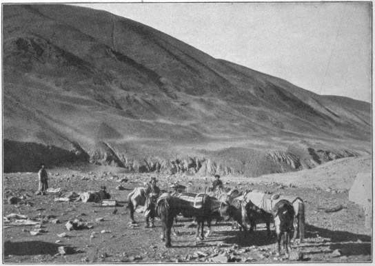
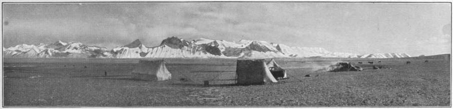
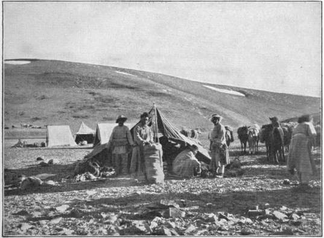
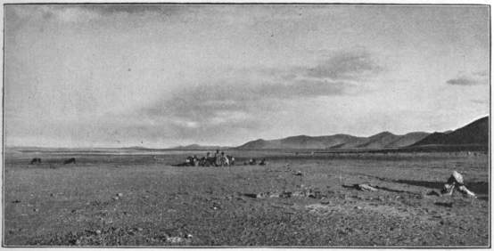
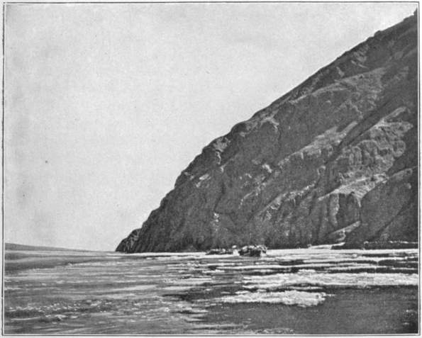
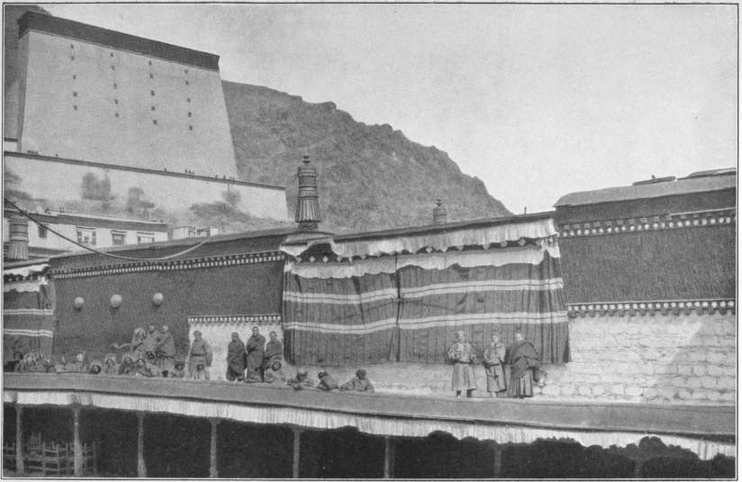
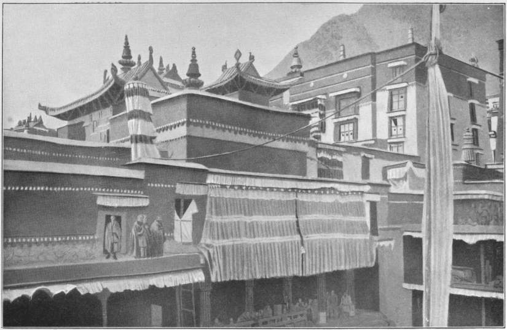
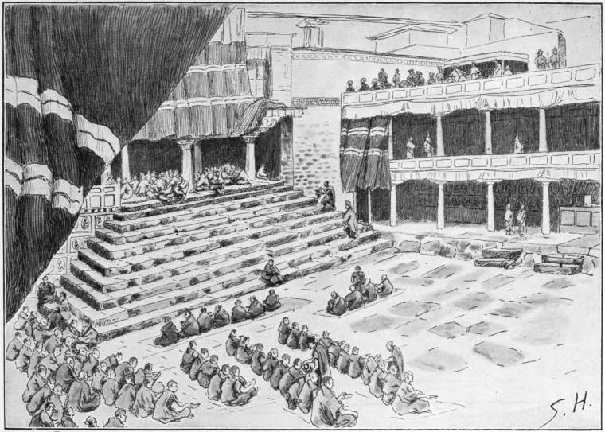

The Project Gutenberg EBook of Trans-Himalaya, Vol. 1 (of 2), by Sven Hedin
This eBook is for the use of anyone anywhere at no cost and with
almost no restrictions whatsoever. You may copy it, give it away or
re-use it under the terms of the Project Gutenberg License included
with this eBook or online at www.gutenberg.org
Title: Trans-Himalaya, Vol. 1 (of 2)
Discoveries and Adventurers in Tibet
Author: Sven Hedin
Release Date: August 18, 2013 [EBook #43497]
Language: English
Character set encoding: ISO-8859-1
*** START OF THIS PROJECT GUTENBERG EBOOK TRANS-HIMALAYA, VOL. 1 (OF 2) ***
Produced by Marius Masi, Greg Bergquist and the Online
Distributed Proofreading Team at http://www.pgdp.net (This
file was produced from images generously made available
by The Internet Archive/Canadian Libraries)
THE MACMILLAN COMPANY
NEW YORK · BOSTON · CHICAGO
ATLANTA · SAN FRANCISCO
MACMILLAN & CO., Limited
LONDON · BOMBAY · CALCUTTA
MELBOURNE
THE MACMILLAN CO. OF CANADA, Ltd.
TORONTO
| 1. Lord Minto, Viceroy of India. |
| Frontispiece |
TRANS-HIMALAYA
DISCOVERIES AND ADVENTURES
IN TIBET
BY
SVEN HEDIN
WITH 388 ILLUSTRATIONS FROM PHOTOGRAPHS, WATER-
COLOUR SKETCHES, AND DRAWINGS BY THE AUTHOR
AND 10 MAPS
IN TWO VOLUMES
VOL. I
New York
THE MACMILLAN COMPANY
1909
All rights reserved
Copyright, 1909,
By THE MACMILLAN COMPANY.
Set up and electrotyped. Published December, 1909.
Norwood Press
J. S. Cushing Co.—Berwick & Smith Co.
Norwood, Mass., U.S.A.
TO
HIS EXCELLENCY
THE EARL OF MINTO
VICEROY OF INDIA
WITH GRATITUDE AND ADMIRATION
FROM THE AUTHOR
PREFACE
In the first place I desire to pay homage to the memory of my patron, King Oskar of Sweden, by a few words of gratitude. The late King showed as warm and intelligent an interest in my plan for a new expedition as he had on former occasions, and assisted in the fulfilment of my project with much increased liberality.
I estimated the cost of the journey at 80,000 kronor (about £4400), and this sum was subscribed within a week by my old friend Emmanuel Nobel, and my patrons, Frederik Löwenadler, Oscar Ekman, Robert Dickson, William Olsson, and Henry Ruffer, banker in London. I cannot adequately express my thanks to these gentlemen. In consequence of the political difficulties I encountered in India, which forced me to make wide detours, the expenses were increased by about 50,000 kronor (£2800), but this sum I was able to draw from my own resources.
As on former occasions, I have this time also to thank Dr. Nils Ekholm for his great kindness in working out the absolute heights. The three lithographic maps have been compiled from my original sheets with painstaking care by Lieutenant C. J. Otto Kjellström, who devoted all his furlough to this troublesome work. The astronomical points, nearly one hundred, have been calculated by the Assistant Roth of the Stockholm Observatory; a few points, which appeared doubtful, were omitted in drawing the route on the map, which is based on points previously determined. The map illustrating my narrative in the Geographical Journal, April 1909, I drew roughly from memory without consulting the original sheets, for I had no time to spare; the errors which naturally crept in have been corrected on the new maps, but I wish to state here the cause of the discrepancy. The final maps, which I hope to publish in a voluminous scientific work, will be distinguished by still greater accuracy and detail.
I claim not the slightest artistic merit for my drawings, and my water-colours are extremely defective both in drawing and colouring. One of the pictures, the lama opening the door of the mausoleum, I left unfinished in my haste; it has been thrown in with the others, with the wall-paintings and shading incomplete. To criticize these slight attempts as works of art would be like wasting gunpowder on dead crows. For the sake of variety several illustrations have been drawn by the British artists De Haenen and T. Macfarlane, but it must not be assumed that these are fanciful productions. Every one of them is based on outline drawings by myself, a number of photographs, and a full description of the scene. De Haenen’s illustrations appeared in the London Graphic, and were ordered when I was still in India. Macfarlane’s drawings were executed this summer, and I was able to inspect his designs and approve of them before they were worked up.
As to the text, I have endeavoured to depict the events of the journey as far as the limited space permitted, but I have also imprudently allowed myself to touch on subjects with which I am not at all familiar—I allude in particular to Lamaism. It has been unfortunate that I had to write the whole book in 107 days, during which many hours were taken up with work connected with the maps and illustrations and by an extensive correspondence with foreign publishers, especially Albert Brockhaus of Leipzig, who never wearied in giving me excellent advice. The whole work has been hurried, and the book from beginning to end is like a vessel which ventures out into the ocean of the world’s tumult and of criticism with many leaks and cracks.
My thanks are also due to my father, who made a clean copy from my illegible manuscript; and to my mother, who has saved me from many mistakes. Dr. Carl Forstrand has revised both the manuscript and the proof-sheets, and has compiled the Swedish index.
The seven and thirty Asiatics who followed me faithfully through Tibet, and contributed in no small degree to the successful issue and results of the expedition, have had the honour of receiving from His Majesty the King of Sweden gold and silver medals bearing the portrait of the King, a crown, and an inscription. I humbly beg His Majesty to accept my warmest and most sincere thanks for his great generosity.
The book is dedicated to Lord Minto, as a slight testimony of my gratitude for all his kindness and hospitality. It had been Lord Minto’s intention to further my plans as Lord Curzon would have done if he had still been Viceroy of India, but political considerations prevented him. When, however, I was actually in Tibet, the Viceroy was free to use his influence with the Tashi Lama, and the consequence was that many doors in the forbidden land, formerly tightly closed, were opened to me.
Dear reminiscences of India hovered about my lonesome years in dreary Tibet like the pleasant rustling of palm leaves. It will suffice to mention men like Lord Kitchener, in whose house I spent a week never to be forgotten; Colonel Dunlop Smith, who took charge of my notes and maps and sent them home, and also forwarded a whole caravan of necessaries to Gartok; Younghusband, Patterson, Ryder, Rawling, and many others. And, lastly, Colonel Longe, Surveyor-General, and Colonel Burrard, of the Survey of India, who, with the greatest kindness, had my 900 map-sheets of Tibet photographed, and stored the negatives among their records in case the originals should be lost, and who, after I had placed my 200 map-sheets of Persia at the disposal of the Indian Government, had them worked up in the North-Western Frontier Drawing Office and combined into a fine map of eleven printed sheets—a map which is to be treated as “confidential” until my scientific works have appeared.
It is with the greatest pleasure that I avail myself of this opportunity of expressing my sincere gratitude for all the innumerable tokens of sympathy and appreciation which I received in all parts of the United Kingdom, and for all the honours conferred on me by Societies, and the warm welcome I met with from the audiences I had the pleasure of addressing. I shall always cherish a proud and happy remembrance of the two months which it was my good-fortune to spend in the British Isles; and the kindness then showered upon me was the more delightful because it was extended also to two of my sisters, who accompanied me.
Were I to mention all the ladies and gentlemen to whom I am especially indebted, I could fill several pages. But I cannot let this book go forth through the English-speaking world without expressing my sincere gratitude to Lord Curzon for the great and encouraging interest he has always taken in myself and my journeys; to Lord Morley for the brilliant speech he delivered after my first lecture—the most graceful compliment ever paid me, as well as for many other marks of kindness and sympathy shown to me by the Secretary of State for India; to the Swedish Minister in London, Count Herman Wrangel, for all the valuable services he rendered me during and after my journey; to Major Leonard Darwin and the Council and Members of the Royal Geographical Society, to whom I was delighted to return, not as a strange guest, but as an old friend; to the famous and illustrious Universities of Oxford and Cambridge, where I was overwhelmed with exceptional honours and boundless hospitality; to the Royal Scottish Geographical Society, where twice before I had received a warm reception. Well, when I think of those charming days in England and Scotland I am inclined to dwell too long upon them, and I must hasten to a conclusion. But there is one more name, which I have left to the last, because it has been very dear to me for many years, that of Dr. J. Scott Keltie. The general public will never know what it means to be the Secretary and mainspring of the Royal Geographical Society, to work year after year in that important office in Savile Row, to receive explorers from all corners of the world and satisfy all their demands, without ever losing patience or ever hearing a word of thanks. I can conceive from my own experience how much trouble I have caused Dr. Keltie, but yet he has always met me with the same amiability and has always been a constant friend, whether I have been at home or away for years on long journeys.
Dr. M. A. Stein started and returned from his splendid journey in Central Asia at the same times as myself. We crossed different parts of the old continent, but we have several interests in common, and I am glad to congratulate Dr. Stein most heartily on his important discoveries and the brilliant results he has brought back.
It is my intention to collect in a third volume all the material for which there is no room in Trans-Himalaya. For instance, I have been obliged to omit a description of the march northwards from the source of the Indus and of the journey over the Trans-Himalaya to Gartok, as well as of the road from Gartok to Ladak, and the very interesting route from the Nganglaring-tso to Simla. I have also had to postpone the description of several monasteries to a later opportunity. In this future book I will also record my recollections of beautiful, charming Japan, where I gained so many friends, and of Korea, Manchuria, and Port Arthur. The manuscript of this later volume is already finished, and I long for the opportunity of publicly thanking the Japanese, as well as our representative in Japan and China, the Minister Extraordinary, Wallenberg, for all the delightful hospitality and all the honours showered down on me in the Land of the Rising Sun.
Lastly, the appetite of young people for adventures will be satisfied in an especial work.
I am glad to be able to announce at the eleventh hour that the Madrassi Manuel, who in Chapter IX. was reported lost, has at length been found again.
In conclusion, I must say a few words of thanks to my publishers, and first of all to Herre K. O. Bonnier of Stockholm, for his valuable co-operation and the elegant form in which he has produced my book, and then to the firm of F. A. Brockhaus, Leipzig; the “Elsevier” Uitgevers Maatschappij, Amsterdam; Hachette & Cie, Paris; “Kansa,” Suomalainen Kustannus-O-Y, Helsingfors; the Robert Lampel Buchhandlung (F. Wodianer & Söhne) Act.-Ges., Budapest; Macmillan & Co., Ltd., London and New York; J. Otto, Prague; Fratelli Treves, Milan.
SVEN HEDIN.
Stockholm, September, 1909.
CONTENTS
| CHAPTER I | |
| PAGE | |
| Simla | 1 |
| CHAPTER II | |
| Departure from Srinagar | 21 |
| CHAPTER III | |
| The Road to Leh | 35 |
| CHAPTER IV | |
| The Last Preparations | 46 |
| CHAPTER V | |
| The Start for Tibet | 60 |
| CHAPTER VI | |
| To the Edge of the Tibetan Tableland | 72 |
| CHAPTER VII | |
| Over the Crest of the Karakorum | 84 |
| CHAPTER VIII | |
| To Lake Lighten | 97 |
| CHAPTER IX | |
| On the Lake in a Storm | 106 |
| CHAPTER X | |
| Death in the Jaws of Wolves—or Shipwreck | 119 |
| CHAPTER XI | |
| Great Losses | 132 |
| CHAPTER XII | |
| In Unknown Country | 146 |
| CHAPTER XIII | |
| Unfortunate Days | 158 |
| CHAPTER XIV | |
| In the Land of the Wild Yak | 171 |
| CHAPTER XV | |
| The First Nomads | 181 |
| CHAPTER XVI | |
| Our Fortunes on the Way to the Bogtsang-tsangpo | 196 |
| CHAPTER XVII | |
| Christmas in the Wilds | 211 |
| CHAPTER XVIII | |
| Ten Days on the Ice of Ngangtse-tso | 223 |
| CHAPTER XIX | |
| Driven Back | 236 |
| CHAPTER XX | |
| Onwards through the Forbidden Land | 249 |
| CHAPTER XXI | |
| Over the Trans-Himalaya | 264 |
| CHAPTER XXII | |
| To the Bank of the Brahmaputra | 276 |
| CHAPTER XXIII | |
| Down the Tsangpo by Boat—Entry into Shigatse | 288 |
| CHAPTER XXIV | |
| The New Year Festival | 301 |
| CHAPTER XXV | |
| The Tashi Lama | 317 |
| CHAPTER XXVI | |
| The Graves of the Pontiffs | 329 |
| CHAPTER XXVII | |
| Popular Amusements of the Tibetans | 340 |
| CHAPTER XXVIII | |
| Monks and Pilgrims | 347 |
| CHAPTER XXIX | |
| Walks in Tashi-lunpo—The Disposal of the Dead | 361 |
| CHAPTER XXX | |
| Our Life in Shigatse | 374 |
| CHAPTER XXXI | |
| Political Complications | 388 |
| CHAPTER XXXII | |
| Tarting-gompa and Tashi-gembe | 402 |
| CHAPTER XXXIII | |
| The Raga-tsangpo and the My-chu | 415 |
| CHAPTER XXXIV | |
| To Linga-gompa | 427 |
ILLUSTRATIONS
| PAGE | |
1. Lord Minto, Viceroy of India | Frontispiece |
2. Colonel Sir Francis Younghusband, Commander of the English Expedition to Tibet, Resident in Kashmir | 10 |
3. Colonel J. R. Dunlop Smith, Private Secretary to the Viceroy | 10 |
4. Viceregal Lodge in Simla | 12 |
5. Lady Minto and the Author on the Terrace of the Viceregal Lodge | 14 |
6. Herbert, Viscount Kitchener of Khartum, Late Commander-in-Chief of the Indian Army | 18 |
7. The Maharaja of Jammu and Kashmir | 22 |
8. Palace of H.H. the Maharaja of Kashmir in Srinagar | 26 |
9. The Jhelam in Srinagar | 28 |
10. The Start from Ganderbal | 30 |
11. My Escort | 30 |
12. My Three Puppies | 32 |
13. Robert, the Eurasian | 32 |
14. Ganpat Sing, the Rajput | 32 |
15. Manuel, the Cook | 32 |
16. In Front of Nedou’s Hotel in Srinagar | 34 |
17. Some of our Mules | 34 |
18. An Amateur Photographer photographed | 34 |
19. The Road to Baltal | 38 |
20. Kargil | 40 |
21. Chhorten in Lamayuru | 40 |
22. Church Music in Lamayuru | 42 |
23. Portrait of a Lama | 42 |
24. Portrait of a Lama | 42 |
25. The Sumto Valley | 44 |
26. Bridge of Alchi | 44 |
27. Girl in Niemo | 44 |
28, 29. Palace of the Kings of Ladak in Leh | 44 |
30. Muhamed Isa | 46 |
31. Guffaru | 52 |
32. The Raja of Stok | 56 |
33. Portal of the Palace in Leh | 56 |
34. View over the Indus Valley from the Roof of the Palace in Leh | 56 |
35. Lama of High Rank in Leh | 56 |
36. Monuments to Stoliczka and Dalgleish, Leh | 58 |
37. Religious Objects from Sanskar | 60 |
38. Images of Gods. A miniature Chhorten on the right. Holy Books, Temple Vessels. On either side of the small Altar-table wooden blocks with which the Holy Books are printed | 60 |
39. Tikze-gompa, Monastery in Ladak | 62 |
40. Masked Lamas in the Court of Ceremonies in Hemis-gompa (Ladak) | 64 |
41. Group of Masked Lamas in Hemis-gompa | 64 |
42. From Singrul, looking towards the Pass, Chang-la | 66 |
43. View from Sultak, August 17, 1906 | 66 |
44. Drugub | 66 |
45. My old friend Hiraman from Ladak | 70 |
46. Chiefs of Tankse and Pobrang; Muhamed Isa, the Caravan Leader, in the Background | 70 |
47. The Way to the Marsimik-la | 74 |
48. Spanglung | 74 |
49. Spanglung | 78 |
50. Camp near Pamzal | 78 |
51. The Chang-chenmo and the Way to Gogra | 78 |
52. Muhamed Isa in the River Chang-chenmo near Pamzal | 80 |
53. Rabsang, Adul, Tsering, and Muhamed Isa | 82 |
54. Our Horses at the Karakorum | 82 |
55. In the Snow, N.E. of Chang-lung-yogma | 86 |
56. My Tent | 86 |
57. Lake Lighten | 86 |
58a, 58b. Pantholops Antelope | 90 |
59, 60. Ovis Ammon | 90 |
61. A Gully at Camp 8 (Aksai-chin) | 94 |
62. The hired Ladakis and the Provision Sacks in North-West Chang-tang | 98 |
63. Namgyal with a Sack of Yak-dung | 98 |
64. Shelter of Provision Sacks | 100 |
65. Camp in a narrow Valley, Camp 41 | 100 |
66. Robert, Muhamed Isa, and two Servants by a Fire | 100 |
67. The large piebald Yarkand Horse | 104 |
68, 69. The Slain Yaks; Tundup Sonam, the Hunter on the left in 68 | 104 |
70. Rehim Ali, one of my Ladakis on the First Crossing of Tibet | 108 |
71. Starting on a Voyage | 110 |
72. In Peril on Lake Lighten | 112 |
73. The Author and Rehim Ali pull the Boat out of the Waves up on to the Shore | 116 |
74. Camp at the Yeshil-kul | 118 |
75. The Pul-tso, looking East | 118 |
76. Horses and Mules in open Country | 118 |
77. Death in the Jaws of Wolves—or Shipwreck | 122 |
78. A Dangerous Situation on the Yeshil-kul. In Moonshine | 126 |
79. At Deasy’s Camp | 132 |
80. Afternoon Tea in the open Air | 132 |
81. Melting Snow for Drinking-Water | 132 |
82. Preparations for Dinner at Camp 41 | 152 |
83. The Author, Robert, and Rehim Ali attacked by a wounded Yak | 170 |
84. Rehim Ali falls to the Ground and thus rescues us from the furious Yak | 174 |
85, 86. The First Tibetans | 180 |
87. Smoking Camp-fires in the Heart of Chang-tang | 186 |
88. Our Yaks, bought from the First Tibetans | 186 |
89. “Where are you going?” they asked me | 200 |
90. Near the Dangra-yum-tso | 216 |
91, 92, 93. On the Ngangtse-tso | 226 |
94. In a Snowstorm on the Ice of the Ngangtse-tso | 234 |
95. Hlaje Tsering and his Travelling Companion, a Lama, at my Tent on the Ngangtse-tso | 242 |
96. Servants of Hlaje Tsering | 252 |
97. Messenger with Letters from Home, and his Travelling Companion | 252 |
98. Hlaje Tsering setting out | 252 |
99. Three Tibetans saluting | 264 |
100. Pass of La-rock. Mani Heap with Fluttering Prayer-Streamers | 274 |
101. On the Bank of the Tsangpo (Brahmaputra) | 274 |
102. The Tsangpo with Floating Ice | 282 |
103. The Valley of the Tsangpo above Shigatse | 282 |
104. House in the Village of Rungma | 286 |
105. Garden of the Tashi Lama in the Village of Tanak | 286 |
106. Ferry-Boats | 290 |
107. Pilgrims on the Way to Tashi-lunpo | 290 |
108. Court of Religious Ceremonies in Tashi-lunpo | 296 |
109. Religious Decorations on the Roofs of Tashi-lunpo to exorcise Evil Spirits | 296 |
110. The Upper Balcony of the Court of Ceremonies in Tashi-lunpo | 300 |
111, 112. The Profanum Vulgus at the New Year Festival in Shigatse | 304 |
113. Lama with Shell-Trumpet | 306 |
114. Lama with Flute used in Religious Services | 306 |
115, 116, 117. Lamas in Dancing Masks | 308 |
118. View of Tashi-lunpo | 310 |
119. Street in Tashi-lunpo, with Lamas | 312 |
120. Street in Tashi-lunpo | 314 |
121. The Labrang, the Palace of the Tashi Lama | 316 |
122. Interior of the Palace of the Tashi Lama | 322 |
123. View of a Part of Tashi-lunpo, with the Façade of a Mausoleum of a Grand Lama | 324 |
124. Façade of the Mausoleum of the First Tashi Lama. The Court of Ceremonies in the Foreground | 326 |
125, 126. Interiors of two Mausoleums of Grand Lamas in Tashi-lunpo | 328 |
127. The Kanjur-lhakang in Tashi-lunpo | 330 |
128. Portal of the Mausoleum of the Third Tashi Lama in Tashi-lunpo | 332 |
129. The Namgyal-lhakang with the Figure of Tsong Kapa, in Tashi-lunpo Coloured | 334 |
130. Reading Lama with Dorche (Thunderbolt) and Drilbu (Prayer-Bell) | 336 |
131. Lama with Prayer-Drum | 336 |
132. Entrance to the Tomb of the Fifth Tashi Lama in Tashi-lunpo Coloured | 338 |
133. Staircase to the Mausoleum of the Fifth Tashi Lama in Tashi-lunpo | 340 |
134. Shigatse-dzong (the Fortress) | 342 |
135. Shigatse, Capital of the Province of Chang (11,880 feet) | 344 |
136. Chinese New Year Festival in my Garden | 346 |
137. Some of the Members in the Shooting Competition at the New Year Festival | 346 |
138. Popular Diversion in Shigatse | 348 |
139. Nepalese performing Symbolical Dances at the New Year Festival | 350 |
140. Dancing Nepalese at the New Year Festival, Tashi-lunpo | 352 |
141. The Kitchen in Tashi-lunpo | 354 |
142. Colonnade in Tashi-lunpo | 354 |
143. Lamas drinking Tea in the Court of Ceremonies in Tashi-lunpo | 358 |
144. Part of Shigatse | 362 |
145. The Tashi Lama returning to the Labrang after a Ceremony | 362 |
146. The Panchen Rinpoche, or Tashi Lama | 366 |
147. Portrait of the Tashi Lama | 370 |
148. Lamas with Copper Tea-pots | 374 |
149. Female Pilgrim from Nam-tso and Mendicant Lama | 374 |
150. The Great Red Gallery of Tashi-lunpo | 376 |
151. Chhorten in Tashi-lunpo | 378 |
152. Portal in Tashi-lunpo | 380 |
153. Group of Lamas in Tashi-lunpo | 380 |
154. Lecture in Tashi-lunpo | 382 |
155. Female Pilgrims from the Nam-tso | 384 |
156. Tibetans in Shigatse | 384 |
157, 158, 159. Tibetan Girl and Women in Shigatse | 386 |
160. A Chinaman in Shigatse | 388 |
161. A Tibetan in Shigatse | 388 |
162. A Lama in Tashi-lunpo | 388 |
163. Door-keeper in Tsong Kapa’s Temple | 388 |
164. Dancing Boys with Drums | 390 |
165. Wandering Nun with a Tanka depicting a Religious Legend and singing the Explanation. (In our Garden at Shigatse.) | 394 |
166. Gandän-chöding-gompa, a Nunnery in Ye | 394 |
167. Duke Kung Gushuk, Brother of the Tashi Lama | 398 |
168. The little Brother of the Tashi Lama, the Wife of Kung Gushuk, and her five Servants | 402 |
169. The little Brother of His Holiness with a Servant | 404 |
170. The Author drawing the Duchess Kung Gushuk | 406 |
171. Major W. F. O’Connor, British Trade Agent in Gyangtse, now Consul in Seistan | 408 |
172. Captain C. G. Rawling | 408 |
173, 174. Tarting-gompa | 410 |
175. Linga-gompa | 410 |
176. Lung-Ganden-gompa near Tong | 410 |
177. Inscription and Figure of Buddha carved in Granite near the Village of Lingö | 410 |
178. Tarting-gompa | 412 |
179. Sego-chummo Lhakang in Tarting-gompa | 412 |
180. Bridge to the Monastery Pinzoling (on the right) | 414 |
181. Group of Tibetans in the Village of Tong | 418 |
182. Inhabitants of the Village of Govo | 418 |
183. Lama in Tong | 422 |
184. Old Tibetan | 422 |
185. Strolling Musicians | 424 |
186. The Handsome Woman, Putön | 426 |
187. On the My-chu near Linga | 430 |
188. Village and Monastery of Linga | 430 |
MAPS
| 1. | The Latest Map of Tibet. |
| 2. | Carte Générale du Thibet ou Bout-tan. |
| 3. | Map of Southern Tibet (Hodgson). |
| 4. | The Source-Region of the Brahmaputra (Nain Sing). |
| 5. | Sketch-Map of Webber’s Route in 1866. |
| 6. | Saunders’ Map of South Tibet. |
| 7. | The Source-Region of the Brahmaputra (Ryder). |
| (At end of Volume.) | |
CHAPTER I
SIMLA
In the spring of the year 1905 my mind was much occupied with thoughts of a new journey to Tibet. Three years had passed since my return to my own country; my study began to be too small for me; at eventide, when all around was quiet, I seemed to hear in the sough of the wind a voice admonishing me to “come back again to the silence of the wilderness”; and when I awoke in the morning I involuntarily listened for caravan bells outside. So the time passed till my plans were ripened and my fate was soon decided; I must return to the freedom of the desert and hie away to the broad plains between the snow-clad mountains of Tibet. Not to listen to this secret voice when it speaks strongly and clearly means deterioration and ruin; one must resign oneself to the guidance of this invisible hand, have faith in its divine origin and in oneself, and submit to the gnawing pain which another departure from home, for so long a time and with the future uncertain, brings with it.
In the concluding lines of my scientific work on the results of my former journey (Scientific Results) I spoke of the impossibility of giving a complete description of the internal structure of Tibet, its mountains and valleys, its rivers and lakes, while so large a part of the country was still quite unknown. “Under these circumstances,” I said (vol. iv. p. 608), “I prefer to postpone the completion of such a monograph till my return from the journey on which I am about to start.” Instead of losing myself in conjectures 2 or arriving at confused results owing to lack of material, I would rather see with my own eyes the unknown districts in the midst of northern Tibet, and, above all, visit the extensive areas of entirely unexplored country which stretches to the north of the upper Brahmaputra and has not been traversed by Europeans or Indian pundits. Thus much was à priori certain, that this region presented the grandest problems which remained still unsolved in the physical geography of Asia. There must exist one or more mountain systems running parallel with the Himalayas and the Karakorum range; there must be found peaks and ridges on which the eye of the explorer had never lighted; turquoise-blue salt lakes in valleys and hollows reflect the restless passage of the monsoon clouds north-eastwards, and from their southern margins voluminous rivers must flow down, sometimes turbulent, sometimes smooth. There, no doubt, were nomad tribes, who left their winter pastures in spring, and during the summer wandered about on the higher plains when the new grass had sprung up from the poor soil. But whether a settled population dwelt there, whether there were monasteries, where a lama, punctual as the sun, gave the daily summons to prayer from the roof by blowing through a shell,—that no one knew. Tibetan literature, old and recent, was searched in vain for information; nothing could be found but fanciful conjectures about the existence of a mighty chain, which were of no value as they did not accord with the reality and were not based on any actual facts. On the other hand, a few travellers had skirted the unknown country on the north and south, east and west, myself among the number. Looking at a map, which shows the routes of travellers in Tibet, one might almost suppose that we had purposely avoided the great white patch bearing on the recently published English map only the word “Unexplored.” Hence it might be concluded that it would be no easy feat to cross this tract, or otherwise some one would ere now have strayed into it. In my book Central Asia and Tibet I have fully described the desperate attempts I made in the autumn and winter of 3 1901 to advance southwards from my route between the Zilling-tso and the Pangong-tso. One of my aims was to find an opportunity of visiting one or more of the great lakes in Central Tibet which the Indian pundit, Nain Sing, discovered in 1874, and which since then had never been seen except by the natives. During my former journey I had dreamt of discovering the source of the Indus, but it was not then my good fortune to reach it. This mysterious spot had never been inserted in its proper place on the map of Asia—but it must exist somewhere. Since the day when the great Macedonian Alexander (in the year 326 B.C.) crossed the mighty stream with his victorious host, the question of the situation of this spot has always stood in the order of the day of geographical exploration.
It was both impossible and unnecessary to draw up beforehand a complete plan of a journey of which the course and conclusion were more than usually uncertain, and depended on circumstances quite beyond my control. I did, indeed, draw on a map of Tibet the probable route of my journey, that my parents and sisters might know roughly whereabouts I should be. If this map be compared with my actual route it will be seen that in both cases the districts visited are the same, but the course and details are totally different.
In the meantime I wrote to Lord Curzon, then Viceroy of India, informed him of my plan, and begged for all the assistance that seemed to me necessary for a successful journey in disturbed Tibet, so lately in a state of war.
Soon after I received the following letter, which I reproduce here with the consent of the writer:
Viceregal Lodge, Simla,
July 6, 1905.
My dear Dr. Hedin—I am very glad that you propose to act upon my advice, and to make one more big Central Asian journey before you desist from your wonderful travels.
I shall be proud to render you what assistance lies in my power while I still remain in India, and only regret that long before your 4 great expedition is over I shall have left these shores. For it is my intention to depart in April 1906.
Now as regards your plan. I gather that you will not be in India before next spring, when perhaps I may still see you. I will arrange to have a good native surveyor ready to accompany you, and I will further have a man instructed in astronomical observations and in meteorological recording—so as to be available for you at the same time.
I cannot say what the attitude of the Tibetan Government will be at the time that you reach India. But if they continue friendly, we will of course endeavour to secure for you the requisite permits and protections.
Assuring you that it will give me the greatest pleasure in any way to further your plans,—I am yours sincerely,
Curzon.
It may easily be conceived how important this active protection and help on the part of the Viceroy was to me. I was especially pleased that I was allowed to take with me native topographers experienced in survey work, for with their co-operation the maps to be compiled would be far more valuable, while, released from this complicated work which takes up so much time, I could devote myself entirely to researches in physical geography.
With this kind letter at starting I commenced my fifth journey to Asia. Lord Curzon had, indeed, when I reached India, already left his post, and a new Government was shortly to take the helm in England with Sir Henry Campbell-Bannerman as premier. But Lord Curzon’s promises were the words of a Cæsar, and I had not the slightest doubt that a Liberal Government would respect them.
On October 16, 1905, the same day on which I had started twelve years before on my journey through Asia, I again left my dear old home in Stockholm. This time it seemed far more uncertain whether I should see all my dear ones again; sometime or other the chain that binds us must be broken. Would it be granted me to find once more my home unchanged?
I travelled viâ Constantinople and the Black Sea, through Turkish Armenia, across Persia to Seistan, and through the deserts of Baluchistan to Nushki, where I 5 reached the most western offshoot of the Indian railway system. After the dust and heat of Baluchistan, Quetta seemed to me a fine fresh oasis. I left this town on May 20, 1906, descended in four hours from a height of 5500 feet to a country lying only 300 feet above sea-level, and found in Sibi a temperature of 100° F. in the evening. Next day I passed along the Indus and Sutlej through Samasata and Batinda to Ambala, and I was now, in the hottest part of the year, the only European in the train. The temperature rose to 107°, the height I had shortly before recorded in Baluchistan, but it was much more endurable in the shady carriage, which was protected by a roof and hanging screens from the direct heat of the sun; it was well, however, to avoid touching the outside of the carriage, for it was burning hot. Two window openings are covered with a tissue of root-fibres which are automatically kept moist, and a wind-catcher sends a draught into the carriage through the wet matting. At a window like this the temperature even at noon was only 81½°, and therefore I had nothing to complain of. At some stations there are excellent restaurants, and natives travelling on the train sell on the way lemonade and ice as clear as glass.
Nevertheless in India’s sultry dried-up plains one longs for the mountains with their pure cool air. From Kalka a small narrow-gauge railway carries one in 6½ hours to a height of 7080 feet, and one finds oneself in Simla, the summer residence of the Viceroy and the headquarters of the Indian Army. The road is one of the most charming and magnificent in the world. The little railway climbs up the steep flanks in the boldest curves, descends the slopes into deep and narrow ravines, passes along steep mountain spurs, where the train seems as though it would plunge into space from the extreme point; then the train crosses bridges which groan and tremble under its weight, enters pitch-dark tunnels, and again emerges into the blinding sunshine. Now we run along a valley, catching a glimpse of the bottom far below us, then mount upwards to a ridge affording an extensive view on both sides, then again traverse a steep slope where several 6 sections of the marvellously winding line can be seen below. The scene changes every other minute, new contours and landscapes present themselves, new points of view and lights and shades follow one another, and keep the attention of the traveller on the stretch. There are 102 tunnels on the route, most of them quite short, but the longest has a length of three-quarters of a mile.
We pass through one zone of vegetation after another. The flora of the plain is left far behind; now the eye notices new forms in new zones—forms characteristic of the various heights of the southern slopes of the Himalayas—and at last appear the dark deodar forests, the royal Himalayan cedars, with their luxuriant green foliage, amidst which are embedded the houses of Simla like swallows’ nests. How fascinating is this sight, but how much more imposing as a symbol of the power of the British Empire! Here the eagle has its eyry, and from its point of vantage casts its keen eyes over the plains of India. Here converge innumerable telegraph wires from all the corners and extremities of the British Empire, and from this centre numerous orders and instructions are daily despatched “On His Majesty’s Service only”; here the administration is carried on and the army controlled, and a host of maharajas are entangled in the meshes like the prey in the nest of a spider.
I approached Simla with some anxiety. Since Lord Curzon’s letter I had heard nothing more from the authorities in India. The singular town on its crescent-shaped ridge appears larger and larger, details become clearer and clearer, there remain only a couple of curves to pass, and then the train rolls into the station at Simla. Two servants from the Foreign Office, in scarlet liveries, took possession of my luggage, and I was welcomed in the Grand Hotel by my old friend Colonel Sir Francis Younghusband—we kept Christmas together in Kashgar in 1890, and he was just as friendly and pleasant as then. I was his guest at dinner in the United Service Club. During half the night we revelled in old reminiscences of the heart of Asia, spoke of the powerful Russian Consul-General, Petrovski, in Kashgar, of the English expedition 7 to Lhasa, which was led by Younghusband, of life in Simla and the coming festivities in the summer season—but of my prospects my friend did not utter a word! And I did not ask him; I could believe that if everything had been plain and straightforward he would have told me at once. But he was silent as the grave, and I would not question him, though I was burning with impatience to learn something or other.
When I went out on to my balcony on the morning of May 23, I felt like a prisoner awaiting his sentence. Below me the roofs of Simla glittered in the sunshine, and I stood on a level with the tops of the cedars; how delightful it was here far above the heavy sultry air of the plain. To the north, through a gap in the luxuriant woods, appeared a scene of incomparable beauty. There gleamed the nearest ranges of the Himalayas covered with eternal snow. The crest shone white against the turquoise-blue sky. The air was so clear that the distance seemed insignificant; only a few days’ journey separated me from these mountains, and behind them lay mysterious Tibet, the forbidden land, the land of my dreams. Later on, towards mid-day, the air became hazy and the glorious view vanished, nor was it again visible during the few weeks I spent in Simla. It seemed as though a curtain had fallen between me and Tibet, and as though it had been vouchsafed to me to see only once from a distance the mountains over which the road led into the land of promise.
It was a sad day; at twelve o’clock I was to hear my sentence. Younghusband came for me and we went together to the Foreign Secretary’s Office. Sir Louis Dane received me with great amiability, and we talked of Persia and the trade route between India and Seistan. Suddenly he became silent, and then said after a pause:
“It is better you should know at once; the Government in London refuses you permission to pass into Tibet across the Indian frontier.”
“Sad news! But why is this?”
“That I do not know; probably because the present Government wishes to avoid everything which may give 8 rise to friction on the frontier; the granting of your request throws responsibility on us should anything happen to you. Yes, it is a pity. What do you think of doing now?”
“If I had had any suspicion of this in Teheran, I would have taken my way through Russian Asia, for I have never met with any difficulties from the Russians.”
“Well, we have done out here all we could to forward your plans. The three native surveyors Lord Curzon promised you have been trained for six months, and hold themselves in readiness at Dehra Dun. But probably this too will be countermanded from London. Still, we have not yet given up all hope, and we expect the final answer on June 3.”
To have to wait eleven days for the final decision was unbearable. Perhaps a personal application might have a favourable effect. I therefore sent the following telegram to the English Prime Minister:
The friendly words, in which your Excellence referred two years ago in Parliament to my journey and my book, encourage me to apply direct to you, and to beg you in the interests of geographical science to grant me the permission of your Government to pass into Tibet by way of Simla and Gartok. I propose to explore the region, mostly uninhabited, to the north of the Tsangpo, and the lakes lying in it, and then to return to India. I am thoroughly acquainted with the present political relations between India and Tibet, and as I have held peaceful intercourse with Asiatics since my twenty-first year, I shall also this time behave with circumspection, follow the instructions I am given, and consider it a point of honour to avoid all disputes on the frontier.
And now we waited again; the days passed, my three native assistants held themselves ready in Dehra Dun for the journey, the Commander-in-chief, Lord Kitchener, assured me that he should be pleased to place at my disposal twenty armed Gurkhas—only the permission sought from the Secretary of State for India, Mr. John Morley, must first arrive; for it was he who held the keys of the frontier, and on him everything depended. Lord Minto, the new Viceroy of India (Frontispiece), did 9 everything in his power. He wrote long complete statements of affairs and sent one telegram after another. A refusal could not discourage him; he always sent off another despatch beginning with the words: “I beg His Majesty’s Ministry to take once more into consideration that,” etc. When the assurance was given from London that the refusal was not intended for me personally, but that the same answer had been communicated to several British officers, Lord Minto in his last telegram begged that I might be permitted to accompany the British officer who was to travel to Gartok in summer to inspect the market there. But the Secretary of State kept immovably to his resolution, and I received the following reply to my telegram in a despatch of June 1, 1906, from the Secretary to the Viceroy:
The Prime Minister desires that the following message be communicated to Sven Hedin: “I sincerely regret that I cannot, for reasons which have doubtless been explained to you by the Indian Government, grant you the desired assistance for your journey to and in Tibet. This assistance has also been refused to the Royal Geographical Society in London, and likewise to British officers in the service of the Indian Government.”
The contents of the last London telegram intimated, then, that nothing was conceded to me. The Indian Government and the Viceroy could, of course, do nothing but obey, as usual, the orders from London. They were willing to do everything, and displayed the warmest interest in my plans, but they durst not help me. They durst not procure me a permit or passport from Lhasa, they durst not provide me with an escort, indispensable in the insecure country of Tibet, and I lost the privilege of taking with me three efficient topographers and assistants in my scientific observations, from which both sides would have derived advantage. But this was not all. Should I fall in with circumstances and cross the frontier with a party of natives on my own responsibility, the Indian Government had orders to stop me. Thus Tibet was barred to me from the side of India, and the English, that is, Mr. John Morley, closed the country as hermetically as ever 10 the Tibetans had done. I soon perceived that the greatest difficulties I had to overcome on this journey proceeded not from Tibet, its rude climate, its rarefied air, its huge mountains and its wild inhabitants, but—from England! Could I circumvent Mr. John Morley, I should soon settle with Tibet.
Hope is the last thing one resigns, and so I still hoped that all would turn out well in the end. Failure spurred my ambition and stretched my powers to the uttermost tension. Try to hinder me if you can, I thought; I will show you that I am more at home in Asia than you. Try to close this immense Tibet, try to bar all the valleys which lead from the frontier to the high plateaus, and you will find that it is quite impossible. I felt quite relieved when the last peremptory and somewhat curt refusal came and put an end to all further negotiations. I had a feeling as though I was suddenly left in solitude and the future depended on myself alone. My life and my honour for the next two years were at stake—of course I never thought of giving in. I had commenced this fifth journey with a heavy heart, not with trumpets and flourishes as on the former expeditions. But now it was all at once become my pet child. Though I should perish, this journey should be the grandest event of my life. It was the object of all my dreams and hopes, it was the subject of my prayers, and I longed with all my soul for the hour when the first caravan should be ready—and then every day would be a full chord in a song of victory.
| 2. Colonel Sir Francis Younghusband, Commander of the English Expedition to Tibet, Resident in Kashmir. | 3. Colonel J. R. Dunlop Smith, Private Secretary to the Viceroy. |
I do not venture to pass an opinion on the policy which then piled up in my way obstacles apparently insurmountable. It was at any rate prudent. For the future it will be necessary. If I had gone under British protection and accompanied by British subjects and then been killed, probably a costly punitive expedition must have been sent out to make an example; whether I were a Swede or an Englishman would have made no difference in this case. The view the English Secretary of State took of the matter is shown in his answer to Lord Percy’s question a month after I had received my answer: “Sven Hedin has been refused permission to penetrate into Tibet for political 11 reasons, in accordance with which even British subjects are not allowed to visit that country. The Indian Government favours the expeditions of experienced explorers, but the Imperial Government has decided otherwise, and considers it advisable to continue the isolation of Tibet which the late Government so carefully maintained.”
During this time I received many proofs of sympathy and friendship. I had true friends in India, and they felt it hard that they could not help me. They would have done it so gladly. I durst not ask them for anything lest I should place them in an awkward, troublesome position. Sir Louis Dane had informed me that if my petition were granted I should have to sign a bond, but what this would have contained I have never found out. Perhaps it dealt with some kind of responsibility for the men who accompanied me, or a promise not to visit certain districts, and a pledge to place the results of my journey at the disposal of the Indian Government—I know not. But now I was absolved from all obligations; freedom is after all the best, and he is the strongest who stands alone. Still, it would be exaggeration to say that I had then any great affection for the name of Mr. John Morley. How could I foresee that I should one day reckon him among my best friends, and think of him with warm respect and admiration?
After my first visit to the Foreign Office, Younghusband (Illustration 2) conducted me to the Viceregal Palace, to enter my name in the visiting list of Lord and Lady Minto. Younghusband is a gallant man, a type of the noblest that a people can produce. He was more annoyed than myself at the refusal of the Government; but he had in this connection a far more bitter experience—his expedition to Lhasa, which ought to have thrown open Tibet to scientific exploration, had been in vain. He took me on the way to Lord Minto’s private secretary, Colonel J. R. Dunlop Smith (Illustration 3), in whom I found a friend for life. He is one of the finest, noblest, most generous, and learned men that I have ever met. He is well educated in many subjects, and has a thorough knowledge of India, for he has lived there four-and-twenty years. When we 12 see such men in the most responsible posts, we can well conceive that the ruling race will weather many a violent storm, should they arise, among the three hundred millions of India.
My life at this time abounded in contrasts. How little did my sojourn at Simla resemble the years of solitude and silence that awaited me beyond the mountains veiled in dark masses of cloud! I cannot resist recalling some reminiscences of these extraordinarily delightful days.
Go with me to the first State dinner on May 24, 1906. Along the walls of the great drawing-room in the Viceregal Palace are assembled some hundred guests—all in full dress, in grand uniforms of various colours, and glittering with orders. One of them is taller than the rest by a whole head; he holds himself very upright, and seems cool-headed, energetic, and calm; he speaks to no one, but examines those about him with penetrating, bright bluish-grey eyes. His features are heavy, but interesting, serious, impassive, and tanned; one sees that he has had much experience and is a soldier who has stood fire. His uniform is scarlet, and a whole fortune in diamonds sparkles on his left breast. He bears a world-renowned, an imperishable name: Lord Kitchener of Khartum, the conqueror of Africa and Commander-in-chief of the Indian Army.
| 4. Viceregal Lodge in Simla. |
A gentleman comes up to me and asks if I remember our having sat together at a banquet of Lord Curzon’s. The Lieutenant-Governor of the Punjab is also one of my old acquaintances, and Sir Louis Dane introduces me right and left. A herald enters the room and announces the approach of the Viceroy, and Lord Minto, accompanied by his staff, makes the round of the room, greeting each one of his guests, myself only with the words, “Welcome to Simla.” The melancholy tone of the words did not escape me; he knew well that I did not feel as welcome as he and I should have wished. To the sound of music we move to the dining-room, are regaled with choice French dishes, eat off silver plate, and then rise again to take part in the levée, at which five hundred gentlemen are presented to the Viceroy, who stands at the steps of the throne. 13 Their names are called out one by one as they pass rapidly in front of the throne. Each one halts and turns to the Viceroy, who returns his deep reverence: he bowed this evening nine hundred times! When Indian princes or Afghan ambassadors pass before him, he does not bow, but lays his hand on the hilt of his guest’s sword as a sign of friendship and peace.
Next day I was invited to transfer my quarters to the palace (Illustration 4), and henceforth I was the guest of Lord and Lady Minto. The time I spent with them I shall never forget, and these weeks seem to me now like a dream or a fairy tale. Lord Minto is an ideal British gentleman, an aristocrat of the noblest race, and yet simple and modest. In India he soon became popular owing to his affability and kindness, and he does not think he occupies so high a position that he cannot speak a friendly word to any man out of the numerous tribes of the immense Empire committed to his rule. Lord Minto formerly served in India, and took part in the campaign against Afghanistan; after various experiences in three continents he was appointed Governor-General of Canada. In 1904 he returned to his estate of Minto in Scotland, intending to spend the remainder of his life there; then the King of England and Emperor of India invested him with the office of Viceroy and Governor-General of India. He is not the first Earl of Minto who has held this post, for his great-grandfather was Governor-General of the British possessions in the Indian peninsula a hundred years ago. Then one had to sail round the Cape of Good Hope in order to reach the country of the Hindus, a long, troublesome voyage. Therefore the first Lord Minto left his family at home. The letters exchanged between himself and his wife are still extant, and display an affection and faithfulness quite ideal. When his period of service in India had at length expired, he embarked on a vessel which carried him over the long way to his native land, and he hurried with the first coach straight to Minto. There his wife expected him; she looked along the road with longing eyes; the appointed time had long passed, and no carriage could be seen. At length a rider appeared in a cloud of dust, and 14 brought the news that Lord Minto had died only one post stage from his house. A small label on the packet of letters bears the words “Poor fools.” They were written by the first Lady Minto.
But now a new Minto family has blossomed into life. Comfort, simplicity, and happiness prevail in this charming home, where every member contributes to the beauty of the whole. A viceroy is always overwhelmed with work for the welfare of India, but Lord Minto preserved an unalterable composure, and devoted several hours daily to his family. We met at meals; some guests were usually invited to lunch, but at dinner we were frequently alone, and then the time passed most agreeably. Then Lady Minto told of her sojourn in Canada, where she travelled 116,000 miles by rail and steamer, accompanied her husband on his official tours and on sporting expeditions, shot foaming rapids in a canoe, and took part in dangerous excursions in Klondike. We looked over her diaries of that time; they consisted of thick volumes full of photographs, maps, cuttings, and autographs, and were interspersed with views and descriptions of singular interest. And yet the diary that Lady Minto had kept since her arrival in India was still more remarkable and attractive, for it was set in Oriental splendour and the pomp and gorgeousness of Eastern lands, was filled with maharajas bedecked with jewels, receptions in various states, processions and parades, elephants in red and gold, and all the grandeur and brilliancy inseparable from the court of an Indian viceroy. Three charming young daughters—the Ladies Eileen, Ruby, and Violet—fill this home with sunshine and cheerfulness, and, with their mother, are the queens of the balls and brilliant fêtes. Like their father, they are fond of sport, and ride like Valkyries.
| 5. Lady Minto and the Author on the Terrace of the Viceregal Lodge. |
Is it to be wondered at that a stranger feels happy in this house, where he is surrounded daily with kindness and hospitality? My room was over the private apartments of the Viceroy. On the ground-floor are State rooms, the large and elegant drawing-rooms, the dining-room, and the great ball-room decorated in white and gold. 15 The various rooms and saloons are reached from a large antechamber adorned with arms and heavy hangings; here there is a very lively scene during entertainments. An open gallery, a stone verandah, runs round most of the ground-floor, where visitors, couriers, chaprassis, and jamadars, wearing red viceregal uniforms and white turbans, move to and fro. Behind is the courtyard where carriages, rickshaws, and riders come and go, while well-kept paths lead to quiet terraces laid out from Lady Minto’s designs. Behind these terraces begins the forest with promenades in the shadow of the trees (Illustration 5).
From the great hall in the middle of the house a staircase leads to the first storey, where the family of the Viceroy occupy rooms which surpass all the rest in the tastefulness of their decoration. Two flights up are the guest-rooms. From an inner gallery you can look down into the great hall, where the scarlet footmen glide noiselessly up and down the stairs. Outside my window was a balcony, where every morning I looked in vain for a glimpse of the mountains on the borders of Tibet. The highest official of Peshawar, Sir Harold Deane, with his wife, and the Maharaja of Idar, were guests in the palace of the Viceroy for a couple of days. Sir Harold was a man one never forgets after once meeting him; strong, tall, manly, and amiable. The half-savage tribes and princes on the frontier of Afghanistan fear and admire him, and he is said to manage them with masterly tact. This meeting was very important to me, for Sir Harold gave me letters of introduction to the Maharaja of Kashmir and his private secretary, Daya Kishen Kaul. At my return to India, Sir Harold was, alas! dead. In him India has lost one of its best guardians.
The Maharaja of Idar was a striking type of an Indian Prince: he had a very dark complexion, handsome features, and an energetic bearing; he dressed for entertainments in silk, gold, and jewels, and altogether made an appearance which threw all Europeans quite into the shade. Yet he was exceedingly popular with them, and always a welcome guest. He is a great sportsman, a first-rate rider, and an exceedingly cool-headed hunter. He owes his great popularity 16 to the following incident: Once when an English officer died in the hot season near his palace, there was difficulty in finding a man to bury the corpse. As every one else refused, the Maharaja undertook the odious task himself. Scarcely had he returned to his palace when the steps were stormed by raving Brahmins, who cried out to him, with threats, that he had forfeited his rank, must be ejected from his caste, and was unworthy to have rule over the state. But he went calmly up to them and said that he knew only of one caste, that of warriors; then he ordered them to go away, and they obeyed.
I met many men in Simla whom I shall always count among my best friends—Generals Sir Beauchamp Duff and Hawkes, with their amiable consorts, and Colonel Adam and his wife, who spoke Russian; he was Lord Minto’s military secretary, and died during my absence; also Colonel M’Swiney and his wife. I was their guest at Bolaram, near Haidarabad, in 1902, and I had met the Colonel in the Pamirs in 1895; he, too, has been called away by death, only a month before he would have received his expected promotion to the command of the Ambala brigade. He was an exceptionally excellent and amiable man. I also made acquaintance with many members of Younghusband’s Lhasa expedition, one of whom, Captain Cecil Rawling, ardently wished he could get back to Tibet. We often met and concocted grand plans for a journey together to Gartok—hopes which all ended in smoke. The German Consul-General, Count Quadt, and his charming wife were also especial friends of mine. Her mother belonged to the Swedish family of Wirsén, and we conversed in Swedish. I shall never forget a dinner at their house. Dunlop Smith and I rode each in a rickshaw along the long road to Simla, through the town and as far again on the other side, to Count Quadt’s house, which was the Viceregal residence before Lord Dufferin built the new palace, the “Viceregal Lodge,” in the years 1884-1888. The road was dark, but we had lamps on the shafts; our runners strained at the carriage like straps, and their naked soles pattered like wood on the hard earth. We were late; Lord Kitchener was there already, and every one was waiting. 17 After dinner the guests were invited to go out into the compound forming the summit of the hill on which the old palace is built. The light of the full moon quivered through the mild intoxicating air, the hills around were veiled in mist and haze, and from the depths of the valleys rose the shrill penetrating rattle of grasshoppers. But this hill, where lively laughter resounded and conversation was stimulated by the effects of the dinner, seemed to be far above the rest of the world. Here and there dark firs or deodars peeped out of the mist with long outstretched arms like threatening ghosts. The night was quiet, everything but ourselves and the grasshoppers seemed to have gone to rest. Such an impression is never effaced. Etiquette forbade that any one should leave before Lord Kitchener—he had to give the signal for breaking up the party; but he found himself very comfortable here, and we talked in French with the wife of Colonel Townsend, drawing comparisons between the matrimonial state and the advantages of uncontrolled freedom. It was after midnight when the dictator of the feast rose, and then ladies and their cavaliers could make for their rickshaws. Silence reigned on the moonlit hill; only the shrill song of the grasshoppers still rose to heaven.
A couple of State balls also took place during my stay in the Viceregal Lodge. Then an endless succession of rickshaws streams up to the courtyard, winding like a file of glow-worms up Observatory Hill. One is almost astonished that there are so many of these small two-wheeled vehicles in Simla, but only the Viceroy, the Commander-in-chief, and the Governor of the Punjab are allowed to use horse carriages, because of the narrowness of the roads. Then elegant ladies rustle in low dresses of silk, with agrafes of diamonds in their hair, and pass through the entrance and hall escorted by cavaliers in full-dress uniforms. One is frightfully crushed in this flood of people who have spent hours in adorning themselves so brilliantly, but the scene is grand and imposing, a non plus ultra of gala toilets, a kaleidoscope of many colours, of gold and silver; the red uniforms of the officers stand out sharply against the light silk dresses of the ladies in white, pink, or 18 blue. Here and there the jewelled turban of a maharaja hovers over a sea of European coiffures. Then there is a sudden silence, a passage is opened through the crowd; the herald has announced the advent of the Viceroy and his party, and the band plays “God save the King.” The Viceroy and his lady walk slowly through the ranks, saluting on both sides, and take their seats on the thrones in the great ball-room; then the first waltz is played. The illustrious hosts summon first one and then another of their guests to converse with them; there is a rustling of silk, a humming and buzzing, shoe-soles glide with a scraping noise over the floor, and the dance-music hurries on its victims with irresistible force. The guests flock in small parties or large groups into the adjoining dining-room, and there sup at small tables. At length the ranks grow thin, the hosts retire, the wheels of the last rickshaw rattle over the sand of the courtyard, the electric lights are extinguished, and the palace is quiet again.
| 6. Herbert, Viscount Kitchener of Khartum, Late Commander-in-Chief of the Indian Army. |
Lord Kitchener’s residence stands at the end of the town of Simla, and is called Snowdon. The visitor enters first a large ante-room, which, with its tasteful arrangement and decoration, makes rather the impression of a reception room or a hall of honour bedecked with trophies. A fine portrait of Gordon Pasha is placed on an easel; opposite stand busts of Alexander and Cæsar. In the wainscot of the staircase is inserted the arm of the presidential chair which Uncle Kruger used in Pretoria, and on the tables, shelves, and friezes are valuable Chinese vases of the Kang-hi (1662-1722) and Kien-lung (1736-1795) periods; for Lord Kitchener is an enthusiastic collector of old Chinese porcelain, but only the very finest finds favour in his eyes. But what strikes the stranger most in this unique hall, and above all attracts his attention, are the trophies and flags from Lord Kitchener’s victories in the Sudan and South Africa. They hang down from their staves from an upper gallery, among them the standards of the Mahdi and the dervishes of Omdurman and Om Debraket, besides several Boer flags from the Transvaal and the Orange Free State. In the inner drawing-room we find the same luxurious decoration with Chinese porcelain vases and rare 19 ethnographical objects, among which certain Tibetan temple friezes carved in wood are of great value; they were brought by Younghusband’s Lhasa expedition. On the tables lie albums of photographs of Lord Kitchener’s numerous tours of inspection in India, and of his journey through the cold Pamir. At receptions the table is adorned with costly services in solid gold, gifts of the English nation to the victor of Africa (Illustration 6).
My time in Simla came to an end; it was useless to stay any longer after I had received the last decisive answer from London. On June 9 I took leave of the Viceroy and his youngest daughter, who were going to ride to Mashroba and pass the Sunday there. I cannot describe the leave-taking; it was so warm and hearty. Lord Minto wished that I might still carry out my intentions, and he hoped sincerely that we should again meet in India. I could not on the point of departure express all the gratitude I felt. He had done all that was in his power to help me, and had exposed himself to unpleasantnesses on my account. He had played an important part in my life’s course, and I knew that I had gained in him a lasting friend. It was a trial to have to say good-bye to him. He was more grieved than myself that our plans had miscarried, and for my part I felt that my honour now demanded that I should do my best.
On Sunday morning Lady Minto and her two eldest daughters also drove off to Mashroba. I bade them a last farewell, and thanked them for the boundless hospitality I had enjoyed in the Viceregal Lodge. The moment of parting was fortunately short; bitter it certainly was. Two fine carriages drove up with outriders, and escorted by native cavalry soldiers in red and gold, carrying lances in their hands. The ladies, in light bright summer toilets and hats trimmed with flowers, took their seats—the group of ladies of bluest blood, which through centuries and generations had been ennobled and refined, seemed to me like a bouquet of flowers themselves. I remained on the lowest step as long as I could catch a glimpse of the waving sunshades, but soon the red uniforms of the soldiers disappeared among the leafy trees of the avenue 20 which leads down to the main guard, and the romance was at an end.
When I again entered my room the royal palace seemed lifeless and desolate, and I had no heart to remain any longer. I packed my things, hurried into the town and paid a couple of short farewell calls, made arrangements for my heavy luggage, and was soon ready to start. On the 13th I went off. The number thirteen plays a rôle of some importance in this journey: on November 13 I left Trebizond on the Black Sea; on December 13 I reached Teheran, the capital of Persia; and on June 13 I left Simla; but I was not superstitious. Younghusband was the first to welcome me and the last to say good-bye; I was soon to see him again in Srinagar. Then the train sped downwards through the 102 tunnels. From a bend in the road I caught sight of the Viceregal Lodge with its proud towers and lofty walls, the scene of so many joyful reminiscences and disappointed hopes.
CHAPTER II
DEPARTURE FROM SRINAGAR
Manuel was a singular fellow. He was a Hindu from Madras, small, thin, and black, spoke good English, and with his parents had joined the Roman Catholic Church. He had presented himself at the last moment with a huge packet of testimonials and declared confidently: “If the gentleman thinks of making a long journey, the gentleman will want a cook, and I can cook.” I took him into my service without looking at his testimonials (Illustration 15). He behaved well, was honest, and gave me more satisfaction than annoyance. The worst he did was to get lost in Ladak in some mysterious way, and to this hour I have heard nothing more about him.
In my compartment we sat as close as herrings in a barrel. The air became hotter and hotter; from the pleasant coolness of the heights we came again into the oppressive heat of the Indian plains. Passing Kalka, Ambala, and Lahore I came to Rawalpindi, where I put up at a passable hotel. But the room was hot and stuffy, and the punkah, the great fan hanging down from the ceiling, was in motion all through the night, but did not prevent the gnats from paying me importunate visits.
On June 15 a tonga and three ekkas stood before the hotel; I took my seat in the former, and the baggage was securely packed on the latter—and Manuel. The road runs between fine avenues of trees straight to the foot of the mountains. The traffic is lively: carts, caravans, riders, tramps, and beggars. Before us lie slopes of no great height, and beyond the higher mountains of the 22 Himalayas. Are they walls erected across my path by hostile spirits, or do they await my coming?
Beyond Malepur the tonga, drawn by two spirited horses, passes through the first hills with dark and light tints of luxuriant green. The road winds up among them, and I am glad to leave the fiery glow of the plains behind; certainly the sun is still burning, for the air is clear and the first forerunners of the cloud masses of the south-west monsoon have not yet appeared. Thus we pass one stage after another. We have often to drive slowly, for we meet long trains of native soldiers in khaki uniforms with forage and munition waggons, each drawn by two mules—how glad I should have been to possess a couple of dozen of these fine animals! Cool winds blow in our faces and conifers begin to appear among the foliage trees. We leave the summer station Murree behind us, and now the snow-clad mountains at Gulmarg are visible. After crossing a pass near Murree we ascend again. Beyond Bandi we reach the right bank of the Jhelam, but the river lies far below us; the scenery is beautiful, and its grandeur and magnificence defy description. Lower and lower we go, drive close along the river’s bank, and pass the night in the dak bungalow of Kohala.
Next day we cross a bridge and slowly mount the slopes of the left bank. The morning is beautifully fine, and the not over-abundant vegetation of the hills exhales an agreeable summer perfume. On our left rushes the stream, often white with foam, but its roar strikes our ears only when we make a halt; at other times it is drowned by the rattle of the tonga. I follow with the closest attention the changes of scenery in this wonderful country. The road is carried through some of the mountain spurs in broad vaulted tunnels. The last of these is the longest, and opens its gaping jaws before us like a black cavern. Within it is delightfully cool; the short warning blasts of the signal horn reverberate melodiously in the entrails of the mountain.
| 7. The Maharaja of Jammu and Kashmir. |
In Gurie we breakfast, and rest a quarter of an hour on a comfortable couch in the verandah. Here, four years previously, I spent a memorable hour with Sir Robert and 23 Lady Harvey. The wind whistles through the same poplars, elms, and willows to-day; I feel extraordinarily forlorn and melancholy. Then I had come from a great journey, now the future seems to me hopelessly dark. Before me rise the softly rounded but steep slopes of the wooded mountains on the right side of the valley; down yonder the village of Gurie lies on both sides of the river. The air is mild. I dream of eternal spring and forget my cares. Beyond Chinawari tall conifers are again seen on the cliffs. My driver, who speaks Persian, points to a huge block of stone embedded in the margin of the road; ten days ago it fell and killed a man and two horses. At dangerous spots, where landslips may be expected, small white flags are stuck up. The mountain landscape becomes wilder, and its sharp outlines become more distinct in the shades of evening. We come to Urie and Rampur and often drive through dense forest. When we arrive at Baramula we have covered 106 miles in fourteen hours.
On June 17 it rained in torrents, but we determined in spite of it to travel the last six stages to Srinagar. We canter along the straight road between endless rows of poplars. The mud splashes up, the rain beats on the roof of the tonga, heavy clouds involve us in semi-darkness, and there is not a trace of the mountains to be seen. The weather suits the mood in which I arrive at Srinagar, the capital of Kashmir on the bank of the Jhelam. Here I had to make several preparations for my journey—to Turkestan, it was stated officially; there was no more talk of Tibet. The persons whom I called upon on the first day of my sojourn in the capital of the Maharaja were away, but at last I found the superintendent of the Mission Hospital in Srinagar, Dr. Arthur Neve. In 1902 he had treated my sick cossack, Shagdur, and rendered me many other services, for which I owe him an eternal debt of gratitude. One of my best friends in India had advised me to try to persuade Dr. Arthur’s brother, Dr. Ernest Neve, to accompany me, but now I learned that he too had applied for permission to visit western Tibet, chiefly in connection with missionary work round about Rudok, and had likewise met with a refusal; he was now on his way back from the 24 Tibetan frontier above Leh. Dr. Arthur Neve is one of the men I most admire. He has devoted his life to the Christian Mission in Kashmir, and his hospital is one of the best and most completely equipped in India. There he works indefatigably day and night, and his only reward is the satisfaction of relieving the sufferings of others.
This day everything seemed to go wrong, and out of spirits I returned to Nedou’s Hotel just as the gong announced eight o’clock. I sat down at the long table among some thirty ladies and gentlemen, all as strange to me as I to them. But in some of the parties the conversation turned on me.
“Have you heard that Hedin is in Srinagar?”
“No, really? When did he come?”
“To-day. Of course he wants to go to Tibet.”
“Yes, but he has been forbidden, and the Government has orders to prevent him crossing the frontier.”
“Well, then, he can pass round Tibet and enter it from the north.”
“Yes, he has done it before, and can of course find the way again.”
It was exceedingly unpleasant to have to listen to this conversation, and I almost drowned myself in my soup-plate. I could scarcely understand how I could be thus spoken of. It seemed as though the dreams and illusions of my soul were sorted out, named, and ticketed, while my corporeal part sat at the table d’hôte and swallowed soup. When we had happily arrived at the coffee I quietly withdrew, and thereafter always ate in my own room. My position was such that I had to avoid all contact with Englishmen; they could do me no service, and I would on no account reveal my real designs. What a difference from any former journeys, which I had always commenced from Russian soil, where every one, from the Czar to the lowest chinovnik, had done everything to facilitate my progress!
Next day I called on the private secretary of the Maharaja, the Pundit Daya Kishen Kaul, a stately, distinguished man who speaks and writes English perfectly. He carefully read through my letter of introduction, and kindly promised to get everything ready for me as quickly 25 as possible. During the conversation he took notes. His agents were to receive his orders on that same day, mules would be procured, four soldiers be told off to accompany me during my whole journey, provisions, tents, and pack-saddles be bought, and he would find a pleasure in fulfilling all my wishes. No one would have an inkling that all this was done for me; every outlay would be lost among the heavy items entered under the heading “Maintenance of the Maharaja’s Court.” And Daya Kishen Kaul kept his word and became my friend. The business proceeded slowly, but still it did go forward. Not a word was spoken of Tibet. I was ostensibly getting ready for a journey to Eastern Turkestan, but his meaning smile told me that he divined my intention.
Even at a base of operation where one has full liberty it is not quite easy to get a caravan ready for the march; how much more difficult here where I was in the midst of intrigues and political vexations. But my self-respect and energy were stimulated, and I felt certain of succeeding in the end. The whole affair reminded me of a drama with an interminable list of rôles; the complications were great and I longed only for action. One act of the play was performed at Srinagar, and I cannot pass it over, as it had a sequel later on. When everything else had been denied me from London the road to Eastern Turkestan still lay open.
On June 22 I received from the Resident, Colonel Pears, the following letter:
The Indian Government has ordered me by telegraph not to permit you to cross the frontier between Kashmir and Tibet. They have no objections to your travelling to Chinese Turkestan, taking it for granted that you have a Chinese passport. But as you have lately informed me that you do not possess such a document, I have telegraphed to the Indian Government for further instructions.
Now I telegraphed to the Swedish Minister in London, Count Wrangel, and begged him to procure me a passport for Eastern Turkestan, a country I never thought of visiting, and then informed the Government in Simla of this step and of the satisfactory reply. Nineteen days later I received the following letter from Sir Francis 26 Younghusband, who meanwhile had arrived in Kashmir as the new Resident:
I have received a telegram from the Government informing me that you may set out before the arrival of the Chinese passport, but on the condition that you do not travel beyond Leh. As soon, however, as the Chinese Government, or the Swedish Minister (in London), telegraphs that your passport is drawn out, you may cross the Chinese frontier at your own risk; your passport will then be sent after you.
Then I telegraphed to Count Wrangel again, asking him to assure the Indian Government that the passport had really been granted me and was already on the way. It was already awaiting me in Leh when I arrived there. It was a pure formality, for I did not need it, and it would have to be decided first where the boundary lay between Eastern Turkestan and Tibet. The representative of China in London subsequently expressed his astonishment to Count Wrangel that I was travelling about in Tibet with a passport made out for Eastern Turkestan, but Count Wrangel replied very justly that he could not possibly control me and the roads I followed in Asia. The English Government had done its best to prevent my travelling through Tibet, and so there was no resource left but to outwit my opponents. How I succeeded will appear in the pages of this book.
On one of the first days, accompanied by Daya Kishen Kaul, I called on the Maharaja of Jammu and Kashmir, Sir Pratab Sing, whose brother, Emir Sing, was also present. His Highness is a little middle-aged man of dreamy, melancholy aspect (Illustration 7). He received me with great friendliness, and promised to meet my wishes in every respect. He had heard of my journey through the desert in 1895, and when I had narrated its incidents I had won him over to my side; he would be pleased, he assured me, to see my new expedition start from his territory.
| 8. Palace of H.H. the Maharaja of Kashmir in Srinagar. |
On June 29 I was invited to a great fête at the Maharaja’s palace in honour of the Emperor’s birthday. The birthday of the King of England falls on November 9, but the Emperor of India was born on June 29. How that happens I do not know. At the appointed time I went to 27 Younghusband, and at the quay of the Residence we were taken on board a shikara of the Maharaja—a long, elegantly decorated boat, with soft cushions and an awning with hanging fringes and tassels, and manned by about twenty rowers in bright red clothing. We glide swiftly and noiselessly down the Jhelam, see palaces, houses, and thick groves reflected picturesquely in the swirling ripples, sweep past numerous house-boats and canoes, and come to a halt a little below the bridge at the staircase to the palace, where Emir Sing received us on the lowest step in the red uniform of a major-general. On the platform above the steps the Maharaja awaited us. And then we mingled with the varied crowd of Englishmen and natives, all decked out in their best. Then a court was held; all the guests filed past in slow single-file, and His Highness distributed friendly shakes of the hand and nods. Then in the same order all sat down in rows of chairs, just as in a theatre. But we did not rest long, for soon dinner was announced, and we made free with what kitchen and cellar provided. After the feast was over, the Maharaja, his brother, and his little nephew, the heir to the throne, entered the hall and took their places at the middle of the table at which we sat. The Maharaja called for a cheer for the King-Emperor, another toasted Younghusband, who returned thanks in a neat and partly humorous speech. Then the guests were invited to go out into an open gallery with thick pillars, where they witnessed a display of fireworks. Between suns and Bengal fires, rockets and serpents flew into the air from boats lying on the river, and on the further bank “God save the King-Emperor” was spelled out in red lamps. Taste and elegance had been less studied than noise; there were detonations and sprays of fire in every nook and corner, and the whole gave an impression of unswerving loyalty. When we went down to our boat again all around was veiled in darkness; brilliant light streamed only through the colonnade of the palace façade. We rowed upstream and enjoyed a more beautiful and quieter illumination; the moon threw sinuous lines of gold across the ripples of the river, and flashes of blue lightning darted over the mountains on the horizon.
The Pundit Daya Kishen Kaul Divan Sahib was unwearied in his kind efforts. He procured me forty mules, which he bought from the Raja of Poonch. I rejected four; the rest were in good condition, but they were of a less sturdy breed than the Tibetan, and all foundered in Tibet. He also furnished me with an escort of four soldiers who had been in the service of the Maharaja. Two of them, Ganpat Sing and Bikom Sing, were Rajputs, and spoke Hindustani; they had certificates of good conduct, and the former wore a service medal. Like the cook Manuel, they declared themselves prepared to sacrifice their lives for me, but I calmed them with the assurance that our campaign would not be so bloody. Fortunately both belonged to the same caste, so that they could mess together; but, of course, they could not eat with other mortals. In camp I always saw them seated at their own fire a good distance from the others. The two others were Pathans, Bas Ghul from Cabul, and Khairulla Khan from Peshawar. Daya Kishen Kaul provided all with guns and ammunition at my expense, and their pay was fixed. They also received money for their outfit, and I prepared them to expect cold. My amiable benefactor looked after tents for me, saddles, pack-saddles, and a number of other necessary articles. Meanwhile I made purchases myself in the bazaars. I got about twenty yakdans, small leather-covered wooden boxes such as are used in Turkestan; kitchen utensils and saucepans; furs, ordinary blankets and frieze blankets; a tent-bed with mattress and a gutta-percha undersheet; warm material and bashliks; caps, Kashmir boots, cigars, cigarettes and tobacco for a year; tea, and several hundred boxes of preserved meat; also woven stuffs, knives, daggers, etc., for presents, and no end of other things (Illustrations 10, 14).
| 9. The Jhelam in Srinagar. |
In all my purchases and transport arrangements I received invaluable help from Cockburn’s Agency. It provided me with stores of rice, maize, meal and barley; for it was impossible to get together sufficient quantities in Leh. It also looked after the transport of this heavy baggage, and I had every reason to be satisfied with its arrangements. I had myself brought a boat with oars, rudder, mast, sails, life-buoys and centre-board, in the 29 large chests I had sent out to India. Then I had the same scientific instruments as before: an alt-azimuth, two chronometers, meteorological instruments, compasses, photographic apparatus and plates, writing-blocks, sketch-and note-books, writing materials, field-glasses, hunting-rifles, revolvers, etc.
Burroughs and Wellcome of London had been so kind as to present me with an unusually complete medicine-chest, which was in itself a tasteful and elegant work of art, and contained drugs specially selected for a high, cold, and dry climate. All the remedies were in tabloids, well and orderly packed, and could easily be found with the aid of a printed catalogue. The whole was carefully stowed in a pretty aluminium chest which shone like silver. The medicine-chest was from the first exceedingly popular in the caravan; every one had a blind confidence in it. I had a suspicion that many ailments were feigned just to get another look at the chest. At any rate it contained the best portable medical outfit I have ever seen.
I had some difficulty in finding an assistant for meteorological observations. There was none at the Central Institute in Simla, and therefore I applied to the Meteorological Station in Srinagar. The chief recommended a youngster to me who had been assistant at the station and had been baptized under the name of Rufus, but he was a fat Bengali, who always walked about with an umbrella even when it did not rain. I was not troubled about his corpulence; he would soon be cured of that on the mountains; but, what was worse, he had certainly never seen an aneroid barometer, and I could not, try as I would, teach him to read it. I therefore dismissed him, for at the worst I could read the instruments, though I had a superabundance of other things to do.
Then just at the right moment a Eurasian, three-and-twenty years old, presented himself, named Alexander Robert. In his first letter to me he gave himself no other title than the very correct one of a “stranger in Srinagar”; this indicated modesty. He came to my hotel, showed me his testimonials, which were all excellent, and he struck me as a pleasant, strong, and healthy man. Among other 30 employments he had worked on the railway at Peshawar and had been an assistant in Dr. Neve’s hospital. Dr. Neve recommended him most warmly, and as, besides, he acquired a good knowledge of the instruments after a single lesson and needed only a few days’ practice in Srinagar in handling and reading them, I was very glad to engage him. He left his mother and young wife at home, but they were in no straits, and a part of his wages was paid to him in advance. I did not regret taking him, for he had a knowledge of many things, was capable, cheerful, and ready for work of any kind. When I knew him better I entrusted all my cash to his care, and could do it without hesitation, for his honesty was beyond suspicion. He was a companion to me during the long winter evenings, was a favourite in the caravan and among the Tibetans, and carefully watched that every one did his duty. Robert was only once a cause of grief to me, when he left me in December 1907, in consequence of sad news he received of his family through Gartok (Illustration 13).
After Robert joined me matters went on more easily. He superintended the packing of the baggage and the weighing of it out into equal loads, and helped me in stowing and distributing the heavy money-bags which held 22,000 silver and 9000 gold rupees. Thus the days passed, and at last the hour of release struck. I had longed for it as for a wedding feast, and counted the intervening hours. I took leave of my old friend Younghusband, who at the last moment recommended to me a caravan leader, Muhamed Isa of Leh, and bade farewell to the Maharaja, Emir Sing, and Daya Kishen Kaul; and Mrs. Annie Besant, who on several occasions had shown me great kindness, expressed the best and most sincere wishes for the success of my journey.
| 10. The Start from Ganderbal. |
| 11. My Escort. |
My people were ordered to be ready on the morning of July 16, 1906, in the courtyard of the hotel (Illustration 16). The start should be delayed not a day longer; I had now waited long enough. It was evident that some hours would be required to get all in marching order for the first time. At eight o’clock the men from Poonch came with their mules, but only to tell me that they 31 must have 5 rupees each for new clothes. The purchase of these articles of clothing took up four more hours, and in the afternoon the preparations had progressed so far that there was only the loading-up to see after. Some hours elapsed before the pack-saddles and loads had been adjusted. The mules were very excited, danced round in circles, and kicked so that the boxes flew about, and at last each animal had to be led by a man (Illustration 17). The hired horses were more sensible. Manuel on his steed presented rather a comical appearance: he had never mounted a horse in his life, and he looked frightened; his black face shone in the sun like polished iron. The whole company was taken by at least half-a-dozen amateur photographers (Illustration 18). At length we moved off in detachments, exactly twelve hours behind time; but the long train was at any rate on the way to Gandarbal and Tibet—and that was the main thing. What did it matter what time it was? Feeling as though my prison doors were opened, I watched my men pass along the road (Illustration 10), and the whole world lay open before me.
Of all these men none knew of the glow of delight within me; they knew me not, and I did not know them; they came from Madras, Lahore, Cabul, Rajputana, Poonch, and Kashmir, a whole Oriental congress, whom chance had thrown together. They might as well be robbers and bandits as anything else, and they might think that I was an ordinary shikari sahib whose brain was filled with no other ideal but a record in Ovis Ammon’s horns. I watched the start almost pitifully, and asked myself whether it would be vouchsafed to them all to return home to wife and child. But none was obliged to follow me, and I had prepared them all for a trying campaign of eighteen months. What would it have profited me to have made them anxious by anticipating troubles? Trying days would come soon enough.
I was most sorry for the animals, for I knew that famine awaited them. As long as there were opportunities they should satiate themselves with maize and barley that they might subsist as long as possible afterwards on their own fat.
At length I stood alone in the yard, and then I drove 32 to Dal-dervaseh, where a long, narrow, five-oared boat awaited me at the stone steps, and placed myself at the tiller, when the boat put off and I was at last on the way to the forbidden land. All the long journey through Persia and Baluchistan had been only a prologue, which had really no result except to land me in the spider’s nest in which I found myself caught in India. Now, however, I was free, out of the reach of all that is called Government; now I could rule, myself.
The canal, on the bright mirror of which we now glided along, was varied by water plants, ducks, and boats, almost sinking under their loads of country produce. On the banks washerwomen crouched, and here and there a group of merry children were bathing; they scrambled up projecting points and mooring places, let themselves tumble into the canal, splashed and threw up the water like small whales. The canal becomes narrower, only a few yards broad, our boat takes the ground, and the oarsmen get out and draw it over the shallows. The waterway is very winding, but runs on the whole to the north; the water is shallow, but the current is with us. On either side stand picturesque houses of wood and stone as in a street of Venice. At every corner the eye encounters a new charming subject for the brush, which gains additional effect from the motley figures, the vegetation, and the light lancet-shaped boats. The lighting up of the picture is also fine now that the sun is setting, bathing everything in its warm glowing beams, and causing the outlines to stand out clearly against the deep shadows. Between the houses the water is as black as ink. We draw near to a small projecting height, behind which the road runs to Kangan and Leh. Side branches debouch into the canal, but we make for a lake called Anchar; its water is greyish blue, and comes from the Sind, or Send as they here pronounce the name of the river.
After a while eddies and sandbanks show that we are in the river. The sun has set; the summer evening is quiet and peaceful, only the gnats buzz over the water.
| |
| 12. My Three Puppies. | 13. Robert, the Eurasian. |
| 14. Ganpat Sing, the Rajput. | 15. Manuel, the Cook. |
| Prominent Members of the First Expedition. | |
Though the rowers work steadily, putting forth all their strength, we make slow progress, for the current is strong 33 against us. I have therefore opportunity to peep into the domestic affairs of a whole series of English families in the house-boats. It is just upon nine o’clock and the inmates are gathered round the table in dress coats and elegant toilets. At one table sat three young ladies; I thought that they had spent too much trouble over their toilet, for there was nowhere any sign of a cavalier to be charmed with their appearance. Through the open windows the glaring lamplight fell on the water; they saw us pass, and perhaps puzzled their heads over the reason of so late a visit. Now the century-old planes of Gandarbal appear, we row into a creek of stagnant water and go on shore.
This was my first day’s journey, but the day was far from being over. Scouts were sent out, but not a soul was to be found at the appointed halting-place. We settled down between mighty tree-trunks and lighted a blazing signal fire. After a time Bas Ghul comes like a highway pad into the light of the flames; he leads a couple of mules, and at ten o’clock Robert and Manuel also lie beside our fire. But the tents and provisions are not yet here. At eleven scouts are sent out again, and we do not see or hear of them again before midnight; they report that all is well with the caravan and that it will soon be here. But when one o’clock came another scout vanished in the darkness and it was not till a quarter to three that my people arrived, after I had waited quite five hours for them. But I was not at all angry, only happy to be en route. New fires and resinous torches were lighted, and illuminated brightly the lower branches of the plane trees, while through the crowns the stars twinkled above our first bivouac on the way to Tibet.
What noise and confusion in this throng of men and baggage animals! The place was like a fair where all scold and scream and no one listens. The escort tried in vain to get a hearing, the Rajputs were quieter, but the Pathans abused the disobedient Kashmiris and the saucy men from Poonch as robbers and murderers. The animals were tethered with long cords to the foot of the trees, and on a small open space my tent pegs were for the first time 34 driven into the ground. The tent was a present from my friend Daya Kishen Kaul, and was my home for a long time. The baggage was piled up in walls of provision sacks and boxes, and Manuel got hold at length of his kitchen utensils and unpacked his enamelled ware. The animals neighed and stamped and occasionally gave their neighbours a friendly kick, but when the barley nose-bags were carried round and hung on their necks only a whinnying was heard, which signified impatience and a good appetite. And then these children of the East, this gathering of dark-skinned men who strode about in the red firelight with tall white turbans—what a fine striking picture on the background of a pitch-dark night! I smiled to myself as I saw them hurrying hither and thither about their numerous affairs.
But now dinner is ready in the lighted tent, and a box lid serves as a table. A carpet, a bed, two boxes for daily use, and the young dogs are the only furniture. There are three of the last, of which two are bitches. They are pariahs; they were enticed away from the street in Srinagar and have no trace of religion (Illustration 12). Robert and I, who always speak English, call the white and the yellow ones simply “Puppy”; the third soon received the name of “Manuel’s Friend,” for Manuel and he always kept together.
And all this company which the sport of fortune had collected around me was to be scattered again, one after the other, like chaff before the wind. I was the only one who, six-and-twenty months later, reached Simla again, and the last of all the men and animals who now lay in deep sleep under the planes of Gandarbal.
But I was not the last to lay myself down to rest on this first night, for when I put out my light at three o’clock the firelight still played on the side of the tent, and I seemed to feel the brisk life out in Asia like a cooling breath of pine forests and mountains, snowfields and glaciers, and of broad open plains where my plans would be realized. Should I be tired of it? Nay, should I ever have enough of it?
| 16. In Front of Nedou’s Hotel in Srinagar. |
| 17. Some of Our Mules. |
| 18. An Amateur Photographer Photographed. |
CHAPTER III
THE ROAD TO LEH
The day ended late. Next morning I was awaked late, and the sun stood high in the heavens before we were ready to start. It took four hours to get the whole camp under weigh, to pack up and load the animals; but the work would be done more expeditiously when all knew their parts.
The long train begins to move, troop after troop disappears among the trees. On both sides of the road country houses and villages peep out between willows, walnut and apricot trees, and small channels of water murmur through the rice-fields, where men are hoeing, moving in regular order, and singing a rhythmical encouraging song; the singing lightens the work, for the weeds are torn up in time with the air, and no one likes to be behind another.
A bridge crosses the Sind, which rolls its greyish blue water, rushing and roaring, through several large arms. Now the road ascends the valley of the river, then we turn eastwards, and soon the broad valley of Kashmir with its level country disappears behind us. The rise is already noticeable, and we are glad of it, for the day is warm. Trees become fewer, and we ride for greater and greater stretches in the blazing sun; but all around us is green and abundantly watered, the mild air is full of life and productive energy, and the whole valley resounds with the roar of the river and the echo it calls forth. I have passed this way twice before, but on both occasions the Sind valley was covered with snow; now summer reigns in the deep hollows and on the heights.
At Kangan we pitched our tents in a thick copse. This time the camp was marked out and the tents set up fairly expeditiously. The Numberdar of the village procured us everything we wanted—we did not wish to touch our own stores until it became impossible to obtain local supplies. The four coolies who had carried the boat were here relieved by four others, who were to carry it up to Gunt.
So we had accomplished another day’s journey. We all delighted in the free, active life. But the day was declining, the shadows grew longer, the sun disappeared an hour sooner than usual, for it was concealed by the mountains, and after we had listened for a while to the plaintive bark of the jackals we also went early to rest. In the stillness of the night the roar of the stream sounded still louder; its water came from the heights which were the goal of our hopes; but with still greater longing would my eyes one day watch these eddies on their way to the sea.
When I came out of my tent in the cool of the morning the rest of the caravan had already set out, and the camp looked empty and deserted. The new day was not promising, for it rained hard, and thunder growled among the mountains; but the summer morning gave forth an odour of forest and fresh green vegetation, and after a good breakfast my detachment, to which Robert and Manuel belonged, started on its march.
The sun soon came out, and with the warmth great swarms of flies, which tortured our animals and made them restive. The road ran down to the river and through the trees on its right bank. On the crest of the left flank of the valley some patches of snow still defied the summer sun, and the wood opposite was much thicker than on our side. Here and there a conifer raised its dark crown above the lighter foliage. At the village Mamer, where a mill-wheel swished through the waterfall, and an open booth invited the traveller to refresh himself, Khairullah remained awhile behind in company with a smoking narghilé. At Ganjevan we crossed the river by three shaking bridges. In the background of the narrowing valley rose a mountain covered with snow. The scenery was fine, and we enjoyed a ride really elevating in a double sense. Our caravan had 37 to halt several times when a mule threw off its load; but the animals were already quieter, and I looked forward with anxiety to the time when they would become meek as lambs, and when no objurgations would induce them to move on.
The camp at Gunt was already in order when we arrived. My first thought is always for the puppies; in the morning, during the first hours of the march, they whine, finding the movement of the mule very uncomfortable, but the rocking soon sends them to sleep. But as soon as they are taken out of the basket they fall foul of one another, and then they wander all the evening among the tents, gnawing and tearing at everything.
Even with a temperature of 52.2° F. I felt so cold in the night, after the heat of the plains, that I woke and covered myself with a fur rug. The river in the morning marked only 46.2°. Upstream the view became ever finer. Sometimes we rode through narrow defiles, sometimes up steep dangerous slopes, sometimes over broad expansions of the valley with cultivated fields. Then the precipitous rocks drew together again, and cool dense shadows lay among willows and alders. The roar of the stream drowned all other sounds. The river had now become smaller, so many tributaries having been left behind us, but its wild impetuosity and its huge volumes of dashing water were the more imposing; the water, greenish blue and white, foaming and tossing, boiled and splashed among huge blocks of dark green schist. In a gully, close to the bank, a conical avalanche still lay thawing, and up above small waterfalls appeared on the slopes like streaks of bright white paint. When we came nearer we could perceive the movement, and the cascades that resolved themselves into the finest spray.
Then the valley spread out again, and conifers alone clothed its flanks. We bivouacked at Sonamarg, where I set out some years before from the dak bungalow on a winter’s night, with lanterns and torches, for a venturesome excursion over the avalanches of the Zoji-la Pass.
The Governor of Kashmir had sent a chaprassi with me, and at a word from him all the local authorities were at our service. But it was not easy to keep some of the members 38 of the caravan in order. Bas Ghul and Khairullah proved to be great brawlers, who began to quarrel with the others on every possible occasion. Bas Ghul evidently considered it his chief duty to appropriate a coolie for his own service, and Khairullah thought himself much too important to help in unloading. The others complained daily of annoyance from the Afghans, and I soon saw that this escort would give us more trouble than help. Among the rest, also, the Kashmiris and the men from Poonch, there were petty pilferers, and the Rajputs were ordered to watch that none of our belongings went astray. In Baltal there was a great commotion, for people from Sonamarg appeared and declared that my servants had stolen a saucepan as they passed through. And it was actually found among the Poonch men. The complainants received their pan back again as well as compensation for their trouble (Illustration 19).
The state of the road from Baltal over the Zoji-la Pass was very different now from what it was in the year 1902. Then the whole country was covered with snow, and we slided almost the whole way down over glaciated slopes. Now some five hundred workmen were engaged in mending the road up to the pass. Their industry was indicated by thundering blasts, and now and then great blocks of stone fell down uncomfortably near to us.
Now our heavily-laden caravan had to cross the pass. Slowly and carefully we march up over hard and dirty but smooth avalanche cones, in which a small winding path has been worn out by the traffic. Water trickles and drops in the porous mass, and here and there small rivulets issue from openings in the snow. After a stretch of good road comes a steep slope along a wall of rock—a regular staircase, with steps of timber laid across the way. It was a hard task for laden animals to struggle up. Now and then one of them slipped, and a mule narrowly escaped falling over—a fall from the steep acclivity into the deep trough of the roaring Sind would have been almost certain destruction, not a trace of the unfortunate beast would have been found again. From our lofty station the river looked like a thread. After some sacks of maize had fallen overboard, each of the animals was led by two men.
| 19. The Road to Baltal. |
The train advanced slowly up. Piercing cries were constantly heard when one of the animals was almost lost. But at last we got over the difficulties, and travelled over firm snow and level ground. The thawed water from a huge cone of snow on the south side flowed partly to the Sind, partly to the Dras. The latter increased with astonishing quickness to a considerable river, and our small and slippery path followed its bank. A treacherous bridge crossed a wild tributary, with agitated waters of a muddy grey colour. One of the mules broke through it, and it was only at the last moment that his load could be saved. Then the bridge was mended with flat stones for the benefit of future passengers.
The Dras is an imposing river; its waters pour over numerous blocks that have fallen into its bed, and produce a dull grinding sound. And this mighty river is but one of the thousand tributaries of the Indus.
We reached Matayun in drizzling rain, and had scarcely set up our camp when the caravan-men came to loggerheads. We here overtook a hired contingent of 30 horses with forage. Their drivers had received orders to travel as quickly as possible to Leh; but now it appeared that they had remained stationary for several days, and wanted to be paid extra in consequence. The authorities in Srinagar had done their best to make my journey to Leh easy, but there is no order in Kashmir. In Robert I had an excellent assistant; he did everything to appease the refractory men. I now saw myself that stringent measures must be resorted to, and I waited impatiently for a suitable occasion for interference. About three-fourths of the Poonch men reported themselves ill; they wished to ride, and that was the whole cause of their illness. The mules, when not wanted, were to go unloaded, in order to economize their strength, and on that account we had hired horses in Srinagar. Some men had been kicked by our hot-tempered mules, and now came for treatment.
Then we go on to Dras and Karbu. On the heights above the Dras we pass the famous stone figures of Buddha, and then we descend a narrow picturesque valley to Karbu. The river constantly increases in volume, and presents a 40 grand spectacle; small affluents fall between the rocks like silver ribands, and spread out over the dejection fans. The pink blossoms of the hawthorn wave gracefully in the wind, which cools us during the hot hours of the day. Fine dark juniper bushes, tall as cypresses, adorn the right bank.
In front of the station-house in Karbu an elderly man in a white turban came up to me. “Good day, Abdullah,” I said to him, for I immediately recognized the honest fellow who had helped me up over the snowfields of the Zoji-la on the former occasion.
“Salaam, Sahib,” he answered, sobbing, fell on his knees and embraced my foot in the stirrup, after the Oriental custom.
“Will you go on a long journey with me?” I asked.
“Yes, I will follow you to the end of the world, if the Commissioner Sahib in Leh will allow me.”
“We will soon settle that. But, tell me, how have you got on since we last saw one another?”
“Oh, I am the Tekkedar of Karbu, and provide passing caravans with all they want.”
“Well, then, think over the matter till to-morrow, and if you wish to accompany me, I have a post free for you among my people.”
“There is no need of consideration; I will go with you, though I only get a rupee a month.”
But Abdullah was too old and infirm for Tibet, and the conditions which he afterwards put before Robert were much more substantial than he had represented them in the first joy of meeting me again: 60 rupees monthly, everything found, his own horse, and exemption from all heavy work were now his demands. Consequently next morning we bade each other an eternal farewell.
Now a traveller turned up from the preceding station, and complained that the Poonch men had stolen a sheep from him. As they denied it, I made the plaintiff accompany us to Kargil, where the case could be tried before the magistrate.
| 20. Kargil. |
| 21. Chhorten in Lamayuru. Sketches by the Author. |
We approached the striking spot, where two valleys converge and the Dras joins the Wakkha, passed the sharp 41 rocky angle, and rode up close by the bank of the Wakkha. The valley has a very great fall, and the powerful stream rushes down in wild commotion, swells up and leaps over the blocks in its way, or breaks into foaming, tumultuous surge. Several old acquaintances and the Vezir Vezarat himself came to meet us, and before we reached Kargil we were accompanied by a whole cavalcade. We bivouacked in a cool grove of poplars and willows, and intended to rest the following day (Illustration 20).
This day brought some picturesque scenes. Surrounded by the authorities of Kargil with the pundit Lashman Das and the Vezir Vezarat at their head, I held judgment over the heterogeneous rabble which had caused so much embarrassment in the first week of my journey. Firstly, all the Kashmiris, with their leader Aziza, were dismissed. Then came the turn of their fellow-countrymen, who had transported hither on hired horses the maize and barley for our animals, and lastly we came to the Poonch men. As regards the sheep-stealing the following procedure was adopted. The suspected men were tied to a couple of trees, and though there was a cool shade, they grew weary, and after waiting three hours for a rescuing angel, confessed all, and were thereupon sentenced to pay double the value of the sheep. Then Khairullah stepped forward and interceded for his friend Aziza; as his request was not granted he was annoyed, and positively refused to undertake the night watch. So he, too, was dismissed, and was allowed to take with him the other Afghan, Bas Ghul, who suffered from periodical fits of insanity, and was moreover a rogue. It was quite a relief to me to get rid of these esquires of our bodyguard. Of the original “Congress of Orientalists” in Srinagar only four men now remained, namely, Robert, Manuel, Ganpat Sing, and Bikom Sing.
When we left Kargil on July 26 we took with us 77 hired horses with their leaders, and the forage of the animals formed 161 small heaps. A native veterinary surgeon was to accompany us to see that the mules were well tended. After we had bought all the barley we could get hold of, our caravan had much increased, and the weeding-out effected in Kargil made the succeeding days 42 of our journey to Leh much more agreeable than the previous.
At Shargul we passed the first lama temple on this route; beyond Mullbe they gradually became more numerous. At every step one finds evidence that one is in the country of the lamas; the small white temples in Tibetan style crown the rocky points and projections like storks’ nests, and dominate the valleys and villages below them. But a monk in his red toga is seldom seen; the temples seem silent and abandoned among the picturesque chhorten monuments and manis. The whole relief of the country is now much more prominent than in winter, when the universal snow-mantle makes all alike and obliterates all the forms. The fantastic contours of the mountains stand out sharply with their wild pinnacles of rock and embattled crests, which above Bod-Karbu mingle with the old walls and towers, of which only ruins are now left.
On July 28 we crossed the river by a tolerably firm bridge, and continued to ascend the valley which leads to the Potu-la. Just beyond the pass the authorities of Lamayuru came to meet us with flowers and fruits, and each one, according to the custom of the country, offered a rupee, which, however, we needed only to touch with the hand. A little further the first chhorten appeared, followed by a long row of others; the stone heaps pointed towards the famous monastery of Lamayuru. Passing round a projecting corner a little farther on, we had a clear view of a small valley between lofty mountains, and here rose a precipitous terrace of detritus, on which the monastery is built. Some white buildings up there stood out sharply against a grey background, and in the depths of the valley cultivated fields spread out among a few groups of trees (Illustration 21).
| 22. Church Music in Lamayuru.
23. Portrait of a Lama. 24. Portrait of a Lama. Sketches by the Author. |
As soon as our party was visible from the valley, music was heard, and long brass drums boomed from the temple roofs with a deep, solemn, organ tone, which was joyously echoed among the mountains. Would the lama monasteries of Tibet give us such a friendly welcome? As we entered the village, there stood there about thirty 43 women in their best clothes, in fur-trimmed coloured mantles, with blinkers firmly plaited into the hair, and with turquoises on the top. All the inhabitants had turned out, and formed a picturesque group round the band, which started a deafening tune with its flutes and drums (Illustration 22).
In the afternoon we went up to the monastery, where the prior and the monks received us at the main entrance. They led us into the open court of the monastery, surrounded by old buildings, chhorten, and flagstaffs. From here one has a grand view of the valley which slopes down to the Indus. Under dark masses of cloud, and in fine rain, seven monks executed an incantation dance; they had tied on masks of wild animals, evil spirits, and monsters with laughing mouths, tusks for teeth, and uncanny staring eyes. Their motley coats stood out like bells as they danced, and all the time weird music was played. How the monks must be wearied in their voluntary imprisonment! Evidently their only relaxation is to display their religious fanaticism before the inquisitive eyes of passing strangers.
Immediately beyond the village we descend a dangerously steep road in the small, narrow, and wild ravine which leads to the Indus. The deep trough of the Dras is crossed by small, neat wooden bridges, and after a couple of hours’ journey one rides as through a portal into the great, bright valley of the Indus, and has the famous river before one. It is a grand sight, and I halt for some time on a swinging wooden bridge to gaze at the vast volume of water which, with its great load and its rapid current, must excavate its channel ever deeper and deeper. The station-house, Nurla, stands just above the river, which tosses and roars under its windows.
The day had been broiling hot; the rocks and soil of this grey, unfruitful valley seem to radiate out a double quantity of heat, and even in the night the thermometer marked 61°. Even the river water had a temperature of 54° in the daytime, but still, though dirty-grey like porridge, it was a delicious drink in the heat.
As far as Saspul we rode along the right bank close to the river. Here the road is often dangerous, for it is cut 44 like a shelf in the steep wall of rock, and one feels at ease only when the valuable baggage has passed safely. The danger is that a pack-horse on the mountain-side may thrust itself past another, and force this one over the edge of the rock, so that one may in a moment lose one’s instruments, photographic apparatus, or sacks of rupees.
At Jera a small emerald-green foaming torrent dashes headlong into the Indus, and is lost in its bosom—the clear green water is swallowed up instantaneously by the muddy water of the Indus. One is delighted by the constantly changing bold scenery and the surprises encountered at every turn of the road. The eyes follow the spiral of a constantly moving vortex, or the hissing spray which the wind whips off the crests of the waves. One almost envies the turbid eddies of this water which comes from the forbidden land, from Gartok, from the regions north of the Kailas mountain, from the unknown source of the Indus itself, whither no traveller has yet penetrated, and which has never been marked down on a map.
The bridge of Alchi, with its crooked, yielding beams, seemed just as dangerous as on my last visit, but its swaying arch boldly spans the interval between the banks, and during a pleasant rest in the shade the bridge was reproduced in my sketch-book. The waves dashed melodiously against the stone embankment of the road, and I missed the sound when the route left the bank and ascended to Saspul, where we were received with the usual music and dancing-women (Illustration 26).
Basgho-gompa has a fine situation in a side valley of the Indus. The monastery is built on the left side of the valley, the white walls of three storeys, with balconies, effective cornices and pennants, standing on a long cliff. A quantity of chhortens and manis surround Basgho. The sacred formula “Om mani padme hum” is carved on a slab of green slate, and lizards, as green as the stone, dart about over the words of eternal truth.
 |
| 25. The Sumto Valley.
26. Bridge of Alchi.
27. Girl in Niemo. 28 & 29. Palace of the Kings of Ladak in Leh. Sketches by the Author. |
The first of August was the last day of our journey to Leh. A bright, peaceful morning; the rays of the sun crept warm and agreeably through the foliage of the apricot trees, and threw green reflexions into the station-room. 45 We rode near the Indus as far as where the monastery, Spittol, stands on its hill, beyond which the road turns aside from the river and runs straight up to Leh, which is visible from a distance, surrounded by verdant gardens. Mohanlal, a merchant of Leh, who had undertaken a large part of the final equipment of the expedition, came to meet us, and, as we rode past an enclosed field of fine clover, told me that he had bought it for my mules.
We dismounted at the gate of a large garden, and went in. In the midst of the garden stands a stone house among poplars and willows. It is usually the residence of the Vezir Vezarat, the representative of Kashmir in Ladak, but now it was to be my headquarters for twelve days. Here I had a roof over my head for the last time for two long years, and I found myself very comfortable in my study up one flight of stairs. Robert occupied another room, and an open, shady balcony was fitted up as a meteorological observatory. Manuel and the two Rajputs had the control of the ground-floor; in the courtyard purveyors and new servants were continually coming and going, and adjoining the garden was our stable, where the newly obtained horses were posted in the open air.
Leh is the last place of any importance on the way to Tibet. Here our equipment must be finally completed. Nothing could be omitted; if we forgot anything we could not obtain it afterwards. Here the silver stream of rupees flowed away without intermission, but I consoled myself with the thought that we should soon be in a country where, with the best will in the world, we could not spend a farthing. A large caravan sucks up money, as a vampire blood, as long as it remains in inhabited cultivated lands; but when all contact with human civilization is cut off, it must live on its own resources; consequently, it gradually dwindles and approaches its dissolution. As long as it is at all possible we let the animals eat all they can; the best clover to be had must be procured, and both horses and mules must be so well tended that they can afterwards live on their own fat and endure the hardships that await them.
CHAPTER IV
THE LAST PREPARATIONS
Captain Patterson was now Joint-Commissioner of the province of Ladak. He received me from the first with the greatest hospitality and kindness, and was one of the finest men I have ever come in contact with. Having a thorough knowledge of India, Ladak, and Tibet, he was able to give me valuable hints and advice, and was untiring in assisting to equip the great caravan, the object of which was still, officially, Eastern Turkestan, without overstepping his instructions by a hair’s breadth. I found in him a true friend, and after dinner, which I always took at eight o’clock in the evening, we often sat together till long after midnight, talking of the future of Asia and the doings of the world.
| 30. Muhamed Isa. |
Sir Francis Younghusband had recommended to me a well-known caravan leader, Muhamed Isa. I had seen him in Kashgar and Srinagar, and knew that he had been present at the murder of the French explorer, Dutreuil de Rhins, on June 5, 1894. During about thirty years he had travelled in most parts of Central Asia, and was also acquainted with many parts of Tibet. Besides a number of shorter journeys which he had accomplished in the service of various sahibs, he had also been Carey’s and Dalgleish’s caravan leader on their great march through Central Asia, and had served a couple of years under Dutreuil de Rhins. He accompanied Younghusband on his famous march over the Mustagh Pass (1887), and had been his caravan leader in the campaign to Lhasa (1903-1904). On Ryder’s and Rawling’s journey in the valley of the upper Brahmaputra he had had the management 47 of the baggage caravan. During all these journeys he had acquired experience which might be very useful to me, and I gratefully accepted Younghusband’s proposal, especially as Captain Patterson, in whose service Muhamed Isa then was, did not hesitate to place him at my disposal. Besides, Muhamed Isa spoke fluently Turki, Tibetan, and Hindustani, and wished for nothing better than to accompany me. Without knowing that he had been warmly recommended, he had earnestly begged his master to allow him to enter my service (Illustration 30).
His father was a man of Yarkand, his mother a Lamaist of Leh. The mixed race of such unions is called Argon, and is generally distinguished by physical power and extraordinarily well-developed muscular structure. Muhamed Isa also was a fine man, tall and strong as a bear, with great power of endurance, reliable and honest, and after a few days’ journey with him I found that my caravan could not have been entrusted to better hands. That the first crossing of Tibet was so successful was due in great measure to his services. He kept splendid discipline among the men, and if he were sometimes strict, it was for the good of the caravan, and he permitted no neglect of duty.
He entertained Robert and myself, and even the caravan men, for hours together with tales of his fortunes and his adventures in the service of other Europeans, criticising some of his former masters without much reserve. The remembrance of Dutreuil de Rhins especially seemed to affect him; he frequently returned to his account of the attack made on the unfortunate Frenchman. He was also a good boaster, and declared that once in midwinter he had carried a letter in ten days from Yarkand to Leh, with all his provisions on his back—a journey that an ordinary mortal takes a month to accomplish. But there was no harm in his exaggerations; he was always witty and amusing, always cheerful and ready for a joke, and kept up the spirits of the rest in depressing circumstances. Poor Muhamed Isa! How little we suspected, when he and I set out together, that he would never return to his wife and home!
I had scarcely taken possession of my new dwelling in Leh when Muhamed Isa appeared with a pleasant, kindly “Salaam, Sahib.”
“Peace be with you,” I answered; “you have not changed much in all the years since we met in Kashgar. Are you disposed to accompany me on a journey of two years through the high mountains?”
“I wish nothing better, and the Commissioner Sahib has allowed me to report myself to you for service. But I should like to know whither we are to travel.”
“We are going northwards to Eastern Turkestan; you will hear about our further movements when we have left the last villages behind.”
“But I must know the details of your plan because of the preparations.”
“You must take provisions for horses and men for three months, for it may happen that we shall be so long without coming into contact with human beings.”
“Then, surely, we must be making for Tibet—that is a country I know as well as my house in Leh.”
“What are your terms?”
“Forty rupees a month, and an advance of two hundred rupees to leave with my wife at starting.”
“All right! I take you into my service, and my first order is: buy about sixty strong horses, complete our store of provisions so that it may last three months, and get together the necessary equipment for the caravan.”
“I know very well what we want, and will have the caravan ready to march in ten days. But let me suggest that I be allowed to choose the servants, for I know the men here in Leh, and can tell which are fit for a long trying journey.”
“How many do you want to manage the caravan?”
“Five-and-twenty men.”
“Very well, engage them; but you must be responsible that only useful, honest men enter my service.”
“You may depend on me,” said Muhamed Isa, and added, that he knew it to be to his own interest to serve me well.
During the following days Muhamed Isa was always on 49 his feet, looking out for horses. It was not advisable for many reasons to buy them all at once—for one thing, because the prices would then rise; so we bought only five or six each day. As, however, the peasants from the first asked exorbitantly high prices, a commission of three prominent Ladakis was appointed, who determined the real value of the horses offered for sale. If the seller were satisfied with the assessment, he was paid at once, and the horse was led to his stall in our open stable. Otherwise, the seller went away, but usually returned next day.
Altogether 58 horses were bought, and Robert made a list of them: 33 came from various villages in Ladak, 17 from Eastern Turkestan, 4 from Kashmir, and 4 from Sanskar. The Sanskar horses are considered the best, but are difficult to get. The Ladak horses, too, are good, for, being bred in the mountains, they are accustomed to rarefied air and poor pasture; they are small and tough. The Turkestan horses have, as a rule, less power of endurance, but we had to take them for want of better, and all ours had crossed the Karakorum Pass (18,540 feet) once or oftener.
As the horses were bought they were numbered in the list, and this number on a strip of leather was fastened to the mane of the horse. Afterwards I compiled a list of the dead, as they foundered, in order to ascertain their relative power of resistance. The first that died was a Sanskar, but that was pure chance—he died some days after we marched out of Leh, of acute disease. Later on the losses were greatest among the Yarkand horses. The prices varied considerably, from 37 to 96 rupees, and the average price was 63 rupees. A horse at 95 rupees fell after three weeks; another, that cost exactly half, carried me a year-and-a-half. The commission was very critical in its selection, and Muhamed Isa inspected every four-legged candidate before it was accepted. As a rule we did not hesitate to take horses ten or twelve years old; the tried horses were more reliable than the younger ones, though these often appeared much more powerful. But not one of them all was to return from Tibet; the lofty mountains let none of their prey escape. “Morituri te salutant,” said 50 Captain Patterson forebodingly, as the first caravan passed out of Leh.
The caravan, then, consisted of 36 mules and 58 horses. It is always hard at the last to make up one’s mind to start; after a few days we should find ourselves in country where we could procure nothing but what grows of itself on the ground. Certainly we were in the very best season; the summer grass was now in the greatest luxuriance, but it would soon become more scanty, and in about ten days we should reach a height where there was no pasturage. Therefore it was necessary to take as much maize and barley as possible with us, and here a difficulty came in: we durst not overburden the animals with too heavy loads, for then the strength of the caravan would be broken in the first month, while, in the second month, it would come to grief if we should find ourselves, as was most probable, in a barren country. And as the days pass, the stores diminish and come to an end just when they are most wanted. In the first weeks we had the ascent to the border region of the Tibetan plateau before us, and had consequently to expect the most troublesome country to traverse just at the commencement of the journey. Therefore our first marches were short, and all the shorter because the loads were heavier. This is a pretty complicated problem for an army commissariat.
After consultation with Muhamed Isa I resolved to hire an auxiliary caravan of 30 horses from Tankse to accompany us for the first month and then return. Hence arose a financial problem. The men of Tankse asked 35 rupees a month for each horse, or 1050 rupees in all; of course they ran great risk, and I must therefore undertake to pay 30 rupees for every horse that fell on the outward journey, and 10 rupees for one that fell on the return home. In the worst case, then, the cost would amount to 1950 rupees. On the other hand, if I bought these horses at 60 rupees a head, the total expenditure would be 1800 rupees, and the horses would belong to me. Then the old problem was repeated: I should have to take fodder for these thirty horses, and engage ten men to attend to them, and for these men provisions must be obtained. 51 After many pros and cons we at length decided to hire the horses only, for then their owners would accompany them at their own risk and supply themselves with rations carried by seven yaks. The provisions for the first month were to be taken from our own animals, to lighten their loads and economize their strength; for a horse or mule always gets tired at the beginning of the journey, and must be spared. But if one of the hired horses became exhausted, its owner was at liberty to send it home before the expiration of the month.
As forage and grazing was dear in Leh, we sent off as early as August 10, 35 mules and 15 horses with their loads, and 15 men and a chaprassi, to Muglib, which lies beyond Tankse and has good pastures. Sonam Tsering, whom Captain Rawling had strongly recommended, was chosen as leader of this caravan. He received 100 rupees for the expenses of the caravan. Muhamed Isa accompanied it part of the way to see that everything went on smoothly.
A few days after his engagement Muhamed Isa presented to me 25 men, who, he proposed, should enter my service. There was no difficulty in finding men willing to come; all Leh would have followed me if wanted. The difficulty was to make a proper choice, and appoint only serviceable men who could fill their posts and understood their duties.
It was a solemn moment when the main body of the caravan assembled in my garden, but the spectacle had its humorous side when Muhamed Isa, proud as a world-conqueror, stepped forward and mustered his legions. At my request Captain Patterson was present to have a look at the fellows; he now delivered a short address, and impressed on them how important it was for their own sakes to serve me honestly. Their pay was fixed at 15 rupees a month, and half a year’s pay was advanced to them. The Rev. Mr. Peter was so kind as to undertake to distribute the money to their families. Lastly, I promised each a present of 50 rupees for good behaviour, and bound myself to guarantee their journey home to Leh, with expenses, from whatever place we might separate.
In the course of my narrative I shall have abundant 52 opportunities of introducing these men individually to my readers. Besides Sonam Tsering, already mentioned, who had served under Deasy and Rawling, I will here name old Guffaru, a greyheaded man with a long white beard, who thirty-three years ago accompanied Forsyth’s embassy to Jakub Bek of Kashgar. He had seen the great Bedaulet (“the fortunate one”) in all his pomp and state, and had many tales of his experiences on Forsyth’s famous journey. I at first hesitated to take with me a man of sixty-two, but he begged so earnestly; he was, he said, Muhamed Isa’s friend, and he was so poor that he could not live if I did not employ him. He had the forethought to pack up a shroud that he might be buried decently if he died on the way. That everything should be properly managed in such case, and that his outstanding pay might be transmitted to his family, he took his son, Kurban, with him. But Guffaru did not perish, but was in excellent condition all the time he was with me (Illustration 31).
Another, on whom I look back with great sympathy and friendly feeling, was Shukkur Ali. I had known him in 1890 in Kashgar, where he was in Younghusband’s service, and he, too, remembered that I had once drawn him in his master’s tent. He was so unconsciously comical that one almost died of laughter as soon as he opened his mouth, and he was my oldest acquaintance among this group of more or less experienced Asiatics. He had taken part in Wellby’s journey, and gave us the most ghastly descriptions of the sufferings the captain, who afterwards fell in the Boer War, and his caravan had to endure in North Tibet, when all the provisions were consumed and all the animals had perished. A year later he shared in my boating trips on the holy lake, Manasarowar, and was as useful as he was amusing. Shukkur Ali was an honest soul, and a stout fellow, who did his work without being told, quarrelled with no one, and was ready and willing for any kind of service. He was always in the highest spirits, even during a violent storm in the middle of the lake, and I saw him weep like a child on two occasions only—at the grave of Muhamed Isa, and when we said the last good-bye.
| 31. Guffaru. |
These three were Mohammedans, as their names show. The caravan contained eight sons of Islam in all; the leader, Muhamed Isa, was the ninth. The other seventeen were Lamaists. Then came two Hindus, a Catholic, Manuel, and two Protestants, Robert and myself. I will not vouch for the religious convictions of the Lamaists. As regards some among them, I found that they sometimes changed their religion. For instance, Rabsang, when he travelled to Yarkand, was a Mohammedan and shaved his head, but on the way to Tibet he was just as zealous a believer in Lamaism.
The oldest of my companions was Guffaru, sixty-two, and the youngest Adul, twenty-two, and the average age of the whole company was thirty-three years. Eleven of these men came from Leh, the others from different villages of Ladak. Only one was a foreigner, the Gurkha Rub Das from the frontier of Nepal. He was quiet and faithful, and one of my very best men. It was a pity he had no nose; in a hot scuffle in Lhasa an opponent had bitten off that important and ornamental organ.
I may pass quickly over the equipment; it is always the same. For the men rice, flour, talkan, or roasted meal, which is eaten mixed with water, and brick tea in bulk were taken. For myself several hundred tins of preserved meat, tea, sugar, tobacco, etc., all provided by the merchant Mohanlal, whose bill came to 1700 rupees. New pack-saddles, ropes, frieze rugs, horse-shoes, spades, axes and crowbars, bellows, cooking-pots, copper cans, and the cooking utensils of the men with other articles cost nearly a thousand rupees. The pack-saddles we had bought in Srinagar were so bad that we had to have new ones made, and Muhamed Isa enlisted some twenty saddlers, who sewed all day under the trees of the garden. But everything was ready in time and was of first-rate quality. Captain Patterson declared that a better-found caravan had never left Leh. How stupid I had been to linger so long in Srinagar and associate with the lazy gentlemen of the Maharaja. Everything that came from there was either exorbitantly dear or useless. Only the mules were good. Yet I always remember my sojourn 54 in Srinagar with feelings of great thankfulness and pleasure.
The Moravian missionaries in Leh rendered me invaluable service. They received me with the same hospitality and kindness as before, and I passed many a memorable hour in their pleasant domestic circle. Pastor Peter had endless worries over my affairs; he managed both now and afterwards all the business with the new retainers. Dr. Shawe, the physician of the Mission, was an old friend I had known on my former journey, when he treated my sick cossack, Shagdur, in the excellent Mission Hospital. Now, too, he helped me both by word and deed. He died in Leh a year later, after a life devoted to suffering humanity.
Many of my dearest recollections of the long years I have spent in Asia are connected with the Mission stations, and the more I get to know about the missionaries the more I admire their quiet, unceasing, and often thankless labours. All the Moravians I met in the western Himalayas are educated to a very high standard, and come out exceptionally well prepared for the work before them. Therefore it is always very stimulating and highly instructive to tarry among them, and there is none among the Europeans now living who can vie with these missionaries in their knowledge of the Ladak people and their history. I need only mention Dr. Karl Marx and Pastor A. H. Francke as two men who are thoroughly at home in strictly scientific archæological investigation.
Some young coxcombs, to whom nothing is sacred, and whose upper storeys are not nearly so well furnished as those of the missionaries, think it good form to treat the latter with contemptuous superiority, to find fault with them, to sit in judgment on them, and pass sentence on their work in the service of Christianity. Whatever may be the result of their thankless toil, an unselfish struggle for the sake of an honest conviction is always worthy of admiration, and in a time which abounds in opposing factors it seems a relief to meet occasionally men who are contending for the victory of light over the world. In Leh the missionaries have a community which they treat with great 55 gentleness and piety, for they know well that the religion inherited from their fathers has sunk deep into the bone and marrow of the natives, and can only be overcome by cautious, patient labour. Even the Ladakis who never visit the Mission stations always speak well of the missionaries, and have a blind confidence in them, for apart from their Mission work they exercise an effect by their good example. The Hospital is made great use of, and medical science is a sure way of access to the hearts of the natives.
During the last days of my stay in Leh I saw my old friends again, Mr. and Mrs. Ribbach, in whose hospitable house I had spent many pleasant winter evenings four years ago.
One day Captain Patterson proposed that I should go with him to call on the wealthy merchant Hajji Nazer Shah. In a large room on the first floor, with a large window looking over the Indus valley, the old man sat by the wall, on soft cushions, with his sons and grandsons around him. All about stood chests full of silver and gold-dust, turquoise and coral, materials and goods which would be sold in Tibet. There is something impressively patriarchal about Hajji Nazer Shah’s commercial house, which is managed entirely by himself and his large family. This consists of about a hundred members, and the various branches of the house in Lhasa, Shigatse, Gartok, Yarkand, and Srinagar are all under the control of his sons, or their sons. Three hundred years ago the family migrated from Kashmir to Ladak. Hajji Nazer Shah is the youngest of three brothers; the other two were Hajji Haidar Shah and Omar Shah, who died some years ago leaving numerous sons behind them.
The real source of their wealth is the so-called Lopchak mission, of which they possess a monopoly. In accordance with a treaty nearly 200 years old, the kings of Ladak sent every third year a special mission to the Dalai Lama, to convey presents which were a token of subjection to the supremacy of Tibet, at any rate in spiritual matters. However, after Soravar Sing, Gulab Sing’s general, conquered Ladak in 1841 and annexed the greater part of this country to Kashmir, the Maharaja of Kashmir took over the duty 56 of carrying out the Lopchak mission, and always entrusted it to one of the noblest, most prominent families of Ladak. For some fifty years this confidential post has been in the family of Nazer Shah, and has been a source of great profit to them, especially as several hundred baggage animals are provided for the mission gratis, for the journey from Leh to Lhasa. A commercial agent is also sent yearly from Lhasa to Leh, and he enjoys the same transport privileges.
The mission had left eight months before under the charge of one of the Hajji’s sons. Another son, Gulam Razul, was to repair in September to Gartok, where he is the most important man in the fair. I asked him jokingly if I might travel with him, but Hajji Nazer Shah replied that he would lose the monopoly if he smuggled Europeans into Tibet. Gulam Razul, however, offered me his services in case I should be in the neighbourhood of Gartok, and I afterwards found that this was not a mere polite speech. He will play a most important part in this narrative. After my return to India I had an opportunity of drawing attention in high quarters to the importance to English interests of his commercial relations in Tibet, and I warmly recommended him as a suitable candidate for the much-coveted title of Khan Bahadur, which he, indeed, received, thanks to the kind advocacy of Colonel Dunlop Smith.
Now, too, he rendered me many valuable services; perhaps the greatest was to take a considerable sum in Indian paper in exchange for cash, part of which consisted of a couple of bags of Tibetan tengas, which proved very useful four months later.
The old Hajji was a fine Mohammedan of the noblest type. He obeyed faithfully the commands of the Koran, and five times daily tottered into the mosque to perform his devotions. He had more than enough of the good things of this world, for his extensive business connections brought him in yearly a net profit of 25,000 rupees, and his name was known and respected throughout the interior of Asia. Before my return he had left the stage and taken possession of his place, with his face turned towards Mecca, in the Mohammedan graveyard outside the gate of Leh.
| 32. The Raja of Stok.
33. Portal of the Palace in Leh. 34. View over the Indus Valley from the Roof of the Palace in Leh. 35. Lama of High Rank in Leh. Sketches by the Author. |
The small town itself is full of the most attractive and fascinating examples of Tibetan architecture. On all sides are seen quiet nooks with motley figures, temple portals, mosques, houses rising one above another, and open shops, whither customers flock; and the traffic became brisker every day after the summer caravans from Yarkand over the Kardang Pass began to arrive at Leh. Round the town stands a crescent of bare, lumpy, sun-lighted hills; to the south and south-east the dry gravelly plain slopes down to the Indus, where a series of villages among green fields and woods impart some life to the picture. On the farther side is seen the Stokpa, a lofty summit, below which the village Stokpa peeps out of a valley mouth. Here resides an ex-king of the third generation, the Raja of Stok, whose grandfather ruled as king of Ladak but was deprived by Soravar Sing of his dignity and State.
The Raja of Stok, or, to give him his full name and title, Yigmet Kungak Singhei Lundup Thinlis Zangbo Sodnam Nampar Gelvela, Yagirdar of the state of Stok, awakes one’s sympathy in his somewhat sad position; he is evidently painfully sensitive of the loss of the honour and power which fate has denied him. He was on a visit to Leh, for he owns an unpretending but pretty house in the main street. The Tibetans still look upon him as the true and rightful king, while the ruler of the country, the Maharaja of Kashmir, is only a usurper in their eyes. We therefore concluded that a letter of recommendation from this Raja of Stok might be very useful some day or other. He was evidently flattered by my request and quite ready to grant it. In his open letter he ordered “all men in Tibet of whatever rank, from Rudok, Gartok, and Rundor to Shigatse and Gyantse, to allow Sahib Hedin to pass freely and unmolested, and to render him all necessary assistance.” This highly important document, with the date and the red square seal of the Raja affixed, was afterwards read by many Tibetan chieftains, on whom it made not the slightest impression. They quietly answered: “We have only to obey the orders of the Devashung in Lhasa.” (Illustration 32.)
The old palace of Leh stands on its rock like a gigantic 58 monument of vanished greatness. From its roof one has a grand view of the town, the Indus valley, and the great mountains beyond the river. In the foreground stretch fields of wheat and barley, still staringly green amidst the general grey, small groups of garden trees, groves of poplar, farm-houses, and small knobly ridges, while the dreary Mohammedan graveyard stands out sharply and obtrusively in the evening sunshine. Immediately below us lies a chaos of quadrangular houses of stone or mud, with wooden balconies and verandahs, interrupted only by the main street and the lanes branching out of it. On the point of a rock to the east is seen a monastery, for which a lama gave the name of Semo-gungma. Semo-yogma stands in the palace itself. The temple hall here is called Diva, and the two principal images Guru and Sakya-tubpa, that is, Buddha. The portal of the palace with its pillars has a very picturesque effect. Through this portal you enter a long, dark, paved entrance and then pass up a stone staircase and through gloomy passages and corridors, with small offshoots running up to balcony windows; in the interior, however, you roam about through halls all equally dark. No one dwells now in this phantom castle, which fancy might easily make the scene of the most extravagant ghost stories. Only pigeons, which remain for ever young among the old time-worn monuments, coo out their contentment and cheerfulness (Illustrations 28, 29, 33, 34).
Still the palace, in spite of its decay, looks down with royal pride on the town far below, with its industry and commercial activity, and on this central point on the road between Turkestan and India. The wind sweeps freely over its roof, its flat terraces, and breastwork with prayer strips flapping and beating against their sticks. A labyrinth of steep lanes lead up to it. Wherever one turns, the eye falls on some picturesque bit: whole rows of chhortens, one of which is vaulted over the road, small temples and Lama houses, huts and walls.
| 36. Monuments to Stoliczka and Dalgleish, Leh. |
On the hill behind Captain Patterson’s bungalow lies a burial-ground with the graves of five Europeans: the names Stolicza and Dalgleish especially attract our attention. Over Stolicza’s grave a grand monument has been erected. 59 The inscription on a tablet in front informs us that he was born in June 1838 and died in June 1874 at Murgoo, near the Karakorum Pass. The Indian Government erected the memorial in 1876 as a mark of respect and gratitude for the service which Stolicza had rendered during the journey of Forsyth’s embassy. The same inscription is repeated on the other side in Latin. Dalgleish’s tombstone is simpler, but is also adorned with a tablet of cast-iron. He was born in 1853 and was murdered on the Karakorum Pass in 1888. Both terminated their life pilgrimage in the same country high above the rest of the world, and both sleep their last sleep under the same poplars and willows. Now the evening sun gilded the mountain crests, reddish-yellow light fell on the graves and the trunks of the poplars, a gentle wind murmured softly through the tree-tops, and spoke in a melancholy whisper of the vanity of all things; and a short time later, when the lamps in the Government buildings had been lighted, champagne corks popped at the farewell dinner given by Captain Patterson to another pilgrim who had not yet ended his lonely wanderings through the wide wastes of Asia (Illustration 36).
CHAPTER V
THE START FOR TIBET
The time at Leh passed quickly, as we were working at high pressure, and the result of our efforts was a splendid caravan in excellent order for the march. Robert and Muhamed Isa seemed to be infected by my eagerness to start, for they worked from morning to night and saw that every one did his duty. I took leave of Captain Patterson, who had helped us in so many ways, and on August 13 the loads of the second great caravan stood in pairs in the outer yard, and had only to be lifted on to the pack-saddles of the horses.
Muhamed Isa started at four o’clock next morning, and I followed a few hours later with Robert and Manuel, four riding horses, and nine horses for our baggage. Hajji Nazer Shah and his sons, our numerous purveyors, the officials and pundits of the town, and many others, had assembled to see us off, and sent us on our way with kind wishes and endless “Salaams” and “Joles.”
| 37. Religious Objects from Sanskar. |
| 38. Images of Gods. A Miniature Chhorten on the Right. Holy Books, Temple Vessels. On Either Side of the Small Altar-Table Wooden Blocks with which the Holy Books are Printed. |
A crowd of beggars escorted us along the main street, the merchant Mohanlal bowed to us from the steps of his house, and we passed through the gate of the town into the lanes of the suburbs. At the first turn the horse which carried my boxes of articles for daily use became tired of his burden and got rid of it at once. They were put on another horse, which seemed quieter and carried them as far as the Mohammedan burial-ground, when he, too, had 61 enough of them, shied, broke loose, disappeared among some chhortens, and flung the boxes so violently to the ground that it was a marvel that they did not fly to pieces among the pebbles and blocks of stone. The jade got clear of all the ropes in a second, and galloped, with the pack-saddle dragging and dancing behind him, among the tombs in which the Mohammedans sleep. That the boxes might not be quite destroyed we hired a quiet horse for the day. This is always the way at first, before the animals have got used to their loads and pack-saddles. Here a couple of buckets rattle on the top of a load, there the handle of a yakdan, or, again, a pair of tent-poles jolt up and down and knock together at every step. The rest in the stable had made the horses nervous, the fragrant trusses of juicy clover had made them sleek and fat, strong, lively, and ready to dance along the road. Every horse had now to be led by a man, and at length we came to the open country, and our companions left us one after another, the last to say farewell being the excellent, noble-hearted Mr. Peter.
Then we went down from Leh past innumerable mani ringmos and through narrow gullies between small rocky ridges, and so drew near to the Indus again. A rocky promontory was passed, then another close to a branch of the river, and then Shey came in sight with its small monastery on a point of rock. The road runs through the village, over canals by miniature stone bridges, over grassy meads and ripening cornfields; here and there lies a swamp formed by overflowing irrigation water. To our left rise granitic rocks, their spurs and projections ground down and polished by wind and water.
After we had lost sight of the river and ridden through the village, where the people almost frightened our horses to death with their drums and pipes, we found ourselves in front of the monastery Tikze on a commanding rock, with the village Tikze and its fields and gardens at the foot. The tents were already pitched in a clump of willows. The highway and its canal ran past it, and here stood our mules and horses tethered in a long row before bundles of fresh grass. The puppies were released immediately; their basket was already too small for them; they grew visibly, 62 could bite hard, and began already to guard my tent—barking furiously when they smelled anything suspicious.
Barely half an hour after the camp is set in order comes Manuel with my tea and cakes. He is rather sore after his day’s ride, and looks dreadfully solemn, dark-brown and shiny; he is darker than usual when he is cross. Robert is delighted with his horse, and I have every reason to be content with mine—a tall, strong, dapple-grey animal from Yarkand, which held out for four months and died on Christmas Eve. At Tikze we are much lower than at Leh, and then we begin to mount up again. The day had been very hot, and even at nine o’clock the thermometer stood at 70° F. Muhamed Isa is responsible for my twenty boxes; he has stacked them up in a round pile and covered them with a large tent, and here he has fixed his quarters with a few other chief Ladakis. Robert and Manuel have a tent in common; the kitchen, with its constantly smoking fire, is in the open air; and the rest of the men sleep outside (Illustration 39).
Now the new journey had begun in real earnest—we were on the way to the forbidden land! I had had to fight my way through a long succession of difficulties and hindrances before reaching this day. Batum was in open insurrection; in Asia Minor Sultan Abdul Hamid had provided me with a guard of six mounted men to protect me from robbers; in Teheran revolutionary tendencies were even then apparent; in Seistan the plague was raging fearfully; and in India I encountered the worst obstacle of all—an absolute prohibition to proceed into Tibet from that side. Then followed all the unnecessary complications in Srinagar and on the way to Leh, and the stupid affair of the Chinese passport which I did not need, but had so much trouble to obtain. Does not this remind one of the tale of the knight who had to overcome a lot of hideous monsters and hindrances before he reached the princess on the summit of the crystal mountain? But now at last I had left behind me all bureaucrats, politicians, and disturbers of the peace; now every day would take us farther and farther from the last telegraph station, Leh, and then we could enjoy complete freedom.
| 39. Tikze-gompa, Monastery in Ladak. Sketch by the Author. |
On August 15, exactly twenty-one years had elapsed since I started on my first journey in Asia. What would the next year bring? the culminating point of my career or a retrogression? Would opposition still continue, or would the Tibetans prove more friendly than Europeans? I knew not: the future lay before me as indistinct as the Indus valley, where dark masses of cloud swept over the mountains and the rain beat on the tent canvas. We let it rain, and rejoiced to think that, if the precipitation extended far over Tibet, the pasturage would be richer and the springs would flow more freely.
After a short march we come to the village Rambirpur, reconstructed thirty years ago, and to the right of the road the small monastery Stagna-gompa stands on a pinnacle of rock. On the left bank is seen the village Changa, and a little higher up the well-hidden, small, and narrow valley where the famous temple of Hemis lies concealed. Thunder rumbles over its mountains as though the gods stormed angrily on their altar platform.
At a corner where a small, shaky, wooden bridge spans the Indus, stand some more long mani ringmos; they are covered with well-cut stone flags, on which the letters are already overgrown by a weathered crust, and stand out dark against the lighter chiselled intervals. Former kings of Ladak caused them to be constructed as a salve to their consciences, and to gain credit in a future life. They are a substitute for the work of the Lamas; every one is at liberty to propitiate the divine powers by this means. Thus the monks acquire a revenue, and every one, travellers and caravans included, rejoices at the pious act, while the stone slabs speak in their silent language of bad consciences and manifold sins, in rain and sunshine, by day and night, in cold and heat.
Now we leave the Indus for good and all. “Farewell, thou proud stream, rich in historical memories. Though it costs me my life I will find some day thy source over yonder in the forbidden land,” I thought, as, accompanied by jamadars and chaprassis of the Kashmir state and some of my men, I turned the rocky corner into the side valley through which the road runs up past the monasteries Karu 64 and Chimre to the Chang-la Pass. The road now becomes worse; every day’s journey it deteriorates, sometimes changing into an almost imperceptible footpath, and at last it disappears altogether. The great road to Lhasa along the Indus and to Gartok was closed to us.
Our company makes a grand show; a sheep is killed every evening, and the pots boil over the fires in the centre of the various groups which have combined into messes. I make no attempt to learn the names of my new servants; coolies and villagers are always moving about among them, coming and going, and I scarcely know which are my own men. It must be so in the meantime; the time will soon come for me to know them better, when all outside elements are removed. A melancholy air is heard in the darkness; it is the night watchmen who sing to keep themselves awake.
At Chimre we are at a height of 11,978 feet, and we ascend all the day’s journey to Singrul, where we find ourselves 16,070 feet above sea-level. The road keeps for the most part to the stony barren slopes on the left side of the valley, while the brook flows nearer to the right side, where bright green fields appropriate so much of its water that little is left to flow out of the valley. A path to Nubra follows a side valley on the right. In Sakti we wander in a labyrinth of narrow passages and alleys between huts and chhortens, boulders and walls, mani ringmos and terraces which support cultivated patches laid out in horizontal steps. Above us is seen the Chang-la, and we are quite giddy at the sight of the road that ascends to it with a tremendously steep gradient (Illustration 42).
Tagar is the last village before the pass; here I had halted twice before. Its wheat-fields extend a little distance further up the valley and then contract to a wedge-shaped point, continued by a narrow winding strip of grass along the central channel of the valley bottom. The sections of the caravan climb higher and higher, some are already at the goal, and we have overtaken the hindermost. The path runs up steeply between huge blocks of grey granite, so that our Ladakis have to take care that the boxes do not get banged.
| 40. Masked Lamas in the Court of Ceremonies in Hemis-gompa (Ladak). |
| 41. Group of Masked Lamas in Hemis-gompa. (Taken by a photographer in Srinagar.) |
After four-and-a-half hours we are up on the small terrace-shaped halting-place, Singrul, and the bluish-grey smoke of the fires of yak dung floats over the soil, scantily carpeted with grass and traversed by a rivulet of crystal clear water. An alpine, cold, barren landscape surrounds us. Muhamed Isa sits enthroned like a pasha in his fortress of boxes and provender sacks, the usual sheep is killed and cut up, and is then thrown into the general cauldron, stomach, entrails, and everything. The head and feet are broiled before the fire on stones. Some of the men take possession of the skin, and spend the evening in rubbing it and making it soft—probably it is for use as bed furniture.
The two Rajputs sit a little apart from the rest by their own small cooking-pot, and, I perceive, make a very light meal of spinach, bread, and rice. The rarefied air seems to be of no consequence to them, nor the cold; the puppies, on the other hand, were very down-hearted when the thermometer in the evening marked only 45°; they howled piteously, and, crawling under my tent bed, rolled themselves up together. The four coolies, who carried the boat, went beyond Singrul to a cave, where, they said, they would be more protected from the cold in the night. Towards evening the brook rose, and one of its arms made straight for my tent, which had to be protected by a temporary dam. The Ladakis sat till late and sipped their red tea mixed with butter, and at many points reddish-yellow fires illumined the night.
The temperature fell to 21°, and it was really very uncomfortable in this high, raw region where the wind had free play and the sun had not yet got the better of the snow; rather large snowdrifts still lay on the ground, and clear streamlets trickled down from their edges, juicy moss and grass sprouting up beside them and forming a fine grass lawn. Accustomed to the heat of India, we feel the cold particularly severe on rising, when the snow particles beat like grains of sugar against the tent. A bluish-black raven sits on a stone, sometimes flying down to examine what we have left, snaps his beak loudly, and seems contented with his morning’s catch.
Slowly and heavily the horses and mules zigzag up through the grey granitic detritus and round the boulders on the way. Our troop is considerably strengthened, for the animals need help on the acclivities and the loads easily get out of place. To climb up these heights with loads on their backs, as our coolies do, they must have especially constructed lungs, good chests, and strong hearts. We mount higher and higher to the pass in the mighty range which separates the Indus from its great affluent, the Shyok. We still see the green fields down below at the bottom of the valley, the bird’s-eye view becomes more and more like a map, and the landscape behind us grows more distinct and extensive. Sharply marked orographical lines indicate the direction of the Indus valley, and the great range on its farther side rises darkly before us and covered with snow. Fifty mules from Rudok laden with salt threaten to block our way, but are driven to one side by our men. From time to time we call a halt to allow our animals to recover their wind. Then we go on a little farther; the rests become more frequent; the horses puff and pant and distend their nostrils. And then on again to the next halt.
At last we were at the top, 17,585 feet above sea-level. Certainly the thermometer marked 41.4°, but the wind was in the north, thick clouds obscured the sky, sweeping over the crest of the mountains, and soon hail came down, slashing us like a whip. On the summit of the Chang-la Pass stands a stone heap with sacrificial poles, which are decked with ragged streamers torn by the wind. All these streamers bear in Tibetan characters the prayer of the six sacred letters; coloured or faded, they flap and rustle in the wind as if they would drive the prayers up higher and higher by unknown paths to the ears of the gods. Horns and skulls adorn this elevated altar. Here all our Ladakis in turn come to a halt, raise a cheer, dance, swing their caps, and rejoice at having reached this critical point without mishap.
| 42. From Singrul,
looking towards
the Pass,
Chang-la. Sketch by the Author. |
| 43. View from
Sultak,
August 17, 1906. Sketch by the Author. |
| 44. Drugub. Sketch by the Author. |
The descent, however, on the eastern side of the pass, is still worse: nothing but detritus, boulders of all sizes, sharp-edged pieces of granite, and between a muddy paste 67 in which our horses flop and splash at every step. Sometimes the path is more like a rough staircase, where you might fall headlong, but our horses are sure-footed and accustomed to bad ground. It is cold, dreary, raw, and grey—how different from the warm, sunny country we have so lately left!
At the foot of the descent from the actual pass old Hiraman, a friend of mine on former journeys, was waiting. The old man was just the same, perhaps a little more wrinkled than before (Illustration 45).
After a night with 12.8 degrees of frost we rode on from Sultak by a small lake dammed up by moraines, and down a valley full of detritus. Now the puppies had to run alone, and they did the short day’s march without complaining, but they were heartily sorry for their exhibition of strength when we got to Drugub, and were so tired out that they omitted to ferret about as usual (Illustrations 43, 44).
Drugub lies at a height of 12,795 feet, and on the short way to Tankse we ascended only 299 feet; from there, however, the route again ascends slowly until at length one reaches the great open plateau, where the differences of elevation show little alteration in a month of marching. Beyond Tankse a massive, finely sculptured mountain rises in the background; deep valleys open on either side; through the southern runs a road to Gartok, which I was to follow later; through the northern, the road to Muglib, which I had travelled by before; this I was to take now, and for two days keep to roads I was well acquainted with.
The Tankse river has a fair volume of water; we crossed it at a broad, shallow place, where the fall is very slight. The water is almost quite clear, of a bluish-green tinge, and glides noiselessly as oil over its gravelly bed. The whole village was on foot, and watched the pitching of my tent in a small clump of willows, which had resolutely struggled against the elevated situation and severe climate. These, however, were the last trees, worthy the name, that we saw for half a year.
We rested a day in Tankse, and settled with the men who were waiting with their thirty hired horses. On the 68 early marches one gains all kinds of experience, and now we had to make one or two alterations. Muhamed Isa set up for the caravan men a large Tibetan tent with a broad opening in the roof to let out the smoke. The sacks of provender were to form round the inside a protection against the wind, and at the same time be themselves sheltered from rain. Furthermore, roasted meal, spices, and tobacco were purchased for the men, and all the barley that could be procured in the neighbourhood. The headmen of Tankse and Pobrang offered to accompany us for some days on a pleasure trip, and to see that everything went on smoothly.
Late in the evening a bright fire in Muhamed Isa’s camp lighted up the surroundings, and the noisy music sounded more merrily than ever. The caravan men held a jollification on taking leave of civilization, and had invited the notables of the village and the dancing-girls to tea and music. It was a very jovial party; the barley beer, chang, Ladak’s national drink, raised the spirits of guests and hosts, and as I went to sleep I heard female voices and the notes of flutes and bagpipes echoed back from the mountain flanks.
On August 21 we were again on the move; at our departure all Tankse turned out, besides the natives who had come in from the surrounding villages, and all sent us off with friendly cries of “Jole” and “A good journey.”
Here I commenced to draw my first map-sheet, being the first stroke of a work that for more than two years kept my attention riveted on every mile of the route and on every object that could be seen from it. At the same time the collections of rock specimens was begun. Specimen No. 1 was of crystalline schists in situ, while the bottom of the valley was still covered with large and small blocks of granite.
| 45. My old Friend Hiraman from Ladak. |
| 46. Chiefs of Tankse and Pobrang; Muhamed Isa, the Caravan Leader, in the Background. |
We left the Tankse monastery on its rocky spur to our left, and henceforth kept to the right side of the Muglib brook, now at the foot of the mountain and past its cones of detritus, now over easily recognizable denudation terraces, and again along the bank of the brook, where here and there we came across a miniature meadow. Down in the valley 69 at Muglib there is good rich pasture; close by the brook the meadows are swampy and treacherous, but higher up the soil is sandy, and even thistles crop up among the grass.
Here our 130 animals grazed and were hurriedly inspected. Sonam Tsering had to give a report of his stewardship, which he had managed admirably, and our mules looked fat and plump after grazing for five days on the open pastures of Muglib. Our camp was now for the first time fully mustered, and with its four tents and its various groups of men seated round, the camp-fires had a very imposing appearance. Horses neigh and mules bray on all sides, the men remove the pack-saddles to see that the under side is smooth and cannot rub and cause sores, the animals are groomed and fed, their hoofs are examined and re-shod, if the old shoes are worn out on the stony ground.
The village of Muglib consists of three wretched huts, and its twelve inhabitants cultivate barley and peas. The barley harvest was expected in ten days, but the peas were still in full blossom, and would not be ripe before the frosts set in. They are then used as horse fodder while they are still soft and green. I asked some Muglib men what they did in winter. “Sleep and freeze,” they answered.
Next morning the sun had not risen when a shouting and jingling, loud voices, and the stamping and neighing of horses woke me out of sleep—the heavy cavalry was marching off under the command of Muhamed Isa. Then the puppies discovered that my bed was a grand playground, and left me no more peace. Manuel’s fire in the kitchen began to crackle, and a fragrant steam gave notice that there were mutton cutlets for breakfast. I was accustomed to camp life, but I had never been so comfortable before and had never had so large and perfect a caravan.
Beyond the village we crossed the brook six times; it is quite small, and seems always to contain the same amount of water, for it comes from a small lake, where I had encamped on the eastern shore in December 1901. Now we followed the northern shore over many very difficult mountain spurs of black schist and quartzite; the ground is 70 covered with gravel, sometimes with small patches of coarse grass, and then again is very sandy. Sometimes torrents of clear water gush down from the mountains, where huge fan-shaped cones of dejection descend from the mouths of ravines to the valley.
A heap of stones bedecked with flags and a mani mark the point of hydrographical importance, which is the watershed between the Panggong-tso and the Indian Ocean; here the height is 14,196 feet. From this point the valley descends slowly to the lake, and we ride in the channel through which at one time it discharged itself into the Shyok and Indus.
Now, the Panggong-tso is cut off from the Indus and consequently contains salt water. Behind a spur on the right side of the valley which hides the view, the western extremity of the lake peeped out, and a few minutes later a grand panorama unfolded itself before us; the great bluish-green lake between its colossal cliffs. Five years before I had skirted its northern shore with my camels, my old sturdy veterans, which caused so much excitement in Ladak that there I was still called the Camel Lord.
Just where the Pobrang river enters, forming a flat delta full of lagoons, we halted for a while to control our determination of heights by a boiling-point observation, and then rode along the river, which in 1901 was choked up with drifted sand, but was now full of water. When the drainage water fails in winter, the bed is at once filled up with sand, but the dunes are swept away again as soon as the spring flood sets in.
Lukkong is a small village with a couple of stone huts, a field of barley, a chhorten, a meadow, and a stunted mountain poplar. From this place the road runs north and north-east through the broad pebble-strewn valley, where we have a foretaste of the flatter conformation of the Tibetan plateau. We are in a region which has no drainage to the sea; we have already crossed three important thresholds, the Zoji-la, the Chang-la, and, to-day, the small Panggong Pass, but we have still two great passes in front of us before we finally enter the wide expanses of the tableland. Beyond the first we must again descend to the 71 basin of the Indus, behind the second lies an enclosed hydrographical area which we must traverse in order to reach the country draining to the ocean through the upper valleys of the Brahmaputra.
From a small pass with a few stone cairns we had a surprising view over a valley which ran parallel to the one we had just travelled through, and was full of green meadows. Many tents and camp-fires were seen above and below the village Pobrang, and the meadow land was dotted over with dark caravan animals, for mine was not the only party that was paying Pobrang a flying visit: an English shikari, too, was there, a Mr. Lucas Tooth, who had been hunting in the mountains and was very well pleased with his collection of antelope horns. We talked in my tent till midnight, and he was the last European I saw for a space of more than two years.
CHAPTER VI
TO THE EDGE OF THE TIBETAN TABLELAND
We had another day’s rest in Pobrang; there we found the last good pasture land on the way to Tibet; it was, moreover, important that men and horses should gradually become accustomed to the increasing elevation. I had also received my letters from Sweden and India, and was a long time occupied with my letters and answers; the post-carrier was to return to Leh on the next day. But it was arranged that a mail-runner should be sent after us from there. From Pobrang he was to have a companion, for the country is infested with wolves. After the road came to an end the track of the caravan could easily be traced, and it was agreed that we should pile up small heaps of stones at doubtful points for the guidance of the letter-carriers. However, we never heard anything of them, and I do not know how they prospered. Pobrang, then, was the last point where I was in contact with the outer world.
Here we bought thirty sheep for fresh meat; we thought we should not want more, as the chase would yield us some supply, and some of my men were clever sportsmen.
At Muhamed Isa’s suggestion, Sonam Tsering’s pay was raised to 20 rupees, and he was appointed caravan-bashi of the mules. Old Guffaru was leader of the horse caravan, and Tsering, the short name we gave to Muhamed Isa’s brother, had the management of the small caravan which transported my daily necessaries, Robert’s tent, and the cooking outfit.
The jamadar, Rahman Khan, who had been my leader in 1902, and had come with us from Lamayuru, was discharged 73 and well paid, and also the two chaprassis, Razul and Ishe. Old Hiraman insisted on keeping us company for another day’s journey, while the Numberdar of Pobrang and the Kotidar of Tankse were to remain with us, as already mentioned, up to the plateau. Thus our party was gradually lessened; last of all the hired horses and their ten attendants would leave us.
I consulted every evening with Muhamed Isa; Robert, too, was generally present, for he was the first of all my servants, conducted the business of the caravan, and kept accounts of the expenditure. We now resolved that some of the hired yaks should carry the boat, and that the last of the coolies should turn back. Then we took stock of our provisions: the maize and barley must last for 68 days; the meal for our thirty men would hold out for 80 days, and with economy for three months; the rice would not be all consumed for four or five months. But, however carefully calculations and estimates may be made, it is a risky, adventurous undertaking to cross the whole of Tibet, and the calculations seldom turn out correct. One may be sure of losing animals wholesale; matters may, too, come to a crisis, when the loads become too heavy for the surviving animals, and part of the baggage must be sacrificed. It may also happen that the provender diminishes more quickly than the animals, and then the latter must put up with smaller feeds, and at last find what nourishment they can on the ground.
My chief anxiety now was to maintain the caravan until we might meet the first nomads to the north of Bogtsang-tsangpo; had we good fortune so far, we should manage to get on by some means or other. I now drew up a provisional plan of campaign, the chief point being that it was based, not on time and distances, but on pasturage and water. The length of a day’s march was, then, fixed by the occurrence of these indispensable resources, and even a march of one hour in the day was enough when it led to tolerable pasture. Where, however, the land was quite barren we might travel any distance we liked. No one had any suspicion of my actual plans; I meant to reveal all only when the last men and their horses had left us. If I let 74 anything transpire now, my plan would be made known in Ladak, and would reach the ears of my opponents. Then, as so often before, a merciless “Thus far and no farther” would have sounded in my ears even at Bogtsang-tsangpo.
On August 24 we left Pobrang, the last village, and rode up the valley. Fine tame yaks were sunning themselves on small grassy patches. To the left stretches out the Ldata valley, with good pasture lands in its lower part. Seen from a flat hilly rise with a couple of stone cairns, the country to the east assumes more of a Tibetan character, with low, rounded forms, and small, slightly marked open valleys and dried-up river beds. Everything seems dreary and barren; small hard yapkak plants are alone visible. The ascent is extremely slow, but the path is still easily perceptible in the tiring gravel or sand. Not a drop of water is to be seen. The weather is quite Tibetan: burning hot when the atmosphere is calm and clear; raw and cold when the sun is overcast, and the wind envelops horse and rider in sand.
At Lunkar we encamped near some deserted stone huts. A couple of hundred yards from us were grazing a pair of kulans or kiangs, as the wild asses are called in Tibet and Ladak. Nine fires lighted up the darkness, and snow hissed among the firebrands, continuing to fall, so the night watchman reported, till early morning.
Consequently in the morning was heard the crunching sound caused by footfalls on frozen snow; my tent bulged inwards under the burden, while all the landscape disappeared under a white wintry mantle, and dense clouds hung over all the crests. Manuel and Ganpat Sing had never seen snow falling before; they appeared extremely astonished and curious, and looked very cold in their pustins or Yarkand fur coats. The puppies were highly displeased at this new occurrence, and barked at the snow in their disgust till they found that it was no use. They also disapproved of our impudence in adding two large dogs from Pobrang to the caravan. Another reinforcement consisted of ten goats to supply me with milk, which were obtained in Lunkar.
We were all of a sudden transferred from the summer 75 that reigned in Tankse to midwinter on the heights, and received a foretaste of the cold of the neighbouring Tibet. We saw little more of the summer this year—Pamzel might allow us to take a last farewell of the warm season.
The main caravan was still there when I left my tent, and we started all together. Old Hiraman took leave of us, and rode back down to his hut. The sun came out, and all around became dazzling white; even the Ladakis were forced to protect their eyes with a tuft of wool, which they fixed in front under their caps, and they looked very comical with this by no means becoming frontal decoration.
The long train now wound up to the pass like a huge black snake. The forty sheep and goats with their drivers led the way, but were soon overtaken by the mules, which now marched all day at the front. Next came Muhamed Isa with the horse caravan, and at his heels the hired horses with their leaders, and the yaks belonging to them. In their tracks followed our seven hired yaks, which carried the heaviest boxes and the boat; they did their work very well, and were first-rate animals—great black beasts; they did not seem to be affected by the high elevation of the pass, nor to feel the weight of the boxes; and kept up with the rear of the caravan all day long. Behind the yaks I rode, with Robert, the Kotidar of Tankse, and a runner who held my horse when I dismounted to search for rock specimens, take bearings, or make sketches. Last of all came Tsering and Manuel with my small caravan (Illustration 47).
We had not ridden far when we came up with the horse entered as number 52 on the list; it came from Sanskar, and cost 90 rupees. It had eaten nothing the day before, and was evidently on its last legs, for its leader could only make it stumble on a step at a time. It bled from the nostrils, its belly was swollen, and its muzzle was cold—all bad symptoms. It seemed to suffer from giddiness, and at last fell down and could not be induced to get up again. After a time, however, it raised itself up with a last effort, but rolled over again on the other side. We saw it from the pass still lying motionless, its attendant beside it; the latter overtook us later and reported that there was nothing to be done with the horse. So it was numbered 1 in the 76 list of the lost, and we decided that the Kotidar might keep it, should it unexpectedly recover.
This pass, the Marsimik-la, had looked quite easy from our camping-ground at Lunkar, but now we found that it would be a very serious matter to cross it. The horses had to stop and recover their wind every five minutes at first, then every minute and a half, and at last they could not go more than a minute at a time, and then must stand still for as long. The snow now lay a foot deep, and the caravan marked out a coal-black winding line through the white expanse. Curious yellowish-grey and violet clouds rose above the mighty snowy range to the south and west. When the sun was visible our faces and hands were scorched; but when it was hidden behind clouds the day was pleasant, and the glitter of the sunshine on the snow, so trying to the eyes, was extinguished by the shadows of the clouds.
The caravan in front of us seems hardly to move, so slow is the progress in this highly rarefied air. Still it does move onwards, as we can tell by the constant shouts of the drivers. Some of the Ladakis sing together to lighten the toil of themselves and the animals. They are as cheerful and contented as though they were going to a harvest festival. From time to time Muhamed Isa’s voice growls forth like rolls of thunder, shouting out Khavass and Khabardar. We see him standing up above at the last turn up to the pass, and hear him distributing his orders from the centre of the semicircle now formed by the caravan. His sharp, practised eye takes in every horse; if a load threatens to slip down he calls up the nearest man; if there is any crowding, or a gap in the ranks, he notices it immediately. With his hands in his pockets and his pipe in his mouth he goes up quietly on foot over the Marsimik-la.
 |
| 47. The Way to the Marsimik-la. |
|  |
| 48. Spanglung. |
Now the first column of mules reaches the ridge of the pass. A joyous shout goes out over the mountains; it is heard clearly and distinctly, but is indescribably thin, cold, and toneless, and at once dies away without awaking the feeblest echo; the air is too rare for that. Every detachment as it comes to the pass raises the same shout of 77 triumph. With a feeling of relief I watch the last horse disappear below the white outline of the pass summit.
At the highest point I made, as usual, a fairly long halt to take observations, while Tsering’s detachment filed past me, and the yaks tramped, grunting, over the Marsimik-la. The absolute height was 18,343 feet, the sky was partly clear, and it was as warm as in an oven, though the temperature had risen only to 34.7°. Before we began to move again the tail of the procession had vanished behind the point of rock which marks the entrance to the valley that leads downwards. The fallen horse lay lonely and forlorn, a dark spot in the snow. It was the offering the gods of the pass had exacted as toll.
Eastwards the high range appears more uniform, as though planed down, and no prominent summit rises above the crest. The descent from the pass is bestrewn with pebbles and small blocks, which may be said to swim in mud. The snow thaws, and a continual trickling murmuring sound is heard. The route of the caravan is marked by an endless succession of small deep ditches filled with water, and meandering in dark lines through the white surface. Numerous trickles of water collect into a rivulet, which rushes down among the stones. Where the ground is level a swamp is formed, dome-shaped clumps of moss render it uneven, and between these stand pools, often of deceptive depth. For a long distance we follow a perfectly bare slope, and we are almost impatient at descending so slowly to the layers of denser air.
At length we go down steeply into the valley over a disagreeable slope of detritus crossed by a number of small water channels. On the left opens a large trough-shaped valley, where we can perceive in the upper part three snow-covered glacier tongues with fissures in the ice-front standing out clearly. From these a large brook issues, which unites with the brook from the pass into a greenish-grey foaming river. From their confluence we see the whole length of the valley which we must traverse to reach our camping-ground. It is deeply and boldly eroded; the foaming river occupies the whole of its bottom. We must therefore keep to the steep banks on the right side, 300 78 to 600 feet above the river. Here the ground is detestable—coarse, sharp pebbles forming the edge of a terrace—and as we have to ride along the outer edge we should roll down the slope and break our necks if the horses made a false step.
Here one of the Pobrang dogs came towards us; he made a wide detour to avoid us, and did not once look at us when we tried to coax him. Probably he suspected that we were on the way to inhospitable regions, and thought he could lead a more peaceful life at the miserable huts of Pobrang. At length we came down over swampy moss-grown rubbish mounds to the camp, which was situated just where our valley ran at an angle into the Spanglung valley, in the midst of lofty mountains where nothing could be heard but the monotonous roar of the two streams. Wearied out, we threw ourselves into our tents and enjoyed the pleasant heat of the brazier. Bikom Sing went up the mountains and shot at an antelope, but missed. Muhamed Isa said jestingly that hitherto the Rajputs had done no more than the puppies. He did not include them at all in our muster roll; in his opinion they did nothing but consume our stores of meal and rice; but he was unjust in condemning them before they had had an opportunity of distinguishing themselves (Illustrations 48, 49).
The moon shone, a cold pale sickle, over the mountains, and we were glad to get to rest; after such a day the night comes as a friend and deliverer.
Our route to Pamzal continued downwards along the Spanglung valley, sometimes about 150 feet above the bottom, where some snowdrifts resisted the warmth of the short summer, sometimes on sharply defined terraces forming several steps. The road was bad, for the whole country was full of detritus. On the right opened the Lungnak valley with small snowy peaks in the background, and before us towered the great dark range lying on the north side of the Chang-chenmo valley. The Manlung valley runs up from the south-west, and its stream contributes a large addition of muddy water to our valley.
| 49. Spanglung. |
| 50. Camp near Pamzal. |
| 51. The Chang-chenmo and the Way to Gogra. |
As we advanced farther, other grand snowy mountains and jagged peaks came into view—these are the heights 79 that enclose the Chang-chenmo valley. At last the path turned into this valley, and we bivouacked on the small strip of vegetation on the left bank of the river (Illustration 50).
Towards evening the river rose considerably; when we measured its volume next morning we found the discharge to be 494 cubic feet a second, and large strips of the stony bed were still wet from the high-water in the night. In summer one cannot ride through the river at this place; then it rolls enormous floods down to the Indus. Its name is Kograng-sanspo, while Chang-chenmo denotes rather the whole country around. The Ladakis said that the summer would here last twenty days longer; after that the nights would become cold but the days remain fairly warm; then, however, winter would come with ever-increasing rigour.
Eastwards five days’ march brings one to the pass Lanak-la, which belongs to the colossal ridge of the Karakorum mountains running right through Tibet. Some English travellers have crossed this pass. To me the road was closed. I had promised Lord Minto not to act against the wishes of the English Government, but I should like to know who could have prevented me now.
On August 28 we left this pleasant, quiet spot, and now it would be long before we came again to so low a level. We were constantly increasing the distance from roads and human dwellings; for some time yet we were to remain in known country, and then the vast unknown land in the east awaited us. The day was fair and warm when I set out with my usual companions, Robert, Rehim Ali, one of our Mohammedans, and the two drivers from Tankse and Pobrang.
The terrace on the left bank, on which we ride, is washed by a branch of the stream which is very muddy, forms small rapids, and usually divides into several arms. The whole of the valley bottom is grey with rubbish; the river water has much the same colour, and therefore is not conspicuous in the landscape. There is no living thing anywhere around, neither tame yaks nor wild animals, and not a sign of men. But a faintly beaten footpath shows that mountaineers occasionally wander here. It guides us 80 down to the river again, at a point opposite the narrow, deep, and boldly sculptured transverse valley Kadsung with the usual terraces, from which emerges a brook of clear, blue, beautifully fresh water and mingles with, and is lost in, the dirty grey water of the main stream. Here the path again turns upwards and affords a short cut over a small pass to our camp for the night. We could see at a distance that in the middle of the steep slope where the path runs there had been a landslip, and a deep fissure formed which we could hardly cross until some alterations had been effected. A troop of men were sent in advance with spades and pick-axes, and meanwhile the various sections of the caravan collected together on the bank.
Some men examined the ford on foot, for here we had to cross the main stream. The water certainly foamed up to the houghs of the horses as they were led over in long files, but the depth was nowhere more than 2½ feet, and all came safely to the other bank. The yaks evidently liked the bath; they waded through the water as slowly as possible, and my boat was poised over its own element without touching it. The most difficult task was to get the sheep and goats over. The whole flock was driven to the water’s edge, and some were seized by the horns and thrown into the river, though they struggled frantically. But the rest found the situation too disagreeable, turned tail and made a wild dash up the nearest terrace. Again they were all driven to the bank, and were there shut in by a line of men and pushed into the water, and as the first had now made up their minds to wade, the others followed and bravely struggled against the current (Illustrations 51, 52).
Immediately after, the caravan was seen labouring up the steep slope; it was a pretty sight, but not without danger. The sheep did not keep to the path, but climbed about in search of food.
 |
| 52. Muhamed Isa in the River Chang-chenmo near Pamzal. |
A couple of minutes after the little pass Mankogh-la is left behind there is a bird’s-eye view of the valley of the Kograng-sanspol, at any rate of the upper part, which we had followed from Pamzal; it makes here a sharp turn, and we came over hills and spurs down again to the river-bank. The camping-ground, which has fairly good pasturage, is 81 called Gogra. From here two valleys run up to the main crest of the Karakorum range, the Chang-lung-barma and the Chang-lung-yogma or “the middle and the lower north valleys.” Both valleys would take us to a nasty pass; we chose the second. We must get over somehow or other, and at dangerous places the most valuable baggage could, if necessary, be carried by men. With his cap on the side of his head, his fur coat thrown negligently over his shoulders, and the inevitable pipe in his mouth, Muhamed Isa stalked like a field-marshal through the smoke of the camp-fires and issued his orders for the next day’s march. None of our men, indeed, knew the road, but from their uncertain reports we could gather that we had a nasty bit of work before us.
We did not reach a much greater height during our march, but we had to go up and down over so many hills and steep declivities that the day’s journey was as trying as though we had surmounted a number of passes. The river was now considerably smaller, as many of its tributaries had been left behind. Nevertheless, it was more troublesome to ford than before, for the whole volume of water was confined to one channel, and the fall was greater. It seemed hopeless to drive the sheep into the cold water where the current would carry them away. The shepherds were at a loss what to do when I lost sight of them, and I do not know how the passage was accomplished; but they came across somehow, for they reached the camp all safe and sound. The dark-green schists in this neighbourhood are partly much weathered, partly hard and untouched. A large cairn stands on a hill, and one of the men asserted that an old road to Yarkand ran past here, while Guffaru affirmed that some, at least, of Forsyth’s companions travelled through this country.
The headwaters of the river flow from a large valley to the north-west, its background formed by snow mountains, while we follow the heights above a side valley, which, seen from above, has a grand and almost awesome aspect. A small, clear brook murmurs melodiously along the bottom. Then again we descend over soft red dust and rubbish. Small cairns mark the route, and guide us down 82 to the bottom of the valley, here very narrow, and confined between steep, dark schistose rocks. A little higher up the rocky walls are perpendicular, and the river finds its way through a dark gorge. We therefore have to climb up the right side to avoid the difficult spots, and the ascent is very steep. Here the caravan came to a standstill; Muhamed Isa’s gigantic form was seen at the worst point of the ascent. Every horse had to be assisted up by five men. One tugged at the bridle, two supported the load at either side to prevent it slipping off, and two pushed behind; as soon as somewhat easier ground was reached the baggage was put to rights and the cords tightened, and then the horse had to get along the track without help.
In the Chuta district, where we again find ourselves at the valley bottom, warm springs of sulphurous water rise out of the earth. One of them has built up a pyramid 10 feet high, somewhat like a toad-stool; the water bubbles up from the centre of the crown, and drops down the sides, forming a circle of stalactites around. The water as it leaves the orifice has a temperature of 124° F. Another spring, which sends a jet of water right into the river, has a heat of only 108°. At many places on the bank and in the river-bed the water bubbles up with a simmering noise.
After more rugged slopes of rubbish and loose yellow dust we arrived at last in the Chang-lung-yogma valley, where the pasturage was very scanty. In the evening it snowed hard, and the valley was veiled in a mystic light, which was perhaps a faint reflexion of the moon. A couple of fires flashed out of the mist and lighted up the large tent of the Ladakis. Only the murmur of the brook broke the silence. Suddenly, however, repeated shouts resounded through the stillness of the night—perhaps some horses had taken into their heads to stampede to more hospitable regions.
 |
| 53. Rabsang, Adul, Tsering, and Muhamed Isa. |
| 54. Our Horses at the Karakorum. |
We needed a day’s rest in this camp, for before us was the high pass which forms a watershed between the Indus and the isolated drainage of the plateau. Muhamed Isa and Sonam Tsering rode up the valley to reconnoitre, and, meanwhile, Robert and I repacked my boxes amidst 83 alternations of sunshine and snowfalls; winter clothing and furs were taken out, and the tent bed was put aside; henceforth my bed was to be made on the ground, on a foundation consisting of a waterproof sheet and a frieze rug; by this method it is much easier to get warm.
On the last day of August the ascent was continued. The country was white with snow, but before noon the ground was clear again. I now rode a small, white, active Ladak pony; it was sure-footed, and we were soon good friends. A small stone wall at a bend of the route shows that men have been here; but many years have probably elapsed since their visit, for there is no sign of a path or other indications of their presence. All is barren, yet it is evident that wild yaks have been here not long ago. Muhamed Isa set up three cairns at the mouth of a very small insignificant side-valley for the guidance of the expected post-runners. Here we turned aside from the main valley. The contours of the mountains now become more rounded, the relative heights diminish, and the valleys are not so deeply excavated as on yesterday’s ride. The rivulet, which we follow up to its source in the main ridge, is the last connected with the system of the Indus, but still it is a child of the Indus, and carries to the sea news of this elevated region. Winter will soon chain up its waters, soon it will fall asleep in the cold and frost, until the sun calls it to life again in spring (Illustration 55).
An old yak skull was set up on a rocky projection and grinned at us—another of Muhamed Isa’s waymarks. There were several yapkak plants, hard as wood, in a small hollow, but even this meagre forage was no longer to be despised. We therefore pitched our camp here at a height of 16,962 feet, or about 1300 feet higher than Mont Blanc. This camp was distinguished as No. 1, for we were now in a country beyond the range of topographical names. A huge stone pyramid was erected among the tents, for the men had nothing else to do while the animals were gnawing at the yapkak stalks close by.
CHAPTER VII
OVER THE CREST OF THE KARAKORUM
We had a hard day on September 1. The ground was white, and the sky had a threatening aspect, but a small blue strip to the south gave hopes of fine weather. We started early, and as I jumped into the saddle I saw the whole narrow valley filled with the various sections of the caravan. When I consigned my tent to its fate, that is, Tsering and the Hindus, our deserted camp-fires were still smoking, and the new cairn stood out black against the snow. We left camp No. 1 with some excitement, for now we were approaching wild lands in real earnest, and were to cross a pass of the first rank, which none of my people was acquainted with, and of which we knew only that it was called Chang-lung-yogma; it lies a little east of the pass marked on the large English map of north-east Ladak, and, as far as I know, no European has yet made use of it.
The terraces along the river bank gradually come to an end, and, where they do occur, they are only a couple of yards high, and disturbed by frequent landslips. Our route runs to the north-east. In front of us appears a pure white saddle, now flooded with sunshine; we take it for the pass; but no, the mules, as shown by their tracks in the snow, have turned in another direction.
The flanks on both sides consist of loose, extremely fine material, wet and crossed by clefts a foot deep. At the edge of some spurs these clefts run like the curved fissures of a glacier tongue. The ground is unstable; the slopes slip down and are displaced by their own weight, for they are soaked through, and there are no roots to hold the fine 85 material; they are in a state of motion, and the gently rounded forms prevailing in the landscape are the result of this phenomenon.
The silence of the desert reigns in this country where the feet of man have never wandered; only now and then are heard the warning shouts of the caravan men. Not one of the animals is left behind, all goes on satisfactorily. May all this hard day’s march pass fortunately! The valley becomes quite narrow, the water trickles out of the gravelly soil in quantities barely sufficient to form a brook. But even on this gravel the animals sink in the mud.
At the foot of a trough leading up to a side-pass, which had led us astray, the caravan came to a halt, and an accessible passage was searched for.
I rode forwards up innumerable zigzags, and stopped at every corner to take breath. Muhamed Isa reported that the true pass had been found, but I rode with Robert up to a height rising above all the land around, to reconnoitre.
The view from this point was far too striking to be sought merely for the purpose of orientation. Above and behind the mountains in the foreground, some of them coal-black, appeared a white horizon and a jagged line of mighty Himalayan peaks. A really magnificent landscape! The sky was almost clear; only here and there floated a few white clouds. Down below us lay the small valley through which we had struggled so laboriously; here it looked ridiculously small, an insignificant drain in a world of gigantic mountains. Some detachments of the caravan were still toiling up the narrow way, and the shouts and whistles of the men mounted up to us. The horizon was quite clear, not enveloped in haze, as it frequently was; its outlines were exceedingly sharply drawn; silver-white, sun-lighted summits towered up above and behind one another; generally the fields of eternal snow gleam in blue tints of varying intensity, now dull and now dark according to the angle of the slope in relation to the sun’s altitude; now shade and light pass gradually and insensibly into each other, now they are sharply defined. Here physical laws work out their perfect complicated scheme, exacting absolute obedience. On a shelf below us a part of the 86 caravan halts and puffs; the animals appear like black spots on the snow. Up here the south-west wind enwraps us in swiftly passing clouds of whirling snowflakes.
All this agitated sea of the highest mountains in the world seems singularly uniform as the eye passes unhindered over its crests. You conceive that no summit rises above a certain maximum height, for before its head lifts itself above the crowd, wind and weather, denudation, have worn it down. In this the mountains are like ocean waves; when these, too, rise in foaming wrath, their undulations, seen from the ship’s deck, are of equal height, and the horizon is a straight line; and it is just the same with the small ridges between the furrows thrown up by the plough, which are all of uniform height; so that the field seems in the distance quite level.
The horizon seemed to be very far off; nearer heights broke the sky-line only to the north and north-east, hiding those behind, and in this direction thick clouds were hanging, white above and dark and bluish underneath, and lay like soft cushions on the earth. There was, then, no suggestion of a plateau, but far in the north a mountain range seemed to rise right up to heaven. In the north-west a main crest was plainly visible, starting from our point of observation, that is, the height on which we stood. This is the Karakorum range. The whole ridge here took the form of a rounded back, without solid rock, and intersected by numerous small valleys, all starting from the crest, and cutting gradually deeper and deeper into its flanks. The main ridge winds like a snake over the highlands, and the erosion valleys diverge on all sides like the boughs of a tree. Here horizontal lines predominate in the landscape, but lower down, in the peripheral region, vertical lines catch the eye, as in the Chang-chenmo lateral valleys. Down there the scenery is more imposing and picturesque, up here the surface of the earth appears rather flat; here is the abode of storms, and their boundless playground in the long dark winter nights.
| 55. In the Snow, N.E. of Chang-lung-yogma. | 56. My Tent. |
|  | |
| 57. Lake Lighten. | |
Chilled through to the bones we walked down to the pass gap, where the whole caravan was assembled; here the height was 18,963 feet, and the temperature 2° above 87 freezing-point. The men were too tired to sing, but we had good reason to be satisfied, for all the animals had got up safely with their burdens. We slowly descended along a small valley running northwards. The ground consisted entirely of mud, in which the animals sank at every step, and in the footprints they left behind muddy grey water collected immediately. Round about us lay a chaos of comparatively low, flat hills, furrowed everywhere by clefts which indicate landslips. A tiny rivulet winds silently down the middle of the valley without forming rapids. For the rest, all the country was flooded, and so we had no immediate fear of scarcity of water.
Where we encamped not a blade of grass could be seen; there was, therefore, no object in letting the horses run about loose, so they were tied together in couples, and had to stand waiting till the sun went down. Then Guffaru sat down on a rug, had a sack of maize placed before him, filled a wooden bowl with the grain, and emptied it into a nose-bag, which a Ladaki hung on the muzzle of a horse. And so the men ran about till all the animals had received their rations, and the dry, hard maize corns cracked under the teeth of the hungry beasts. The Ladak horses positively refused to eat maize, and were given barley instead; they whinnied with delight when the bags were brought, but the pleasure did not last long; the chewing gradually ceased, and with lowered heads and blinking eyes they wearily waited for the long night.
Some spare horses were laden with dry yapkak plants; at camp No. 2 there was not a particle of fuel. We were now at a height of 18,215 feet.
In the morning we took leave of Chenmo, the Kotidar of Tankse, and Zambul, the Numberdar of Pobrang, who turned back here. They would be able to enjoy warm winds and bright sunny days again. Besides a liberal reward for their valuable services they each received a testimonial in flattering terms. They took my letters with them, and were to give the messengers instructions about the route, should they fall in with them. Our party was thereby diminished by six men, three horses, and seven yaks (Illustration 46).
There were now only three men in my detachment, namely, myself, Robert on horseback, and Rehim Ali on foot. We turned with the brook to the north, and had hilly elevations on both sides. The country was, as it were, dead—not a blade of grass, not a track of a strayed antelope; all organic life seemed to be banished from the neighbourhood. But when we had advanced a little further we found signs of the visits of man. A faint light streak on the ground seemed to be a path which had not been used for a long time, and beside it stood a cylindrical cairn surmounted by a slab of stone. At one spot, too, lay several skulls of horses and yaks; yet hunters, they say, never wander hither. Perhaps it was a memento of the cartographical work of the Survey of India, or was connected with the European pioneers who many years ago travelled backwards and forwards between Eastern Turkestan and India.
The weather was quite Tibetan. One shower of hail after another chilled us through, and drove a cold douche into our faces, but the sun was always shining somewhere within sight. Long sheets of hail fell from the clouds, which seemed of very insignificant volume, but they could not whiten the ground. It seemed dry as tinder, in contrast to the wet slopes on either side of the Karakorum Pass. Dust even rose now and then behind the horses. Far in front of us we saw two dark points on the yellowish-grey land—they were a horse and its guide which had lingered behind the others.
The long procession of the caravan moved extremely slowly along the descent. It made a halt, so pasturage had been found! Ah, no—the soil was just as barren here as along the other 12 miles we had travelled this day. So, as yesterday, the horses had to stand tied together, and the nose-bags of barley and maize were strapped round their necks.
In the twilight I summoned Muhamed Isa to a council of war.
“How long can the animals hold out, if we find no pasture?”
“Two months, sir; but we shall find grass before then.”
“If the marches are no longer than to-day’s we shall take ten days to reach Lake Lighten, which Sahib Wellby discovered twenty years ago, and the route lies through Ling-shi-tang and Aksai-chin, which are some of the most desolate regions in all Tibet.”
“Then we will try to make forced marches, to get through the bad country as quickly as possible; in the neighbourhood of Yeshil-kul the grazing is good, according to Sonam Tsering, who has been there.”
“How goes it with the animals?”
“They are in good condition—only a horse and a mule are tired out, but we will let them travel awhile without loads. As for the rest, their loads are a little heavier now that we no longer have the seven yaks. But that will soon right itself.”
“How are the hired horses?”
“They are all right except two, which are on their last legs, and which we shall soon lose.”
“See that the animals are spared as much as possible and are well cared for.”
“You may depend on me, nothing will be neglected. In camps like this they get more maize and barley than usual, but where there is pasturage we will be more sparing of our supplies.”
On September 3 the level plateau was hidden in snowdrift and mist, and it was hard to decide in which direction to proceed: we agreed, however, that none of us should lose sight of the brook, for apparently no other water was to be found. We had not gone far when snow began to fall, a sharp south-west wind arose, and the whirling snowflakes hid even the nearest hills. It now snowed so thickly that we were afraid of missing the track of the caravan, which was far in front of us. According to the English map we could not be far from a small salt lake, but in this weather we were unable to obtain any notion of the lie of the land, and it was no use to climb a hill in order to look round. We sat in the saddle pelted with snow, but the snow soon thawed on our clothes, leaving an unpleasant smell of dampness behind.
But this weather did not last long; the heavy dark blue 90 and purple clouds parted asunder like curtains, and continued their rapid course to the east; the view was clear again. Some scouts, who had gone in advance, discovered some fine yapkak plants on the left bank of the river, and our hungry animals were glad to put up with these. Three antelope tracks we crossed were regarded as a good sign; there must be pasturage somewhere about, but where?
The next day’s march led us over an apparently level plain, begirt by a ring of mountains, and our direction was on the whole north-east. We started simultaneously. I rode all along the caravan, which made a fine show. The animals did not march in file but in scattered troops, and their footprints combined to form a broad highway. The mules keep up bravely, and are always in the van. Several of the horses are suffering, and lie down from time to time, only to be roused up immediately by the Ladakis. Muhamed Isa leads the way on foot; he is the lodestone which draws after it the whole company.
Now we tried to cross the broad swampy bed of the stream. Muhamed Isa mounted his horse, but his steed sank in up to the belly; we had to give up the attempt and follow the bank instead. At times we had to cross side channels with the same treacherous ground. When the pilot had shown the way, some laden mules followed; then the other animals came all together. They sank up to the knee in the squelching ooze, and the ground behind them looked like an indiarubber sponge.
At ten o’clock the daily storm set in. In the north-west its outer margin was marked with great sharpness. It rolled, huge, black, and heavy, over the plateau. Now the storm is over our heads and its first black fringes swallow up the blue expanses of the sky. Two ravens, which have faithfully followed us for some days, croak hoarsely; a few small birds skim twittering over the ground. The hail lashes us with terrible violence; it comes from the side, and the animals turn their tails to the storm, and thus leave the trail, and have to be driven again into the right direction. We do not know where we are going. I halt with Muhamed Isa for a moment’s rest on a hill.
| 58 a, 58 b. Pantholops Antelope. 59, 60. Ovis Ammon. Sketches by the Author. |
“It would be better if we filled some goatskin sacks with water, in case we lose sight of the stream,” he suggests to me.
“No, let us go on; it will soon clear up, and then we can consider the matter.”
And the train moves on in spite of the drifting snow and the wintry darkness. It grows light, and the eyes survey unhindered the dreary, hilly, snow-covered land; westwards extend the plains of Ling-shi-tang; to the south-east stretches the immense Karakorum range with peaks covered with eternal snow, where thunder rolls among blue-black leaden clouds. Soon this storm also reaches us, and we are enveloped in dense, fine, dry snowflakes, while the darkness of night reigns around us. I am riding at the tail of the train. The caravan is divided into four columns. We travel in the wake of the last, which looks almost black through the mist; the one in front of it appears as a dirty grey patch; the next is hardly perceptible, and the foremost is almost quite invisible. Muhamed Isa has vanished. The snow now changes into large feathery flakes, which sweep almost horizontally over the ground. All is silent in our company; no one speaks: the men walk with their bodies bent forward and their fur caps drawn over their ears. The whole party looks now like snow men, and the snow makes the loads heavier for the animals than they need be.
At last our old friend, the brook, peeped out again from the duskiness, and we pitched our camp on the bank. Tsering discovered abundance of yapkak plants close at hand—some green, to which the animals were led, others dry, and very acceptable as fuel. In the evening there were 5½ degrees of frost. The moonlight fell in sheaves of rays through an atmosphere full of fine snow crystals. Absolute silence! One can hear the puppies’ hearts beat, the ticking of the chronometer, the cold of night descending and penetrating into the earth.
The country we marched through on September 5 was good and level, especially near a small lake, which now showed its blue surface in the south-east. Like all other salt lakes in Tibet it seems to be drying up, for 92 we travelled for some distance over its dry muddy bed, and saw, higher up, plainly marked old terraced banks. Muhamed Isa reported that an exhausted mule would probably not be able to cross a pass in a small ridge which barred our way. It managed, however, to get over, and came into camp in the evening, but was thin and exhausted. Two Pantholops antelopes, easily distinguishable by their long, lyre-shaped horns, sped away southwards, and we came across a wolf’s spoor. In some spots the pasture was so good that we halted a few minutes to let the animals feed. We were sometimes tempted to pitch our camp, but yet we passed on. At last we bivouacked in an expansion of the valley with a stagnant creek, yapkak, and thin grass. We had scarcely hoped to find these three things so necessary to us—pasturage, fuel, and water, so soon and so close to the Karakorum. In this camp, No. 6, we decided to give the animals a day’s rest after all their exertions (Illustrations 58 a, 58 b).
On September 7, at daybreak, six miserable jades were picked out from the hired horses, and, as their loads were already consumed, were allowed to return home with their two guides. The sick mule lay dead. The sky was perfectly cloudless and the day became burning hot. In another respect we entered on new conditions, for, though we had covered 19 miles, we had not seen a drop of water before we reached the place where our camp was pitched. It seemed not unlikely that the monsoon clouds would come no more over the Karakorum, and then scarcity of water might render our situation very critical.
The direction of the march was determined for us by open country lying between low, round, reddish hills. The ground would have been excellent if field-mice had not undermined it, so that the horses continually stepped into the holes and almost fell on their noses. The mice certainly did not show themselves, but it was too early in the year for their winter sleep. The broad valley opened into a colossal cauldron, skirted on all sides by grand mountains, a regular Meidan, as the men of Turkestan call such a valley. To the north the mountains between the Karakash and Yurungkash lift up their lofty peaks, and in the south 93 the Karakorum diverges farther and farther from our course.
Antelopes career over the plain in light flying leaps; they stand motionless, watching us, but as soon as we come near dart off as though on steel springs, and soon vanish in the distance.
A mountain spur in front of us seemed a suitable point to make for, where water would surely be found. But hours passed and it seemed no nearer. A dying horse detained me; he was relieved of his load, but he was quite done for. I was very sorry for him, and regretted that he could not come with us any farther. I stayed awhile to keep him company, but the day was passing, and the two men who were with him were ordered to cut his throat if he could not get on. My Ladakis thought it dreadful to desert a horse as long as it lived; its death-struggle might last for hours, and its last moments would be horrible if wolves got wind of it. It was a tall, black Yarkand horse; in the evening its number was entered in the list of the dead.
The caravan was moving in a black line to a ravine between the hills, where a faint greenish tinge seemed to indicate grass. A short time after, however, it came down again and marched out of sight; probably there was no water there. Another fairly long space of time went by before we distinguished on the plain westwards small black spots and lines, whether wild asses or our own mules we could not determine. The field-glass would not reach so far. At the foot of a mountain in the west shone a silvery brook, but it was a long way off, and all distances were so great that the atmospheric effect misled us, and what we took for a caravan might be only a shadow on an erosion terrace.
But Robert’s sharp eyes detected the smoke of a signal fire at the foot of the mountain. The caravan had, then, reached it and set the camp in order, and after a ride of an hour straight across the plain we joined it. Here the height was 16,250 feet.
We were now in a country belonging to the unannexed region Aksai-chin, in north-west Tibet. Or tell me to 94 what Power this land belongs? Does the Maharaja of Kashmir lay claim to it, or the Dalai-Lama, or is it a part of Chinese Turkestan? No boundaries are marked on the map, and one looks in vain for boundary stones. The wild asses, the yaks, and the swift-footed antelopes are subject to no master, and the winds of heaven do not trouble themselves about earthly boundary marks. From here, therefore, I could move eastwards without acting in direct opposition to the wishes of the English Government, and the Chinese would certainly forgive me for not using their passport.
The distant mountains in the north, which had but now stood out in rosy colours like rows of houses in a great city, now grew pale in the grey twilight, and the grand contours were obliterated as another night spread its dark wings over the earth. A flute sounded softly and sweetly among the tents, and its tones lulled our weary wanderers to rest.
The following morning the camp looked unusually small, for the hired horses and mules had remained behind on the plain, where their guides had found water by digging. They were thus spared a considerable detour. As a precaution we took a couple of goatskin vessels full of water, and filled all the bottles and cans. Just before starting we saw our Ladakis lying full length by the overflow of the spring thoroughly quenching their thirst, and the horses were allowed as much water as they liked.
This day’s route was excellent, firm and level; the great trunk road in India could not be better, and hardly a highway in Sweden. Masses of clouds appeared from the east round to the south-west; a storm was probably raging in the Karakorum, but its outskirts never reached us. Here the ground was dry, and the exceedingly fine dust stirred up by the caravan hung like steam over the earth. The other columns, like ourselves, made for a goal previously agreed upon, a mountain spur in the north-east. As we approached it, we speculated whether we should see beyond it Aksai-chin, the lake Crosby passed in 1903.
| 61. A Gully at Camp 8 (Aksai-chin). |
North of the spur a large flat plain extends, and here the mirage was marvellously perplexing. The mountains seemed to be reflected in a perfectly calm lake, but the 95 surface did not look like water—it was bright, light and airy; it was as transitory as a play of colours in the clouds, and seemed as though it had a foundation of transparent glass. The mule caravan, now in front of us, was also the sport of the mirage: we saw it double as if it also were passing beside a lake.
At last we reached the spur and rested there awhile. Robert climbed up the side to look for the expected lake; as he came down the detritus began to move, our horses were frightened and wildly stampeded towards the east. Fortunately, they followed the track of the caravan, which was in the act of pitching the camp. The grazing at camp No. 8 was the best we had seen since Pobrang, and water was obtained by digging at a depth of 22 inches. Kulans had supplied the fuel, for their dung was plentiful. The place was so comfortable that we remained here the following day, and made an excursion to an elevation of sandstone and conglomerate almost in the form of an upturned dish, which stands on the south of the plain and turns its sharply clipped margin to the north. On the top Muhamed Isa erected a cairn—he had a mania for cairns. Little did I dream then that I should see these landmarks again a year and a half later (Illustration 61).
At dawn next day we made another advance into the forbidden land. The air was not quite clear, and we saw it quivering over the ground; but above it was clearer, for the crests of the mountains were more sharply defined than their feet. We marched eastwards; on our right was blood-red conglomerate, which lay upon green schists. On the left the lake was now visible, its deep blue surface contrasting vividly with the dull tones which prevailed elsewhere. The sight of a lake was refreshing; it gave the crowning touch to the scene. The country was open eastwards to the horizon; only in the far distance one snowy mountain appeared in this direction, but probably our longitudinal valley extended along the north or south side of this elevation. In short, the land was as favourable as it was possible to be, and remained so for several days; and I suspected that Lake Lighten, the Yeshil-kul, and the Pul-tso, known from Wellby’s, Deasy’s, and Rawling’s 96 travels, lay in this valley, which in every respect was characteristic of the Tibetan highlands.
The ground was like a worm-eaten board; the holes of the field-mice lay so close together that all attempts to avoid them were vain. Even on the intervals between them one was not safe. Frequently the roof of a subterranean passage, consisting of dry loose soil mixed with gravel, broke in. Robert once made a somersault with his horse. These troublesome rodents, which live on the roots of the yapkak plants and grass, are very irritating.
The caravan had camped close to the shore, beside splendid water, which a brook poured down in great abundance into the salt lake. Late in the evening we saw a fire burning in the far distance. Was it another traveller, or had hunters wandered thus far? No, it was some of our own people, who were watching the animals and had kindled a fire to keep themselves warm. There were no men in this desolate country but ourselves.
CHAPTER VIII
TO LAKE LIGHTEN
We left camp No. 9 (16,171 feet) with a feeling of satisfaction, for the country, as far as the eye could reach, was quite level; its elevation above the lake shore was so insignificant that it could not be detected without instruments. The atmosphere was hazy; the pure blue of the lake, a reflexion of the sky, had quite disappeared, and now the water looked dull and grey. One of the hired horses was left behind at the camp; its owner hoped to save it, but he was disappointed, and he also betrayed the horse, for he took another way home and mercilessly abandoned the poor animal to solitude and the wolves.
We rode a long distance on the old lake bottom and perfectly level stretches of clayey mud. Afterwards the soil was of fine gravel, and as hard as though it had been compressed by the weight of a steam-roller. Only in an isolated drainage basin can such level expanses occur among huge mountains. Weathering, precipitation, flowing water, storm and wind work together in levelling the land. All heights and ridges are thereby reduced, all hollows are filled up with mud, sand, and rubbish. Far in the east the country is quite open. Here giants riding on Indian elephants would have room enough to play a game of polo in grand style, and the swift-footed Jambas dromedaries might run till they were tired, for even the restless west wind finds no obstacle in its path. Antelopes and kulans appeared in timid herds. Of human beings not a sign. Yesterday some of the men saw three stones placed together to form a hearth; perhaps they had to do with Crosby’s 98 expedition (1903), for he, too, passed eastwards from the Aksai-chin lake to Lake Lighten.
In the north, on the left side of our route, we could descry three stages or crests; nearest to us a row of small dark-green hills; farther off a continuous chain without snow on it, and quite in the background a main range with a number of snowy peaks. On the south our longitudinal valley was bordered by mountains gradually increasing in height towards the east. At camp No. 10 we found all we wanted, though the water was a little salt. Good luck followed us, and we had reached, quite fortuitously, a much more kindly country than we had ventured to expect.
Near the camp we crossed a stagnant creek and we passed several others on September 12. It soon turned out that a large river-bed, containing, however, little water, ran to the lake, and all day long we fell in with indications of its proximity. The landscape was monotonous, and showed little variety during the day’s march. But the ground was all that could be desired, and if it so continued, it would help us to make good progress into the heart of the forbidden land. Grass now cropped up in larger quantities than we had hitherto met with. It thrived best where the soil was sandy. It grew in small tufts, green and succulent only in the middle, for the rest was yellow and hard from the frosts at night. The west wind, which swept all day over Tibet, rustled pleasantly through the grass. Who would have looked for a true prairie up here in North Tibet? The ground was of a deep straw-yellow, but the vault of heaven above us was clear and blue in spite of the wind; it seemed to me as though an immense flag of the colours of my native country enveloped heaven and earth. North and south rose dark purple, greyish-yellow, red, and white-capped mountains.
The land was so level that the caravan, though it was an hour’s march ahead, was visible as a short, narrow black line against the horizon, not the slightest rise ever hiding it from sight. In consequence of the mirage it seemed to hover a little above the surface, and the animals looked like fantastic long-legged camels.
| 62. The Hired Ladakis and the Provision Sacks in North-West Chang-tang. |
|  |
| 63. Namgyal with a Sack of Yak-Dung. |
At a spot where the grass was unusually good the 99 hired detachment had made a halt; it had lost another horse, and wished to try and save two other death candidates. The packs were strewed about the ground, the animals were grazing eagerly, and the men sat at the fire with their backs to the wind and smoked in turns from a common pipe.
Salt made the soil in some places white as chalk, in others a thin layer of coarse quartz sand occurred with a tendency to form dunes. The caravan had encamped, and small scattered black points showed us that the animals were grazing. A couple of spots, which were far removed from the others, were riders in search of water. It was not easy to pitch the tents; all the men must hold on with all their strength, lest the canvas should be blown away or torn into shreds, and at the same time coarse sand blew into their faces. We were glad to get under cover at last, but even then the wind roared and whistled through all the holes and chinks, and the puppies were very uneasy. But such a westerly storm has one advantage: it makes the march easier, pushing on behind. One needs only to turn and try riding against the storm to learn the difference.
The 13th began badly, for nine horses had made off in the night, and Muhamed Isa with some Ladakis had gone in search of them. Meanwhile we waited in a regular snowstorm. Manuel was engaged in a very lively dispute with Ganpat Sing; it was about a pair of stockings which the latter had bought from our cook in Leh. But now Manuel found that he could use them himself, and talked over Ganpat Sing to retract the bargain. Manuel often amused Robert and myself with his broken English. If it snowed, he said “The dew falls”; if it stormed, “There seems to be a breeze in the air to-day”; and when we left the lake he asked when we should come to the next “pond.” He thought the Aksai-chin lake a wretched puddle compared with the boundless ocean at Madras.
After five of the lost horses had been caught I started on the track of the mules. The land rose as slowly as before, nothing was seen of the mountains through the drifting snow; we might as well have been on the plains of Mongolia or the Kirghiz steppe. The camp this day 100 was pitched by a source at the foot of the mountains on the northern side of the valley, where there was good pasture. In the absence of a tent we were housed in Sonam Tsering’s round fortification of provision sacks, where a fire burned in the middle and we were sheltered from the wind. Towards evening Muhamed Isa sent word that another horse had been recovered, but that it was impossible to look for the others in the driving snow, and he asked for furs and provisions from the main camp. The man, however, whose unenviable duty it was to return with these things to camp No. 11 through the darkness and snow, could not find the caravan-bashi and his companions, who had therefore to spend the night in the open, exposed to the frost and without food and drink. They were much exhausted when they rejoined us next day with all the missing horses. I gave my night watchmen a scolding, and insisted strongly that this must not occur again, for the animals were tired by these wanderings and exposed to the attacks of wolves, and the march was delayed. It was, however, really wonderful that we had so far lost only a mule and two horses (Illustration 64).
And now we went on eastwards, still in the same great longitudinal valley. The river contained more water the higher we mounted, for below the water was lost by evaporation and percolation into the ground.
The red conglomerate continued on our right, on the left were green schists. In the midst of the sterile valley we passed a small round oasis of grass, like a coral island in the ocean. The day’s storm brought us rain and muggy weather; about mid-day it poured down and the thermometer marked 39°. All was uncomfortably wet and dirty when we formed our camp, and the damp fuel would not catch fire. Then it began to snow, and late in the evening the country was again clothed in wintry white. We had hoped in vain to reach the saddle whence Lake Lighten might be seen. According to Wellby’s map it might be still a couple of days’ march off, but under favourable circumstances it must be visible from a long distance.
| 64. Shelter of Provision Sacks. |
| 65. Camp in a Narrow Valley (Camp 41). |
| 66. Robert, Muhamed Isa, and Two Servants by a Fire. |
Icy east wind blew next day. It was cold and raw 101 as it passed over the snowfields, and the vile weather was not only uncomfortable physically, but it had a depressing effect on the spirits, so that we sat listlessly in the saddle, were sleepy and indifferent, and longed for the brazier in the evening. The antelopes were bolder than usual; at this season they are fat and strong. We rode past a horse which had fallen and died on the track; nothing could have been done for him. He lay with wide-opened eyes as though looking for a land in the east, and he was still quite warm. The pack-saddle had proved useful, for Muhamed Isa had thoughtfully had all the saddles stuffed with hay for future use. So the animals could little by little consume their own pack-saddles. In camp two sheep were slaughtered, for they showed signs that they would not hold out much longer.
In the morning a dying horse lay among the tents. A wolf crouched in a side valley, watching our departure and looking forward to a grand meal; but he would not have the pleasure of killing the horse, for we put an end to its life with a knife. We had now entered on a critical period, for scarcely a day passed without our losing one or more of our animals.
We still mounted slowly eastwards, and, trusting to Wellby’s map, I had promised my people that they should this day get sight of a lake. We ascended a rise in the ground, but from the summit only another was visible, which quite blocked up the view, and when we had surmounted this there was a third in front of us. Now, however, our expectations were no longer to be disappointed. Part of the blue lake appeared in the east-south-east, encased in hills. On its southern shore, where Wellby had travelled in 1896, rose singular irregular points and groups, the continuation of the red snowy range which we had seen for several days past, and now, in fine weather, stood out in all its wild beauty. We had mounted for six days towards the expected pass, and found it just above the lake. Its height was 17,300 feet.
Now the horses were so exhausted that we must find good pasture at any cost, and let the animals rest a few days. Camp No. 15 was pitched on the strand, and afforded 102 a view over all the lake. To the south rose the singular range in shades of yellowish-red and scarlet, pink, and light brown, and fantastic precipitous rocks stood out between soft snowfields of a glistening bluish tinge.
Camp No. 15 was to be a notable station in our bold raid into the forbidden land (Illustration 57). We had scarcely got things in order when the last eight of the hired Tankse men, attended by Muhamed Isa, appeared before my tent, fell on their knees after the Ladak custom, touched the ground with their foreheads, and then sat motionless as images while their leader and foreman spoke as follows:
“Sahib, we have nineteen horses left; eight of them are still strong, but the rest will not last much longer. Oh, Sahib, let us return home before winter comes and our animals perish.”
“It was agreed that you should accompany us as far as the Yeshil-kul; do you mean to break your word?”
“Sahib, we know that we are in your hands, and are dependent on your favour; our provisions will not last more than ten days; if we go as far as Yeshil-kul we shall all die on the return journey. Oh, Sahib, have pity on us, and let us go home.”
“Very well. If I let you go, which road will you take?”
“Sahib, we will travel over the mountains here in the south, and pass by Arport-tso to the Lanak-la, which one can reach in ten days.”
“Can you find your way, and are you sure that your supplies will last out?”
“Yes, sir.”
“Then make ready to start.” Turning to Muhamed Isa I continued: “Manuel and the two Rajputs cannot bear this climate, and it is best to let them go also before the cold winter comes.”
Muhamed Isa was a diplomatist, and tried to conceal his satisfaction as he answered: “Yes, if we take them with us farther into the country in winter they will freeze to death. Already they crawl together like marmots to the fire, and yet their teeth chatter and they tremble from cold in their furs.”
“We can easily do without them.”
“Hitherto they have done no more work than the puppies, or, rather, less, for they are either too lazy or too grand to collect fuel for their own fire; two of our Ladakis have to attend on them and their horses. It would be a great gain if we were quit of them.”
“Let them go, and then we shall have the use of their horses, for I can hire some of the Tankse horses to be at their disposal on the journey to Ladak.”
“Yes, sir, they have three saddle-horses, besides two others for their baggage. We are now losing the Tankse horses, some of which, indeed, have only carried fuel, but, by their departure, the baggage to be carried by our own horses will be increased by fifteen other packages. Therefore the black men’s horses are a very necessary reinforcement.”
Next day the plates and rock specimens, to be forwarded to Srinagar, were packed up, and I wrote letters home and to friends in India. I begged Colonel Dunlop Smith to send after me, in October, to the neighbourhood of Dangra-yum-tso, with the permission of the Viceroy, all letters that had come for me up to that time. They must be sent through Gyangtse and Shigatse, and the Tashi Lama, who had recently been so well received in India, would certainly be very pleased to see that the post-bag was transmitted to me. I thought that, even if I were forbidden to travel further in the interior of Tibet, my letters would not be held back—at the worst I could make the forwarding of the mail a condition of the acceptance of the demands of the Tibetans. I accordingly requested that a post-runner should receive orders to reach Dangra-yum-tso at the end of November, there to await my arrival.
On the morning of September 17 three of our own horses lay dead among the tents. The following night the great spotted Yarkand horse, which had carried our boat, died (Illustration 67). When the sun rose on the 19th two more victims had followed the others, and lay, with neck and legs outstretched, frozen hard after a night frost of a degree below zero. I summoned Muhamed Isa.
“How many more animals have we?”
“We have 83: 48 horses and 35 mules; 10 horses and a mule have died.”
“It will be bad if this dying goes on at the same rate as in the last three days.”
“I do not think it will, Sahib; the weakest have succumbed, the strongest remain.”
“But six horses are gone, and that means six more loads for the survivors, besides the fifteen of the Tankse horses.”
“The six fallen horses have carried nothing during the last few days.”
“But at any rate the loads will now be heavier.”
“Since we have been camping here I have given the animals double measures of maize and barley, partly to strengthen them, partly to lighten the loads. On the first days, when we start from here, we must make short marches, and rather let the horses eat their fill than throw away a single sack of barley.”
“Good. We have 510 English miles before us to the Dangra-yum-tso, and that makes 51 days’ marches at the rate of 10 miles a day. If 15 days of rest be added, we should arrive at the lake on November 25, that is, in two months and six days. The mules seem hardier than the horses; we must try to keep a stock of strong mules; later on we shall contrive something when we have met the first nomads.”
“Oh, yes, if it comes to the worst the Ladakis can carry what is absolutely necessary, and we can all go on foot.”
“Yes, Muhamed, remember that I shall certainly not turn back unless I am compelled by superior force.”
“No, I know that; all will be well.”
| 67. The Large Piebald Yarkand Horse. |
| 68, 69. The Slain Yaks: Tundup Sonam, the Hunter, on the Left in 68. |
Four horse-loads of maize and barley were consumed in this camp; and henceforth a horse-load would be used daily, not including the men’s rations. But probably we should also lose a horse a day, often, perhaps, two or more. Still, there always remained a chance of finding better pasturage, where the horses might recover their strength, when we turned off to the south-east. We had at present no ground for complaint. The hired horses had done us very great service. We were able to leave the western shore of Lake Lighten with 83 laden animals. Two horses were required for our boat and all its appurtenances, but I intended to 105 spare them a couple of days, and let the boat be taken over the lake.
So far we had succeeded in keeping our stages well in advance, and that was good. Wellby, Deasy, Rawling, and Zugmayer, who were all in this region, and brought back such excellent, meritorious results, had here and at Yeshil-kul caravans in a far less efficient condition than mine. Leh and Tankse were my starting-points. But the last connections with them were severed at Lake Lighten, and here commenced a bold march towards an unknown destiny.
CHAPTER IX
ON THE LAKE IN A STORM
On September 19 we took leave of the Hindus and the natives of Tankse. I was sorry for the former; it was not their fault that they could not bear the climate, and they had had no opportunity of showing what they were worth. On the last evening Bikom Sing had sung his swan-song in our party, the same monotonous, melancholy Sanskrit hymn which had so frequently reminded himself and his fellow-countrymen of a warm country with pleasant huts in the shade of palms and mango trees, of laden ox-carts on dusty roads, and of the warning growl of the royal tiger in the jungle by the river bank, when the full moon shines from heaven on mild spring nights. I thanked them for their good, faithful, and honest services, paid them well, provided for their return journey, and handed them good testimonials. They received supplies of meal, sugar, tea, and rice, and a sheep for butcher’s meat. Manuel was allowed to take with him one of the puppies which he was fond of. Muhamed Isa had sewed together a tent of empty corn sacks, to protect them from the frosts at night.
They intended to travel on the first day only to the foot of the red mountain chain, and the day was already far advanced when they shook hands and mounted their horses. We remained standing awhile, watching the little party grow smaller under the sun in the south-west, and soon disappearing behind the nearest hills.
I have never heard anything more of them. Eighteen months later Manuel’s father wrote to inquire where his son was, but I did not know. So much I ascertained, 107 that he had arrived safely at Leh, but I could not track him any farther. However, I hope that he will turn up all right at home after his wanderings. We missed them sorely, but we consoled ourselves with the boat, which was unpacked and put together on the bank.
A bright clear day after 30 degrees of frost. The rivulet at our camp was frozen into a shiny riband, meandering to the strand, and along the bank a belt of ice two yards broad flapped up and down under the beat of the ripples. The water of the lake may be drunk in case of necessity; probably its affluents reduce the salinity along our shore, where the river descending from the pass and numerous springs pour into it. The sand on the bottom of the lake is finely and sharply rippled by the oscillating movement of the waves, and the water is crystal clear.
Now our horses, which had lost another comrade in camp No. 15, were laden with heavy packs. The caravan had orders to skirt the northern shore of the lake, and to encamp at some suitable spot near it. Robert was to draw a rough sketch of the shore-line; Tsering, Muhamed Isa’s brother, accompanied me at his own request. And so we left at the same time this dreary place, where we had parted with our companions and had lost seven horses. Amid the silence of the desert it lay rocked to sleep, as it were, by the murmur of the waves against the shore—a burial-ground forgotten by gods and men.
Tsering soon got used to the oars, and afterwards the west wind came to our assistance. We made across to the north-western corner of the lake, and had a much less distance to cover than the caravan, which had to make a wide detour. The sail was only a trial trip, but I was delighted from the first moment with the English boat, which was solid and comfortable, and easy to steer. The greatest depth we measured was 159 feet. After rounding a promontory we caught sight of the bluish-grey smoke of our camp a little distance from the shore, drew the boat on to the beach, and rejoined our people.
The camp was arranged as follows: Muhamed Isa, Tsering, two other men, and the kitchen were accommodated 108 in a large tent, quadrangular below and pyramidal above. The principal Ladakis lived in the Tibetan tent, while the rest found shelter within the ramparts of the provision sacks. Robert had Manuel’s tent to himself, and he had piled up so many boxes of all kinds round his bed that it looked like a Parsee tomb. Outside, on the right wing, stood my tent, a little apart from the others. The black Pobrang dog was missing; probably he was enjoying a feast on the seven dead horses; and so it was in fact: when Muhamed Isa sent a man back to camp 15 there was the dog fat and bloated, like a tightly stuffed bag, and so lazy and stupid that he could hardly move. He had thoroughly overeaten himself, and would not look at his food for a whole day after.
September 21 was a memorable day in our chronicles. The boat lay on the shore ready to sail, and I resolved to spare the horses its weight once more. Eastwards the lake seemed quite small, and it could not be far to its eastern bank, near which the caravan could encamp wherever there was passable grazing. If it became too dark before they heard anything of me, they could light a beacon fire on the shore. But, of course, we should turn up in good time. We looked upon the trip as a mere trifle, and did not think of providing ourselves with food, drinking-water, fuel, and warm clothing for the night. I was dressed as usual, wore my leathern vest, and took my ulster with me, and a fur coat was spread over the back bench only to make a soft seat.
| 70. Rehim Ali, one of my Ladakis on the First Crossing of Tibet. |
Yes, we were too thoughtless on this occasion. In the forenoon I inspected the animals, as usual, and then gave Rehim Ali a lesson in rowing, for he was to come with me this time, and he did so well that he was solemnly appointed Kemibashi, or admiral of the fleet. Just at starting I decided to row across the lake, to sound its depth and ascertain its breadth. The distances, or, more correctly, the course, I measured with a log by Lyth of Stockholm, and the depths were to be sounded every quarter of an hour. We should certainly reach the rendezvous before dark. At eleven o’clock the temperature of the water was 43° F., and it rose afterwards a few degrees higher. The 109 day was bright and quite calm; at one o’clock we noted 53° F. I took the dark opening of a bank terrace as the point to steer for. We could do without drinking-water, for the hydrometer marked 1000 in the lake; it therefore floated as low as in fresh water (Illustration 70).
The lagoons on our shore were covered with ice fully half an inch thick. Six wild yaks were seen at the foot of the mountain to the north. The lake lay deceptively quiet and smooth; only a slow gentle swell, the last reminder of the effect of the expiring night wind, could be felt. Not a wisp of cloud, not the slightest breeze—weather all the more enjoyable after the storms of the past days. The lake shone against the light turquoise-blue vault of heaven, when we looked southwards, with as bright a green as the tender foliage of birches in the spring.
For a few minutes we heard the bells of the mules as they tramped off, but the black line of the caravan soon vanished in the hilly lands along the shore. Rehim Ali rowed like a practised boatman. At the second sounding-station the depth was 115 feet, and at the third 161. When my oarsman shipped his oars the next time the sounding-line, 213 feet long, did not reach the bottom; unfortunately we had no reserve lines, for I had never found before such great depths in a Tibetan lake.
“This lake has no bottom at all,” groaned Rehim Ali.
“Of course it has a bottom, but we have no more line.”
“Does not the Sahib think it dangerous to go further when the lake is bottomless?”
“There is no danger on that account; we can row to the shore, which is not far, and then we have only a short distance to the camp.”
“Inshallah, but it may be farther than it looks. Bismillah,” he cried, and he set to work again.
About two o’clock the lake was as smooth as a sheet of glass, and showed curious confused reflexions of the mountains. We became quite dizzy in the head; the lake had now assumed the same colour as the sky, and we might have been soaring in a space of bright blue ether within a magical spherical planet. Behind us, to the north, the panorama of a mighty crest unrolled itself, with flattish 110 lofty domes covered with eternal snow. The sun was scorching hot, Rehim Ali wiped his brow, the smoke of my cigarette hung motionless in the air, there was not a ripple except those produced by the boat and the oars—it was a pity to spoil the surface. All was quiet and peaceful as a day in late summer which had lingered among the mountains.
“God protect us from the darkness,” said Rehim Ali; “it is dangerous to be on the water after the sun has set.”
“Do not be afraid.”
Now the sounding-line touched the bottom at 95 feet, and next time at 34 feet. A quarter of an hour later we jumped ashore.
I drew a panorama of the northern mountains, while Rehim Ali munched a piece of bread which he had providently brought with him.
It was a quarter to four when we put off again. In two hours it would be dark, but then we should see the camp-fire on the shore. The east end of the lake seemed quite close, but we were easily deceived by the mirage. We rowed for a while east-north-eastwards along the shore. It would be extraordinary if the west wind did not get up on this day. I asked Rehim Ali repeatedly, for he had the western horizon in front of him, if the view was clear in that direction, or if the westerly storm was making its appearance.
“No, there is no storm,” he answered quietly.
“Yes, now it is coming,” he said, after a short interval; “and it will be a bad one.”
I turn round and see in the west, above the pass we had crossed some days before, high, light-yellow vortices of sand and dust, which soon tower up to 30° above the horizon; they rise rapidly, condense into a dark cloud, and hide the view of the western heights. Yes, that is a westerly storm coming on.
| 71. Starting on a Voyage. |
But the danger to us is not great; we can land wherever we like; we have matches to light a fire, and sufficient yapkak can be found, so we shall not freeze even with 29 degrees of frost; and we can do without food for once.
But we will not land; perhaps the camp is close to. 111 “Row on, Rehim Ali—no, wait a moment, set up the mast and loose the sail before the storm breaks, and then we shall get help for a part of the way. If the storm becomes too violent we will go ashore.”
It is still deadly quiet. But now comes the first forerunner—a ripple skims over the surface, the wind catches the sail, puffs it out like a ball, smoothing out all its folds, the boat darts forwards, and a whirling, boiling track is formed in our wake. We keep to the southern shore; there lie a series of lagoons and spits of sand and pebbles. A pair of black geese sit on one of these spits; they gaze in astonishment as we pass; they perhaps take us for a huge water-bird which cannot fly, because it has only one wing. The lake is getting rougher; we fly towards a spit to the north-east; oh, heavens! the water is only 3 feet deep under our keel. If we run aground the boat will be dashed to pieces; its oiled sailcloth is as taut as a drum-skin. I put the helm over as far as possible, and graze the spit amidst the raging surf; the manœuvre succeeds, and the next minute we are in deep open water where the waves are more moderate.
Now a spit shows itself to the east-north-east projecting far into the lake, but it is a long distance off, and we are out on the agitated lake, where the white horses are getting higher and higher and their roar becomes louder and louder; the whole lake is in the wildest commotion; if we can only reach that landspit safe and sound we can get under its lee and land safely. Yes, we must land by hook or crook, for the storm is upon us; it becomes more violent every moment and the mast cracks; I dare not sail any longer with the sheet made fast. We have a grand sailing wind, the water roars and rages under the stem and boils and bubbles behind us. We have to look out, for if the mast breaks, which already bends like a whip, the boat will tip over, will fill in a moment, and will be sunk by the weight of the centre-board, which is not in use but is carried as cargo. We have two life-buoys as a last resource.
Rehim Ali sits in the bow. He clings to the mast, keeps a look-out forwards, and reports that the lake beyond the landspit is as extensive as in the west. We have been 112 the victims of an illusion, and cannot reach the eastern shore before complete darkness overtakes us. Would it not be better to land and wait for the day? Yes, let us land and get into the lee of the landspit. The sun sinks, the storm grows in strength, we can hear it howling through the chasms to the south; fine spindrift flies like a comet’s tail over the crests of the waves; it is a most critical and trying moment. The dust clouds have disappeared, and the western horizon is dimly perceptible. The sun sinks to its rest, a ball of liquid gold, and a weird, mysterious gleam spreads over the whole country. Everything is coloured red except the dark-blue white-edged lake. The night rises out of the east, dark purple shades lengthen out behind the mountains, but the most easterly pinnacles and the summit T, rising above all the others with its glittering snowfields, stands out fiery red against the dark background, like volcanic cones of glass lighted within by glowing streams of lava; a couple of riven clouds rush eastwards, their crimson colour vying in beauty with the snowfields and glaciers below them. All shades of rose-colour play on the sail, and a purple foam quivers on the crests of the waves as though we were being driven over a sea of blood.
The sun sinks; now the sail and spray turn white, and soon only the last tint of the evening red lights up the highest snowfields. The night spreads further westwards, and the last glow, the final glimmer of day, dies out on the summits in the south-east.
Rehim Ali crouches at the bottom of the boat while we shoot towards the landspit, tossing, rolling, and pitching. All outlines are still sharp and clear. I steer the boat out of the surf round the landspit, but then pause a moment; it would be easy to get into lee-water; but no, all is well now—the moon shines brightly, and before it goes down we may perhaps reach another point.
| 72. In Peril on Lake Lighten. |
Through driving spume and hissing foam we fly past the point, and in a second it is too late to get under its lee, however much we might wish to do so, for the roar of the surge dies away behind us, and open water again yawns before us black as night, bounded in the distance by a 113 scarcely perceptible strip of land, another spit of the gravel so abundant on the southern shore.
So we speed over the disturbed lake. We start with a fright, for we hear the huge waves rolling over behind us. The dull droning comes nearer, and I turn round—we must inevitably be buried under the heavy, rolling crests. A faint gleam of the dying day still lingers in the west. The spray, driven by the storm, gives us a cool bath. Then the waves reach us, but they lift up the boat gently, and then roll on towards the eastern shore, which Rehim Ali does not expect to reach.
Now the sail is white in the moonshine, and my shadow passes up and down it with the movement of the boat. Rehim Ali is almost dead of fright; he has rolled himself up like a hedgehog on the bottom of the boat and buried his face in my ulster, so as not to see the agitated water. He says not a word, he is quite resigned and is awaiting his last moments. The distance to the eastern shore cannot be estimated, and it is certainly impossible to effect a landing there without shipwreck. If there are cliffs and reefs on the shore we shall be mangled and crushed amid the breakers, and if the strand slopes down gently we shall capsize, and be thrown ashore by the great rolling billows like a piece of cork (Illustration 72).
In the midst of the dark, indistinct chaos the surf at the point of the landspit flashes out; it is more furious than at the other point, for the waves have become larger as we have left a wider expanse of lake behind us. I try to get into the lee, but the storm drives us out again, and we are away from the land before we are aware. It now becomes colder, but I do not feel it, the excitement is too great, and our lives are at stake. I look in vain for the beacon of my servants; have they not obeyed my orders, or are they so far from the shore that the fire is invisible? I succeed in removing the back bench and sit on the bottom, where I am somewhat protected from the cutting wind. Behind us, the broken streak of moonlight on the water makes the waves look more weird than before; they have become gigantic, and the nearest hides all behind it.
The hours pass one after another; the moon sets. 114 Now all is pitch darkness; only the stars flicker like torches over our heads, otherwise the deepest blackness surrounds us. My right hand is gone to sleep, cramped with grasping the rudder; the boat seems to dart eastwards, but the waves roll past us—they are still quicker than we. Now and then I ask Rehim Ali whether his cat’s eyes can see the breakers on the eastern shore. He casts a hurried glance over the gunwale, answers that they are still very far off, and buries his face again in the ulster. The tension becomes more acute; whatever happens we are certainly approaching the moment when the boat will be cast helpless on the strand. I hope that the lake is so broad that we may continue our wild career till daybreak. But no, that is incredible, for there are no lakes so large in Tibet. We have the whole night before us, and in this flying course we can cover immense distances.
There is something uncanny and awe-inspiring in such a sail, when the crests are visible in the darkness only when they lift the boat, to roll onward the next moment. We hear nothing but their swish, the howling of the wind, and the hissing of the foam under the stem.
“Look out, Rehim Ali,” I call out; “when you feel that the boat has grounded, jump out and pull it with all your strength to the beach.” But he makes no reply; he is quite paralyzed with fear. I pack up my drawings and sketch-books in a small bag.
But what is that? I hear a thundering roar that drowns the growling of the storm, and in the pitch-black darkness I see something like a bright streak close to us. That must be the surf on the shore. “Loose the sail!” I cry, so loudly that my throat nearly cracks, but Rehim Ali is helpless and does not move an inch. I undo the rope and let the sail flap and beat just as the boat grinds against the bottom and suddenly sticks fast.
“Jump into the water and draw the boat up,” I shout, but he does not obey; I poke him in the back, but he takes no notice. Then I seize him by the collar and throw him overboard just as the next roller dashes up the beach, fills the boat, turns it over, and soaks me to the skin. Now I may as well jump out myself, but Rehim Ali at last 115 realizes the situation and helps me to draw the boat beyond the reach of the waves (Illustration 73). The fur coat and ulster are as wet as myself, and only after a long search do we recover all the things that have been scattered in our shipwreck.
We were half-dead with weariness and excitement; one almost loses one’s breath altogether with such exertions in this rare atmosphere. We mounted a sandy hillock and sat down, but the cutting icy wind drove us away. Could the boat provide us with shelter? We must draw out the bolts which held the two halves together, and at last we succeeded with the help of the centre-board. Uniting our forces we heaved up one half of the boat, propped it up with a plank, and crept under its shelter. We were quite numbed; no wonder, for the water froze in our clothes so that they crackled when touched. The water on the bottom of the boat turned to ice; my fur coat was as hard as a board, and was absolutely useless. Hands and feet were stiff and had lost all feeling; we must get up again or we should be quite frozen. There was only one thing to do. In the shelter of the boat I took off my Kashmir boots and my stockings, and Rehim Ali shampooed my feet, but I felt no life in them till he had opened his chapkan and warmed them for a long time against his naked body.
There was no sign of life anywhere about. Amid the roaring of the surf we had to shout to make ourselves heard. How were we to pass the night with 29 degrees of frost, and wet clothes already stiffened into cuirasses of ice? Could we keep alive till the sun rose? Rehim Ali disappears into the darkness to search for fuel, but he comes back empty-handed. To my joy I discover that my cigarette-case and matches are still available; I had stood in the water only up to my breast, even when the last breaker had done its best to wet me through. So I light a cigarette and give one to Rehim Ali to cheer him up.
“Is there nothing here, then, that we can burn? Yes, wait, we have the wooden roller of the sounding-line and the frame in which it is fixed. Fetch them at once.”
We ruthlessly break up this masterpiece of Muhamed 116 Isa’s skill in carpentry, and hack in pieces the frame with our knives; we lay aside the wet shavings, and use the dry, inner sticks as firewood. They make a very tiny heap. Only a couple are sacrificed at once, and I get them to burn with some blank leaves from my note-book. Our fire is small and insignificant, but it warms us famously, and our hands thaw again. We sit close over the fire, and keep it up with the greatest economy, putting on one splinter at a time. I take off my clothes to wring them as dry as I can; Rehim Ali dries my ulster, on which I depend for the night; the fur coat is left to its fate. How long is it to the dawn? Ah, several hours yet. The roller and the handle are still in reserve, but this small stock of wood cannot last long, and I look forward with trepidation to the moment when the cold will compel us to sacrifice the mast and the benches. The time passes so slowly; we say little to one another, we long for the sun. As soon as our clothing is a little dry we can boil water in the baler, so as to get something warm into our bodies.
| 73. The Author and Rehim Ali pull the Boat out of the Waves up on to the Shore. |
However, we had good reason to rejoice that we had got off so well. I shall never forget Lake Lighten, Wellby’s and Deasy’s lake. It had kept us company for several days, we had lost seven horses on its banks, and our friends had left us with the last letters. We had seen this lake strikingly beautiful in bright light hues, but also pitchy black, like a tomb, in the arms of night; it had lain smooth and shining in the burning sunshine, but it had also shown us its teeth, white shining teeth of foam and spindrift. Not long ago we were almost roasted in the heat of the sun on its unknown depths of crystal-clear, vernal-green water; now we were on its bank nearly frozen in the bitter, wintry cold; then it lay so still that we hardly ventured to speak lest we should disturb its peaceful repose; now it raved in unbridled fury. Its shores had yielded us grass, spring-water, and fuel, but to the voyagers in the night it had seemed almost boundless: the eastern bank had retired before us all day long; we had seen the sun rise, sink and set in a sea of purple and flames, and even the moon accomplish its short journey before we reached our goal where the surf thundered and 117 folded us in a wet and cold embrace. We had made a notable voyage in the small boat, full of variety and excitement; thrice our lives had hung by a hair as we almost ran aground on the landspits, for had we capsized there we could hardly have reached land before our hands were paralyzed on the life-buoys in the icy-cold water. Wonderful lake! Only yaks, wild asses, and antelopes find freedom on thy shores; only glaciers, firn-fields, and the everlasting stars are reflected on thy surface; and thy silence is only interrupted by the music of thine own waves and the victorious war-song that the western tempest plays on thy strings of emerald-green water.
At any rate we were still alive and on land without any broken limbs. We longed for the grey of dawn, and kept a tight hand on the fire, feeding it only now and then with a fresh chip to prevent its going out altogether. Sleep was out of the question, for we should be frozen. Sometimes we nodded a moment while we sat cowering over the flickering flames, and Rehim Ali occasionally hummed an air to make the time pass.
I am just thinking how I should enjoy a cup of hot tea, when Rehim Ali gives a start, and cries out:
“A fire in the distance.”
“Where?” I ask, somewhat incredulous.
“Yonder, northwards, on the shore,” he replies, pointing to a feebly luminous point.
“That is a star,” I say, after searching through the darkness with a field-glass.
“No, it is on this side of the mountains.”
“Why, then, have we not seen the fire before? They would not light a beacon fire in the middle of the night.”
“It is not a fire, it is a lantern; I see it moving about.”
“Yes, indeed, it is a light which changes its position.”
“Now it is gone.”
“And it does not appear again; perhaps it was only an optical illusion.”
“No, there it is again.”
“And now it is gone again.”
And it remained so long invisible that we lost hope, and cowered over the embers of the last chips of the roller.
“Does not the Sahib hear something?”
“Yes, it sounds like the tramp of horses.”
“Yes, and like men’s voices.”
The next moment the shadowy outlines of five large horses and three men appear against the sky. The riders dismount and approach us with joyful, friendly greeting. They are Muhamed Isa, Rabsang, and Adul. They sit down by us and inform us that camp No. 18 lies an hour’s journey to the north, a little distance from the shore. As soon as the camp was pitched they had sent out men to look out for us, but had given up the search, as these men had found no signs of us and had seen no fire. Late at night, however, Robert, feeling uneasy because of the storm, had climbed a hill, and had seen our small fire. He at once sent the three men after us. They said that they had kept up a large beacon fire all the evening, but apparently the inequalities of the ground had concealed it; certainly we could not see it from the lake.
I borrowed two sashes from the men to wind round my feet. Then we mounted, and with the lantern in front the little cavalcade moved off northwards to the camp, while the billows continued their ceaseless race towards the shore.
|  |
| 74. Camp at the Yeshil-kul. |
 |
| 75. The Pul-tso, looking East. |
| 76. Horses and Mules in Open Country. |
CHAPTER X
DEATH IN THE JAWS OF WOLVES—OR SHIPWRECK
When we marched on September 22 over the old terraces of the lake and up to the threshold of the pass separating its basin from that of Yeshil-kul, the view of Lake Lighten opened up more the higher we rose, and at length the whole of the great blue lake in all its beauty lay before us at the foot of the snowy mountains. The pasturage was excellent everywhere, and the Pantholops antelopes in their surprise and perplexity often did not know in which direction to make their escape, and prompted by curiosity came thoughtlessly to meet us. The pass has a height of 17,392 feet. We had proceeded only a few paces on the other side when a complete change of scenery presented itself, as though a leaf of a large book had been turned over. The forms which had hitherto riveted our attention vanished forever, and new mountains lay before us, a new basin, and a new turquoise-blue lake—the Yeshil-kul. To the south and south-west of the lake extend great flats of pure white salt; concentric rings and isolated pools indicate that Yeshil-kul also is contracting (Illustration 75).
During the following days we encamped in a country where the grazing was good but the water slightly salt. On the wide, flat plains on the west side of the lake stand long rows of cairns, heaps of earth or skulls, piled up at a distance of two or three yards apart. They look like boundary marks, but, in fact, have been erected by antelope hunters of the Changpa tribe, Tibetan nomads, who are the “Northmen,” or natives of the northern plateau, Chang-tang, and who in this way drive the game into 120 their nooses laid in a hole. It should be explained that antelopes have a decided objection to leaping over such lines, and will rather run along them till they come to the end. But before they reach it one of them has had the misfortune of putting his foot in a ditch with a noose in it. Only a son of the wilderness, who passes his life in the open like the wild animals, could devise such a mode of capture. My Ladakis informed me that the Changpas no longer hunt here, for fear of the people of Eastern Turkestan, who have often shown themselves hostile.
The 24th of September was another memorable day—my sails on Tibetan lakes, curiously enough, almost always ended in adventures. Of my Ladakis five had been in the service of Deasy and Rawling, and two of them affirmed that a shiny spot east-south-east was the spring where Captain Deasy had encamped for ten days in July 1896, and which he names in his narrative “Fever Camp.” Their indication agreed with Deasy’s map; so Muhamed Isa was ordered to lead the caravan thither, light a large beacon fire on the nearest point of the shore as soon as darkness set in, and keep two horses in readiness.
Our plan was to sail in an east-north-easterly direction for the northern shore, and thence southwards again to the signal fire. Rehim Ali was on this occasion assisted by Robert, who subsequently developed into an excellent boatman. The lake was nearly quite calm; its water, owing to its small depth, is greener, but quite as clear as that of its western neighbour. It is so salt that everything that touches it, hands, boat, oars, etc., glitters with crystals of salt. The shore and bottom of the lake consist chiefly of clay cemented together by crystallized salt into slabs and blocks as hard as stone, so that great care must be exercised when the boat is pushed into the water, for these slabs have edges and corners as sharp as knives. The lake is a salt basin of approximately elliptical outline with very low banks; nowhere do mountains descend to the strand. The three-foot line runs about 100 yards from the shore; but even 650 yards out the depth is only 15 feet. We executed our first line of soundings across the lake in the most delightful calm, and I steered the boat 121 towards the point I had fixed by observations. At one o’clock the temperature was 49° F. in the water, and 50½° in the air. The depth increased very regularly, the maximum of 52.8 feet occurring not far from the northern shore. Robert was much delighted with the sail, and begged that I would always take him with me in future, which I the more readily granted that he was always cheerful and lively, and that he gave me valuable help in all observations. A little bay on the north shore served us as a landing-place. We surveyed the neighbourhood, and then hurriedly ate our breakfast, consisting of bread, marmalade, pâté de foie, and water. My companions had brought sugar, a tea-pot and enamelled bowls, but left the tea behind; but this forgetfulness only raised our spirits.
Then we put off again to make for the spring to the south-east. A row of stone blocks and lumps of salt ran out from the landing-place east-south-eastwards, and the water here was so shallow that we had to propel our boat with great care. Just as we had passed the last rock, of which I took a specimen, the west wind got up, the surface of the lake became agitated, and a couple of minutes later white horses appeared on the salt waves.
“Up with the sail and down with the lee-boards.”
The lake before us is tinted with shades of reddish purple, a reflexion from the clayey bottom; there it must be very shallow, but we shall soon pass it.
“Do you see the small white swirls in the south-west? Those are the forerunners of the storm, which stirs up the salt particles,” I said.
“If the storm is bad, the boat will be broken on the sharp ledges of the bottom before we can reach land,” remarked Robert.
“That is not clouds of salt,” said Rehim Ali; “that is the smoke of fires.”
“But Muhamed Isa should be camping at Sahib Deasy’s source; that lies towards the south-west.”
“There is no smoke there,” replied Robert, who had the field-glass; “perhaps they have not been able to cross the salt flats on the south of the lake.”
“Then it is their beacon fires which we see; but we cannot cross over in this boat in a storm.”
“Master,” suggested Robert, who always addressed me thus, “would it not be more prudent to land again before the storm reaches its height? We should be safe behind the stones, and we can gather a quantity of fuel before sunset.”
“Yes, that will perhaps be best; this lake is much more dangerous in a storm than Lake Lighten. We have, indeed, no furs, but we shall manage. Take in the sail and row behind the boulders. What are you gazing at?”
“Master, I see two large wolves, and we have no guns.”
He was right; two light, almost white, Isegrims were pacing the shore. They were so placed that they must be able to scent us in the boat; the odour of fresh live meat tickled their noses. When we stopped they stopped too, and when we began to move they went on close to the margin of the water. “Sooner or later you must come on shore, and then it will be our turn,” perhaps they thought. Rehim Ali opined that they were scouts of a whole troop, and said it was dangerous to expose ourselves to an attack in the night. He had only a clasp-knife with him, and Robert and I only pen-knives in our pockets; we had, therefore, little chance of defending ourselves successfully. Robert, for his part, preferred the lake in a storm to the wolves. I had so often slept out of doors unarmed, that I no longer troubled myself about them. But in the midst of our consultation we were suddenly compelled to think of something else. The storm came whistling over the lake.
| 77. Death in the Jaws of Wolves—or Shipwreck. |
Fortunately, the sail was still standing and the centre-boards were down; the wind caught the canvas, the water began to rush under the stern, and we shot smoothly southwards with a side wind. Robert gave vent to a sigh of relief. “Anything but wolves,” he said. I made Robert and Rehim Ali row to save time, and soon the two beasts were out of sight. “They will certainly gallop round the lake, they know quite well that we must land somewhere,” said Robert. He was quite right, the situation was 123 exceedingly unpleasant; we had only a choice between the storm and the wolves. We could not depend on our people; they were evidently cut off from us by salt morasses, which it was dangerous to venture into. We would therefore try to reach a suitable point on the south shore before dark (Illustration 77).
The hours fled past, and the sun sank in glowing yellow behind the mountains. For two hours we held on our course towards Deasy’s camp, but when the beacon fires became more distinct in the gathering twilight we changed our direction and steered southwards to reach our people. The distance, however, was hopelessly long, and just from that direction the storm blew, and in the broken, freakish light of the moon the waves looked as weird as playing dolphins. Sometimes I was able to take some rapid soundings; they gave depths of 32 and 36 feet. Our fate was just as uncertain as on the former occasion on Lake Lighten; we steered for the shore, but did not know how far off it was. Rehim Ali judged from the length of the path of moonlight on the water that it was a long distance. Two more hours passed. I gave my orders to the oarsmen in English and Turki. We had now the waves on our quarter, and if we did not parry their rolling, foaming crests they would fill the boat and sink it; so we had to sail straight against them.
The situation was not a little exciting, but good luck attended us. The boat cut the waves cleanly, and we got only small splashes now and then. The spray trickled down our necks, was pleasantly cool, and had a saline taste. I again took soundings, and Robert read the line: 33 feet, then 25, and lastly 20.
“Now the southern shore cannot be very far,” I said; but my companions remained still and listened. “What is it?” I asked.
“A heavy storm from the west,” answered Rehim Ali, letting his oar fall.
A regular humming noise was heard in the distance, which came nearer and nearer. It was the storm, which swept over the lake with redoubled violence and lashed up foam from the waves.
“We shall not reach the shore before it overtakes us. It will be here in a minute. Master, we shall capsize if the waves become twice as high as they are now.”
The waves swelled with incredible rapidity, the curves in the streak of moonlight became greater and greater, we rocked as in a huge hammock. The sounding-line had just marked 20 feet. How long would it be before the boat would ground on the hard, salt bottom, if it found itself in a trough between two waves? The lee-boards beat against the sides, the boat pitches and rolls, and any one who does not sit firmly and stiffen himself with his feet must go overboard. A terrible wave, like an all-devouring monster, comes down upon us, but the boat glides smoothly over it, and the next moment we are down in a trough so deep that all the horizon is concealed by the succeeding crest. We were not quick enough in negotiating this new wave; it ran along the gunwale and gave us a good foot-bath (Illustration 78).
“Master, it looks dangerous.”
“Yes, it is not exactly pleasant, but keep quiet. We cannot land in such a sea. We must turn and make for the open lake. About midnight the storm may abate, and then we can land.”
“If we can only keep on rowing so long.”
“We will help ourselves with the sail.”
“I am not tired yet.”
To land on the southern shore would be certain shipwreck; we should all be drenched to the skin, and that is dangerous on this night when we cannot reckon on the slightest help from the caravan. We shall be frozen before the dawn. To look for fuel before the sun sets is not to be thought of, for the saline plains in the south are absolutely barren. No, we will turn.
At the same moment we felt a violent blow, which made the boat tremble. The larboard oar, which Rehim Ali worked, had struck against the ground and started loose from the screw which fastened it to the gunwale. Rehim Ali managed to catch hold of it just in time, while he shouted, “It is only a stone’s throw to the land.”
“Why, how is this?—here the lake is quite smooth.”
“A promontory juts out into the lake. Master, here we shall find shelter.”
“All right, then we are saved; row slowly till the boat takes ground.” That soon happened, the sail was furled, the mast unshipped. We took off our boots and stockings, stepped into the water, and drew the boat on to dry land. My feet were so numbed in the briny water, cooled down to 41°, that I could not stand, and had to sit down and wrap my feet in my ulster. We found a patch of lumps of salt, thoroughly moist, indeed, though drier than elsewhere, and the best spot to be had; for water lay all around us, and the bank was extremely low. How far it was to really dry ground we could not ascertain; the moon threw a faintly shining strip of light for a considerable distance farther towards the land.
While I endeavoured to restore life to my feet by friction, the others carried our belongings to our wretched salt island. Then the boat was taken to pieces, and the two halves were set up as shelters. At nine o’clock we noted 31° on the thermometer, and at midnight 17½°; yet it was warmer now than on the previous days, for the water of the lake retains some of the heat of the summer air. Muhamed Isa had made a new roller for the sounding-line, with frame and handle, out of an empty box; it was of course immediately utilized as fuel.
The provision bags and the water-cans were brought out again, and we drank one cup of hot sugar-and-water after another, and tried to imagine it was tea. As long as the fire lasted we should not freeze—but then, what a night! Towards ten o’clock the wind abated—now came the night frost. We lay down on the life-buoys to avoid direct contact with the briny soil; Robert had the fur coat, I the ulster, and Rehim Ali wrapped himself in the sail. He slept huddled up together, with his forehead on the ground, as is the Mohammedan custom, and he did really sleep. Robert and I rolled ourselves together in a bunch, but of what use was it? One cannot sleep just before freezing. My feet were, indeed, past feeling, but this consolation was a sorry one. I stood up and stamped on the salt patch, and tried to walk without moving, for the 126 space was very limited. I sang and whistled, I hummed a song, and imitated the howl of the wolves to see if they would reply. But the silence was unbroken. I told anecdotes to Robert, but he was not amused by them. I related adventures I had had before with wolves and storms, but they had little encouraging effect in our present position. We looked in vain for a fire; there was nothing to be seen in any direction. The moon slowly approached the horizon. The wind had sunk entirely. Little by little the salt waves, splashing melodiously against the shore, also sank to rest—an awful silence reigned around. We were too cold to think much of the wolves. Twice we raised a wild scream, but the sound of our voices died away suddenly without awaking the slightest echo; how could it reach the camping-ground?
“Now it is midnight, Robert; in four hours it will be day.”
“Master, I have never been so starved in my life. If I get back to India alive, I shall never forget this dreadful night on Yeshil-kul and the hungry wolves on the shore, though I live to a hundred.”
“Oh, nonsense. You will think of it with longing, and be glad that you were here.”
“It is all very fine to look back on, but at present I should be delighted to have my warm bed in the tent and a fire.”
“Life in Tibet is too monotonous without adventures; one day’s journey is like another, and we want a little change occasionally to wake us up. But we will take tea and firewood with us next time.”
“Shall you have more of such lake voyages, Master?”
“Certainly, if there is an opportunity; but I fear that the winter cold will soon make them impossible.”
“Will it, then, be still colder than now?”
“Yes, this is nothing to what the cold will be in two months.”
“What time is it, Master?”
“Two o’clock; we shall soon have been lying six hours on the morass.”
| 78. A Dangerous Situation on the Yeshil-kul. In Moonshine. |
We nodded a little once more, but did not really sleep for 127 a minute; from time to time Robert told me how badly his feet were frozen. At three o’clock he exclaimed, after a long silence: “Now I have no more feeling in any of my toes.”
“The sun will soon come.” At a quarter past four begins a faint glimmer of dawn. We are so chilled through that we can hardly stand up. But at length we pull ourselves up and stamp on the ground. Then we cower again over the cold ashes of our fire. We constantly look to the east and watch the new day, which slowly peeps over the mountains as though it would look about before it ventures out. At five o’clock the highest peaks receive a purple tinge, and we cast a faint shadow on the bottom of the boat, and then the sun rises, cold and bright-yellow, over the crest to the east. Now the springs of life revive. Rehim Ali has disappeared for an hour, and now we see him tramping through the swamp with a large bundle of wood, and soon we have kindled a sparkling, crackling fire. We undress to get rid of our wet and cold clothes, and warm our bodies at the flames, and soon our limbs are supple again.
Then Muhamed Isa’s tall figure appears on horseback in the distance. He ties a cord to the foreleg of his horse and leaves it at the edge of the swamp, while he proceeds on foot. When I was suffering most severely from cold I had composed a sharp curtain-lecture for him as soon as we met. But now when I caught sight of my excellent caravan leader I forgot it all, for I had to admit the validity of his reasons for delay. The caravan was long detained in dangerous, unstable ground, and the men had to carry everything. We went together to Deasy’s camp, which the caravan reached also. When the sun attained its highest altitude at mid-day, it found me still in the arms of Morpheus. I take it for granted that my two companions also requited themselves for the loss of their night’s rest.
On the morning of September 26 two horses were nearing their end; they could not get on their feet and had to be killed; one had died in the previous camp, and one fell on the march. We had lost 15 horses out of 58, and only 1 mule out of 36; these figures are distinctly in favour of the mules.
We now rode along the great longitudinal valley, where favourable ground made our progress easy, and passed a salt basin, with a pool in the middle surrounded by concentric rings of desiccation as regular as the benches of an amphitheatre. Before us in the distance was seen the caravan in two detachments, appearing like two small black spots in the boundless open landscape. I was deeply impressed by my own insignificance compared to the distances on the earth’s surface, and when I remembered that we travelled at most 13 miles a day, I was overwhelmed at the thought of the length of way we must traverse before we had crossed Tibet. Wolves were seen at the foot of a hill; perhaps they were our acquaintances of yesterday. We had to leave them, much against our will, an abundant banquet at the last camp, where six ravens had swooped down on our fallen horses.
One of the uppermost “benches,” which stood some 160 feet above the surface of the pool, afforded a capital road. Round about the soil was chalky white with salt. To the right of us was a low, brownish-purple ridge. Soon, with my usual companions, Robert and Rehim Ali, I came up with a worn-out horse. He did not look at all emaciated, but he had been relieved from duty for several days in hopes of saving his life. His guide came into camp in the evening, and reported that he had collapsed on the road and expired. The country is somewhat hilly, but solid rock seldom crops out, and then it is limestone and light-green clay-slate.
The camping-ground on this day, No. 22, had an interest of its own. Captain H. H. P. Deasy, on his remarkable expedition through West Tibet and Eastern Turkestan during the years 1896-1899, had great difficulties to contend with, and lost so many animals that, in order to save the expedition and its results, he had to leave behind a large part of his baggage and provisions, in short, everything that could be spared at all. In the year 1903 Captain Cecil Rawling made an equally meritorious journey of exploration through the same parts of Tibet, and as he found himself in a very critical situation through want of provisions, he decided to search for Deasy’s depôt, which, 129 according to the map, must be somewhere in the neighbourhood. Two of Rawling’s men, Ram Sing and Sonam Tsering, had also accompanied Deasy, and Sonam Tsering was able to point out the place where the baggage and provisions had been buried. Thanks to the stores of rice, meal, and barley, found there in the wilderness, Rawling was able to save his horses, which would otherwise have been lost, and a small bag of horse-shoes and nails came in very usefully for their hoofs.
Sonam Tsering now accompanied me on my expedition. I had ordered him in the morning to halt at Deasy’s and Rawling’s camp, and therefore he marched on this day in the front with the mules. It was, of course, of great importance for my route survey to visit a spot so accurately fixed.
There was not the slightest difficulty in finding the spot, and when we reached the camp, which lay on a small flat space between gently rounded hills, Muhamed Isa had already digged out seven boxes. One of them contained flour, which had gone quite bad in the long interval, and probably was already spoiled when Rawling was here three years before. Only one box was of Tibetan workmanship, for Rawling, as Sonam Tsering informed me, had exchanged some of his worn-out Kashmir boxes for Deasy’s Turkestan chests, which were much better. But even Rawling’s boxes were better than the easily damaged wooden boxes from Leh, in which we kept candles and tinned meats. We therefore appropriated some of them and used our own as firewood. After all, Rawling had so thoroughly ransacked the depôt that there was very little left for me; but I was not in such urgent need of the goods. Some boxes of American beef were very welcome to the dogs, but the men despised them as long as we had fresh mutton. Cubical tins, which had contained Indian meal, lay all about the place. One of the boxes held a quantity of empty cartridge-cases; they had not been used, and Sonam Tsering believed that the Changpas had been here a couple of years after Rawling, and had picked out the powder; he pointed out to me one or two fireplaces, which seemed much more recent. In another box we found a shipping 130 almanac and some map-sheets of Upper Burma—Deasy had planned to pass into that country, but had been prevented by sickness and death in his caravan. A packet of blotting-paper came in very handy, for Robert had started a herbarium for me; and Muhamed Isa discovered some ropes in good condition. Besides these things, we took only a couple of novels and Bowers’ description of his journey in Tibet in 1891, a welcome addition to my very scanty library (Illustration 79).
We were now in a country which several travellers had visited before me. Wellby and Malcolm, who discovered Lake Lighten, a lake already touched by Crosby, I have already mentioned. Dutreuil de Rhins, Wellby and Malcolm, Deasy, Rawling, and the Austrian naturalist, Zugmayer (1906), had been at Yeshil-kul. I crossed the route of the last a couple of months after his journey; he, like the Frenchman and the English explorer, has written a valuable book on his observations. At the time I knew nothing of his journey, but now I find that I crossed his route only at one point. Wellby’s and Dutreuil de Rhins’ paths I crossed only once, but Deasy’s at two points. In the following days it was harder to avoid the districts where Wellby and Rawling had been, and where the latter especially, with the help of native surveyors, had compiled such an accurate and reliable map that I had no prospect of improving it.
Consequently, I longed for country which had never been touched by other travellers. My camp 22 was identical with Rawling’s No. 27, and his expedition had skirted the lake Pul-tso, which lay a day’s march in front of us, both on the northern and southern side. Therefore, to avoid his route, I made for the middle of this lake, which stretches north and south, an unusual orientation.
When the great caravan is loaded up, and starts at sunrise, the camp is usually full of noise and commotion. In consequence of our daily loss of baggage horses the loads have always to be re-arranged; when, however, the crowd has moved off, all is quiet again, the iron brazier and the hot bath-water are brought, and in my tent, with its opening turned to the east, because the prevailing wind 131 blows from the west, it is soon as hot as in a vapour bath. This heat often tempts one to put on lighter clothing, but one soon regrets it, for it is always cold outside. Then we go on through the desolate country where three expeditions have converged to the same point.
The soil is brick-red, the pasturage good everywhere. To the south lie low hills with arched tops, to the north stretches the immense mountain system of the Kuen-lun with several imposing mountain masses covered with eternal snow, and just in front of us rises the colossal dome-shaped, snow-covered massive, which Rawling named the “Deasy Group.” We had seen this gigantic elevation from Yeshil-kul, and it would serve us for a landmark for several days to come.
The caravan encamped on the bank of the Pul-tso (16,654 feet) near a small rock of limestone. Tundup Sonam, the “Grand Court Huntsman” of the caravan, begged to be allowed to go out shooting, and was given four cartridges. After a few hours he returned with three cartridges, and showed a yak’s tail as a proof that he had killed a huge beast, which he had found grazing peacefully by itself behind the hills to the south. Now the caravan had fresh meat to last ten days; “and when it is consumed, Tundup will shoot us another yak,” said Muhamed Isa, who was always much pleased when men he had picked out made a good job of their work. I had marrow from the yak’s bones for dinner—a dish that would not have disgraced the table of Lucullus (Illustrations 68, 69).
CHAPTER XI
GREAT LOSSES
We had scarcely pitched our camp on the west shore of the Pul-tso when Muhamed Isa came to ask for a day’s rest. The grazing, he said, was good, fuel abundant, and the animals needed a little time to recover. I fell in with his wishes the more readily that they fitted in with my own plans—another lake voyage. I intended to go with Robert and Rehim Ali early in the morning across the lake in the direction of a precipitous mountain which lay 56° east of north; then we would sail over to the south bank and pass the night at a mountain 62° east of south. The following morning we expected to reach the north-east corner of the lake, where the caravan would wait for us on the yellowish-green pastureland. We should thus take two days on the lake to cover a distance which the caravan would traverse in one day. We would take with us food, warm clothing and bedding, and a quantity of fuel, that we might not be in such straits as last time. Water was not wanted; the lake water was potable, though it had a rather queer taste.
The lake looked very inviting and picturesque at even, its perfectly smooth mirror lying dark, dreamy, and silent between the mountains capped with eternal snow. Great, reeking fires of dung burned cheerfully among the tents, the men prepared their supper, or mended the pack-saddles, chatting merrily the while; all was quiet and peaceful, and the moon floated, silvery white and cold, among rose-coloured clouds.
| 79. At Deasy’s Camp. |
| 80. Afternoon Tea in the Open Air. |
| 81. Melting Snow for Drinking-Water. |
Then I hear far in the east a droning sound, which 133 swells up rapidly, comes nearer, and changes into deafening thunder, and in a moment a very violent storm sweeps over the shore. I call men to close the opening of my tent. I hear Robert raise a whoop as his airy dwelling flaps about and threatens to split up into shreds. But a dozen men set it to rights again. Then my tent is strengthened with sand heaps and boxes; I am shut in with my brazier, but a small spy-hole is left in the tent opening. The moonshine glistens on the surf of the billows rolling against the shore—a grand spectacle—wild, weird, almost theatrical in its beauty. A storm of unsurpassed violence rushes ruthlessly along. It sounds like express trains rolling through covered stations; it lashes, roars, and howls, and dashes the surf thundering against the beach. The fires, but now flickering so cheerfully, are put out; the spray is spurted out like rockets; I hear Muhamed Isa’s tent flapping about; then the sound of men’s voices is heard no more, only the howling of the storm and the thunder of the waves disturb the silence of the wilderness. If I do but look out of my spy-hole I am almost suffocated by the pressure of the condensed air. Only the yaks delight in such weather; they grunt and snort with pleasure when the long black fringes of hair on their flanks flutter in the gusts.
September 28, however, was clear, the storm had sped off on its course to the west, and the dull splashing of the swell on the beach was all that was left of its fury. Before we were half way along the first line of soundings, the lake was again as smooth as a mirror; it was only flecked with small flakes of foam left behind by the storm. The water had been too thoroughly stirred up to be clear. We took little more than an hour to reach the rocky promontory, sounding on our way a maximum depth of nearly 56 feet. We left on the north a considerable bay which the caravan would have to go round.
After a short rest we continued our voyage to the south-east, and were well helped on our way by a gentle northerly breeze. This time we reached the shore without any adventures and before sunset. We landed with all our belongings. Rehim Ali collected heaps of dry dung, 134 Robert set the camp in order, and I cruised about in the evening breeze till twilight came, and cold and darkness surrounded our bivouac. We sat down by the fire, talked, and cooked. The mince of fried sheep’s brains and kidneys tasted delicious in the open-air. To the west we could see the fires at camp No. 23. Later in the evening a strong east wind rose up again, and the waves dashed against the shore barely two yards from us. We rolled ourselves in our furs and gazed into the fire; the head is never so full of projects and aspirations as when the eyes follow the play of the blue flickering flames and the fiery forms that arise in the glow.
But the storm increased in violence, we could hardly keep the fire alive, and soon we crept under the boat, which we used as a shelter without taking it to pieces. We all three lay in this improvised tent, and strengthened it with the sail and two tarpaulin cases, which covered the halves of the boat on the march, and which we had brought with us to protect our night wraps and beds in bad weather. Above us hung a lantern which we extinguished when we were ready; now the moon shone on the sail, the tempest howled and moaned round the boat, and the surf soon lulled us to sleep.
The minimum thermometer marked 14°; it is always warmer near lakes. We were early on our feet, a good fire put new life into us, and we breakfasted beside it, the sun looking on. Our berth for the night was restored to its element, the baggage was packed in, we stepped on board and steered eastwards to the entrance of a passage which divides the Pul-tso into two basins. Its breadth is about 65 yards; in the southern basin the water was often almost red with small crustaceæ. We crossed it south-westwards, and found depths of barely 46 feet. Then a strong breeze came up from the north-west, and the waves splashed and lapped against the boat. If we only got a south-west wind we could easily sail to the appointed rendezvous. We would wait a little by the shore. It curves gracefully, and has four terraces, each about two yards high.
On the sail back a new line was sounded, the maximum 135 depth being about 60 feet. Now we had a favourable wind on the quarter, let down the weather-board, hoisted the sail, and danced along to the strait. As we came up to its eastern point, a rider with spare horses and several men on foot came in sight. It was Muhamed Isa coming to meet us. Now Rabsang relieved Rehim Ali, but he was so awkward with the oars, that we preferred to take back our old oarsman. We said good-bye to the rescue party, and steered northwards over the northern basin of the lake, where the depths were 10 feet at most. Unfortunately the wind veered to the north, so that we were thoroughly chilled through during the two hours’ sail to the north shore.
Muhamed Isa had brought us sad news: two more horses and a mule had died at camp No. 23; in the evening another horse died. Otherwise the caravan at camp No. 25 was sound and lively. Therefore we were the more astonished to see a large fire at the abandoned camping-ground in the west. The caravan had started towards eight o’clock in the morning, and now it was four o’clock in the afternoon. Not a soul had remained behind in camp No. 23, and yet there was the fire; we saw flames and smoke, which hung like a great veil over the shore. Rehim Ali thought that the post from Ladak had caught us up at last.
“No, that is impossible; a post-runner cannot travel so far and carry his rations with him.”
“But the camp-fire must have gone out immediately after the departure of the caravan. A fire does not burn so brightly with no one to attend to it.”
“The smoke of camp No. 25 can be plainly seen from camp No. 23. If the post had reached camp No. 23 it would not have stayed there a minute, but would have hurried on to join us before night.”
“Yes, Sahib, but perhaps the messenger is so exhausted that he is signalling for help.”
“May it not be Changpas?” remarked Robert.
“Yes, certainly, it may be Tibetans, sent from the south to order us to stop, or at least to watch us, and report to the nearest headman.”
“Master, perhaps we shall have to stop sooner than we think. What is to happen then?”
“I do not think that the Tibetans can interfere with us so far to the north; they cannot force us to turn back. At the worst we shall have to pass eastwards through Central Tibet to China or Burma, as Bower did.”
“Look, now, how it smokes; this great fire must mean something.”
“Yes, it is a regular will-o’-the-wisp, a Saint Elmo fire. The gods of the lake have lighted it to lead us astray.”
“I believe it is the post, but the fire looks uncanny,” said Rehim Ali, and rowed with all his might.
“Do not disturb yourself. If it is the post we shall hear of the messenger before evening; I believe that the camp-fire has not gone out, but has smouldered on in a sheltered spot all day long; when the wind changed, some reserve heap of dung caught fire, and, fanned by the north wind, it has burst into flames.”
At six o’clock we were home again. After I had taken a much-needed meal I summoned Muhamed Isa and Sonam Tsering to a consultation.
“How many horses have we left?”—“Forty.”
“How many mules?”—“Thirty-four.”
“Are they in fairly good condition?”—“No, Sahib, not all; four of my horses and six of Sonam’s are at the point of death, and five mules.”
“We shall, then, have more losses soon?” “Yes, alas! But to save all we can, the strongest animals must now have maize and barley; the sickly ones must forage for themselves till their hour comes. They are certainly doomed.”
“That is barbarous; give them at least something. Perhaps some may be saved.”—“We must be very sparing with the forage, Sahib.”
The management of the caravan-bashi was prudent, but cruel.
At seven o’clock the storm came. It was the third evening we had had violent east winds, a direction exceedingly infrequent in Tibet. It came like a stroke, and put an end to all our peacefulness, stopped all conversation, 137 interfered with all kinds of work, extinguished the camp-fires, blew sand and dust into my tent, and prevented the tired animals from grazing; for they will not feed in a storm. They place themselves with their tails to the wind, keep all four legs as close together as possible, and hang their heads. So they remain standing, and wait till it is quiet again. They had to wait all night long, and perhaps, sleepy and heavy-headed, dreamed of the heartlessness of men and the peaceful, sunny slopes at Tankse and Leh. In the evening Muhamed Isa and I inspected them. The moon shone brightly, but its cold, bluish light made the piercing wind seem more icy than usual. The animals stood, like ghosts, so motionless in the night, that one would think that they were already turned into ice. Not the cold, but the wind, kills our horses; all my people say so. Winter was coming down upon our mountains in all its severity. The rarefaction of the air and the scanty pasturage were the worst troubles.
The wind whistled mournfully round the corners as I went to sleep, and the same sound fell on my ear in the morning as Tsering, muffled up in a thick fur coat, brought the brazier in. A dreary morning! Everything in the tent was buried under a thick layer of dust and drift sand, and I was thoroughly frozen before I had dressed. The horses and mules had gone forward eastwards, but I did not start till nine o’clock—in a furious storm. Just outside the camp the last horse that had perished lay cold and hard as ice. Tsering told me that he was scarcely a stone’s throw from the body when the wolves had already crept up to feast on it.
The ground is good, sand, dust, and fine gravel. Afterwards the soil becomes brick-red. One cannot see far, the air is hazy and the sky overcast, but as far as the sight can carry, only low mountains are visible. One or two brooks, almost frozen up, run out of side valleys on the north. We slowly ascend to a pass, whence the country eastwards seems just as level and favourable as hitherto. Here I am following Rawling’s route; his map corresponds to the actual conditions in the smallest details.
It is quite a different thing to ride against the storm 138 over rising ground, and to have the wind on one’s back going downhill. We work our way through the wind, which penetrates our furs, and in ten minutes are quite numbed. I can scarcely use my hands for mapping work; now and then I thrust them into the sleeves of my coat, lean far forwards, and let the horse find its own way. Two more horses die before the evening; a third was led nearly to the camp; he looked fat and sleek, but he tumbled down.
When I rode into camp I had had more than enough of this terrible day. A bright fire was burning in the fort of provision boxes, by which we chatted awhile, waiting for Tsering. The camp fort shrank up day by day at an alarming rate, but the animals died so quickly that the loads were, nevertheless, too heavy. But it was Muhamed Isa’s opinion that enough mules would be left till we got to the Dangra-yum-tso, and that no baggage need be left behind. In case of necessity the boat and a couple of tents might be sacrificed. Empty provision chests were consumed at once as firewood. Undoubtedly we should reach the distant lake in a state of utter helplessness. Without assistance we could proceed no further. Then the Tibetans could easily stop us. We were therefore a prey to great anxiety, which increased every day.
“If the animals founder at the same rate as at present, we shall not reach the nearest nomads.”
“Sahib, the strongest are still alive.”
“Yes, that is always your consolation; but in a few days some of the strongest will be dying.”
“The wind kills them. If we had only a few days of calm weather!”
“There is no prospect of that at this season of the year. This storm has now lasted 27 hours. Then come the winter storms from the south-west.”
On October 1 I wrote in my diary: “What will be our experiences in this new month? At eight o’clock the tempest still raged, and the ride to-day was worse than before.”
Flat, open country. Only one or two hills of red sandstone and conglomerate with green schist—otherwise no hard rock. The Deasy Group, towering to the south, 139 seems nearer and nearer. The horse, No. 27, lies in a pool of frozen blood, cold and bare, for the pack-saddle has been removed for the sake of the hay. During the night three horses had stampeded, and were searched for by Muhamed Isa and three Ladakis. Stupid animals, to tire themselves out for nothing! Some unaccountable restlessness seemed to have driven them from the spot where they were unloaded. The poor things perhaps thought they could find better grass than our hard-heartedness allowed them.
We approached a very small freshwater lake, by which both Wellby and Deasy had rested. A fourth of its surface was frozen over, and on its west bank the storm had reared up a wall of ice fragments a foot high. An icy brook descended from the Deasy Group into the lake. The water of the lake was cooled down below freezing-point; a few more hours of perfect calm and the whole lake would be frozen over. On the bank Sonam Tsering found three old tent-poles with the iron rings still on them. He could not remember that Rawling had left them here: probably they were a memento of Wellby’s visit.
Tundup Sonam had killed an antelope, and for my dinner I was served with fragrant shislik roasted on a spit. Tsering knew his work; he had been cook to Beach and Lennart, whom I met in Kashgar in 1890, and was more skilful than “the black fellow,” as Muhamed Isa contemptuously styled the late Manuel.
The Lamaists among my Ladakis told me in confidence that they prayed every evening to their gods for a lucky journey. They were just as eager as myself to reach Shigatse and the holy monastery Tashi-lunpo, where the Tashi Lama resides. For then they would receive a title of honour, just as a Mohammedan becomes “Hajji” when he has been in Mecca. They would willingly pay their Peter’s pence, seven rupees for butter for the altar lamps, nay, would give up a whole month’s pay as a present to His Holiness, the Tashi Lama. Their aim was to bring a pilgrimage to a successful termination; mine to fill up as many blanks as possible in the map of Tibet. We must succeed! Heaven befriend us!
No one minded that we had not a single man as escort. Yet with every day we were getting nearer to inhabited country, and were advancing into a land which had recently (1904) been at feud with its powerful neighbour on the south. The Tibetans were ever hostile to Europeans, and after the slaughter at Guru and Tuna they would probably be still more bitter against them. We had neither passport nor permission to enter the forbidden land. How should we prosper? Our excitement was always increasing. Should we be received as open enemies, and after all wish ourselves back with the wolves on the banks of Yeshil-kul?
October 2. Thirty-six degrees of frost in the night—and we hear nothing of Rabsang! Has anything happened to him? Shukkur Ali is sent back along the caravan track with meat, tea, and bread. A mule, which can no longer keep on its feet, is killed in the camp. When the wind falls occasionally, it is singularly quiet. The landscape is still monotonous—a boundless, gently rising plain. North and south the two mountain ranges with their snow-peaks still run on. Grass and yapkak grow on all sides. Hour after hour we ride east-north-east without any change of scenery. I look forward to the moment when we shall turn towards the south-east, but that is far off, for I must first pass round all the region that Rawling explored. The animals will then have still harder work, for we shall have to cross several passes. The ranges run from east to west; meanwhile we are marching between two of them, later on we shall have to go over them. I examine the animals daily with great anxiety, and fix my hopes on the strongest, the select troop which will hold out to the last. How depressed I feel when one of them slips its collar.
At camp No. 28, beside a salt pool, the animals are mustered as usual. They understand the summons when the corn-bags are ready. Then they are turned out to graze. Empty provision sacks and pack-saddles serve as cloths to protect the animals from the cold at night. For the mules small triangular pieces are cut to bind over their foreheads, where they are supposed to be most susceptible to cold. Outside the Ladakis’ enclosure stand our twenty goats and sheep, tied head to head into 141 a compact group, so that they may keep one another warm.
This day the moon rose blood-red over the mountains in the east. It became quickly paler the higher it rose, and the snowy mountains shone as white as the steam of an engine. The evening was calm, and the tent was easily heated in camp No. 28. Yet the temperature sank to −8°—and Rabsang was still missing. Had the wolves torn him in pieces?
Next morning, however, he turned up in Shukkur Ali’s company, but without the horse. He had followed the trail of the wandering animal for a long distance, and in the sand on the shore of the small lake had been able to read the story of a tragic incident with almost dramatic vividness. The tracks showed that the horse had galloped madly about, pursued by a troop of wolves on either side. They had chased their victim on to a narrow strip of mud ending in a point. There he had found only one track of the horse, which disappeared in the slowly deepening bed of the lake. But the wolves had left a double track—they had come back. They thought to fall upon the horse on the landspit, where he could not run further, but they had made a mistake. Rabsang maintained that their confusion was reflected in their backward trail. The helpless horse, driven to desperation by the wild and hungry jaws opened wide to devour him, plunged into the water, preferring to drown rather than fall into the clutches of his persecutors. Not a drop of blood could be seen. If he had attempted to swim across the lake, he must have died of cramp; if he had turned back to the shore, the wolves would have waited for him and not have retired into the mountains. He was a hero, and now I felt his loss doubly; he was one of the best in the caravan, a Sanskari, and had long carried the heaviest boxes of silver. The picture of his bold spring into the water, and of his desperation bordering on frenzy, long haunted my imagination, when I lay awake at night, and I thought of the horse on which Marcus Curtius plunged into the abyss.
The day’s march took us further along the same even plain, where at length every trace of vegetation ceased. 142 At camp No. 29 there was, alas! no pasturage, and so we had to lead the horses to the foot of the mountains where grass grew sparingly.
October 4. We continue our journey to the east-north-east, and there is not the slightest change in the country. Like a squirrel in a revolving cage, we go on and on and yet find ourselves always in the same country; north and south the same summits appear, and their profiles change but slowly. Deasy named this great open longitudinal valley “Antelope Plain.” Rawling traversed its south-western portion in two directions, and my route runs between them on the left bank of its very broad, but now waterless, drainage channel. We suppose that the salt lake, which Wellby skirted on the south, must lie to the east-north-east, but it is not yet visible. Yellow grass again appears on both sides, and the camp is pitched beside a small basin of splendid spring-water. As soon as the animals are relieved of their loads and let loose, we notice that a third begin to graze at once, another third stand resting with drooping heads, and the remaining third lie down immediately. The first are the best and strongest horses, the last those that are most exhausted. Among these is horse No. 10, which has to be killed next morning; he is entered in the list of dead as No. 25.
Muhamed Isa does not now set out before half-past eight in the morning. He has noticed that the animals feed with a better appetite in the early hours after sunrise. The broad, hard river-bed is an excellent road, quite a highway, descending with an extremely slight gradient. During the last days the needles of the aneroids have remained almost stationary at the same figure. To the north we have still the Kuen-lun, sometimes as masses of dark rock, sometimes with snow-capped, rounded summits.
At one o’clock I always make a short halt with Robert and Rehim Ali to read the meteorological instruments. The journal is kept by Robert with the greatest care. I draw a panorama and take bearings, while our horses stray about grazing. We take no food at that time, for we eat only twice a day—at eight o’clock in the morning and six in the evening. Yet the short mid-day rest is very welcome. 143 We are by that time thoroughly frozen; we can more easily keep ourselves warm on the ground than in the saddle, where we are fully exposed to the wind.
We have not seen a drop of water all day long, and the caravan is evidently looking for a spring, for we see scouts making off from time to time to the right and left. At length they discover a large pond, and there the tents are set up. We have marched lately about nine miles a day—we cannot do more.
We had scarcely set out on the morning of October 6 when the camping-ground was inspected by wolves on the look-out for another horse. They follow us as faithfully as the ravens, and perhaps receive reinforcements from time to time. Strict orders are issued that the night watch must be responsible for the animals, and will be punished if we suffer any loss from the wolves. The six ravens also still stick to us. They settle when we encamp, they set out with us, and follow us all day long with their hoarse croaking.
We pass over the river-bed, now containing water and ice, but still the low hills hide the expected lake. Otherwise the ground is level, so level that only the languid movement of the stream shows in which direction the land dips. Yellow sand-whirls in the north-west indicate the approach of a storm, which comes upon us out of a clear sky. Within half an hour it passes into an easterly storm, a typical cyclone. Worn out with the cold we arrive at camp No. 32.
The puppies are now quite big, and up to all kinds of mischief. It is recorded against the white puppy that she has torn up one of my map-sheets. Fortunately, none of the fragments is wanting. Tsering also found a toothbrush in front of my tent, which the silly dog must have considered superfluous. The brown puppy bit in two a hydrometer, which was lying about in its leathern case. Their education is very defective, but they are foundlings from the streets of Srinagar, and we cannot therefore expect much of them. They have not the slightest notion of discipline, and they do not obey when they are called. But when Tsering brings the dinner they come to heel at 144 once, put on a show of amiability, and force themselves to the front by some means or other. They are not of much use; they keep my feet warm at night, for then they lie rolled up together on my bed.
Forty-five degrees of frost in the night! That was perhaps why I had such a horrid dream: a whole host of dark Tibetans came to meet us, and drove us back to the north. The water in the basin and the ink are lumps of ice.
Now we have left Rawling far behind us, and Wellby and Malcolm’s is the last route which has been traversed in this region. We are still following the same valley as that expedition.
Our store of yak meat was just at an end when Tundup Sonam killed an antelope. A second, unfortunately, he only wounded, and it escaped on three legs. One of our wolves was pacing about on a hill. He had closely watched the chase, and the wounded animal would probably become his prey.
Muhamed Isa, in his thick grey winter suit and with his pipe in his mouth, moves about, and is guiding the caravan up between the hills when we overtake him. We ascend to the summit of a hill. A white line appears, and below it a bluish-green stripe which gradually increases in dimensions. After a few minutes we have the salt lake we have been looking for immediately below us, for the hills slope steeply to the southern shore. Now the Ladakis commence one of their finest march songs in soft, melting tones; they are glad to have reached this lake which I have spoken of constantly, and, like myself, remind themselves that we have reached another stage on the long journey to Dangra-yum-tso. To the north-west the scenery is grand, with the great mountains, their snow-capped peaks and great glaciers. Continuing the direction of the sea westwards is flat land white with salt, and there white eddies dance, whirling along the dismal shore.
East-north-east the longitudinal valley is as open as before; there Wellby travelled. We can now, if we wish, turn aside to the south-east without again coming in contact with Rawling’s route. There new country awaits 145 us, the great triangle between Wellby’s, Bower’s, and Dutreuil de Rhins’ routes. It had been one of my most cherished hopes to cross, at least once, the great white patch which bears on the English map of Tibet nothing but the one word “Unexplored.”
CHAPTER XII
IN UNKNOWN COUNTRY
In the middle of the night I was awaked by seven mules, which stood close to my tent stamping about on its ropes. I went out to drive them away, but when I saw how piteously cold they were, and how closely they crowded together, I let them alone. One of them lay dead in the morning beside my tent, with its belly swollen all out of shape.
Green schists form small ledges and strips on the otherwise soft ground, so that at a distance the land seems striped with black. Here and there veins of quartz crop out. Reddish-purple hills appear on the western horizon, and the country becomes more uneven. After a while we pass the sheep driven by the men in the wake of the caravan. They travel very slowly, grazing as they go; we have still 18 left. To-day the water is a difficulty. Some is found by digging at a depth of a foot, but it is briny. The day’s march is therefore longer than usual, 12 miles, but then we come to a spring.
On the eve of a day of rest we feel as though it were Saturday evening and there were no school next day. We intended to spend October 9 in camp No. 34; I had not given a day’s rest for 17 days. All were delighted, and the Ladakis, in anticipation of the day of rest, arranged an al fresco feast round a great camp-fire. The refreshments were the same as usual: tea in wooden bowls, parched meal, and roasted antelope meat—spirituous liquors of any kind were prohibited in our caravan. But, nevertheless, the men were in a right jovial mood; they danced round the 147 fire, and sang a lively song with a chorus culminating in barbaric, shrill-sounding laughter. They rejoiced that they had proceeded so far and still possessed sufficient power of resistance to undergo severe hardships. We have travelled 331 miles from the Karakorum, and there are 400 more to the Dangra-yum-tso. But we are nearer the lake than we are to Leh, and so have really more than half the journey behind us.
After 41 degrees of frost in the night, October 10 dawned with brilliant weather, sunny and calm. Horse No. 3 was the twenty-sixth martyr of the caravan; he lay dead on the field. We passed another which was reduced to a skeleton and never reached the camp. We travelled east-south-east, and had now to leave the longitudinal valley through which Wellby had traversed the whole of north Tibet. A small hollow in the ground was crossed, and the camp was pitched among the hills on its south side. The brown puppy had behaved so disgracefully that she had to lie outside as a punishment. She howled and whined piteously, but slept after she had been covered with a frieze rug. Next day she had to travel with the mules to her shame. In the night another horse died.
Red and yellowish-grey hills begirt the way, which led up in three hours to a small flat saddle, whence the view eastwards seemed boundless. Had it been our intention to proceed farther in this direction we should have encountered no difficulties in the nature of the ground for many days to come, but my unalterable goal was the Dangra-yum-tso, and therefore we must direct our course south-eastwards. There a dark chain with an irregular, toothed crest soon came into view. Between its summits were seen deeply-cut saddle-formed gaps; but, to our chagrin, they were more difficult to surmount than they appeared, and the slightest rise in the ground was felt by our caravan in its prostrate condition.
The ground was all honeycombed with the holes of the abominable field-mice, but the holes were not so treacherous now, for the soil was frozen, and held firm when we rode over the subterranean catacombs connected by a network of passages.
Again we mounted a small swell in the ground (17,234 feet). We saw before us a dark point in the track of the caravan; it was a dead mule, which slept his last sleep with wide-open eyes beside his pack-saddle. Behind a hill we surprised a large, handsome fox, which made off in a great hurry as we drew near. But he could not refrain from frequently turning round and staring at us; he had probably never seen a human being before.
At camp No. 36 there was not a drop of water, but we were not able to travel further. We had with us two goat’s leather bottles filled with ice which sufficed for our tea; but the animals had to go without water. However, we could not complain; it was the first time since Leh that we had had no water.
An unusual sight greeted us on the morning of October 12; the whole country was covered with snow. But scarcely had the sun mounted up, when the snow melted and the ground was dry. The caravan set out early for the sake of the thirsty animals. Now we kept on a south-easterly course, leaving out of the range of our vision the lake discovered by Rawling, and named “Lake Markham” after the former distinguished President of the Royal Geographical Society in London.
Again we pass a horse with its throat cut; it is reddish-brown, and contrasts strongly with the grey, sandy soil. The eyes have already been picked out by the six ravens which sit like black ghouls round the fallen beast and hold a wake. A little farther something suspicious again appears in the track of the caravan—it is the sixth mule. He has collapsed on the march and has not to be killed; he is still soft and warm, and his eyes have not lost their brightness, but the ravens will soon be here, for they follow the caravan like dolphins in the wake of a vessel. For every animal that falls there is a horse-cloth to spare for his comrades. They will need it when the severe cold of winter comes. The two victims to-day have long been released from duty, but they had to follow on till they died, for there was always a hope that they would recover—a vain one, indeed.
The trail leads us to the mouth of a valley, where we 149 soon come up with the caravan—all the animals have their heads in a brook, they have had to thirst so long. The valley must come down from a pass, so we march up it. It becomes narrower and narrower, till at length there is a passage only five yards broad between walls of schists tilted up vertically. By the brook lay the bleached skull of an Ammon sheep with fine horns (Illustrations 59, 60). We found shelter from the cutting wind at the foot of a precipitous wall of rock on the left side of the valley, and there set up our tent poles. Muhamed Isa climbed a height opposite, taking the field-glass. “A labyrinth of small mountains,” was his unsatisfactory report. By this time we had lost 29 horses and 6 mules, and had only 29 horses and 30 mules. “The strongest animals are still living,” was Muhamed Isa’s consolation.
October 13. The night with 39 degrees of frost deprived us of another horse and a mule. Their bones are bleaching in camp No. 37, and are tokens of our visit. A heavy march over very undulating ground. We had to cross over three small, trying passes. A good deal of snow still lay on the ground. To our right extended a red mountain crest, and in a gorge a waterfall was congealed into a mass of ice. Muhamed Isa had erected three cairns to show us the way where the track of the caravan became indistinct on pebbly ground. On the first pass the prospect was dreary, nothing but pink, purple, and yellow mountains. On the north the Turkestan mountains still dominated the landscape with their majestic peaks, a row of imperial crowns far above the rest. Fifty degrees east of north we fancied we perceived a large lake, but it might equally well be a plain transfigured by the mirage. Many of the hills and spurs consist of creeping soil from above, which in consequence of its slow motion is frozen into concentric rings and other patterns. The third pass rises in perfectly barren land. Here Tsering gave himself enormous trouble in setting up a cairn, which was quite unnecessary, for no one would come after us; but it was an act of homage to the gods of the mountains, an earnest prayer that they would let us pass safely.
At last we came down into open country, a main valley 150 running eastwards, where there was a glimpse of yellow grass in the distance. Tundup Sonam shot two Ammon sheep, and their flesh prolonged the lives of our 18 sheep. In this cold, windy weather we are never properly warm. When I sit, sketching the panorama of the mountains or taking a solar observation, I must have the brazier beside me to warm my numbed hands a little, so that I can use them. Only Muhamed Isa, Tsering, Sonam Tsering, and Guffaru are exempt from night duty; all the rest are obliged to turn out into the cold, dark, wintry night. When darkness falls I fill up the drawings I have sketched in the day, study maps, or read light literature, or Supan’s Physische Erdkunde, and a couple of books on Buddhism and Lamaism. At nine o’clock Robert takes meteorological readings, and sets up the hypsometer, which I read off in my tent. Then we talk awhile and go to sleep. My bed is laid on an India-rubber sheet and two folded Turkestan frieze blankets. On these is laid a great square of goatskins sewed together. I lay myself down on one half of the square and cover myself with the other, and then Tsering tucks in the edges under the felt blankets, so that the whole is converted into a sack. Lastly, he spreads two more felt blankets, my ulster, and my fur coat over me. I have my fur cap on my head and a bashlik; otherwise I undress as usual. In stormy weather the morning bath is not exactly pleasant; my clothes have become icy cold during the night. The Ladakis have no notion of cleanliness, and consequently carry about with them small colonies of vermin, for which I have not the least use. But those who make my bed, clear up, and wait on me in my tent, cannot help giving me a most liberal share of their surplus, and therefore my underclothing has to be frequently washed in boiling water. My sensitiveness in this respect is a wonderful source of amusement to the Ladakis; I hear them laughing heartily at my horror of all kinds of blood-sucking creatures. But I tell them that I feel comfortable only when I am quite alone in my clothes.
The winter evenings grew longer and longer, and our life passed in monotonous solitude. The worst was that 151 my light reading was put a stop to. To occupy the leisure hours I made the Ladakis relate to me traditions and legends of their own country, and noted some of them down. I also made each of my servants narrate his own experiences; but the notes I made of them were not very remarkable, for the men had not much to tell, and thought it all quite natural and unimportant. You must question and draw them out, and even then the result is unsatisfactory. They very seldom know the name of a European whom they have served for months, and they cannot state their own age. But they know exactly how many horses there were in a caravan they accompanied years ago, and the colour of each horse. One Ladaki, who has traversed the inhabited parts of western Tibet, can tell me the name of every camping-ground, describe it accurately, and tell me whether the pasture there was good or bad. They have also a marvellous memory for the character of the ground.
Having regard to the compass of this narrative, I cannot allow myself to wander into diffuse biographical notices, but I must very briefly introduce my little party to the reader. We will begin, then, with Rabsang, who went in search of the horse that was baited by the wolves. He is a Bod, or Buddhist, strictly speaking a Lamaist; his father is named Pale, his mother Rdugmo, from the village Chushut-yogma in Ladak. By occupation he is a zemindar or farmer, grows barley, wheat, and peas, owns two horses and two yaks, but no sheep, pays 23 rupees (about 31 shillings) in taxes to the Maharaja, but no contributions to the lamas. Once a year he travels in the service of Afghan merchants to Yarkand, and receives 50 rupees for the whole journey. The merchants carry clothing materials, coral, tea, indigo, etc., to Yarkand, where they put up in the serai of the Hindus, and stay twenty days to sell their goods and purchase silk, felt rugs, ordinary rugs, etc., which they get rid of in Peshawar. Rabsang had served chiefly the Hajji Eidar Khan, a rich merchant of Cabul. Six years ago he had an adventure on the Suget-davan, where twelve Badakshan men, who owed the Hajji money, met the caravan. The twelve men had led a wild life in Yarkand, and could not pay their debts 152 The Afghans, who numbered five, fell upon them and a violent scuffle ensued, ending in bloodshed. That was Rabsang’s worst adventure. He had served Captain Deasy five months and another Englishman as long. When he was away himself, his wife and a brother tilled his land and looked after his affairs.
“Can you depend on your wife’s faithfulness for so long a time?”
“No,” he answered, “but we do not think much of that in Ladak.”
“What happens if she misconducts herself with another man?”
“Then he must give me a sheep as compensation.”
After this not a word more could be extracted from Rabsang.
In our caravan he is under Tsering’s immediate command, and leads the four horses which carry my tent, my bed, the four boxes of articles for daily use, and the kitchen utensils. He is assistant to the head cook, and has to keep me supplied all the evening with fuel. He brings Tsering fuel and water for cooking, and is an exceedingly sturdy, useful fellow. A year later he had a prominent part to play.
| 82. Preparations for Dinner at Camp 41. |
I have already spoken of the Mohammedan Rehim Ali. He is my right-hand man on the march. Guffaru is the oldest of the company, and guide of the horse caravan; consequently the more horses die, the less he has to do. The Hajji Gulam Razul has been twice in Mecca; he is Muhamed Isa’s cook. Shukkur Ali has made many remarkable journeys, which would fill a whole chapter themselves; with us he is leader of a section of the horse caravan, but has now only two charges. Gaffar is a young Mohammedan, who follows the horses, gathers fuel, and fetches water. Young Tsering has the same occupations, and Ishe, Tundup, and Adul belong also to this party; the last, a hard-working, sturdy man, has entered my service in order to buy himself a house in Leh and to enable him to marry. Islam Ahun is horse watchman. Bolu belongs to my caravan, and is one of Tsering’s assistants. Galsan, who has travelled much in western 153 Tibet, serves as a mule-driver. Ishe Tundup is responsible for the sheep. Lobsang Rigdal, nicknamed the Lama, has to attend to my horses. He is come with me to earn money to give to his father and elder brother, because they have always taken good care of him. He is the jester of the caravan, and has a very comical appearance. Tashi, who accompanies the horses, is one of our best men. Tundup Sonam keeps up the sporting reputation of the caravan and provides us all with fresh meat. He scarcely ever misses, and is as quiet and composed as a pan of clotted milk. He had served under me before, in the winter of 1902, when I travelled from Leh to Yarkand. Gartyung belongs to the mule caravan, and entered my service to restore order in his financial affairs. A small, short, black-bearded fellow, fifty years of age, answers to the name of Tashi Tsering; formerly he was called Islam Ahun, he says, so he has changed his religion, though it seldom happens that a Mohammedan goes over to Lamaism. He also leads a troop of horses. Rub Das is a Gurkha from Sitang, and does all sorts of work; he is silent and works like a slave, without needing the slightest reminder. Tundup Geltsan is the reciter of tales, whose voice is heard when all the day’s work is over; he is also chief cook in the black tent of the Ladakis. Namgyal is a mule-driver, and one of our best; Sonam Tsering is overseer of the mules, Kurban nothing but Guffaru’s son, and Tsering is my head cook.
Herewith the list closes. Each of these men had his duty to perform; all were willing and good tempered, and quarrels and disputes were never heard. But Robert and Muhamed Isa knew excellently well how to maintain discipline. Every man had a warm sheepskin, and they made themselves bedding of the skins of the slaughtered sheep or the wild animals that were shot; as the winter cold abated they used empty provision sacks as blankets. As they all travelled on foot they soon wore out their soft Ladak boots, and they had to re-sole them repeatedly; for that purpose they utilized pieces of skin with the wool turned inwards.
On October 14 we passed a series of large river-beds 154 which intersect the ridge to the south along flattish valleys. Kulans and antelopes were grazing in large numbers. At the camp, situated between reddish hills, the grass was good. Our direction was east-south-east. In the night a horse died. The country preserves henceforth the same character: it consists of a number of small ridges extending from east to west, and much time is lost in crossing them; between them lie longitudinal valleys. Not infrequently we can count southwards three or four such ridges, and we have to pass over them all. We have lost ourselves in a sea of rigid undulations; we are like a ship that has lost its rudder and is on the point of sinking: no islands of refuge, no ships coming to meet us, boundless sea on all sides. We should like to pour oil on this rough sea; we long for calm waterways, but as long as a plank remains we will cling fast to it. At camp No. 40 there was good grazing, and water we could obtain from ice.
The men have sewed up a felt coat for the brown puppy, which they put on her when it is cold at night. She looks very ridiculous in her new night-dress when she runs about, steps on a corner, and then rolls over. The white puppy sits at first quite disconcerted and gazes at her, but then finds the sight so alluring that she cannot refrain from making fun of her comrade, dancing about her and biting her cloak. The brown one, on the other hand, sits resolutely quiet and lets the white one sport about her.
We penetrate further into the forbidden land. On October 16, the anniversary of my departure from Stockholm, we had still 380 miles to travel to Dangra-yum-tso, but now were seldom able to march more than 7½ miles a day. In Camp No. 41 (Illustration 65) some articles that we could spare were left behind, to lighten the loads, among them several books that I had read and Bower’s narrative, which had now served their turn in my travelling library. The tents were set up in a sheltered valley at the foot of a rock. Tundup Sonam had gone in advance, and had surprised a four-year-old yak which was lying on a slope in the sun. Taking advantage of inequalities in the ground, the sportsman had crept up quite close to it. The first ball had entered the pelvis. The yak, thus unpleasantly aroused 155 from his meditation, sprang up and received a second bullet in his hough. Then he rushed down the slope, turned a somersault on to the bottom of the valley, and lay dead as a mouse; and here, therefore, the tents were pitched. He was already skinned and cut up when we arrived, and the dark-red flesh with a purplish tint at the legs lay in the sun. The stomach was immense, and full of grass, lichen, and moss—no wonder that the animal needed rest after such gourmandizing. The head was set up as a decoration at the foot of a mountain spur, and the hunter was photographed beside this trophy. The Ladakis were ordered to eat their fill of the meat, for we could not burden ourselves with any extra weight. All the fat, however, was taken with us, and the marrow was reserved for me. When we left the place, there was not much left of the yak, and I have my suspicion that the Ladakis carried some fine pieces with them in their private bags.
The ravens, in company with an eagle, sat feasting round the bloody skeleton. Now there are eleven of them, and their wings shine in the sun like blue steel. They feel, alas! quite at home in the caravan and are half tame. The dogs take no notice of them, and are treated by the ravens with sarcastic contempt.
October 17 was a trying day; there was a strong wind from the west, and the temperature did not rise above 23° at noon. We were approaching a pass, but we encamped before reaching the summit. At nine o’clock the thermometer marked 9.3°, and I could make it rise in the tent only to 24.5°, for the little warmth radiating from the brazier was at once driven out by the wind. The minimum thermometer stood at −18.8°, the lowest temperature that we had hitherto recorded. A white mule, which had carried no load for the past ten days, was frozen to death. Now I had 27 mules, 27 horses, and 27 servants in the caravan. We had not seen a man for 57 days. Should we all remain together till we fell in with the first nomads?
Antelopes and yaks were grazing on the slopes of the pass, the height of which is 17,575 feet. A labyrinth of mountains spreads itself out in the direction of our march, 156 and therefore we turn aside to the north-east and encamp in the mouth of a valley. The white puppy, which faithfully follows Robert and myself, is always soundly thrashed by her brown sister when we arrive in camp. She has no hope of defending herself, so she lies quietly on her back as if she were made of papier maché, and does not dare to utter a sound. Now they are both bloated from over-indulgence in yak flesh; but however bad the brown puppy may feel, her little sister must get her licking as soon as she appears.
In the night of October 19 two more of our horses were frozen to death, and a sheep. Of the latter we had now only 16; puffed up with gas the three dead animals lay on the slope and stared at us with dark blood-stained eye-cavities; the ravens had already been at them. The ground was very difficult, constantly sloping upwards and then down again. We saw the caravan struggle up to a pass, but beyond appeared another still higher, with patches of snow. The crests of the mountains in this country run in general to the east-north-east. In the south lies a lake at a distance of about 20 miles, but it is far to the right of our route.
When we reached camp No. 44, at a height of 17,539 feet, in the midst of terrible mountains, it was announced that Muhamed Isa was ill. He had suffered for some days with severe headache, and had been well dosed with quinine. As he could not reconnoitre as usual, Robert asked permission to climb the high pass which barred the way to the east, and to look around. He did not come back till dark, and then informed us that we should soon emerge from these troublesome mountains if we turned to the south-east. Muhamed Isa therefore received instructions for the following day in accordance with this information.
What a difference from the previous evening when the stars twinkled down from a blue-black sky and the fires blazed bright and red! Now heavy masses of cloud lie over mountain and valley, so low that they seem almost within reach of the hand. It snows unusually thickly; the ground is white, and the inequalities and tufts of moss throw long shadows about the fires. A pale light rises out of the provision fortress, now reduced to small dimensions, and 157 casts a feeble glow on the black tent of the Ladakis. Tsering sits with his men round the kitchen fire, wrapped in furs, and delivers a lecture more than two hours long, without pausing a second. His tongue is like a windmill in a breeze. They have all known one another for years. What on earth can he have to tell them that they have not heard already twenty times over? But Rabsang, Rehim Ali, and a couple of other men listen attentively, and express their satisfaction from time to time. I join them for a while. They rise to greet me, and lay a fresh armful of dry dung cakes on the fire. The flickering flames throw a glaring light over the snow, which crunches under the feet of the men. But the brightness does not extend far, and, beyond, the darkness of night yawns on all sides. The grazing animals can neither be seen nor heard, but the snow hisses as it falls continuously into the blaze of the yak-dung fire.
CHAPTER XIII
UNFORTUNATE DAYS
October 20, 1906, was a bad day. The snow lay three inches deep, and all around was dazzling white in the sunshine; only to the west blue shadows spread over the slopes. We were to cross the pass. In the universal whiteness the distance seemed short, but after the caravan had advanced half way, the pass still appeared as a small, black, fixed point. The field-mice were awake and scurried about between their holes in the snow, which became deeper as the way became steeper. It was soon a foot deep, and we had to keep carefully in the track of the caravan, lest we should roll over into the snowy abyss. Spots of blood were seen; one of the animals had hurt its foot against the sharp-edged detritus. Step by step we mount upwards, blue-black clouds gather threateningly together behind us, and in an instant we are enveloped in the wildest driving snow: the dry particles, fine as flour, whirl round us, like comet tails, with a rushing sound. They collect into drifts, the track of the caravan is hidden, and we can no longer see how far it is still to this deadly pass.
A dead horse lies on the way, without its eyes—the wicked ravens must always have the eyes while they are still warm and soft. The wind had driven the snow over his back and neck, as though to make him a nice and comfortable couch. He lay as on a bed of state, exposed to all the winds of heaven, with clean white pall, and the black ravens as a guard of honour—the only thanks he got for his services.
On the pass we make the usual halt for observations; the height is 18,409 feet; it blows and snows, with 18 degrees of cold. We perceive, however, some sign of the saddle to the south-east which Robert reconnoitred yesterday, and which is supposed to lead down into level country. But Muhamed Isa has taken his own way down a valley running north-east, and that is serious for us. Far in front as he is, we must, though much against our will, follow his track, lest we should lose one another. It is now difficult to see whither the caravan had marched. If we lose one another in such country, and the snow continues to fall, we are done for.
So we follow him down the valley. The pass behind us looks weird—a white saddle against a background of blue-black clouds, which resemble whirling, suffocating smoke. Tsering reaches the pass with his two men and four horses, and salutes it with a loud salaam. Treacherous frozen rivulets are crossed, as hard as glass and as smooth as cooling grease; our riding horses stumble and slide. It is very seldom that a small hill of dark schist peeps out above the snow.
As the valley runs too much to the north, the caravan perceives its mistake, turns aside to the east, and buries itself in a labyrinth of hills where not a blade of grass grows. We ride past the shepherd with the 16 sheep and the goats; the white puppy teases them as usual, till a bold wether puts her to flight. The goats are remarkably hardy and get on splendidly, and yield me a cup of milk every morning and evening.
We found the caravan behind a second saddle. The camp was formed, but in a most unfavourable spot; there was neither grass nor yapkak, neither dung nor water—absolutely nothing. The animals stood in a dark group, standing out sharply against the white snow. Thus they had to stand, quietly and patiently, all night long, and doubtless felt how slowly the time passed, how hunger and thirst increased, and the cold again diminished. They had to wait standing for the morning red, which might perhaps fail to appear, for dark masses of cloud still covered the sky.
Robert and I took refuge in the tent of the Ladakis, where a fire burned, which was fed with fragments of a box and antelope dung. We could at any rate obtain water by melting snow; my dinner consisted of parched meal, bread, and coffee, for nothing else could be cooked. In the twilight Rabsang appeared and asked me to come outside. Two large wild yaks stood on a neighbouring hill and gazed at our camp with astonishment. But we left them in peace, for we did not want their flesh, and would not add to our loads. They trotted slowly away when they were convinced that we were not of their species. The night was pitch dark, so that I had to inspect our weary beasts with a lantern.
We set out early from this unlucky camp, where a mule had fallen at his post. The footprints between the tents, made in the snow the evening before, were filled up with fresh snow, and a new set of paths had been formed. Scarcely two minutes’ walk from the camp a horse lay dead, which had carried his load only the day before, and the black corpse-watch was beside it. A dead wild-duck also lay in the snow. Is there a lake in the neighbourhood? No; the ducks come long distances, and this one had probably lost its way.
Now the sun burns, now a snowstorm envelops us in its fine dust, now we are roasted, now chilled through—regular Tibetan weather, unreliable and changeable. Another dead horse! The men had cut its throat to shorten its sufferings; swiftly whirling snow covers the stream of blood that congeals in the cold. We make our way up to a pass, and then follow a ridge, but the ground is frightful. At length we ride down a flat valley which gradually winds round to the north; on the south rises a formidable crest. Muhamed Isa had orders to take, if possible, a south-easterly direction, but as he was not sure of the way, he had encamped at the bend of the road. He had gone forwards with two men to reconnoitre. Towards four o’clock he returned, and reported that we should reach open country within three hours. My first thought was to set out at once, for in camp No. 46 there was no grass, and the animals were so hungry that they bit one another’s 161 tails and the pack-saddles. One horse had actually not a hair left on his tail, but that one had been eaten up the night before. The old, experienced hands, however, gave their opinion that it would be better to start in the early morning.
I therefore gave orders to reserve as much rice as we should require for forty days, and to give the rest, mixed with barley and maize, to the animals. While, however, they were eating from their nose-bags, the men changed their minds, and Muhamed Isa asked if they might make a start.
“I am quite willing, but it will be pitch dark in an hour.”
“I will find the way. You have only to follow the trail in the snow.”
Then began the tumult of breaking up camp, and the sound of tramping in the snow; but there was no singing. There were 27 degrees of frost with a boisterous wind from the west. Everything was taken except my things and Robert’s and the cooking utensils. A mule, which refused to move, remained with us. No fires lighted up the dark procession led by the horses and closed by the sheep. It moved off slowly, and the shouts of the men reached us more and more feebly till at length the caravan disappeared in the pale moonlight. I entered my tent stiff with cold. A quarter of an hour later a man came back with another mule which could not get on any further. So we had two dying animals with us.
And then came the night. The air was clear and calm, the stars twinkled like diamonds in the brightness of electric light, and the cold settled keenly round our tent. Outside, Tsering, Rabsang, Rehim Ali, and Bolu had rolled themselves together into a heap under all their belongings. As long as I was awake I heard the irrepressible Tsering telling his tales in the depth of his cave of furs, and the others occasionally giving vent to a subterranean giggle. Curious fellows, these Ladakis! No amount of cold seems to affect them, while I, in my tent, can only sleep a minute at a time.
An awful, terrible night in the lonely mountains of 162 Tibet. The temperature sank to −17°, and that was too much for the two mules which had been left behind. One expired about midnight; he was the animal which Sonam Tsering had wished on the first day to send back to Leh as useless. We tried then to exchange him for a horse, but as no one would have him, he had to come with us after all. He was accustomed to travel with horses, and later on always went with them. To the astonishment of all he became strong and led the van—a good example for the horses. Now he lay cold and hard as iron, with his legs stretched out; if he had been lifted on to his feet he would have remained standing. Sonam Tsering wept when he heard that the animal was gone.
The other mule was heard moving about in the night and nibbling at the yak grass, which is too short for other animals except the yak; the tongue of the yak is provided with horny barbs which pluck up the fine velvety grass. Early in the morning I heard the mule squeal, and was glad that one at least still survived. But when the sun rose his strength too was spent, and when Tsering woke me he said that the animal was dying. He looked healthy and well nourished, but we tried in vain to raise him up and feed him with maize, and he was sacrificed to the gods of this valley of death. He did not move a limb or twitch an eyelid as the blood spurted out on to the snow; he seemed only to experience a welcome sense of peace and resignation, while his eyes were turned full on the sun.
As we were on the point of leaving this horrible camp, there came fresh tidings of misfortune. Tundup Sonam appeared to show us the way, and reported that the horse caravan had wandered off too far to the left, while the mules under Muhamed Isa had taken the opposite direction. Muhamed Isa, as soon as he found out his mistake, had descended into the first valley he could find, to wait there for the dawn. As for the flock of sheep, Tundup Sonam could only say that it had at first followed the track of the horses, but had afterwards turned away. The greatest confusion reigned everywhere, but the worst news Tundup Sonam kept to the last: four more mules had died during the night.
Our situation was desperate. We could not go on much longer; we were coming to a crisis. The ground, the weather, and the cold were all against us, the horses died wholesale, and it might be a hopeless distance to the nearest nomads. What did it matter whether the Tibetans would be friendly or hostile? Now the only question was: should we be able to drag ourselves along to inhabited districts? For, if these losses continued a few days longer, we should soon be compelled to abandon all the baggage and continue our journey on foot. But could we carry ourselves enough provisions to last us through this uninhabited country? Should we perish one after another in these icy deserts of the Tibetan Alps? And if at length, in a wretched, half-dead condition, we met with Tibetans, they could do what they liked with us. At any rate we could not force our way through to Shigatse and the unknown country to the north of the Tsangpo, the goal of all my most cherished dreams.
A journey straight across Tibet looks pleasant and easy on the map. In reality it is a serious and difficult undertaking, costing suffering, excitement, and tears. The meandering line is drawn in red on the map, for it is really marked with blood. We set out under the guidance of Tundup Sonam, and it soon became evident that we should never have found the way without him. Up and down, over hills and through valleys we threaded this intricate maze, where the deep snow smoothed down the inequalities and quite misled us in estimating the heights of the steep declivities. We left the track of the horses on our left; there a load of maize was left, but Tundup Sonam assured me it would be fetched. To the right appeared the high ground where the mules had wandered in the night trying their strength uselessly. An icy south-west wind blew over the bitterly cold snowfields. From time to time Tundup Sonam reared up a slab of schist to show the way to Tsering, who was coming behind without a guide.
Now we cross the trail of the mules and see the valley where they have passed the night. “Yonder, on the slope, lies a mule,” says Tundup Sonam, “and two behind the hill, 164 and a little farther on a fourth.” We could not see them from where we were, but the ravens resting here, sleepy and satiated, confirmed his words.
At last we reached the pass, whence we caught sight of the plain and a small lake to the south-east. The height was 18,048 feet. At one o’clock there were 18 degrees of frost, the wind was high, and it snowed so thickly that the view disappeared again. We did not stay a minute longer than was necessary for observations, and then rode down a steep descent. We rested at the first grass we came to; the horses were almost mad with delight when they saw it—their stomachs were so empty.
Now we saw five men on a height. They were Muhamed Isa and four companions, who had come out to look for the missing men and animals—14 horses, 8 men, 16 sheep, and 2 dogs. We were able to inform them that their track ran north-eastwards, and after they had given directions how to find the camping-ground of the mules they vanished again in the snow. After searching in vain for the track and looking out for the smoke of the camp-fire, we came to a halt on a smooth plateau, where the grazing was good, and collected dung for a fire—it was high time, for Robert and I were half dead with cold.
We were in a terribly sad plight. We did not know where the mules were encamping, and had not the slightest notion where the horses had gone. The sheep, in this country swarming with wolves, were probably lost. Tsering had remained behind, and might easily miss our track in the snowstorm. We could do nothing but thaw our clothes. After we had been sitting an hour, and had somewhat recovered in the heat of the fire, the “Lama” came over the plain bringing with him Sonam Tsering, who had been camping with the mules behind some hills. The good fellow wept bitterly at our losses; Muhamed Isa had proved a bad pilot this time, he complained. Nine mules had perished within a few hours in these frightful mountains, which were probably the western prolongation of the system called by the Mongols, dwelling farther to the east, Buka-magna, or the “Head of the Wild Yak.” Twenty mules still remained, but two of them had received 165 their death-warrant. Of the twenty-three surviving horses one was left behind with his pack-saddle in a hollow, and was probably dead by this time. At a late hour of the night only one of the missing ones, namely, Tsering, had put in an appearance.
Under these circumstances it was a matter of course that we should have a day’s rest in camp No. 47. When day broke, I was awakened by the bleating of sheep. The shepherd had at first followed the track of the horses, but soon abandoned it when he noticed that the mules were not there, and he began to look for the track of the latter. In the darkness he got completely lost, and in a pass one of the sheep had refused to go any farther. He had carried it awhile, but as he soon felt that it had become cold and stiff he threw it away as dead. Frightened of the darkness and the wolves, he had taken refuge in a gorge, tied together the sheep and goats in a circle, and set himself in the middle to keep himself warm and look out for the wolves. However, they had not ventured to attack him. In the morning twilight he had found one of the many tracks leading to camp No. 47.
Two of the missing men turned up in the forenoon, carrying boxes. A horse had been left behind. Islam Ahun, who had led the horse caravan, had cleverly conducted them down by the shortest way to the lake, and had encamped there beside good pasture. Muhamed Isa and his companions had lost themselves in the night, and had slept beside a fire, with nothing to eat or drink but snow. But they, too, found their way to us again, and so the remnants of the caravan were gathered together to one place.
Here everything was sorted out that could be spared: sacks, bags, ropes, horse-shoes, tools, and cooking utensils. Boxes were burned after their contents had been transferred to others; no one was allowed to burden the caravan with unnecessary articles. The rejected goods formed a large heap, and we thus got rid of two horse loads. Then we took stock, and found that we had still 32 loads including the boat. We had 20 mules, of which 2 were on their last legs, and 21 horses also, including 2 ready to 166 drop, or 37 serviceable animals in all. Only Robert and I were allowed to ride, so that we had 3 spare horses; but in the evening the loads were so distributed that all the animals carried something, except the sickly ones. Four animals were to be laden with maize and barley, the rice made seven loads more, the meal five, the bread one, and the butter, which the Ladakis took in their tea, only half a load. We estimated that the meal would last a month longer; five loads of rice were to be given up to the animals, and I directed all the men to take the greatest care of the veterans. Tundup Sonam shot three antelopes just when our meat was finished. Some of the Ladakis had to cut them up, and at even when they returned with the spoil they intoned the antiphonal song they sing when they carry a dandy, or an ordinary load, at home in Ladak. One of the antelopes, however, was all devoured by the wolves before they found it.
We decided to rest a couple of days at the next camp, and Tundup Sonam undertook to conduct us to a small lake lying to the east, where the grass was particularly good.
In the night of October 24 a horse and two mules died, so we had 38 animals. “The strongest are still living,” said Muhamed Isa as usual.
To the north rose the lofty mountain system which had caused us so much suffering, and its crests were seen stretching to the east. We advanced over even ground, and after a short march reached a small round lake firmly frozen over, and surrounded by yellow grassland. Water was supplied by a spring which filled a small frozen basin; the animals drank as much as they would from a hole cut through the ice; they had had no water for three days. The sandy soil was frozen so hard that the iron tent-pegs bent when they were driven into the ground. The sky was overcast, and there was a strong wind, but the ground to the east-south-east seemed favourable. The four tents stood in a row, mine to windward, that I might not be annoyed by the smoke of the other fires.
At ten o’clock at night a flock of wild geese passed over our camp in the brilliant, silvery-white moonshine. 167 They flew very low, and quacked the whole time. Probably they intended to settle at the spring, but went on when they found the place occupied. “There is plenty of light, and in a short time we shall be at the next spring.” Such, we may suppose, was the gist of the conversation between the leading goose and the others. No doubt it had given its orders at sunset, remarking: “To-night we will stay at the spring on the shore of the small lake, where we rested last spring.” All were agreed, and the flock, flying in a wedge, had gradually dipped lower towards the ground. But when they had passed over the hills which concealed the spot from view, and saw the frozen lake glancing like a mirror in the moonshine, the leading goose called out, “Men! we cannot stay so near to tents and fires. Up again, and onwards.” And all the flock answered: “We can rest at the next spring in the valley behind the hills to the south.” That was the conversation I heard above my tent when all was quiet in the camp. Perhaps the lively chatter was about something else, but I think that I interpreted the wild geese correctly. For it is quite certain that they hold consultations on their long journeys, and discuss their plans. And why should they not be endowed with intelligence? Why should they speed away at random like soulless flying-machines? They are just as dependent as ourselves on the earth and winds. If they can cover 120 miles on a clear, calm day, they must take a longer time over the same distance when storm and contrary winds prevail. Therefore they cannot every year pass the nights at the same springs, but must adapt their arrangements to circumstances. But the wild geese know every spring along the course they follow twice a year, and when they are tired they settle at the first they come to. On my travels in various parts of Tibet I have come to the conclusion that the same parties or tribes of wild geese, which have for generations bred at the same watercourses, follow always the same routes through Tibet. The geese which we saw on this occasion came, let us say, from one of the lakes along the Tarim river below Shah-yar, and intended to spend the winter in the neighbourhood of Khatmandu, the capital of Nepal. In spring they return 168 to the Tarim lakes, and follow exactly the same course as in autumn, and so on from year to year. The young ones, which are born on the Tarim, make the journey over the mountains for the first time in autumn, but they remember the way in the following autumn, and afterwards the time comes when they in turn teach their young ones the position of the sources. Thus the knowledge of the route is never lost in the family, and the leading geese would never dream of trying any other course. We had already on several occasions seen wild geese flying southwards, but they had certainly taken other roads, come from other breeding-places, and had other destinations. They belonged to other tribes. If it were possible to draw on a map of Tibet all the tracks of the various tribes of geese, they would form a whole system of lines running more or less in a meridional direction. Perhaps many of these lines would in parts merge into one another like the fine ripples on the surface of a sand-dune. Perhaps now and then a line runs in sharp zigzags. It may then be taken for granted that it was thus drawn in the most remote antiquity when the patriarchs of each tribe first sought out the way from one spring to another. Each tribe is divided into a number of communities, and each of these into families. Probably all the geese of one community are closely related to one another. Each community remains together on the journey, but how do they choose a leader? It may be supposed that the oldest goose flies at the head of the flock, for it must be the most experienced, and if it dies the next oldest is its natural successor. I am fond of the wild geese, and admire their intelligence and their wonderful bump of locality; we shall hereafter come into closer contact with them.
In camp 48 we remained fully three days inactive, and the south wind howled continuously: “Patience! Patience!” To us the days seemed very long, but the animals must have rest. On the first morning horse No. 39 lay dead on the ground, and was entered with the same number in the list of the dead.
The wolves were impudent, and howled just outside 169 our camp, but they were more polite after Tundup had shot a brute, which ran off on to the ice, and lay down to die in the middle of the lake. The scoundrel soon had as companion a raven, which had taken into his head to peck the manes of the living horses and disturb them while grazing. At nine o’clock in the evening the thermometer indicated −6°, and in the night −18½°.
In the morning Muhamed Isa reported that the dung-gatherers had discovered something which they described as ruins of stone houses. Robert and I went at once to look at them. We found that there actually were three quadrangular walls constructed of slabs of schist, probably of very ancient date. They rose but just above the ground, and on digging we discovered that they went down fully 3 feet. Probably they had been constructed only as foundations and wind screens for permanent tents, for such walls were afterwards met with on several occasions. There was no trace of a hearth. The Ladakis, who had travelled much in west Tibet, thought that the place had once been the permanent abode of some Changpas who had wished to avoid paying taxes to the Devashung, or the Government in Lhasa.
At any rate this discovery had a very encouraging effect on us. We had not seen men for 65 days, and now we found the first sign indicating their proximity. We felt invigorated, and the tale-teller in Muhamed Isa’s tent in the evening was longer winded than ever. He sang a song, all joining in the chorus. Now we must keep a sharp look-out in the country before us, for this first sign of man must surely be succeeded by others.
The caravan moved on towards the east-south-east on October 28 in a very violent south-west storm. A mule had died in the night, and so we had 36 baggage animals, but since the last inspection the provisions had diminished by nearly three loads. In this camp, also, superfluous articles were left behind. I threw away Sonja, by Blicher-Clausen. Robert and I sat at the morning fire, while the men saddled the horses, and I amused myself by tearing out one leaf of the book after another and throwing the whole collection into the air, where the wind swept the 170 flying leaves with tremendous velocity to the north-east. The ten ravens puzzled their heads as to what new species of flying creatures they could be, but made little effort to get out of their way, and the dogs soon gave up the attempt to pursue the leaves; but one of Tsering’s pack-horses was so alarmed that it shied, broke loose, and rushed up the hills, and was not caught again for a good half hour. Meanwhile Sonja swept on, fluttering over mountain and valley, much to my satisfaction, for I had felt annoyed the evening before because she left her good-hearted husband. When and where would these leaves come to rest after flying over endless stretches of unknown country? Certainly a book has seldom had so wide a distribution.
We follow the track of the caravan in an open, flat valley between low mountains. After riding some hours we were so perished that we had to make a halt in a hollow way and light a fire. My small white Ladak horse was in excellent condition; he treated the cold and other disagreeable incidents with philosophical calmness. The tall dapple-grey which I had ridden from Leh was usually off duty, for he showed symptoms of exhaustion. At this day’s camp there was no water, only snow in a cleft of the mountain. Yet we were in very high spirits, for the men had seen fireplaces built of three stones laid crossways, which were intended to hold a kettle. It must have been a long time, however, since they were used, for neither ash nor soot was seen among them. An iron ladle, too, was found, such as the Tibetans use to melt lead for bullets. So either robbers or hunters must have halted here sometime or other.
| 83. The Author, Robert, and Rehim Ali attacked by a Wounded Yak. |
CHAPTER XIV
IN THE LAND OF THE WILD YAK
We broke up our camp on the morning of October 29, after a night of 49 degrees of frost, at an early hour, so as to find water for our thirsty animals as soon as possible. A small lake and two springs we passed were frozen as hard as rock; beside one lay the skull of a yak, which had evidently had its throat cut with a knife; we also saw two fireplaces on the way, and at camp No. 50 a path, which, however, might have been worn by wild yaks. We therefore were no doubt coming near to other men, and we were always on the look-out for tents.
Next day the storm increased in strength, and it was only with the greatest effort of will that I could use my hands for map-sketching. We seemed paralyzed and could no longer think clearly. We were like the field-mice, which run from one hole to another seeking to find shelter from the wind and cold.
On arriving at a spring I slipped down wearily from my horse, and thought I should be frozen before the fire was kindled. Muhamed Isa, also, and four other men, were ill, and could not assist in setting up the tents. When my tent was ready, I crept into bed in my clothes, boots and all. While Robert and Tsering were covering me up with warm wraps I was seized with violent ague, my teeth chattered, and my head ached terribly. Robert, who had been trained in nursing in Dr. Arthur Neve’s school, now proved an excellent doctor, and took every care of me. As soon as we were under cover he plunged into the study of Burroughs and Wellcome’s medical instructions. 172 The Tabloid Brand Medicine Chest stood open, as frequently happened, in my tent. Stanley, Emin Pasha, Jackson, Scott, and many other travellers have prized this ideal travelling dispensary as highly as myself. My case, a present from the English firm, had been filled with especial regard to the climate of Tibet.
At ten o’clock at night Robert and Tsering undressed me. There were 47.9 degrees of frost in the night, and the storm howled dreadfully. Robert took my temperature every two hours, and it rose to 106½°, high-fever mark. As he told me after, he pondered whatever he was to do if I remained for good at camp No. 51. I could not sleep, and Robert and Tsering watched beside my bed in turn; glowing lumps of fuel were brought in all through the night, and a burning candle was placed behind a box, where it was protected from wind and draught. I was constantly delirious and the men were much concerned, for they had never seen me ill before.
Next day the fever had slightly abated, when Muhamed Isa slipped gently into my tent to inquire how the Sahib was. He informed us that the wounded yak was dead, and that, in cutting it up, two Tibetan bullets had been found; also at three places hearths had been seen, which could not be more than two months old, for ashes still lay among the stones. So hunters had been here in autumn, and he was quite convinced that we should soon meet with the first nomads.
It was still as the grave, only the storm howled and moaned. All the men in the camp were afraid of disturbing me, but I gave orders in the evening that they should sing as usual. I could not lift an arm without help, and I lay hour after hour watching the curious lights in the tent. Within, the stearin candle emitted a dull light, and the yellowish-red blaze of the fire and the bluish moonlight penetrated from without. The singing sounded melancholy and wistful, and was accompanied by the howling of the storm.
On November 2 the storm still raged, having now continued to the sixth day. I had slept a few hours, though the cold sank to 52° below freezing-point. I was 173 getting a little better, but I was still extremely weak. Robert, who was troubled because his horse had died in the night, read to me one of the novels we had stolen from Deasy’s depôt. Tsering and Rehim Ali massaged me in the Asiatic manner to restore my strength. And so we arrived at the fourth evening. I had been confined to my bed for four-and-eighty hours, the soil of Tibet seemed determined to keep me, and perhaps I should be allowed only to dream of the forbidden land at a distance.
Surely on November 3 the god of the winds must have said to the westerly storm, “Six days shalt thou labour—on the seventh thou shalt become a hurricane.” Dust and sand penetrated the thin canvas and covered everything in the tent. The men, who had led the animals to water, had rings of dust round their eyes, and their faces were ashy grey. For my part I felt like one of our poor worn-out brutes, which does not know whether he will reach the next camp. Then I decided to remain here with some of the men and some provisions, while Robert and Muhamed Isa went in search of natives, whom they might send to fetch me. But no; I would try to hold myself in the saddle, for I did not wish to remain in this miserable fever-camp. I wore a whole wardrobe of winter clothes: several trousers, my leather jersey, the ulster, fur coat, cap, and bashlik; it was a heavy weight for my weak, tottering legs as I walked to my horse and was lifted into the saddle.
We followed the shore of the small lake near our camp. But I soon perceived, after nearly falling again and again, that the exertion was too much for me, so we halted and lighted a fire. After a short rest we rode on, and were delighted when at length we saw the smoke of our caravan rising behind a hill, where it had camped by a source and had found fireplaces erected last summer, with skulls and horns of tame sheep around them. Yak dung was very plentiful; the source was, therefore, a watering-place of wild yaks. A third of the men were really ill, most of them suffered from headache, and all were more or less indisposed. Robert alone was in good health, and he nursed us.
On November 5 the tracks of men became more frequent. 174 A yak’s skeleton lay beside a hearth, and the ashes piled up among the stones could not have been cold longer than the day before. We climbed up troublesome hills and then descended into a gully leading down to a large valley begirt with fiery red heights. A number of excavations, each with a heap of sand beside it, attracted our attention. The sand contained gold, so not ordinary nomads but gold-seekers had been here, probably every summer, to dig for gold.
In the lower part of the valley warm springs burst forth with a temperature of 57°, so that the water seems quite hot. A few yards farther, however, it forms a large sheet of ice.
In the next valley, a hollow between precipitous terraced slopes, a huge wild yak lay dead on the ground with twelve of our men standing round it. Tundup Sonam had surprised a whole herd which had come down into the valley to drink. The other animals had torn up the valley in headlong flight, but this one, struck by a bullet, had made for the hunter, and Tundup clambered up the edge of a terrace only just in time. The yak remained at the foot, uncertain what to do, and received a second shot in the heart.
I photographed him from several points of view before he was skinned. It was not easy to raise him into a suitable posture; the twelve men had to put forth all their strength. The raven-black coat of the beast formed a strong contrast to the red soil; his long side fringes serve him as a mattress when he lies down (Illustrations 68, 69).
On November 7 we skirted a lake; to the right we had steep mountains with disagreeable cones of sharp-edged débris. Two troops of fine Ammon sheep, numbering nine and five respectively, skipped with bold leaps over the smooth abrupt rocks. Large numbers of hares were seen, and frequently the holes of marmots where the inmates were still hibernating. Two Tibetan cairns proved to us that we were on the right way, that is, the one the gold-diggers use.
| 84. Rehim Ali falls to the Ground and thus rescues us from the Furious Yak. |
Now we leave this part of the mountains on the right, and proceed along the southern, open and extensive plain 175 by the lake shore. There grazed a herd of perhaps fifty yaks. Twenty antelopes, probably frightened by the caravan, scampered away with elastic springs like the shadow of clouds moving over the earth. Soon the tents and all the details of camp No. 56 could be clearly distinguished, and we had only a few minutes’ march more, when even this short distance would have been too far for one of us, if fate had so willed.
For close beside the tents, near our animals, a large black yak appeared. Rehim Ali drew our attention to it, but we took no farther notice of it. I took my last bearing of the tent, and was in the act of laying down the ground on my map-sheet, when a shot cracked from Muhamed Isa’s tent, and the yak, evidently hit, rushed madly northwards. We followed him with our eyes, expecting to see him fall. But no; he turned and came running wildly towards us. Rehim Ali’s face was contorted with frantic fright, and he raised his hands to heaven, crying out, “Allah, Allah, we are lost!” The brute drew near in a cloud of dust, his fringes waved and flew about, and he lowered his horns for a rush. I did not move, for I thought that he had not seen us and would turn back again, but he held on his way and grew larger to the sight. Rehim Ali ran screaming to the tents, but suddenly turned round, and as our horses took fright and galloped off, he caught hold of the tail of Robert’s steed, hoping to follow us at a run. The wild chase swept quicker and quicker over the plain, and the yak changed his course and made a circuit towards us in a mad rage. His breath rose like clouds of steam from his nostrils, his muzzle almost grazed the ground—he was ready to catch his victim on his horns, toss him into the air, and stamp him to a jelly under his forefeet. Nearer and nearer I heard him, panting and gasping like a steam saw. Turning in my saddle I saw him about twenty yards off, his small, fierce eyes blazing with fury and madness and rolling so as to show the blood-stained whites. It was a question of a second. I rode straight to the right; my horse and I would be the first to be caught on the horns of the yak. Now the horses stretched their legs like bow-strings. I tore off my red bashlik and waved it 176 behind me to attract the yak and stop him, but he did not look at it. Then I tore my belt off in order to take off my fur coat and throw it over the yak’s eyes and blind him, just when he was on the point of thrusting his horns into the belly of the horse and stiffening the muscles of his neck for the toss. A second more and the yak would hoist the horse, break my back, and trample on my chest—I seemed to hear the cracking and breaking of my ribs, and I well deserved it, for it was my fault alone that all the animals left behind us had to suffer so much. Then was heard a heart-rending cry of despair. As I turned quickly round, I saw Rehim Ali with uplifted arms fall senseless to the ground, and the yak turn and rush at him. He remained prostrate, a lifeless mass, and I saw the yak, with lowered horns, and his purple tongue hanging far out of his mouth, dash down upon him in a cloud of dust. Now all the horses made off, and I had some difficulty to keep my seat on my grey Ladaki. When I looked round again, a second later, the yak was running up the valley with his dust cloud about him.
“Turn back and see if there is still a spark of life in Rehim Ali, and if he can still be saved,” I called out.
“Master, it is too dangerous, the yak is still near, and may come back. Muhamed Isa and all the rest are running out of the camp to look after Rehim Ali.”
But I had already turned, and I rode to the fallen man. He lay dead on his face with arms outstretched—both Robert and I thought, at any rate, that he was dead. But when we had dismounted beside him he slowly turned his head, and with a look of horror waved his hand, as much as to say: “Do not trouble about me, I am dead as a mouse.” We could not repress a smile when, turning him over like a joint at the fire, we examined his bones and joints, and found that the fellow was still sound, though severely bruised. The yak had trodden upon the inner side of the left shank, where a bloody stripe showed the mark of his hoof.
Two strong men bore the fallen hero to Muhamed Isa’s tent, where he was well tended by Robert. He seemed stupefied for several days, and we feared that his adventure 177 had affected his brain. He did not eat or speak, and had to travel on horseback, and one of his fellow-countrymen was told off to attend on him. After some time, when his head was clear again, he was able to tell us his impressions. When he saw the yak preparing to attack my horse, he turned round and threw himself flat on the ground. Perhaps irritated by the red and violet chapkan floating about in the air, the yak left me, made an unexpected change of front, and rushed with lowered horns on the fallen man. He had half unconsciously made a quick movement to one side, and the horns had struck the ground instead of entering his body, and so close beside his head that Rehim Ali felt the panting breath of the brute in his face. Then he lost consciousness, and did not revive till we came up, and then he thought that the yak was on him again. He had intended to save himself by this manœuvre, and thereby had become our deliverer. After the adventures he had taken part in lately he had an immense horror of Tibetan lakes and wild yaks (Illustrations 83, 84).
Temperature—16½° on the night of November 28. One would expect that the temperature would fall with the advance of winter, but it remains constant, owing in great measure to our progress southwards. Beyond a small pass we came to a new longitudinal valley, where the country was open towards the south-east. Game was abundant, spoors crossed one another in all directions, and two bold yaks awakened in us greater respect than before. At six places we saw large herds of wild asses, and antelopes grazed on the plains. We lost a mule here, and had now 16 animals of both kinds.
Another day’s journey across flat country. We were traversing the large white patch of unknown land, and were approaching Bower’s route at an acute angle, though we were still rather far east of it. A wild yak ran across our path, and we wondered if it were our enemy of the previous day. Where we pitched our camp, No. 58, we found some hearths which could not be more than a couple of days old. Our excitement and eagerness increased day by day; now the uttermost margin of inhabited Tibet could not be far distant. As I let my eyes rove over these red or black, 178 snow-capped or bare crests, I could fancy I could perceive a whole host of dancing notes of interrogation, some in fantastic draperies, mocking us because we had ventured without an escort into the forbidden land, others motioning us onwards, but all doubtful and speculative. Step by step, day by day, with failing strength, we approached the solution of all these questions. Any moment a troop of mounted men might appear on the horizon, bringing orders from the Devashung that we must immediately evacuate the country and retire northwards.
I was still convalescent, went to bed at seven o’clock, and was not much the better for it, for I always felt terribly languid. Tsering was very despondent because I did so little honour to his cooking. “How can the Sahib regain his strength if he eats so little?” he used to remind me. He was a comical fellow, Tsering, as he marched day after day with his stick in his hand at the head of his detachment, self-conscious and pompous as a chanticleer.
Late at night we heard the dismal, long-drawn howling of wolves close at hand. We could tell from the wild complaining tone that hunger had made the brutes bolder and that the odour of fresh meat excited them. They were on the other side of the source, and Tundup Sonam stole off to scare them away by firing into the troop, though there was small chance of hitting one in the darkness. The brutes retired, but in the night chased our animals, which scampered off to the north as though there were a fire behind them. But the men followed their trail, and found them at dawn a good day’s journey from the camp.
On November 10 we had good ground again, and saw to the east-south-east a lake which looked like a bright white ring, the middle being deep blue. Near this day’s camp, No. 59, were clear traces of a man who had driven five tame yaks to the lake. The footprints were at most three days old, and excited a great stir in the caravan. We were undoubtedly close to human dwellings, and I thought with regret of the interval of nearly three months during which we had no cause to dread hostile tribes. We held a council of war: should we as long as possible avoid contact with 179 men, and keep out of the way of their tents, so that we need not turn back until further progress became quite impossible? Or should we seek out the nearest nomads at once, and beg them for assistance? At this moment Tundup Sonam ran up out of breath. He had been scouting to the west and had descried a black tent. I immediately sent him to it with two other men, and gave them a handful of rupees. But the news they brought from this first meeting with human beings was not particularly interesting.
The tent was inhabited by a woman and her three children. She had come from the district of Gertse in the south-west, and had covered the distance in twenty-five short days’ marches. She had arrived seventeen days before with her two husbands, but both had returned a few days ago to Gertse, after they had filled the tent for her with wild-ass meat. She was daily expecting her parents, who were to keep her company for three months, during which time they would live on game—yaks, kiangs, and antelopes. She owned a few yaks and a small flock of sheep, which she and the oldest child tended and milked. The inside of the tent was very wretched, but a warm fire burned in the centre. She knew that four more tents were standing in a neighbouring valley. When Tundup Sonam told her that we were a party of Ladakis on a pilgrimage to the holy places, she replied that we had chosen a very bad route, and would have done better to take a more southern road where there were men. Her geographical knowledge was limited. The country in which we were now she called Gomo-selung. The gold placers we had passed lay in the La-shung country, and the lake at camp No. 55 she called La-shung-tso. My servants, who had already been in Tibet, held that this information was reliable, for they had heard the names before.
Now, then, the ice was broken. After seventy-nine days of complete isolation from the outer world, some of our men, at least, had seen human beings. But other connections would soon follow this lonely woman, this daughter of the wilderness, this real lady of the mountains, and again we discussed the line of policy we must adopt. The 180 woman dwelt alone, and no news of our approach could be conveyed through her instrumentality to the south. We could, then, take the matter for the present quite coolly as heretofore, and when we were surrounded on all sides by nomads, among whom reports are rapidly dispersed, we must then think of hastening our movements.
We granted the animals a day’s rest, for the pasturage was good, and it was pleasant to spend this day under canvas. The storm whistled and howled through the grass and round the stones. Everything that was light and loose was blown away, and the ground was swept clean. The sky was cloudless and the air clear, the wild commotion was only in the layer of air close to the ground, and the important part played by the wind in the deformation of the surface was evident; in such a storm huge masses of material must be removed from their original position.
In the night the storm ceased all of a sudden, and it became so still all at once that I awoke. It was as though we had encamped by a waterfall which in an instant ceased to roar. One starts up and wonders what has happened, but one soon becomes accustomed to the stillness, and finds the absence of the noise and the draught a relief.
| 85, 86. The First Tibetans. |
CHAPTER XV
THE FIRST NOMADS
Sad news again on the morning of November 12: two of our best horses were dead, and a third, which had carried two boxes, made in Stockholm, all the way from Leh, was at the point of death. All three had been sound on the preceding evening, and they died with exactly the same symptoms. They became giddy, lost control of their legs, fell down, and were unable to get up again. I hoped to rescue the remnants of my caravan, and was already thinking of the time when I could lead the poor beasts to mangers in Shigatse full of sweet-smelling clover, and now those that we had reckoned the strongest had broken down. Now only 13 horses were left, and the loads would soon be too heavy for the survivors.
But it had not come to that yet, for this day, which commenced so sadly, brought us joy before the sun went down. Following the track of the caravan we rode among hills, and saw below us camp No. 60 in a deep valley. I had just entered my tent when Muhamed Isa announced that Tundup Sonam was coming from the upper valley in the company of two Tibetans, one mounted, the other on foot. Timorous, and doubtful whether Tundup Sonam had allured them to a robber band, the Tibetans laid their long clumsy guns on the ground and came forward cautiously. Tundup had needed all the fascinations of his eloquence to induce them to come with him. He had told them that we were pilgrims accompanying an eminent lama from Ladak to the holy places: Then they had answered that they would come and show their reverence 182 for His Holiness, and bring with them a sheep’s stomach full of butter, and another with goat’s milk, as a testimony of their deep respect. Muhamed Isa, who was accustomed to deal with Tibetans, allayed their fears, taking them into his tent and talking and joking with them. Then they were brought to me, and they laid their presents on the ground, fell on their knees, put out their tongues, and made a low obeisance. Instead of a holy man they found a European, but seemed by no means displeased with the change. Muhamed Isa acted as interpreter. They must first give us information on the geography of the country and the character of the land through which our route lay. The information received from the lady of the mountains was confirmed in every respect, and they told us that we should meet with no men for several days, but after that should pass black tents daily.
Our guests might be fifty and forty years old respectively. The elder was quite a typical specimen, more like an ape than a man; the younger looked as though he had already met with many adventures, and he would have passed very well for a robber chief (Illustrations 85, 86).
The conversation now commenced may have little intrinsic interest, but to us in our condition it was as exciting as a tale—our salvation was involved.
“How long is it by the nearest way to Shigatse?’’
“Four long, or five short, days’ march.”
“Will you guide us?”
“Yes, if we are paid to do so.”
“How much do you want?”
“That the Bombo Chimbo (great chief) shall decide himself.”
“Have you any horses you can sell us?”
“We have two, but we will not sell them.”
“Have you any yaks for sale?”
“Yes, we will sell five, if we get 20 rupees for each.”
“Will you give us some of your sheep?”
“You may have six, if you will pay 4 rupees a head.”
“Good. Bring all the animals you are ready to sell, and if we are satisfied with them you shall be well paid.”
“The Bombo Chimbo must remain here till to-morrow if we are to do this.”
It was then agreed that we should remain. But I knew the Tibetans, and was aware that they promise much and perform little. We therefore kept the fellows with us for the night, and they slept in Muhamed Isa’s tent. In the evening they were enraptured by the tones of our flutes, and felt so much at home that their tongues were loosened, and rattled like praying-mills. I heard their cackling until I went to sleep.
And this night I slept well. After eighty days of complete solitude we again had men as guests in our tents; we had obtained fine, rich goat’s milk, and next day we should feast on well-fed mutton; we had received information about the country and the marches before us on the way to our far-off destination. And what was best of all, our veterans, our caravan animals, would get help. And this help was a boon from heaven; for this day, after we had lost three more horses at once, and when Rehim Ali must unfortunately be reckoned among the baggage, the loads had become too heavy for the animals. The future seemed more promising. Certainly the ridge of the Samoma-sakcho mountains did not exhibit a more purple colour in the evening light than the mountains which we had seen glowing in a grand display of colours on many a lonesome night; the blue smoke of the camp-fires danced a fairy dance on the steppe grass just as before, and the night came down just as dark and cold over the mountains to the east, but all around us to-day inspired us with cheerfulness and hope.
The new day had hardly broken when our two Changpas set out homewards with some of the Ladakis, to make preparations for the great business transaction. Two hours later we were the fortunate owners of five fine yaks, which, the Tibetans affirmed, could easily carry four boxes each, whereas our horses and mules had carried only two. One of the yaks was to take over the boat, and the horse which had carried it from Lake Lighten was relieved of the work. I breathed freely again when I saw the faithful animal without anything to carry. Then we bought four 184 sheep at 4 rupees each, and exchanged our last three sheep for two fresh ones, paying 2 rupees in addition. At the Gomo lake our last eight goats obtained their well-earned rest, being exchanged for as many Tibetan and a money payment of 1 rupee a head. In the evening I had three times as much milk as usual, and richer and better than our exhausted goats had supplied. Both parties were thoroughly satisfied with the bargain (Illustration 88).
Good old Changpas! The wandering cavaliers of the wilderness came to us, looking picturesquely savage with their black coarse hair hanging down over their shoulders and back, and making their furs greasy, with long, dark matchlocks on their shoulders, clumsy sabres and knives in their belts, and mounted on small, tough, long-haired horses. Though wild and dirty, they were yet kindly, friendly and good-tempered, and were certainly not cold in their old dingy fur coats. The elder wore a small round fur cap, the younger a bashlik of fur, which covered his whole head except the face. They had their provisions and all kinds of other articles they wanted on their journey stuffed into their fur coats in front, and from the belts which held their fur coats together, hung knives, awl, flint and steel, pipe and tobacco pouch, which swung and knocked together at every step. They wore felt boots, originally white, but now black and worn-out, but had no trousers—it must be far too cool to sit trouserless in the saddle with 36 degrees of frost.
As they came from Gertse, the country to the south-west, they had hardly any knowledge of the region through which we were to travel, but they thought that we should require at least fifty days for the journey to Shigatse. They pass the winter in the Gomo district, living on the game there. They could easily serve a little breakfast with which the most exacting gourmand might be satisfied. Is not the following menu tempting?
A bowl of goat’s milk with rich yellow cream.
Yak kidneys, fried a golden yellow in fat.
Marrow from yak bones, toasted over the fire.
Small, delicate pieces of tender, juicy meat from the vertebræ of the antelope, laid before the fire and slowly browned. 185
Antelope head, held in the flames with the hide and hair on till it is blackened with soot.
Their taste is in general very different from ours. When they have killed a wild ass, they cut it up and keep the pieces in the tent, piled up around it as far as possible from the fire. The longer it has lain there, the better it is supposed to taste. The Changpas prefer to eat their meat raw, hard, dry, and old. They take out from the recesses of their fur coats a yak’s rib, which looks more like a piece of blackened wood than anything edible. Then the knife is brought out, and the hard meat is removed in strips or lumps from the bone. Chinese brick-tea is their greatest luxury, and the thicker and dirtier it is, the better they like it. They stir it up with a piece of butter.
Like the wild geese, they have learned by traditional experience where the best camping-grounds are. One may be sure that their tent is always pitched at places where there is little or no wind; that there is good pasture at hand for their tame yaks, sheep, goats, and horses, if they have any; that good hunting-grounds are to be found not far from the tent, and that water is always to be had. At the Gomo lake they have excellent table-salt cost free. When their domestic animals have eaten up the grass around, and the game has been frightened away, they transfer their camp to another district. The tents are set up at the same spots where their forefathers have pitched them for innumerable generations, and where frequently old votive cairns have been erected of loose stones to propitiate the spirits that rule over mountain and dale.
To the Changpas, or “inhabitants of the north,” who spend the winter in the north, the chase is the chief resource, and cattle-breeding is of secondary importance. The Tibetans in Gertse and Senkor, on the Bogtsang-tsangpo, or in Naktsang, who own large herds, do not move northwards in winter, for with them hunting is an occasional occupation. The hunting tribes pursue the yak, the kiang, and the antelope. In hilly country they stalk them against the wind. Constant life in the open air has wonderfully sharpened their intelligence. They know the 186 peculiarities and habits of the yak as well as he does himself, and know how far they may go without overstepping the limits of his acuteness. They know that his senses of sight and hearing are not particularly well developed, but that he soon scents the huntsman, so that the attack must be made from the lee side. Though he goes on the chase in his thick fur coat, the huntsman creeps as noiselessly and as lithe as a panther till he approaches within range of his prey. Then he lays his gun on the rest, strikes fire from the flint with his steel, catches it in tinder, sets light to the end of the match, and sees that the hammer brings the fire at the right moment into the touch-hole. All is done so quietly, so deliberately and carefully, that the hunter has every prospect of bringing down the game.
Another time he watches for hours together behind a wall which he or his forefathers, perhaps his great-great-grandfather, has built beside a spring, and waits with angelic patience for a troop of wild asses, which come at sunset to quench their thirst. But the antelopes, wild sheep, and gazelles are too wide-awake to be caught by the most skilful hunter. Yet the antelopes do not always succeed in escaping his cunning toils. He lays nooses for them on the old established antelope paths; among the hunting nomads in the interior of Tibet, the quantities of antelope meat garnishing the sides of the tents are astonishing.
| 87. Smoking Camp-Fires in the Heart of Chang-tang. |
| 88. Our Yaks, bought from the First Tibetans. |
While the men are away, the women look after the yaks and sheep, and when the hunter returns at sunset he sees the former chewing the cud in front of the tent, while the latter are shut up in a pen-fold of stone. The yaks remain at night near the tents, and hence the dung, the only fuel of the nomads, has not to be carried far. When it is dark, all gather round the fire on which the tea-kettle boils. Then they talk of the monotonous incidents of their life, of the day’s bag, the condition of their herds, and the work of next day. One mends his soles with sinew and an awl, another dresses a yak hide with his hands, and a third cuts straps from the skin of a wild ass. Their life seems void and uneventful, but they have no wants—they know nothing better. They have a severe 187 struggle for life in this unproductive corner of the world, which is called the Chang-tang, or the north plain, where it has been their fate to be born. Amidst poverty and danger they live victorious in God’s free Nature; the awful storms are their brothers, the lordship of the valleys they share with the wild beasts of the desert, and at night the everlasting stars twinkle over their black tents. If they were given comfortable huts down south in the shade of walnut trees, they would always be longing for the grand solitude of the mountains, for the icy cold, the drifting snow, and the moonlight of the peaceful winter nights in Tibet.
Then Death comes one day and looks in through the tent door; in vain is the constant prayer “Om mani padme hum” repeated; vain are all attempts to conjure or propitiate the evil powers that are inimical to the children of men. Bent, wrinkled, and grey the old hunter finishes his course, and is borne on strong shoulders to some shallow cleft near the mountain crest, and there abandoned to the wolves and birds of prey. When his grandchildren are grown up, they do not know whither he has been taken; in life he had no abiding dwelling-place, and after death he has no grave. And no one asks where the bones of the dead are bleaching, for the place is haunted by evil spirits.
November 14. Calm! In the night there were again 49 degrees of frost, but it was fairly warm riding southwards towards the sun. The two horses of the Tibetans had stampeded. But if this were a trick contrived to give them an excuse for making off themselves, it did not succeed this time; for I sent off one of them with two of my men to look for the horses, while the other had to accompany me and tell me the names of the places we passed. We did not know our men yet, and therefore did not dare to let them out of our sight, or they might have despatched mounted messengers to give information to the authorities in Gertse. Then we should have been ordered to halt sooner than it suited us. Now we could feel easy, at least till we came to the next tent. But the horses were recovered, and the old man stumped after us leading them by the bridle. Then we rode together 188 between the hills and over small passes. Here, too, gold occurred in two places. Men come every summer, dig up the sand, throw it into the air, and collect the grains of gold on a cloth spread out on the ground. If the output is abundant, the number of gold-diggers is doubled the following summer.
In camp No. 61, also, the Tibetans showed no desire to desert us; they were friendly and attentive, helped us in unloading and setting up the tents, collected fuel, and undertook to be answerable for the horses. They seemed not to have the slightest suspicion that the country was forbidden to us, and not an echo of any especial orders had reached them from the south. I could not learn how matters stood. The plan of my journey had been alluded to in the Indian press, and there was nothing to prevent tidings being carried to Lhasa through Darjiling or Pekin; and I knew also from experience how soon an order against a European is handed on among the nomads. I had counted on hurrying on, like a thief in the night, as soon as possible after the English mission to Lhasa, and appearing on the scene before the Tibetans had quite made up their mind about the political state of affairs. But perhaps I was wrong, perhaps stricter regulations than ever had been passed.
The western shadows move over the plain; only in the east are the hills deep crimson, in the west they show a pitch-black outline. Another night spreads out its dark-blue pinions, and rises up to the zenith, driving before it an expiring reflexion of the setting sun. When the stars begin to shine we are out of doors examining the animals, which rejoice at being more lightly loaded on the march. At seven o’clock I am massaged and go to bed. At nine o’clock Robert comes with the hypsometer, and we talk for an hour. Then the light is allowed to burn till it flickers out. I lie a long time awake, watching the shadows come and go, as the wind shakes the canvas. I gaze at them till they turn into monsters and wild yaks, dancing mockingly round my prison. Now it is striking midnight in the towns of Siberia and India which lie on our meridian, and at length comes the deliverer sleep and drives away the shadow-pictures: 189 they melt away and vanish on the horizon, which recedes more and more into the distance, no longer bounded by the thin web of the tent. Now a low murmur seems to call to mind forests, meadows, and small rocky islands. I dream that a strong hand leads me to a parting in the ways. It points to a road, and a voice tells me that this will lead me to a land of peace, hospitality, and summer, while the other leads to dangers and privations among dark lofty mountains. When Tsering brought the brazier in the morning, I was glad that I had in my dream chosen the latter road without hesitation.
We penetrated further and further into this mysterious Tibet. During the next day’s march we passed a succession of deserted fireplaces, and in some places saw rows of stone cairns to entice the antelopes into snares. Then we ascended a valley, in which a small strip of ice gradually expanded into a cake, filling all the space between the firm slabs of greenstone. The Seoyinna came in sight—a dark mountain to the south, which would remain visible for a couple of days longer.
Our Tibetans are already as intimate with us all as though we had been friends from childhood, and say that they have never met with such decent people. The elder is called Puntsuk, the younger Tsering Dava. We sit for hours together at Muhamed Isa’s fire and talk pleasantly, and I take notes as they describe to me in detail all the routes in Tibet they are acquainted with. Tsering Dava has accomplished the pilgrimage to Tso-rinpoche, or the holy lake Manasarowar, which I long to reach, and which has been the subject of my dreams for many a day. The two men were to accompany us only three days more; they had left their yaks and sheep to the care of their wives and children, and wolves were extraordinarily numerous; otherwise they would have travelled any distance with us. They had arrived from Gertse nineteen days before, and intended to stay six months; forty or fifty parties come every year from Gertse to this country.
They told us that the Tokpas, or gold-diggers, when they go up to the goldfields for two or three months, take as provisions meal and meat, which are carried by their 190 sheep and yaks. When the provisions are consumed they return home, passing the salt lakes, where they load their animals with salt, which they barter in inhabited districts for barley. Thus they make a twofold profit on their journey, and can live the rest of the year on their gains.
In the evening a dead horse, emaciated and wretched, lay on the ice in our valley. I had procured him for 70 rupees from a dealer in Leh, who in December 1901 had bought my last nine camels. Next morning a mule died just as unexpectedly. He looked brisk and sound, and allowed himself to be loaded as usual, but had not gone a hundred paces when he fell dead. The two small Tibetan horses, which travel with us, take a great interest in their fellows; but they do not seem quite sure that the animals, so thin and wretched, are really horses. At this day’s camp, No. 63, we saw them run up to their masters for two large pieces of frozen antelope flesh, which they eagerly ate out of their hands like bread. They are just as fond of yak or sheep’s flesh, and the Tibetans say that this diet makes them tough and hardy. We cannot help liking these small shaggy ponies, which live to no small extent on the offal of game, are at home in the mountains, and bear rarefied air with the greatest ease; their lungs are as well adapted to it as those of the wild asses. The cold does not trouble them in the least: they remain out all through the night without a covering of any sort, and even a temperature of −22.7°, which we had on the night of November 17, does not affect them. Though they are not shod, they run deftly and securely up and down the slopes, and the men on their backs look bigger than their horses. We notice with great amusement how heartily they greet each other at every camp. Puntsuk, who shows Muhamed Isa the way, rides a small bay pony, which is already grazing when we appear. As soon as the pony catches sight of his grey comrade with Tsering Dava he neighs with delight, cocks his ears, and runs up to him; and the grey one exhibits just as much satisfaction. This is very different from the conduct of our dogs, which fight wildly as soon as they see each other.
Now we passed the Seoyinna mountain; one flank was 191 dotted over by numerous wild yaks engaged in feeding, and Tundup Sonam shot two. My men took the best joints with them, the rest of the meat our guides would fetch on their way home. They were evidently much impressed by Tundup Sonam’s skill, but Dava Tsering declared that he had shot more than three hundred yaks in his lifetime, which was probably no exaggeration, seeing that these men live on the products of the chase.
Now we ascend rapidly to the Chak-chom-la pass. Tsering Dava rides in front. His little pony trots up the ascent. When we have still a good distance to cover, we see the profile of the man and his horse on the summit, sharply defined against the sky. There stands a cairn of granite blocks, and many trails of gold-diggers run at a height of 17,825 feet. Sitting beside a fire, rendered necessary by the cold and the wind, we gaze southwards over a vast extent of country, a chaos of yellow, reddish, and black crests. No plains appear between them, and we suspect that we have troublesome ground before us. Near at hand, towards the south-south-east, a flat basin with a small lake occupies a large expanse. We ride down a very steep path to the camp where the Tibetans proposed a day’s rest on behalf of the yaks we had purchased.
In the course of the day we settled accounts with our guides, who had been so friendly and helpful, and who now wished to return to their bare cold mountains where the winds and wolves howl in rivalry. They received each 3 rupees a day as recompense, and a sheath-knife from Kashmir, and a whole heap of empty tin cigarette-boxes, which seemed to please them more than the money. And then they vanished, swiftly and lightly as the wind, behind the nearest hills, and we were alone again.
With 36 degrees of frost our nine Mohammedans celebrated their “Aid” after Ramazan with flute, dance, and song, and with a freshly slaughtered sheep. In the night the thermometer fell to −23°. The ink was always freezing in my pen, even when I sat bending over the brazier; after a few minutes my washing-basin contained only a mass of ice.
After a few hours’ march we descried from a pass 22 grazing horses, 300 sheep, and some evidently tame yaks, and these were near a tent. Farther to the west 500 sheep and a number of yaks were feeding. Five more tents were pitched in a sheltered place in a deep valley, and a troop of snarling dogs ran out to meet us. Men, women, and children turned out to see what was the matter. The caravan encamped near, on the western shore of the lake Dungtsa-tso, and presently received a visit from four Tibetans. These, too, came from Gertse, had arrived ten days previously, and intended to stay three months. The six tents contained 40 inmates, who possessed together 1000 sheep, 60 yaks, and 40 horses. The oldest of our new friends was a lame man of fifty-three years of age, and was named Lobsang Tsering. He presented to me a dish of sour milk and a bundle of joss-sticks, such as are used in temples. He was willing to sell us three large yaks for 23 rupees, and we took them without a moment’s hesitation.
When the caravan had set out next morning two other Tibetans presented themselves, very eager to sell us two more yaks. When I told them that our money was on in front, they asked permission to go with us to the next camp, where the purchase might be completed. That evening, then, we were the fortunate owners of ten excellent yaks, and Tundup Sonam was appointed to be their chief and leader. Our remaining mules and horses now carried only very light loads, and I was rejoicing that I could keep them all alive. But at this very spot another mule was frozen to death; true, there were 59.2 degrees of frost.
Our day’s march ran round the lake and into a broad valley extending in a south-easterly direction. Some 150 kulans were peacefully grazing among the tame yaks of the nomads. A youth acted as guide to the caravan, and old Lobsang Tsering rode like a herald before me, mounted on a fine yellowish horse, which he would not sell at any price. As he rode he muttered prayers at an incredible pace—it sounded like the buzzing of a swarm of midges about a lime tree on a summer evening. I 193 myself rode my dapple-grey from Yarkand again, in order that my small white Ladaki might have a couple of days’ rest.
The camp was pitched beside a pool of fresh water, where the most wonderful sounds were emitted from the firm ice all night long. It cracked and clappered, gurgled and snorted like camels and yaks, and one might fancy that a bevy of water-nymphs were dancing under the icy roof. The dogs barked furiously at the ice till they at last perceived that this noise must be put up with like everything else.
At the evening fire Lobsang Tsering asked Muhamed Isa whether we had met with Changpas at the Gomo. But Muhamed Isa had promised Puntsuk and Tsering Dava not to betray them. Then Lobsang winked an eye and said that Islam Ahun had already told him that we had not only seen nomads, but had bought yaks from them and had taken them as guides for several days. Muhamed Isa tried to turn the affair into a joke, and answered laughing that Islam Ahun had concocted the story himself. But the old man was sharp; he smiled cunningly, and seemed to regard the first version as the more probable. It was a great advantage to us that we had first come into contact with Gertse nomads, who were themselves strangers in the country we passed through. They had received no orders from Lhasa concerning us, and were beyond all comparison better disposed and more friendly than the eastern Tibetans, who on my former journey had sent off messengers at once to the south. But we now found that the Gertse nomads were afraid of one another; the first had begged us to tell no one that they had helped us, and had turned back at the right moment in order not to be seen by their fellow-tribesmen from Gertse.
Lobsang Tsering did not seem to be of a timid disposition; he led us to other tents, gave us instructions about the way to Bogtsang-tsangpo, and was able to give us much interesting information. He told us, for instance, that nearly four thousand sheep and several hundred yaks are yearly employed in transporting salt from the lakes we had lately passed, and that the salt was 194 carried to Shigatse and Lhasa. From these towns came most of the gold-diggers, and in the north were many other gold-placers which we had not seen.
We soon perceived that Lobsang was a man of importance, for all showed him the greatest respect, and we could see from his camp that he was rich. He spoke with dignity, and with an educated, refined accent. In his appearance he reminded me of a decayed actor, without a trace of beard, and with an animated expression in his dirty, copper-coloured face. Unlike the rest, who wore sheepskin caps, he sported a red turban, and his fur coat was trimmed with red woollen stuff. In the front of his coat all sorts of things were stuffed, among them a vile pocket-handkerchief—a thick, coloured, square rag, constantly in use, but never washed. There also he kept his snuff-horn, which he could handle even in a wind with a certain dexterity. The fine yellow snuff was scooped up on the tip of the forefinger under the protection of the thumb-nail, and conveyed to its destination somewhat noisily.
Every evening Muhamed Isa made his report. This time he presented himself with the following statement: “Sahib, Rehim Ali is still bad, and he begs permission to offer a sheep to Allah.”
“Very well, if he will be any the better for it.”
“Oh yes, certainly, Sahib.”
“I think it is all humbug, but it will do him no harm and the Mohammedans will get an extra meal. I will give the sheep then.”
“No, Sahib, that will not do; then the sacrifice would have no effect.”
“Indeed. Can I have the kidneys for dinner to-morrow?”
“No, Sahib, only Mohammedans may eat of a sheep offered in sacrifice.”
“Just so; of course in your opinion I am a kaper” (heathen).
He laughingly protested, but changed the subject. “Now we have 13 mules and 11 horses, or 27 animals altogether, of the original caravan.”
“Thirteen and eleven make only twenty-four,” I replied.
“Oh! then I must count them again,” said my conscientious caravan leader, and he gave himself much unnecessary trouble to make the figures agree. At last it proved that we had still twenty-five animals beside the yaks.
CHAPTER XVI
OUR FORTUNES ON THE WAY TO THE BOGTSANG-TSANGPO
During the preceding five days we had covered forty-two miles in a direction 33 degrees east of south, and on November 22 travelled a little farther on the same course. We are now on a great, easily recognizable road, consisting of about fifty paths running parallel to one another, which have been worn by the sheep of the salt caravans and the yaks of the gold-diggers. In the country Kebechungu, where nomads were encamped, our new friends turned back. In this part of Tibet the sharply-defined configuration of the mountains occurring farther east, where longitudinal valleys alternate with lateral ranges, does not prevail. Here one travels day after day among crowded hills of gentle outline, and small, level expanses are much less common. No lofty commanding mountain masses rise above this maze, and the eye searches in vain for the isolated, glaciated summits seen in East Tibet.
The weather had been quite calm during the season of severe cold, but when the storms returned at night, the temperature fell only to −4.7° Next day it was hard riding. We marched to the south-south-east in a strong south-west storm, and were almost suffocated in the gusts of dust-laden air which swept along the ground. We suffer greatly and cannot use our hands, the map-sheet is torn in pieces, and we wonder if we shall live to reach the next camp. Our faces are distorted and assume quite a different expression, for we involuntarily draw the facial muscles together in the wind, to protect the eyes, producing a quantity of fresh wrinkles which are filled with white dust. 197 The eyes are bloodshot and water, tears run down the cheeks, catch the dust, and freeze. The lips swell and burst, and the skin round the nails cracks so that the finger-tips bleed.
At last, more dead than alive, we reach the camp, where the men have, with great exertion, set up Muhamed Isa’s tent, and after many attempts have induced the fire to burn, which, now that it has caught, blazes with flickering tongues of flame and scatters sparks all round into the gyrations of the whirlwind. We hasten to restore our circulation, but that takes time. By degrees our facial muscles recover their elasticity and return to their proper position, and we regain our former aspect; there is no longer a twitch at the corners of our mouths when we laugh, though, indeed, we have precious little cause for laughter. Half-a-dozen of our remaining mules come up, attracted by the warmth. Sonam Tsering wishes to drive them away, but I let the poor frozen creatures stay. The fewer they become, the more carefully we look after the survivors, and are always hoping to reach more hospitable country. There is, indeed, little hope of it; the barley and maize are almost consumed, and there is only one sack of rice left.
In such nights one longs for a warm bed. The noise outside is as though artillery waggons were racing over a pavement of undressed stones. The wind comes in gusts as though driven by pulsations. A gust is heard whistling through the grass and dying away in the distance, only to be followed by another which rushes down the mountains like a waterfall, and seems determined to carry away the tent with it in its headlong flight. One does not look back with regret on the day now drawing to a close, but longs to get away—away from the Chang-tang.
November 24. In a month it will be Christmas Eve. Shall we remain together so long? At the former camp the animals had no water, and at to-day’s camping-place also we found nothing but hard ice at the mouth of a very narrow gorge, and consequently two mules passed away in the night, and a third followed them in the morning. My dapple-grey was suffering; I now rode a tall, yellowish 198 horse which had carried the boat, and afterwards the box of cooking utensils. The latter was transferred to a mule, but he died before the next camp and a horse had to fetch the box.
Four mules in one day! We had now only eight. The yaks, the splendid yaks, carried all the baggage. When we left the bodies a troop of wolves sneaked out of the ravines. Islam Ahun, who had travelled with Robert and myself since Rehim Ali’s adventure, tried to frighten them away, but in vain. Four great vultures had already mutilated one of the corpses; they must have begun early, for they were already satiated, and staggered slowly away as we rode past. The ravens waited at some distance for their turn to come.
Of 58 horses and 36 mules, 12 and 8 respectively now remained. The ratio between the survivors was therefore nearly the same as between the original numbers. It would, however, be hasty to infer that mules are as efficient as horses in the highlands of Tibet. Had we had small, tough Sanskar horses in the place of the Yarkand horses, the result would certainly have been in favour of the horses. On the other hand, our mules came from Poonch. Had we had Tibetan mules, they would probably have held out better than the horses. But Tibetan mules are seldom to be found in Ladak.
Lower down the valley we came to a mani-ringmo, a stone cist covered with mani slabs, and our men became quite lively at the sight, for it reminded them of their home. We rode up a height with an extensive view. To the south-east appeared rather a large lake, begirt with white fields of gypsum and terraces. Crossing three rocky ridges running out to its western shore, we reached the southern bank, where we encamped. This must be the Rinakchutsen (“The hot spring of the Black Mountain”), for every detail agreed with the description given us by Lobsang Tsering.
The date is November 25, the day I had fixed on, when with Colonel Dunlop Smith, as the most likely date of our arrival at the Dangra-yum-tso. The post must therefore be at the lake long before us. The post? We did not know whether we should find on the shore a hospitable 199 tent or an impenetrable wall of soldiers and horses and a fence of matchlocks.
This is the lake which Dutreuil de Rhins discovered in 1893 and named “Lac Ammoniac.” We did not cross his route, for he skirted the lake on the east, we on the west side. But just to the south of the lake we crossed Bower’s route of the year 1891. We shall again remain for some days in unknown country until we intersect Littledale’s track of the year 1895, mine of 1901, and Nain Sing’s of 1873.
In the night the temperature sank to −27.8°, the greatest cold we had hitherto experienced. We were, however, advancing southwards to lower regions. Though the winter still continued, it could scarcely bring us lower temperatures. For four days we travelled towards the noonday sun, slowly marching over passes and through winding valleys, over small plains, where kiangs enjoyed their free delightful life, over a hard-frozen river, and by springs, round which emerald-green ice glittered in the sun, past a flock of sheep and four tents, and finally we emerged on to an open plain, enclosed by mountains, which sloped towards the south and contained in the middle a lake nearly dried up, where the crystallized salt and gypsum emitted a brilliancy like that of fresh-fallen snow.
The country was called Mogbo-dimrop; at the foot of the red mountains we descried six black tents surrounded by stone walls. Namgyal and Tundup Sonam found only eight inhabitants, children, boys, and old men, for the strong men and women had gone out with the cattle. These nomads belonged to the province of Naktsang, and were under the rule of the Devashung, the Government in Lhasa, and therefore could give us no information about the country near the Dangra-yum-tso, where the nomads are under the administration of Tashi-lunpo. They would be very glad to sell us yaks and sheep if we would be so good as to wait here till the next day.
Then Muhamed Isa went off to the tents, and came back full of gloomy forebodings. An elderly man from a neighbouring group of tents had come to warn the others. He had declared in sharp commanding tones: “We know 200 that you have a European with you, and to such our land is closed. We cannot stop you at present, but we shall take care not to sell you yaks or sheep, and we cannot give you any information. It would be better for you to make haste back again, or you will get into trouble.”
“We are on the way to the Tashi Lama, who is expecting us.”
“Here we have nothing to do with the Tashi Lama; we are under the direct rule of the Government in Lhasa.”
Tundup Sonam, who had also gone to the tents, noticed that two youths were absent, and was convinced that they had been despatched as express messengers to the nearest Bombo or chief, in the south. We must therefore make all haste to reach a district which was under the control of Tashi-lunpo.
Later on a wanderer came to our camp. He was ragged and miserable, and said that he was one of a party of 35 pilgrims from Nakchu, who with 600 sheep and 100 yaks had visited the holy lake and mountain in Ngari-korsum, and were now on their way home to Nakchu, where they would arrive in three months. The pilgrimage takes two years or more to accomplish, for the people remain for days, and often weeks, together where there is good pasturage. They followed the north side of the Chargut-tso along an old established pilgrim route.
| 89. ”Where are you going?” they asked me. |
We broke up our camp early on December 1, with a temperature of −24.2°, which cost us the loss of another mule. He was at once devoured by the wolves, which were so bold that they did not go away when we rode past. When we had accomplished about half our march we came to a tent of which two snappy light yellow dogs seemed to be the only masters. But no doubt the inmates were afraid to show themselves, and examined us only through their spy-holes. Near this day’s camp there were more tents, and my usual dealers obtained two yaks, three sheep, and a can of dirty milk. Before the Tibetans would deal, they first inquired whether there was not a Peling (a European) in our party, and declared that they would visit our camp to convince themselves that such was not the case. The answer given them was that the principal personage in our company 201 was a Kalun, or high official, from Ladak, and that we had several dangerous dogs. On that they gave up their visit. But when we started off two of them were present, one of whom Muhamed Isa took as a guide. The other remained standing by us and looked at me, trying to find out whether I was a Peling or a Kalun. He was certainly doubtful, for he looked exceedingly disturbed as we rode off.
This day Robert and I lost our way. We had taken the Hajji as guide, but he lost the trail, and stupidly wandered about aimlessly. As he had to seek for the track again, we settled down on an open space beside a fire, while the storm roared above our heads and dark threatening snow-clouds swept over the mountains to the north. At last Muhamed Isa became uneasy and sent out scouts, who at length found us out.
Camp No. 77 was situated in the higher part of a lateral valley, where a spring was frozen into huge clumps of ice. At the fire we encountered two strangers in red turbans, round which their locks were twisted, with ivory rings, silver image cases, and fur coats trimmed with red and green ribands; they were armed with sabres encased in silver-mounted scabbards, richly encrusted with inferior coral and turquoise; they wore new coloured felt boots, and had their black muskets hanging from their shoulders. They belonged to the troop of pilgrims from Nakchu. Our Ladakis, however, were convinced that they were come to spy upon us. If we seemed too strong for them, they would only ask—as, in fact, happened—if we had anything to sell; otherwise they would steal our horses. Meanwhile they behaved very civilly, were exceedingly friendly, and promised to return next morning with some yaks and sheep, which we might buy.
“We will remain near you till it is dark and will return before daybreak, for if any one saw us trading with a Peling, we should pay dearly for it.”
“You need not be afraid, we shall not betray you,” I said.
“Even if you did betray us, Bombo Chimbo, we should not be easily caught. There are many pilgrims on the way to the holy mountain Kang-rinpoche (Kailas).”
“You may be quite at ease. Come with your animals, and you shall be well paid.”
“Good. But tell me, are you not the Peling who came five years ago with two companions to Nakchu, and was compelled by the Governor to turn back?”
“Yes, that was I.”
“We did not see you ourselves, but all the province was talking about you, and you had Shereb Lama as a guide. You had also a large caravan with camels and several Russians in your service.”
“How can you remember all that?”
“Oh, it was repeatedly said that it would be a marvel if you escaped the robbers.”
I clearly perceived from this not very flattering popularity that, if the common people were so well informed of my doings, the authorities would find it easy to follow my track. Now the Tibetans knew that it was I, and no one else, who was penetrating to the heart of the forbidden land. How speedily this fact would be transmitted to the south! How quickly would the Devashung bring us to a halt! Where would our grand progress come to a standstill, checked by a peremptory “Thus far and no farther,” backed up by muzzle-loaders and sabres? Ah, where would my dreams again be shattered and my aspirations cease to pulsate?
In the morning, when the pilgrims had returned, I was waked early and went out to view the market that had been created in the wilderness as by an enchanter’s wand. The sun had not yet risen above the mountains, the camp lay in icy-cold shadow, and the air was dull and raw. The smoke circled round the fires in suffocating density, and through it I saw six splendid yaks with wooden saddles. The Tibetans in their picturesque costume, with sabres jingling at their sides, knives and amulets, gesticulated vehemently, and in a torrent of well-chosen words extolled the exceptional qualities of the grunting oxen. The result of the affair was that all six yaks passed into our possession, and we also bought two packets of brick-tea, a bag of Bhotan tobacco, and a couple of bladders of butter. Robert piled up the shining silver coins in rows at the door 203 of my tent, and the eyes of the Tibetans shone with delight at the sight of so much money, and at hearing the ring of the silver. An empty tin and a tin cigarette box found their way, as usual, into the front of their fur coats.
“Do you know the way to the south?” I asked.
“Yes, we know it well.”
“If you are disposed to accompany us, you shall receive three rupees a day.”
“We should like to, but we dare not.”
“What are you afraid of?”
“We have heard that to the south of this pass the country has been roused and that soldiers are being collected to render your further journey impossible. We must go quickly northwards. Our people are already ahead.”
“Where do you think that the soldiers are waiting for us?”
“That no one knows, but it is certain that they are gathering together.”
“What, in your opinion, do they mean to do with us?”
“They will prevent you going farther southwards, but will do you no harm.”
“How do you know that?”
“Because the Bombo Chimbo was friendly last time, and did not refuse to march westwards when he was required to do so.”
“Which way will they ask us to take this time?”
“Probably the same as before, to Ladak.”
The silver money rattled in the tin boxes as they mounted and disappeared down the valley, while we, now owners of eighteen fine yaks, struggled laboriously up the small steep pass overlooking camp No. 77. We had a wide view southwards over side ranges separated from one another by broad valleys. But it was not long before heavy snow drove us away. Numbed with cold, we rode down to the level country.
From the plain the Hajji pointed back to the pass, where three riders showed black against the snow; they rode down at a smart trot and soon overtook us. Their black, snorting horses steamed, they carried guns at their shoulder-belts, and sabres in their girdles. Their reddish-purple 204 mantles were rolled up on the saddle behind them, and they rode in sheepskins, black and greasy from the soot of camp-fires, and the blood and fat of slaughtered game, which in the course of years had hardened into a smooth crust intersected with cracks. As we were the object of their ride, they followed at our heels, slackened their pace, and rode up to my side. A coarse fellow asked shortly and boldly (Illustration 89):
“What are you?”
“Pilgrims.”
“Where do you come from?”
“From Ladak.”
“Whither are you travelling?”
“To the Dangra-yum-tso.”
“People from Ladak never come from the north.”
“That is quite possible, but we come from the north. Where have you been yourself?”
“With relatives who are camping to the east. We have two more days’ journey before we reach home.”
Then they spurred their horses and rode after the caravan, which was encamped at the foot of a rock. Here they let their horses graze, behaved as though they were at home, and subjected Muhamed Isa to the same cross-examination. Shortly before sunset they rode off westwards. We had an uncomfortable feeling that something ominous, something decisive, was brewing, and that our fate might perhaps be settled next day. For it was clear as day that the men must have been spies. They were a patrol of the numerous express messengers sent into all the valleys by orders from Lhasa to beat up the men fit for military service. Soon these incorruptible riders would crop up like mushrooms from the ground.
The camp No. 78 and the weather were in harmony with our mood as we awaited our fate. There was no pasturage, only ice, and the fuel was scanty. Opaque clouds obscured the sky, snow was falling on the mountains, the north-west storm moaned round the corners, and whirled the ashes and scraps of dung about so that they found their way into my tent, where the dogs lay rolled in a corner to keep themselves warm.
Again, on December 4, we left a mule behind. The land was covered with snow, and the ride was fearfully cold, icicles hung from my moustache, and my right foot lost all feeling. Hundreds of antelopes and kiangs were grazing to the left of our road; the dogs dashed at them, but soon came back again, for the animals would not move an inch. No men appeared, and we thought that the real opposition would be encountered at the Bogtsang-tsangpo, that is, where I had last time been forced to turn westwards.
The next day’s march took us over rather tiring hills where small points of weathered porphyry cropped up here and there out of the ground. Spoors of wild animals ran in all directions, and cattle and sheep tracks were equally numerous.
But not even at the Bogtsang-tsangpo did anything suspicious appear. We calmed down again and rested here on the 6th. Our store of rice and flour was consumed; there was only a little for me, so that I had my freshly-baked bread every morning and evening. The others had to live exclusively on mutton, so that every day one sheep at least was needed. Just as Tundup Sonam and two other men returned from a foray, bringing with them six fat sheep, we saw six men on foot coming to our camp. Our grand vizier, Muhamed Isa, received them before they were brought before me. The principal among them thus introduced himself:
“I am the Gova (District Chief) of this country, and have received tidings from the north that you are on the way southwards. You passed through here five years ago with twenty-five camels. I am now come to inquire your name, how many servants and pack-animals you have, and whither you intend to go.”
“Why do you put these questions?”
“Because I must forward information to the Governor of Naktsang; if I do not, he will cut my head off.”
He was given the particulars he wanted, and then he asked:
“Will the Bombo Chimbo be so kind as to wait here until the answer comes back?”
“Where is the Governor of Naktsang?”
“In Shansa-dzong on the Kyaring-tso.”
“How long will it take a messenger to reach him?”
“Ten days.”
“Then the answer will be here in twenty days. No, thank you, we have no time to wait so long.”
“But you must wait three days, until I have sent for a man who can write.”
“No, we are off to-morrow.”
So far all had passed off well. Instead of encountering an armed force, we found the country open for twenty days longer. But after that things would be different; the Governor of Naktsang would not let me take another step farther southwards; I knew him in the year 1901 and found him inflexible. The least we could expect was that he would detain us till the answer of the Government was received. Like Dutreuil de Rhins and Grenard, I should have to wait one, perhaps even two, months.
Our chief, however, pursued a little private policy of his own, and said that the relations of the Devashung and India were now friendly, and therefore he would treat us as friends. He dared not sell us baggage animals or provide us with guides without the consent of the Governor, but he would gladly impart to us all the information we desired. He mentioned some names according with those given by Nain Sing, and showing how conscientiously the celebrated Pundit had performed his task. The conical height to the north of our camp he named Tugu-lhamo; the Gobrang is a ridge to the north-east of it, and a side valley is called Ragok. Nain Sing gives the names Dubu Lhamo, Gobrang, and Ragu. He reckons the distance to the Dagtse-tso, the salt lake by which I encamped in 1901 at the mouth of the Bogtsang-tsangpo, at nine days’ journey. It is easily explained how Nain Sing fell into an error here, and also represented the river as flowing into the Chargut-tso, for he was not there himself and trusted too much to the frequently unreliable information of the chiefs.
In the course of the evening the chief became still more friendly, and proposed to travel with us for three days 207 under the pretence of keeping an eye on us. He would, however, keep some distance from us, and, like a night-owl, join us only when it had become quite dark. In the night he pitched his chieftain’s tent, green above and white below, beside ours.
We passed quickly eastwards along the Bogtsang-tsangpo in only five and a half short marches, partly close beside the river, partly along parallel valleys which skirt its southern bank. On December 7 we lost sight of it, but in the district Pati-bo it again emerged from a narrow transverse valley. Eastwards the fall is extremely slight, and the river winds in most capricious curves, so that the path touches the bank only at the southern bends. A quantity of hearthstones and fenced-in sheepfolds show that many nomads spend the summer on the Bogtsang-tsangpo. The volume of water is very insignificant, for the river is principally fed by sources which are called into existence only by the autumn rains, and fail in winter. Thick ice lies over it all, and is deeply hollowed by the constant fall of the river. The ranges on both sides run in an east and west direction, and frequently three such crests are seen at the same time towards the south. One is often astonished at the whim of the stream in turning sharply to cut through a rocky crest, whereas it would seem much easier to flow on along the open longitudinal valley. But, like most mountainous countries, Tibet presents many such puzzling problems, difficult of solution. At a place where comparatively warm rivulets flow in on our side there is a short, wide reach of the river where Robert caught fish, a very welcome variation in our monotonous diet.
In the night we had 54 degrees of frost, and on December 12 the thermometer sank to −24.7°. The caravan now consisted of 11 horses and 4 mules, besides the 18 yaks. The yaks are not accustomed to long day’s marches, so we proceeded very slowly eastwards. We could not hurry our marches, much as we should have liked to do so. There were several men sickly, and the medicine chest was in great demand. Muhamed Isa especially suffered from headache, and many a time 208 as we passed by he was lying on his back on the ground. He was dosed with antipyrine and quinine, and I advised him to walk as little as possible.
The chief became more and more at home with us, and no longer observed his former caution. He sometimes called on nomads on the way, but his tent was always set up among ours. Every day he brought to me one or two nomads, who gave me information about the country and sold us milk and sheep. Several were from Ombo, a village and district on the north shore of the Dangra-yum-tso, where a couple of stone huts stand and barley is cultivated. The pasturage round the lake is said to be so poor that the inhabitants of its shores have to migrate northwards with their flocks in winter. Unfortunately they had not heard of a post messenger from Shigatse, but they were equally ignorant of any order directed against us.
On December 12 we left the Bogtsang-tsangpo and directed our steps towards the south-east. At night a violent storm arose, but the minimum temperature was only 13.5°; the night before there were 56.7 degrees of frost.
Another mule died in the night, and the surviving animals had to be carefully guarded from the wolves, which were unusually daring. We started on December 13 to the pass La-ghyanyak (16,932 feet high), where a pyramidal cairn marks the divide between the Bogtsang-tsangpo and the Dangra-yum-tso. The former can be seen meandering along its valley to its termination in the lake Dagtse-tso; the latter is not yet visible, but we can guess where its basin lies among the huge mountain massives. Yonder lay the holy lake Dangra-yum-tso, which had long been our aim, and whither I had requested Colonel Dunlop Smith to send my letters. To the south-west arose two dominating snowy peaks above a sea of mountainous undulations, and in the same direction lay a small round lake, the Tang-yung-tsaka, already seen by Nain Sing, and named by him Tang-yung-tso (Illustration 90). The country seemed desolate and uninhabited, and no riders spurred through the valleys to block our way. Farther down we passed two tents, where 209 the inmates told us we were on the wrong way if we wished to go to the Dangra-yum-tso, for it could be reached in a direction due south in four short marches. All Naktsang knew, they said, that a Peling was coming, a report that, however, had probably spread from the north, not from the south. If the mail-runner had actually reached the lake, he would hear that we were not far off, and would look out for us.
Now the thermometer sank to −24° again, and we let the animals rest a day. Meanwhile I, with Robert and Shukkur Ali, made an excursion on foot through a singularly wild romantic valley, which was little over a yard broad in some places, and was cut out between vertical walls. Often the bottom is filled with fallen blocks, which obstruct the way, but elsewhere it is occupied by a brook, now frozen up. The rapids and waterfalls of this brook are also congealed into glassy ice, and shine with a bluish-green tinge in the depth of the valley, where the summer flood has excavated curious caves. Here the wind is confined as in a pair of bellows, and roars and whistles round the cliffs. In an expansion of the valley we kindle a fire and take a rest. Along the precipice above us six proud eagles soar with motionless wings.
According to previous arrangement Rabsang came to meet us with some of our yaks, so that we could ride back. He brought us disturbing news. At the tents we had seen farther up the valley on the day before, twelve armed men had collected to waylay us. An express messenger had, it seems, brought word from Shigatse that we must be driven back to the north. I did not question him further, and we rode home in silence. It was a bitter experience now, when we had looked down from La-ghanyak on the great unknown country crossed only by Nain Sing’s route of the year 1874, which we had intended to intersect at one point only, to see all the grand discoveries, of which I had dreamt so long, blown away like mist. And it was especially irritating to think that others might come here later and rob me of these conquests. Reminiscences of the past autumn and early winter came into my head; we 210 had successfully executed an immense traverse over the Chang-tang, and at the critical moment the nomads had come to our assistance. It had been a splendid bold journey hitherto, but I had always considered it only as a prologue to the grand plans which kept me awake at night and had occupied my thoughts during the long weary ride. And now they would receive their death-blow. Now my dreams of victory would be resolved into blue haze, like the smoke of the camp-fire which marked the southernmost point of our advance into the forbidden land.
CHAPTER XVII
CHRISTMAS IN THE WILDS
Much depressed but outwardly composed, I dismounted from the yak and entered my tent just as Tsering brought in the brazier. The tent seemed more dismal than usual, the brazier made me feel weary, and at this moment I seemed to realize how lonely and dull my life had been all through the winter; but Tsering was as tranquil as usual, and raked the fire with the tongs to remove some still smoking dung.
“Now you see that I was right; how often have I told you that we should be ordered to halt at the Bogtsang-tsangpo?” I said.
“Ordered to halt?” exclaimed Tsering in astonishment.
“Yes, now we are stuck fast, but I will not move a step from the spot until the Tibetans have provided me with a new caravan, though I have to wait all the winter. Then we will go north-eastwards, look for the Mongolian pilgrim road, and hasten to Pekin. I will force the Mandarins to allow me to see the parts of Tibet where no European has yet been.”
“I do not understand what the Sahib means; hitherto no one has hindered us, and the country southwards lies open before us.”
“What are you talking about? Have they not come this very day to stop our further progress?”
“No, on the contrary, three Tibetans are sitting with Muhamed Isa, and they are most civil and friendly.”
“Has, then, Rabsang played a trick on me and the Babu Sahib?”
“Ah,” replied Tsering, laughing, “now I understand the matter. Rabsang was up at the tents this morning, and allowed himself to be frightened by a Tibetan, who told him that we should be forced to remain where we are, for we had no right to travel southwards to Naktsang. But that was only the Tibetan’s own notion, and Rabsang, who had to go immediately after to the valley with the yaks, had not heard how matters really stood with us.”
“Bravo, Tsering, slay the fattest sheep we have got, and invite every one to a feast. I will have the kidneys fried in their own fat.”
Now the storm-beaten tent seemed more comfortable and the brazier sent out a pleasant kindly heat. I sat buried in thought, wondering whether this were a good omen, when Muhamed Isa announced a visit of the three Tibetans. I invited them to take a seat at the fire. Turning to the chief man, who wore a blood-red fur coat and a brick-red fox-skin cap, I asked him who he was.
“I am Karma Tamding from Tang-yung,” he answered; and I was astonished that he gave his name at once, for the Tibetans are generally shy of doing so, lest they should bring upon themselves retaliation on the part of their superiors when their names are known.
“We are, then, in the province of Tang-yung?”
“Yes, Bombo Chimbo, the pass you crossed yesterday is its northern boundary; to the west Tang-yung extends for three days’ journey, and as far to the east, and southwards to the Dangra-yum-tso.”
“Why have you come to my tent, Karma Tamding? Has one of your superiors sent you?”
“No, but idle rumours have been current here for some time. First it was an old woman, who would have it that two hundred men were coming down from the north. Large bands of robbers from Nakchu have plundered the nomads in the north, and we felt sure that they were robbers who were coming into our country. The day before yesterday we heard that it was only a peaceful European, who took, indeed, yaks, sheep, butter, and milk from our people, but always paid well for them. I am 213 now come to see our guests with my own eyes, and I am very glad to find you instead of a robber band.”
“You have not heard, then, that any messenger from Shigatse has been inquiring about us?”
“No, not a word. But this very day I have heard that an express has been sent from the Bogtsang-tsangpo to Shansa-dzong, and that messengers will travel thence to Lhasa.”
“Will you be so good as to sell us yaks, Karma Tamding?”
“Yes, willingly. I saw you five years ago at the Bogtsang-tsangpo. Then you were conducted over the frontier by a large escort and two officers, but now Europeans seem to be privileged to pass through the country.”
“Will you procure us guides?”
“Certainly; but which way do you think of taking? If you wish to go to the Dangra-yum-tso, you must cross the Kam-la, which lies a little farther up this valley. But if you prefer the route to the Ngangtse-tso, you must travel on eastwards. It is all the same to us which way you take, but I must know for certain. I will ride back to my tent and fetch parched meal, which you can buy when I overtake you in a few days. The yaks I will send to-morrow morning.”
Karma Tamding seemed so trustworthy that I handed him half the purchase money in advance, and the next day we bought 3 yaks at 20 rupees a head, and received a guide, who conducted us over two difficult passes, eastwards to the Rara country, and on December 16 over the Pike-la, a gap in a longitudinal valley running parallel to the Bogtsang-tsangpo.
We were compelled to camp early by one of our three mules, which could not travel any farther. He came up to the fire with trembling legs and laid himself down. “The news of his death will be the first I shall hear in the morning,” I thought, but I had not to wait so long, for before the stars had begun to twinkle he lay stiff and cold in the smoke of the camp-fire. Only two of the Poonch mules were left.
Then Karma Tamding rode up with twelve other Tibetans, two of them women. They sat down by the fire and looked at me; and I looked at them. The older woman had a fine sheepskin, and on the forehead an ornament of pendent coral and silver coins from Lhasa. The younger was similarly dressed, and had a huge lambskin cap. Little could be seen of her, but the little that was visible was dirty beyond belief. The men were strongly built and well proportioned—one could perceive that, when they drew off the right sleeve and exposed their breasts to the heat of the fire.
When we had gazed at one another long enough, and I had learned that the small lake near by was called the Tarmatse-tso, the whole party crawled into Muhamed Isa’s tent to offer their edibles for sale. And there parched meal and barley was bought to the value of 68 rupees; it was quite a pleasure to see with what an appetite our last twelve animals emptied their bags of barley; they had so long had to put up with the execrable grass of the desert.
Next day we took leave of honest Karma Tamding. “On the boundary of Naktsang you will meet with an elderly man, named Chabga Namgyal, who is just as nice as I am,” were his last words. We continued our long winter journey through Tibet eastwards along the same convenient longitudinal valley, and bivouacked in the district Neka, an ominous name (it means in Swedish to refuse), which might perhaps have brought us bad luck had the supreme chief of Tang-yung, whose headquarters are here, been at home at the time. Fortunately he had a short time before set out with his wife and children to Tashi-lunpo for the New Year festival, and had consigned his large herd of yaks and flock of sheep to the care of his servants and his herdsmen. They sold us milk and butter, but disapproved of my disturbing the gentle fish in a neighbouring pool. Within an hour I had twenty-five on dry land, which were a great treat at dinner. Robert had been unwell for some days, and now developed high fever, which confined him to his bed. Sonam Tsering suffered from a curious mountain sickness, in consequence of which all his body swelled up and assumed a livid hue. Two others were 215 unwell, and the medicine chest stood open again. Sonam Tsering’s tent was like an hospital, where all the sick found shelter as soon as they were incapacitated. Only old Guffaru was still healthy, did the work of two, and had at present no use for the shroud he brought from Leh. His large white beard had turned yellow in the smoke of the fires, and his hands, frost-bitten in winter, were dark and hard as iron. We stayed two days in camp No. 90, to give the invalids a rest. My dapple-grey from Yarkand was nearly drowned in a spring; fortunately he was seen from the camp, and ten strong men pulled him out of the mud. Then he was dried at the fire, rubbed well down, and covered with cloths. But his days were numbered.
On December 20 we ride on along the longitudinal valley parallel to the Bogtsang-tsangpo, and encamp at the mouth of a transverse valley, which belongs to the southern mountains, and is called Kung-lung. Frozen springs are seen on all sides; the farther we advance southwards the more the country is fertilized by the monsoon rains. The ground is honeycombed by millions of mouse holes; they are so close together that there is no room for more. The field-mouse here does the work of loosening and ploughing up the ground that the worm does in our soil. But the herbage derives no benefit from it, for the mice subsist on the roots and destroy the grass.
When we had passed the boundary between Tang-yung and Naktsang, and had just pitched our camp at the source of the brook draining the Kung-lung valley, three riders with guns suddenly appeared, who were making for the same spot, and behind them came a dark group, perhaps soldiers. Probably they were about to arrest us here, at the first camp in Naktsang. No; another false alarm. They were simply peasants from the Bogtsang-tsangpo, who had been to Naktsang to barter salt for tsamba (parched meal) and barley, and were now on their homeward journey. The troop consisted of members of several tent villages, among which the goods would be distributed. The tsamba and the barley were carried by yaks, horses, 216 and sheep, and seemed sufficient to last many households all the winter.
Here I heard for the first time of the lake Shuru-tso, but I little thought that I should bivouac on its shore next spring. The range on the north, in which the Keva is the highest summit, is the water-parting between the Dagtse-tso and the Kung-tso, a lake visible to the east. On the south we had the range which we had first seen at the Dangra-yum-tso, and which afterwards skirts the south side of the Tang-yung-tso.
In the night the continued westerly storm increased to a hurricane, which blew down my tent. It was fastened up again, but at dawn I was awakened by a report like a gunshot, for one of the strained tent ropes broke, and another tore itself out of its iron cap, which fell with a sharp clatter against the tent. A shower of stones and coarse sand beat about my airy dwelling, so that it required a certain amount of resolution to issue forth in weather worse than we had experienced in Chang-tang.
“How much longer will the storm last?” I asked our guide, as he joyfully and thankfully pocketed his 18 rupees after he had handed us over to another guide of the Naktsang tribe.
“Six months,” he replied.
We marched eastwards, gradually diverging to the south, and thus passed round the chain which had hitherto lain on our right. On the way we found Adul in a hollow, and asked him how he was.
| 90. Near the Dangra-yum-tso. In the Valley below is seen the Little Lake Tang-yung-tso. Sketch by the Author. |
“I am dying,” he answered, without moving a muscle. I sent one of his comrades and a horse from the camp to bring in his corpse, but next morning he was as lively as a cricket. Such weather is certainly not enjoyable, but it is no use to complain of wind and weather. My horse staggers about as if he had drunk too much. At the opening of every lateral valley we may be sure of a buffet that will make us reel in our saddles. We bend sideways against the wind to help the horse in maintaining his equilibrium, and we draw ourselves together so as to present a smaller surface to the wind—indeed, we are like a sail that must always be set according to the direction of the wind, and 217 we have to trim ourselves just as one would handle a sailing-boat in a high sea. We rested awhile in the shelter of a rock, to recover our breath, and when at length we reached the camp in Nadsum we had suffered as much as we were able to bear. To the north-east, beyond the mountains, lies the Dagtse-tso, which Bower, Dutreuil de Rhins, Littledale, and I have visited; on the way thither a lake is passed, called the Goang-tso.
On the 22nd we took our way to the south, where a range of considerable height bars the road to the Ngangtse-tso. We followed the river Sertsang-chu upwards; a little water still bubbled and trickled down under its thick covering of ice. In the evening we received a visit from eight Tibetans, two of whom had lost all their yaks by a kind of cattle-plague. We ascended the same valley for another day’s journey, and found five tents in an expansion of the valley which was called Torno-shapko; at several spots we saw large flocks of sheep guarded by dogs as snappy and impudent as the nomads themselves. Some of these fellows came into our camp and used very rude language, daring even to say that we must not remain here but must pack off with all speed. To buy milk and butter was out of the question. Muhamed Isa drove them away and threatened to report their conduct to the Governor of Naktsang. Our guide, a boy of fifteen, was frightened, but was persuaded to accompany us a day longer.
December 24. When I woke an old mendicant lama sat singing before my tent. He had a little withered woman with him, and their small light tent was pitched quite close to us. In his hand he held a staff bedecked with coloured strips and with brass plates, coral, shells, tassels, and other ornaments, which he made to spin round as he sang. The old man had in his lifetime wandered far and wide, begging his way from tent to tent, but when I asked him to accompany us and to bring in the Christmas festival with song at our camp at night he declared he was too tired.
The road led us higher up the same valley, soon leaving the sources behind. We passed two manis with prayers inscribed on the slabs, one of which was 23 feet 218 long. Two tents stood at a spot where two large valleys converged. The unfriendly men we had met yesterday had gone on before us and had warned the people not to sell us anything if we asked them. Two of our men tried to trade, but met with a refusal, whereupon Muhamed Isa laid his riding-whip smartly across the backs of the mischief-makers. Then the whole company fell on their knees, became remarkably civil, and brought out at once all the butter and milk they had on hand.
Our valley now runs eastwards, and at last rises in a south-easterly direction to a pass. Evidently no great road runs over it, for there is no cairn on the summit. It turned out later that the youth had led us astray, omitting to turn aside through a southern valley to the pass Gurtse-la. However, it was of no consequence, for the view from our pass was grand, and below us lay a lake not marked on Nain Sing’s map. The valley descending from the pass is so deeply eroded that we had to keep for some distance to the heights on the right side. Islam Ahun led my tall dapple-grey, which was weak and sickly; he took only a few steps at a time, but he could still graze. We had made a long march, and the camp could not be far distant, so he would perhaps reach it. I therefore only stroked him as I passed, while he held his nose to the ground and plucked up the grass. But when I left him to his fate and rode on, he raised his head, sighed heavily, and gazed after me. I was deeply grieved afterwards that I did not remain with him. He had carried me faithfully on the long dreary journey from our departure from Leh until his back became one great sore; then he was not worked till his back was healed. Afterwards he was degraded to a pack-horse, but when our caravan was reinforced with yaks, he was exempted from work of any kind. Latterly we had had abundance of barley for the animals, but he had shown no signs of recovery. This day, however, he had managed to climb the pass, and would surely be able to get over the short remaining distance. But Islam Ahun came into camp alone. The horse had stumbled on a very steep descent, rolled over several times in the débris, and then remained lying. Islam, who had received strict orders to 219 be careful of the dapple-grey, stood and waited, but the horse did not move again, and died where he was. Why did I not understand him when he so plainly said a last good-bye? I was much grieved at it, and for a long time could not forget the troubled expression of his eyes as he saw me ride away. The remembrance haunted me when it grew dark at night and the winter storm howled in cold dreary Tibet.
Down below in the valley basin lay the Dumbok-tso asleep under its ice mantle, out of which rose a small rocky ridge, the Tso-ri or “Lake Mountain.” Up above the heights were still bathed in sunshine. The Dumbok-tso was the most important discovery of the day. The watch-fires burned in front of the tents and threw a yellow light on the surroundings.
Then the day’s notes were filled in, and Robert, as usual, labelled the rock specimens we had collected. “Dinner is ready,” says Tsering, as he brings in fresh fuel, and the shislik and sour milk are served and placed on the ground before my bed. Then I am left alone with a thousand memories of Swedish Christmas feasts, and the words: “Christmas is now under every roof,” and “Frozen is the limpid lake, it waits for the winds of spring,” from the poet Topelius’ Christmas song, rings in my ears. The Christian community in our camp consisted only of Robert and myself, but we determined to celebrate the Christmas festival so that the heathen also might have their share in the enjoyment. For some time we had kept all the candle ends, and now had forty-one pieces of various lengths. We set up a box in the middle of my tent, and arranged the candles on it so that the largest stood in the middle, and the others became smaller and smaller towards the corners. That was our Christmas-tree. When all the candles were lighted we threw back the flaps of the front of the tent, and the Ladakis, who meanwhile had assembled outside, gave vent to a murmur of astonishment. They sang softly in rising and falling tones. I forgot for a time the solemnity of the moment, and gazing into the flickering flames of the candles let the minutes of the holy night glide slowly by. The sentimental air was now and then interrupted 220 by a thundering khavash and khabbaleh in which all joined, howling like jackals. The flutes performed the accompaniment, and a saucepan served as a drum. Lamaist hymns at a Christmas festival under the constellation of Orion! Dimly illuminated from the tent, and flooded by the silvery light of the moon, my men presented a weird appearance as they turned themselves round in their native dance, keeping time to the noise of the saucepan. The Tibetans of the neighbouring tents perhaps thought that we had all gone mad, or perhaps that we were executing an incantation dance, and had lighted sacrificial lamps to propitiate our gods. What the wild asses, grazing on the lake shore, thought of it, no one can tell.
Our young guide, who had been placed in the middle of the tent door, caused us much amusement. He stared, now at the lights, now at me, without uttering a sound, sat like a cat on the watch with its fore-paws on the ground, and did nothing but gaze. He would have wonderful stories to tell his fellow-tribesmen, which would certainly lose none of their effect by the embellishments added by himself and amplified in the course of repetition. Perhaps the memory of our visit still survives in the country, in a legend of singular fire-worshippers who danced and bellowed round an altar adorned with forty-one burning candles. When the youth was asked how he liked the illumination, he made no answer. We laughed till our sides ached, but that did not disturb him; he continued to glare with eyes full of astonishment. When he had somewhat recovered his senses next morning, he told Tundup Sonam in confidence that he had had many experiences, but that he had never met with anything so extraordinary as the evening’s entertainment. He would not sleep with us that night, but went off to the tents of his people, and on the first holiday he begged permission to return home.
The lower the candles burned down, the brighter the stars of Orion shone into the opening of the tent. The corner lights had long gone out, and only a couple in the middle continued to flicker. Then I distributed a small sum of money among the men, beginning with Robert and Muhamed Isa. That was the only Christmas present. 221 After this the men retired to their fires, which had in the meantime gone out. Two had to stay behind to explain to me one of the songs in which the word Tashi-lunpo had repeatedly occurred. It was more difficult than I expected to translate the song. In the first place, the men did not know it well themselves, and, secondly, they did not know the meaning of some of the words it contained. Other words they understood well enough, but they could not translate them into Turki or Hindustani. First we wrote out the hymn in Tibetan, then Robert translated it into Hindustani, and I into Turki, and finally from the two translations we concocted an English version which had no sense or meaning. But by repeatedly taking the song to pieces and analyzing it, we at last made out what the subject was—it was a glorification of the monastery Tashi-lunpo, which was the goal of our hopes. The learned who happen to be acquainted with ancient Tibetan hymns will be very much amused if they take the trouble to read the following translation. It certainly has the merit of forming a record in poetic license.
So ended our Christmas Eve in the wilderness, and while the glow of the Christmas fire sank down in the ashes I read the old Bible passages relating to this day, put out my light, and dreamed of Christmas festivals in the north, and of Tashi-lunpo down in the south behind the mountains, the goal towards which we had been struggling amid suffering and privation all through the cold winter, and which was still far off and perhaps even beyond our reach.
CHAPTER XVIII
TEN DAYS ON THE ICE OF NGANGTSE-TSO
From the Christmas camp we travelled southwards over two passes, of which the second, called Laen-la, forms a watershed between the Dubok-tso and the Ngangtse-tso. The great lake itself we do not see yet, but a distant bluish background of mountain chain which rises from the southern shore of the lake. A yak was lost; he was not exhausted, but his fore-hoof had split so that he had become lame. When once he had laid himself down no power on earth could induce him to get up again; tugging at the rope, which was passed through his nasal cartilage, availed nothing. We therefore left him behind, and gave him to the natives nearest to our camp. Several yaks and the surviving veterans from Leh were in need of a thorough rest, so we decided to remain a fortnight at the great lake. It was certainly risky to linger so long at one place in Naktsang, where I had met with such determined opposition in the year 1901, for we should give the authorities time to make their preparations. But we must rest; we had no choice.
After a night temperature of −24.20° we marched down the longitudinal valley to a point immediately above the place where the valley emerges into the lake-plain, and bivouacked near a group of tents containing six households. The whole country is corroded with mouse holes, and sometimes they lie in stages one above another. If one reckoned in the central parts of Tibet only one field-mouse to the square yard, the resulting total would be marvellous. At camp No. 97, for instance, it was impossible to lay 224 down my bed without covering several holes, and I was awaked in the morning by the mice, which were making a noise and squeaking beneath my bed, and wondering why they could not get out of their house door.
The nomads of the district were friendly disposed, and sold us sheep, butter, and milk. They said that the high road to Shigatse skirted the east side of the lake; another to the west of the Ngangtse-tso was much longer and more difficult. The highway to Lhasa runs eastwards through Shanza-dzong. Thus far it had been followed by Nain Sing, whose route we crossed here; for from the Marku-tso, a small lagoon on the north shore, the road he took passes to the west-north-west. Many nomad communities winter on the extensive plains of the lake shore, especially on the south side. The nomads never travel over the lake, the most direct and quickest way, for they mistrust the ice, and our last guide would on no account accompany us over the lake, but warned us of the thin ice. His statements seemed to me more probable when he said that the lake was salt, that the water was not fit for drinking, and that there were neither fish nor plants in it.
The long period of rest must be utilized somehow. It had, moreover, been one of the aims proposed in the original scheme of my journey, to investigate the country round the central lakes discovered in 1874 by Nain Sing, and to execute soundings in several of them. If the ice held firm we could go over the lake, and sound through holes. Two men were therefore sent out to examine the ice: 100 paces from the bank the ice was 11 inches thick, at 200 paces 10¼ inches, and even at 300 paces 10 inches; so I determined to commence at the nearest point to our headquarters.
Robert and Muhamed Isa were to remain behind to watch over our animals and attend to them. It might, indeed, be risky to split up our caravan just at this time, but I could not remain idle for a whole fortnight. There was everything we needed at the headquarters—nomads, pasturage, water, and fuel; the place seemed to be of some importance, for a round mani stood in the valley, and Robert found on a ridge a samkang, a hermit’s cave, with 225 a small stone wall in front of it. There the lama Togldan was wont to dwell in summer, earning his bread from the neighbouring nomads by murmuring formulæ to conjure evil spirits, and offering up prayers for the prosperity of their flocks. We had an hour and a half’s journey to the northern shore, and there innumerable camping-places indicate summer visits of nomads. There the tents are situated among excellent pasture lands, exposed to the noonday sun, with the great lake, often agitated by boisterous storms, in front of them.
We got ready provisions for ten days for myself and half a dozen Ladakis. Two live sheep were taken. The men were to take Robert’s small tent, but I intended to sleep under a half of the boat, which was to be pushed over the ice as a sledge, laden with all the baggage, bed, furs, and instruments. The boat would also be a source of safety should we at any time venture on to too thin ice. The white puppy was to go with us to keep me company. During my absence Robert occupied my tent, where the barograph and the thermograph ticked on my boxes.
On the afternoon of December 29 I rode down to the Ngangtse-tso, where camp No. 98 was pitched on a lagoon under the shelter of a shore embankment. Towards the east-south-east the country is open as far as the sight can carry; the eastern shore of the lake is scarcely perceptible, the western not at all; in the south-west snow mountains rise up, which, I said to myself, must be Nain Sing’s “Targot Lha Snowy Peaks.” Rabsang was my valet, Bulu my cook; they arranged my improvised hut, and the building material consisted of half of the boat, the stand of my photographic camera, and a frieze rug. For dinner I was given leg of mutton, sour milk, bread, orange marmalade, and tea; and then I smoked an Indian cheroot and gazed at the lake, which was to be thoroughly investigated during the succeeding days.
The 30th of December, a Sunday, began brightly with 45.2 degrees of frost. Puppy had kept my feet warm. It was rather tight work washing and dressing in my den, but when at last I was ready, I could enjoy the fire, the sight of the sun and of the great lake. The baggage was quickly 226 packed, and the boat was dragged on to the ice and kept in equilibrium by two runners, while six men pushed it forward. But the ice gave us much trouble. The salt separated out on freezing had collected on the surface like dry potato flour, sometimes forming continuous sheets, sometimes swept up into banks, ridges, and drifts, in which the runners and keel stuck fast. However, in spite of it, we worked our way on in a direction 9° east of south, where I had selected a small dark cliff on the south shore as a landmark. The first hole was cut out; the ice was 8½ inches thick, and the depth of the lake, reckoned from the edge of the ice, only 13 feet.
After we had wandered on for some time we held a council; I saw that we could not go on as we were. We took off the runners and put together three simple sledges, on each of which a third of the baggage was tied. And in this way we struggled on a short distance farther, while I went on foot. At the next hole the depth was 18.7 feet; probably we were on one of those extraordinarily shallow salt lakes, such as I had often met with in north-eastern Tibet. Again we held a consultation; our sledges made such slow progress that we should never get over the lake at all, far less traverse it several times. When two of the baggage sledges, which had lingered far behind, came up, I sent a message to Robert to send me more men and all the pieces of old boxes that were in the caravan.
| 91, 92, 93. On the Ngangtse-tso. |
Meanwhile we took off the two zinc runners, which were screwed into the gunwale and into which the mast thwart was fitted. They were then fastened as sledge cheeks to two benches bound together; to the sides of this singular vehicle two long poles were attached, meeting at an angle, through which the towing-rope was slung. A Caucasian burkha, which I had bought at Trebizond, was laid in several folds on the benches. For the sounding apparatus, the field-glass and other articles, we stretched a hammock between the poles. When the structure was complete it astonished us; for we had only to give this newly devised sledge a push and off it ran a good way by itself. Now the boat was contemptuously discarded, and 227 when Rabsang with the towing-rope over his shoulder hurried off southwards over the ice unaided, the boat soon diminished to a black speck and disappeared. The others had orders to follow the track of the runners at their leisure; they would soon get help when the other men came (Illustrations 91, 92, 93).
Wrapped in my large sheepskin I sat cross-legged on the sledge, which glided merrily over the ice by the hour together, while Rabsang had no need to over-exert himself. The sledge cut through the salt ridges as though they were nothing, and bumped with a pleasant rumbling noise over the places where the ice was lumpy; it jumped over cracks and fissures, where the edges of the ice shone green, and clear as glass, and on smooth patches shot noiselessly forward, so that its point reached Rabsang’s heels if he did not jump on one side just when the line became slack.
It was really not dangerous on the ice, which was nowhere less than 7 inches thick. So the Tibetans’ dread of drowning was exaggerated. But they have always the greatest respect for the spirits inhabiting the lakes, and would rather go all round a lake than cross it, mistrusting the winter repose of the raging storm-beaten waves.
Many singular effects of congelation may be observed, which change their forms in various parts. Sometimes they are innumerable vertical figures in perfectly clear dark ice; seen from the side they have the form of oak leaves, but looked at from above they resemble stars with four arms thin as paper. At other places you find blocks of white porous ice embedded in clear ice, the result of a storm which has broken up the first ice-sheet of early winter, whereafter the blocks are enclosed in new ice on the final freezing over. Water is squeezed out through long narrow cracks, and is congealed into screens sometimes a yard in height, forming fantastic sheets and domes, and edges and points often as sharp as a knife. Rabsang has only to give them a kick to clear a passage for the sledge, but these thin ice-fences are very misleading, and render it difficult to estimate distances.
We sounded in eight holes, and the greatest depth was only 32 feet. The bottom consists of dark clay mud. It took a good quarter of an hour to cut out a hole in the ice with axes and crowbars. As soon as the last blow drove through the bottom of the ice, clear, cold, dark green water welled up and filled the cavity, and then the sounding weight was let down by its rope.
The first line of soundings had occupied far too long a time, chiefly owing to the interruptions and repeated rearrangement of the baggage at starting, and we were still far from the nearest shore when the sun set in clouds of red and gold. But the full moon shone in the heavens, the rocky promontory was sharp and clearly perceptible, and we made all haste we could. The ice was uncomfortably lumpy, so that I had to traverse long stretches on foot. Cold, white, and desolate the ice mantle of the lake extended on all sides; all was silent and quiet, only the crunching sound of our own footsteps could be heard. If nomads had pitched their tents on the shore we were approaching they would be much perplexed by the black specks moving out on the lake. But no fire illumined the night and no wolves howled. In the darkness we could, of course, gain no notion of how much further we had to go. At the last hole the promontory had not appeared much larger. And so we marched onwards until Rabsang suddenly came to a halt with the information that we were only a few hundred paces from dry land.
There we left the sledge and advanced to the outlying mountains, where several fallen blocks of stone lay at the foot. Under one of them we sat down to wait. Then Rabsang collected as much fuel as he could in the dark. We must light a signal fire to guide the others. At length they tramped up, Tashi, Ishe, Bulu, and Islam Ahun, all heavily laden, for they had preferred to leave the sledges behind and carry the baggage. Two hours later some dark points were noticed out on the ice; it was the reinforcement, and now I had ten men with me. They had seen from the lake fires at four places; we were therefore surrounded by nomads on all sides, but we had no need of them, so we did not trouble ourselves about them.
Profiting by experience, we made the most practical arrangements possible for our next day’s wanderings. Islam Ahun was to return to headquarters, collecting all the things we had dropped on our way, and was to see that the boat was fetched. Rabsang and Tashi drew my sledge, the others carried the baggage. At first they followed a road along the shore before taking to the ice and making for the goal for the day, in the north-west. We keep them in sight all day. They march in Indian file, trotting, swaying, and singing, and sometimes sitting down for a rest. Then they use the firmly tied bundles as back-rests. But they cannot get up again without help; it is very easy for six of them, but the seventh, that is, the one who has to get up first, finds it more difficult. He rolls over on to his stomach, wriggles up with the help of a stick, and when he has at length accomplished the feat, he helps the others to get on their feet.
The ice was excellent, far better than on the first traverse. Also the salt was less abundant, owing to the westerly storms which sweep it eastwards. For long distances the ice lay pure and smooth in front of us, and had a dark green colour. I did not know what to make of it when we tramped over the dark patches. Were there warm springs at the bottom which prevented the lake from freezing over in parts? But we soon became accustomed to the sight, the ice was firm and at least 6½ inches thick, while the greatest depth amounted to 31¾ feet. I sat like a statue of Buddha cross-legged on my toy sledge, smoked, took observations, made notes, and rejoiced that I could keep New Year’s Eve on the ice of Ngangtse-tso. About mid-day a south-westerly wind arose, and I had to ride backwards so as not to get frozen. A lead running north and south puzzled us greatly. It was 5 feet broad, and ran in either direction as far as the eye could reach; open water lapped between the margins of ice. Probably it had come into existence during a storm, when the whole ice-sheet was slightly disturbed towards the east, and had left behind it a yawning channel. After a long search we found a place where fresh ice was being formed below. Using the sledge as a bridge we crossed over dry-footed. 230 How the others got over the difficulty I do not know, but they were not afraid of wetting their feet.
We went ashore rather early, at a place where 19 horses were grazing on the wide plain and a youth was watching 500 sheep. He scampered off in a hurry when he saw us coming, and I was not surprised that he was afraid when he saw ten great fellows stealing like ghosts over a lake that had never been trodden by human foot. The Ladakis sat round a large fire, sang, and blew their flutes, and the moonlight poured down a cold, peaceful flood of light over the unknown strand where a party of wandering strangers were passing a single night of their lives. It was the last night of the year 1906, and the camp was our hundredth.
A splendid New Year’s morning in 1907! With joyful hopes for the new year and its work I began the third line of soundings in a direction south, 19° E., towards a dark spur lying between two valleys where ice-clumps glistened in the sun. The spur seemed to fall steeply to the lake and the distance seemed tremendous, but it was an illusion: the low plain extending from the foot of the mountains to the lake could not be seen from the ice. We had to cross the fissure of the day before, but it had frozen over in the night. But water stood in many other fissures and spurted up as we passed over. This day our porters kept up with us, and their songs resounded far and wide over the ice-fields. At every new hole they settled down and awaited the result of the sounding with genuine interest. Singular men, always cheerful and contented, never down-hearted and complaining, taking everything as it comes, and calm and composed in all kinds of wind and weather.
Puppy has had enough of running over the ice, suffers from cold feet, jumps on the sledge as soon as it comes to a halt, but has a decided objection to riding.
A conical summit to the south of camp No. 99 dominates the whole lake like a lighthouse. Nain Sing, who touched the north shore of the Ngangtse-tso, has drawn the outline of the lake on the whole correctly, but has made the south-western part too broad. There also the sheet of water 231 narrows down to a point, and the whole has the form of a half-moon. The mountains, which the Pundit has inserted in his map on the south side of the lake, are very erroneously portrayed, and no wonder—for he saw them only from a great distance, and could not possibly, in these circumstances, obtain any proper notion of their configuration. It is just as hard to form an idea of a lake by viewing it from the shore; this is possible only from a pass or a crest.
We wondered whether we could reach the southern shore before twilight, for the distance seemed still enormous. About noon the wind began to blow strongly, whirled up white clouds of dry salt, swept them along the ice, and obscured our view. Sitting on the sledge I was exposed to its full onslaught, and had to be careful not to open my mouth. Here and there the ice rose in undulations, as though it had been formed in a high sea; the ice-waves also have a steep slope towards east-north-east, the way of the wind. In the troughs between them the salt-dust driven by the wind collects, and lends to the ice-field a curious appearance like watered silk. All the eastern half of the lake is concealed by the rocky promontories near which our camp, No. 99, is pitched. We penetrate more deeply into the southern bay. Yaks graze on the slopes, and towards evening are driven down by a man. To the south also we catch sight of tents, yaks, and groups of kiangs. From our low point of view they seem to be moving in the midst of the lake; the acuteness of the angle of elevation deceives us. At the last sounding-hole the axe and crow-bar bored deeper and deeper into the ice without breaking through. Not till a depth of 17¼ inches was reached did the water burst violently up, full of the usual small red crustaceæ—the salinity of the lake cannot therefore be very great. Somewhat further the ice was found to lie directly on the clayey bottom without a layer of water beneath it. Then we came to the sterile shore, and were glad that we were this day independent of vegetation. We found fuel and obtained water by melting lumps of ice. The greatest depth on this line was 30.8 feet, or a little less than on the others.
We had another boisterous storm towards evening. The lake ice, only a couple of yards distant, vanished completely from sight, and the dung-gatherers suddenly emerged from the mist when they were only a few steps from the fire. I could not understand how they found their way in such a thick atmosphere. They erected a shelter from the wind with the sledge and three sacks of fuel, and sat behind it by their fire, the flickering flames almost singeing their faces. The group was exceedingly picturesque in the dark night and the struggling moon-beams. And how it blew! I could scarcely keep my feet when I read the thermometer, and my cap flew in all directions. In the night the men slept huddled up together in the shelter of the tent.
The temperature on January 2 was −8°. To-day the fourth line had to be executed; it was short, it is true—barely five hours, but trying. We had to march south-westwards, straight in the teeth of the wind. Moreover, the ice proved rough and heavy, doubtless in consequence of the slight depth of the lake. The maximum depth was 10.6 feet. In my diary, this day is described as one of the worst, if not absolutely the worst, day of the whole journey. But we always think that what is present is the worst, forgetting the horrors of the past. The storm drove the salt before it in thick clouds, which scoured the ice with a swishing sound and dashed into my face. When I ordered my two “towing horses” to keep the direction, a quantity of salt flew into my mouth, and I had the greater difficulty in getting rid of the disagreeable taste that the powder also made its way into my nose. My eyes became red, watered, and ached. My hands, from constant contact with the sounding-line for several days, were encrusted with salt, and the skin cracked so deeply that the blood ran. Sometimes my hands turned blue, were stiff, and lost all feeling, so that it was only with the greatest difficulty that I managed, holding the pen in the fist like a chisel, to jot down the results of the soundings, the times, and distances; other notes were not to be thought of. Rabsang and Tashi at all events kept themselves warm, for they had to put forth all their strength to drag the sledge against the 233 storm. Where the ice was smooth they could not get firm foothold, slipped and fell; once Tashi was thrown into my lap, capsized by the gale. Often the wind was so strong that sledge, and team were driven backwards, and the men could only stop themselves by sitting down and planting their feet against a ridge of salt. I became so benumbed and helpless that I could not rise, and had to remain sitting while the holes were hacked out. But at one hole, which was broken in a field of ice as smooth as a mirror, the wind seized the sledge and myself and carried us in a dizzy race over the lake like an ice-yacht. I tried to put on the drag with my feet, but I had no power in them, and my boots of soft felt glided lightly and jauntily over the ice mirror without reducing the speed in the least. The runners were too short, and the sledge revolved in a circle, but still it moved onwards, and if the ice had been all smooth, the storm would have blown me back in a few minutes all across the lake to camp No. 98. Then my vehicle fortunately tilted over in a fissure, I was thrown out, shot a little way farther over the ice, and landed on a salt ridge. Rabsang hurried sliding after me, picked up me and the sledge, and drew me back to the hole unharmed (Illustration 94).
Our appearance was enough to frighten one another. We looked like swollen disinterred corpses, dried in the sun and daubed with white oil paint. Faces, hands, and clothes were white with salt. I could not wear my sheepskin again; it was stiff, had given way at the seams, and had to be thrown away with other clothes.
We had not yet covered half the distance. The men exerted themselves as though they had to struggle through water 3 feet deep. Oftentimes I could not see through the clouds of salt, and nothing was visible of the ice beneath the sledge; it seemed as though we stood still while a foaming white flood poured down on us ready to swallow us up. I wondered whether we should ever reach the shore alive. There was very little life in me when we at length landed. The sledge was anchored to prevent the storm carrying it away, and then we climbed five terrace banks, one after another, to seek shelter behind the wall of 234 a sheepfold erected on the sixth. Fortunately we found dry yak dung there in great abundance, and soon had a roaring fire, at which I had to sit a good hour before my limbs became at all supple again.
From camp No. 102 to the southern extremity of the lake the distance measured 3260 paces. There large herds were feeding, and six tents were set up at the mouth of the valley. About five o’clock the storm ceased as suddenly as it had sprung up, and it became strangely calm. When I took the meteorological observations at nine o’clock all my men were lying in a row, with their heads against the wall, their foreheads on the ground, and their legs drawn up, and as close to one another as sardines in a tin. They slept well; that I could tell from the tunes their nasal organs emitted.
There were shells of freshwater molluscs on the strand, and a quantity of goose feathers in a bank formed of decaying algæ. At present the water of the lake is not fit to drink, but the Ngangtse-tso was a freshwater lake formerly, that is, when it still discharged into one of its neighbours.
Wearied by our exertions on the previous day we slept till late, and then started off in a north-easterly direction towards the red porphyry mountains which jut out into the lake to the west of camp No. 99. We had no storm, but a brisk wind, and when it blew at our backs we glided like oil over the ice. I had a pole to steer with.
| 94. In a Snowstorm on the Ice of the Ngangtse-tso. |
Beyond the promontory we encamped in a deep hollow to obtain shelter from the wind. A shepherd was feeding his sheep on a slope and tried to make his escape, but Rabsang overtook him. He thought we were robbers. He had nothing to sell, for he was in the service of another man. But Rabsang requested him to bring his master to us. Meanwhile the others had arrived, except Ishe, who had fallen ill, and was left lying in the middle of the lake. Two of his comrades fetched him in the evening. All were tired out, and begged that they might make a short march on January 4, and that suited us well, for the shepherd’s master came and sold us a sheep, butter, sour milk, and a bag of tobacco. It was high time, for the provisions were almost consumed. The tobacco was quite a 235 godsend to the men, for latterly they had been reduced to smoking yak dung! The old man gave much interesting information about the Ngangtse-tso, and told us that there were then fifty to sixty tents pitched in the valleys of the southern shore. So far all was well, but the day was not yet ended.
CHAPTER XIX
DRIVEN BACK
A dismal, inauspicious day was January 4, 1907. Towards noon Islam Ahun appeared, half dead with weariness. He had left headquarters on the morning of the 2nd, and searched up and down the lake for us; had been on the west and on the south shore; and at last, following the most recent track of the sledge, had found us in our dell. He brought me a letter from Robert:
Yesterday, on January 1st, six armed men came to the camp, made a few inquiries, and went off again. To-day, the 2nd, they returned with some other men, and said the Governor of Naktsang had ordered them not to allow us to proceed further, because we had no passport from the Devashung, and that we must remain where we are. They wanted an answer from Master, in order to report to the Governor, who would communicate immediately with Lhasa. They are waiting impatiently for a reply, so I am sending off this letter.
After Islam Ahun had rested and eaten, he had to take back a letter to Robert at camp No. 97. Robert was to inform the ambassadors that I would not give an answer until I had seen them in person; if they were so anxious to hear it, they might come on the afternoon of the 5th to the northern shore at a distance of three miles from camp No. 98. If they did not, they must be answerable for the consequences. Muhamed Isa must come with them as interpreter.
Now matters were coming to a head. This time it was not a false alarm. Tidings of our journey had been sent to Lhasa, and we were in the hands of the Governor of 237 Naktsang. I had put off the decisive moment in order to get time for at least one more line of soundings. If I could advance no farther in Naktsang, at any rate I would complete my investigation of the Ngangtse-tso. Afterwards the great retreat might commence. The intense excitement in which we had lived during the past months had now reached its culmination, and the Ngangtse-tso was to be the turning-point of our journey. I heard distinctly the creaking and grinding of the hinges as the great gates of the land of holy books, the forbidden land in the south, were slammed in my face.
At length we set off to camp No. 104, which was situated on the southern shore to the east of camp No. 99.
January 5. Every blade and stalk was covered with rime in the early morning when we marched over the ice in a direction north, 19° E. The day was fine and calm, the air pleasant, almost warm. Was the spring coming? Did spring set in so early in these more southern regions? It had seemed so far off that we had not thought of looking forward to its mild air while the long winter of Chang-tang still lingered in our limbs. We needed more warmth to thaw properly. The ice cracked and groaned wildly in the night, but it was not on that account that I slept badly.
Here the ice-fields form long waves; banks of water pressed up and then frozen, brittle as glass, came in sight every minute. The greatest depth, 32.9 feet, occurred when we were 6.6 miles from the shore, and was the deepest we sounded in the Ngangtse-tso. The lake is, then, deeper in the east; the west wind silts up its western half with sand and dust.
Half way across we saw a small dark speck on the ice in the direction of the Laen valley. It was the Hajji with a letter. The envoys had received fresh orders from the Governor of Naktsang. In four days he would appear in his own exalted person, and meanwhile his representatives were to watch us closely. Consequently they remained with the caravan, but they had allowed Robert and Muhamed Isa to transfer our headquarters to a place south-east of camp No. 97, where the pasturage was better. 238 We had therefore freedom for a couple of days longer. The Governor of Naktsang! It was he who in 1901 had made me halt at the south side of the Zilling-tso. I could expect no mercy from him. On the contrary, I had on the former occasion given him so much trouble and annoyance that he would be furious at my return to his province.
On January 6 Ishe was so ill that the Hajji was obliged to take him home. Now we crossed the lake again in a direction north, 49° E. We had just arrived at our second sounding-hole when three men, who had followed our track, came in sight behind us. They made signs that we should stop, so fresh news must have arrived. We were able to cut out our hole and take a sounding before they came running up to us. They were Muhamed Isa with two other of my men, perspiring and breathless, and I invited them to make themselves comfortable on our lawn.
“What is the news?” I asked.
“Sahib, twenty-five Tibetans have pitched their tents round about ours. We wished this morning to move our headquarters to the shore, in order to be nearer to you. All the animals were laden, and we were about to set out, when the men came out of their tents and forced us to unload the animals again, and ordered us to stay where we were.”
“Have you heard anything more of the Governor?”
“He is to be here in three days. Mounted messengers are coming and going daily, often several in one day, and they seem to ride fast. They are in constant communication with the Governor and send him reports.”
“What do they say to my remaining away so long?”
“They are exceedingly astonished at it, and repeatedly ask us what the Sahib is doing out on the ice. They have had spies on the shore, and believe that the Sahib is dredging up gold through the holes from the lake bed.”
“Are they civil to you?”
“Yes, but determined and immovable. They say that the Governor himself will decide our fate. Their number has been greatly increased during the latter days, they 239 have provisions brought to them, and they expect further reinforcements.”
“What is their intention, do you think, Muhamed Isa?”
“Ah, the outlook is not bright. They certainly intend to render our further progress impossible, and to force us to go northwards.”
“We have to thank for this that ill-omened fellow on the Bogtsang-tsangpo, who has despatched an express messenger to Naktsang. If we come to a deadlock here, they must provide us with a new caravan, and we will travel to Pekin. There I will procure permission from the Chinese Government to travel through Tibet. How is the caravan?”
“All’s well. A mule died the day before yesterday, and my black saddle-horse yesterday. Eight horses and a mule are left. The yaks are in splendid condition.”
“We shall have plenty of time to rest at this lake, for if we have to negotiate with Lhasa, it will be a couple of months before the question is settled. Now, go back and remember me to the others.”
We went on with our sounding and found a maximum depth of 27.4 feet. On the shore old banks were plainly perceptible; they have here been exposed to the breakers of the western storms. The highest might be about 50 feet high. There paced a solitary wolf, farther back 25 kiangs were grazing; they looked at us inquisitively for a long time, and then darted away as lightly and swiftly as the wind. We saw no sign of our porters, and on the shore, where we walked along the highest bank, we did not find a track. Why did they not signal by lighting a fire? At last we caught sight of them far off in a northerly direction. They were tired and lay down to sleep as soon as they reached land. I did not scold them, but Rabsang seized the first he could get hold of by the hair, and then gave them all a thrashing in turn, which, however, did not prevent them singing as merrily as usual in the evening.
Now my work on the Ngangtse-tso was finished, after marches over the ice aggregating 66 miles.
On January 7 the porters with all our belongings, except my tent, set off for headquarters. I waited for my riding 240 horse, did not allow my mind to be disturbed, and was in no hurry to give myself up to the Tibetan militia—those horrid black riders who had so often interfered with my plans. No news came from Shigatse, no post from India. I had ordered it to arrive at the Dangra-yum-tso on the 25th of November, and now it was January 7. Had Ganpat Sing lost the letters, or had they never reached Leh? Was it, perhaps, impossible, for political reasons, to send me my letters from India?
I had to wait a long time. It was not till one o’clock that a man appeared with my horse, and at the same time a caravan of 50 yaks appeared on the inner terrace embankment, driven by Tibetans. We supposed that it was the Governor’s baggage train, but the Tibetans said that they were natives of Laen, and had been attending the market in Naktsang.
We were three hours from the camp. Seven wild asses trotted in front of us for an hour; the wind was strong against us. Clouds of sand and dust swept along the bank, the icy surface became invisible, and the wild asses disappeared like ghosts in the mist. The light was curious and confusing, the ascent became steeper, and fresh hills continually appeared out of the dense air, which was like muddy water. Often a small troop of Goa gazelles sprang lightly past. We did not see camp No. 107 until we were close upon it.
A deep erosion channel running towards the lake. On its right flank are our four tents, looking eastwards. Muhamed Isa stands at his fire, his hands in his pockets, his pipe in his mouth (Illustration 66). All the others come out. The Tibetans peer out of their tents like field-mice out of their holes. Robert reports: “All quiet on the Shipka pass.” The day before our horses, chased by wolves, had stampeded and had taken the Tibetan horses with them, but they were all found again in scattered groups along the shore.
I entered Muhamed Isa’s tent; when I was seated the principal Tibetans were summoned. They presented themselves immediately, bowed low, and thrust out their tongues as far as possible; this time this original mode of 241 salutation seemed to me a mockery. A man with a red turban, dark-blue fur coat, and a sabre in his belt, had been in 1901 in Hlaje Tsering’s camp on the eastern shore of the Chargut-tso, when we encamped together, and he reminded me of that time.
“Is Hlaje Tsering still ruler of Naktsang?” I asked.
“Yes, it is he who is coming the day after to-morrow.”
“Is he bringing with him as large a following as last time?”
“No; he perceived then that the troops of mounted men did not frighten you, and he trusts that you will be amenable to his wishes.”
January 8 was spent in repacking the baggage, and on the 9th the Tibetans set up another tent, intended, they said, for the Governor’s kitchen. At dusk two riders arrived, who announced that the Governor begged to be excused for not arriving at the stated time. He was an old man, had had the storm against him on the way, and could only travel slowly, but he would certainly be here on the evening of the 12th.
Then I sent for the chiefs of the Tibetans, and told them that they would not be admitted to my presence again if they did not speak the truth this time.
“Bombo Chimbo,” they replied, “if the Governor is not here in three days you may cut off our heads.”
“That is not necessary; it will suffice if you bind yourselves in writing to pay me a fine of ten horses if the Governor is not here in three days.”
“We will give you twenty horses.”
“No, ten are enough.” And now the contract was drawn up and signed.
“Have you any fresh information?”
“Yes; the Governor has brought only his own twelve servants. He knows that the Bombo Chimbo is come back, for he received a letter from the Bogtsang-tsangpo, saying that the same traveller who had been there five years ago with a camel caravan was there again. Then he sent an express to Lhasa, and waited ten days for an answer, but at length decided to come himself.”
Our patience was put to the trial again, as though we 242 had not had already occasion enough to exercise it. At last, on the 11th, a small group of cavaliers appeared against the hills, and soon after a blue-and-white tent stood in the camp of the Tibetans—they had now seven in all. Then followed a party of mounted men, one of whom sat very much bent, wore a red bashlik, and was carefully wrapped in furs. “That is Hlaje Tsering,” we were told. His followers carried guns decked with red pennants. They seemed very starved, quickly withdrew into their tents, and we heard nothing more of them.
January 12. All too soon a messenger came to ask if I would go to the Governor’s tent, or whether he should first pay me a visit. I sent an answer that I would let him know when I could receive him. My poor storm-beaten tent was made as fine as circumstances allowed; there was no room for more than two guests, but frieze rugs and cushions were laid down for them, and between these seats and my bed a large brazier was placed, so that the old man might get a good warm. My messenger was just gone, when two horses were led up to the blue-and-white tent, and the old man mounted one, a young lama the other; the horses were led by the bridle, the other Tibetans fell in on foot, and the procession moved off slowly to our tents.
| 95. Hlaje Tsering and his Travelling Companion, a Lama, at my Tent on the Ngangtse-tso. |
Hlaje Tsering, for it was really my old friend, came in a parade costume of Chinese cut, with a Chinese cap, decorated with two foxes’ tails and a white glass button, and in boots trimmed with velvet and with thick white soles. On his silken robe with wide hanging sleeves he wore a short collar of otter skin, and in the lobe of the left ear a large earring of pure gold studded with round turquoises. When he appeared I went to meet and salute him. We at once recognized each other, exchanged warm greetings, nay, almost embraced, and remarked how singular it was that we should meet here again in the midst of the wilderness after five long years. Holding his hand in mine, I conducted him to the modest seat of honour, and invited the lama, his secretary, a son of the Yunduk Tsering of 1901, to take a seat. I sat cross-legged on my bed beside him, Robert and Muhamed Isa in the 243 tent door, while the rest of the space framed by the opening was filled with a mosaic of Tibetan heads. Muhamed Isa, the interpreter, wore a robe of ceremony presented to him by Younghusband in Lhasa: it was made of thick, cerise-coloured Tibetan woollen material, and was confined round the waist by a coloured girdle; on his head he wore a tall gold-embroidered turban from Peshawar. He put us all in the shade with his finery (Illustrations 30, 95.)
After I had taken out a box of Egyptian cigarettes, and Hlaje Tsering had for a time examined everything in the tent, he said with a solemn, troubled manner:
“In my capacity as Governor of Naktsang I cannot allow you to proceed further, to Shigatse or in any other direction within the boundaries of Naktsang. Soon after the English expedition to Lhasa I received orders from the Devashung to allow no European in future, as formerly, to travel about in Naktsang. My instructions are that if any European forces his way into Naktsang it is the duty of my office to stop him and force him to turn back.”
I replied: “It is impossible that the conditions remain the same as five years ago, when you held up my caravan with your militia of 500 men. Since then the Indian Government has concluded a treaty with the Devashung in Lhasa, and now the two Governments are on most friendly terms.”
“Hedin Sahib, you will remember what took place last time. You were then so kind as to turn back at my request, but you do not know what befell me. All the expenses of the levy raised against you I had to pay, and the Devashung demanded from me 2000 rupees in addition. I was ruined, while my colleague, Yunduk Tsering, enriched himself by exploiting the people, and now lives, a wealthy man, in Lhasa. We are old friends, but I cannot expose myself to new vexations on your account.”
“It is true, Hlaje Tsering, that we are old friends, but you cannot expect me to undergo another journey through Chang-tang on your behalf. I owned 130 animals when I left Ladak five months ago. Now, as you can see yourself, 244 I have only 9. I will not be persuaded to return by the same way, and by the treaty of Lhasa you have no means of compelling a stranger by force.”
“The treaty of Lhasa was concluded with England. You are not an Englishman but a Swede-Peling.”
“You have the more reason to show me hospitality. England forced a war on you against your wishes; my country has not done so.”
“You are right; your people has never injured us. But in my instructions no distinction is made between different nations. I shall certainly not force you to retrace your steps to Ladak by the long troublesome route by which you came; I know that this is impossible without a large strong caravan. It is of no consequence to me whether you succeed in reaching Shigatse or not, but you must not travel thither through my province. In Naktsang there is only one road open to you, namely, the one by which you came. I do not mind what road you take afterwards, and if you can force your way to Shigatse from the northern and western shores of the Dangra-yum-tso, that is not my affair.”
“You know that the Tashi Lama was in India a year ago, and how well he was received there. He expects me in his capital, and no one else has the right to hinder me on my journey to him.”
“Naktsang is under the Devashung, not under the Tashi Lama.”
“The Dalai Lama took to flight when the English troops drew near to Lhasa. The Tashi Lama is now, therefore, Tibet’s foremost Grand Lama.”
“Quite right; we do not understand the action of the Dalai Lama, and do not approve of it. He should have been the first to protect his country from its enemies. But that has nothing to do with the question. I receive my instructions solely and only from the Devashung.”
“And I shall not leave Naktsang until the Tashi Lama has confirmed your statement that the way is closed. I will, then, forward a letter to the representative of the Indian Government in Gyangtse, Major O’Connor, and if he replies that the political situation forbids my travelling 245 further, I will leave Tibet. I will await his answer here, at the Ngangtse-tso. And I have another reason for this resolution. I am expecting letters from India, which are to be forwarded through Major O’Connor. You will understand that I am not disposed to leave Naktsang before the arrival of my letters, which will doubtless be sent on by order of the Tashi Lama.”
“That is all very fine, but have you any proof that the Tashi Lama will assume the responsibility of forwarding your letters? You have no passport from the Devashung. Have you one from the Tashi Lama? It is not my duty to serve your pleasure. If I send your letter to Gyangtse on my own responsibility I shall lose my head.”
“I will send two of my own Ladakis with the letter.”
“No; the land is closed to them as much as to you. And, besides, how long do you expect to have to wait here for the answer? Several months?”
“Oh no; it is 165 English miles to Gyangtse, and the journey will not take more than twenty days, even with short marches.”
“I shall not leave this place till you have started northwards and passed the frontier of Naktsang.”
“And I will not start till I have received an answer to my letter from Gyangtse.”
“You cannot possibly remain here long. You cannot feed your men; there are no nomads here, and those who dwell in the neighbourhood are poor as rats.”
“I saw many tents on the southern shore and large flocks. At the worst we can live by hunting; there is plenty of game here. As I ask nothing but that you will allow me to wait here for an answer, you might oblige me so far.”
“There you make a mistake. In my position neither Shigatse nor Gyangtse has anything to do with me. When the English had evacuated Tibet the Devashung sent a proclamation round to every dzong (governor’s residential town) in Tibet that we had certainly been beaten, but that we had lost none of our territory and were still masters over it, so that the old regulations with regard to European travellers were still in force. I will try to meet you as far 246 as I can, and will now withdraw to my tent to take counsel with my people.”
At the same time I held a council of war with Robert and Muhamed Isa. It was perfectly evident that we could not continue our journey southwards. On the other hand, it seemed possible that, making a detour to the Dangra-yum-tso, we might penetrate into the country on its west side, which was governed, Hlaje Tsering said, from Saka-dzong. Were we driven from there, we would direct our course to Pekin. Why? I am certainly very optimistic, but I had a conviction that I could befool the Chinese Emperor as Marco Polo did, and obtain his permission to travel about freely in Tibet, with some kind of special mission as a pretext. Muhamed Isa thought it was an enormous distance to Pekin, but Robert was enthusiastic about the journey. We would only take our best men; for the others I could procure permission to return to Ladak through Gartok. We should have a hard journey at first, but through Southern Mongolia we should fly on Bactrian camels like wild deer over the steppe. I would on no account return home vanquished. I tried to infect the two others with my enthusiasm, and depicted our camel ride as a fairy tale and a romance.
Now two of Hlaje Tsering’s men presented themselves, bringing a dish of rice and a lump of butter as a present from their master. The secretary lama sent an apron full of rice. In return I sent Muhamed Isa with a whole piece of pashmina cloth and a knife from Srinagar for the Governor, and a similar knife and a turban bandage for the secretary.
I returned the visit about three o’clock, accompanied by Robert and Muhamed Isa. Hlaje Tsering’s tent was large and handsomely fitted up, and all his secretaries and servants were sitting round the fire, which blazed up towards the upper opening. At the sides lay sacks of rice and tsamba, and several whole slaughtered sheep; everything showed that the old man was prepared for a long stay. Guns with rests and pennants, sabres and lances, harness, bridles, saddles and saddle-cloths, lent a picturesque and warlike aspect to this chieftain’s tent. Along the 247 shorter side, opposite the entrance, thick cushions were piled up, and covered with small Lhasa rugs, and round cushions laid upon them served as supports for the back. I was invited to take my seat there beside Hlaje Tsering; a small red lacquered table was placed in front of us. On our right stood an altar shrine with gilded images of gods and gaos, small silver cases with figures of Buddha, which on a journey are suspended by a red strap from the shoulder. And before them flickered a wick, fed with butter, in a bright brass bowl.
A servant brought cups of Chinese porcelain on copper saucers and with silver covers. Another poured out of a picturesque tea-pot the thick tea mixed with butter which the Tibetans are so fond of, and which I now drank apparently with pleasure, though to me it tasted horrible—but Hlaje Tsering had lately praised my English tea.
The conversation was carried on calmly and agreeably as in my tent. But the negotiations made no progress, but rather the contrary, for Hlaje Tsering now said:
“I can on no account let you go to the Dangra-yum-tso; the lake is holy, and, besides, watchmen have already been posted there.”
“The road to the east is also barred?”
“Yes, the country is entirely closed to you on the south, west, and east, and I cannot, as I now perceive, send you back to the north.”
“Am I, then, to travel through the air, or sink down to the lower regions?”
“No, but you must wait here.”
“And you will send my letter to Gyangtse?”
“No, I will not do that, but I will not prevent you from sending two of your men on your own responsibility.”
“Will you sell me some horses for them?”
“No; then it would be said that we were in the same boat, and that I had allowed myself to be bribed.”
“You are a fine governor, Hlaje Tsering; you cannot even sell me a couple of horses. I shall consequently have to send my men on foot, and they will take twice as long.”
“Well, I will sleep on it, and let you know my decision in the morning.”
Rub Das and Tundup Galzan received their instructions in the evening. They were to take a letter to Major O’Connor in Gyangtse, and a sum of money was given them, which was sewed up in their girdles for safe keeping. They were to start on their adventurous journey the following evening as soon as it became dark.
CHAPTER XX
ONWARDS THROUGH THE FORBIDDEN LAND
January 13. Again this ominous number, which is regarded by so many people as unlucky, and is surrounded by a cloud of superstition! Would the 13th be unfortunate for us also?
The sun had scarcely risen when Hlaje Tsering sent to announce a visit. Accompanied by his private secretary, the lama Lobsang Shunten, and all the rest of his retinue, His Excellence the Governor of Naktsang came to my tent on foot. They took their seats on the cushions, and Hlaje Tsering opened the conversation with the following remarkable declaration:
“Hedin Sahib, we have, neither of us, time to stay here for weeks and months, waiting for an answer from Gyangtse. I cannot help you in your correspondence with Gyangtse. I have thoroughly considered the situation, and have discussed it with my secretaries, who, like myself, are responsible to the Devashung. We are of the opinion that all you can do is to pass southwards into the territory of the Labrang (Tashi-lunpo). I beg you to set out the day after to-morrow.”
What did this most unexpected change of front mean? Yesterday I was not to be allowed to take a single step southwards, and to-day I was requested to start as soon as possible to the forbidden land. Had Hlaje Tsering received secret orders from Lhasa? Had he been informed that the Tashi Lama was really expecting me? He said nothing on the subject, and I cautiously refrained from asking him. Or were we the victims of a ruse, and when 250 we had been induced to travel with all speed to Gyangtse, should we be compelled to return thence to India through Darjiling? For there the Devashung could appeal to the terms of the treaty, in which it is emphatically stipulated that only those who are in possession of a passport from Lhasa have a right to travel about the country, and so my journey would be speedily ended.
Might it not be better to make for the unknown country west of the Dangra-yum-tso, which after all was the main object of my journey? Hlaje Tsering’s change of front was so absolutely at variance with my former experiences in Tibet, that I had some misgivings, and wondered whether I was about to fall into the jaws of the English, Chinese, and Tibetan authorities, and should shortly be delivered unconditionally into their hands.
But this opportunity must on no account be lost. Between the Ngangtse-tso and Shigatse stretches the eastern part of the great white patch north of the Tsangpo, which no European, no pundit, has trod, the land of which not even hazy and uncertain reports at second-hand have ever found their way into geographical text-books. Even if I had an opportunity of making only a single traverse over it, my labour would not be in vain. Nain Sing has two rivers on his map, which flow east and north-east to the Kyaring-tso, and their upper courses he places in the country south of the Ngangtse-tso. At present I knew nothing of them, but I should learn everything if I accepted Hlaje Tsering’s proposal. But I had already perceived that the mountains on the south side of the lake were quite fanciful and arbitrary as inserted in Nain Sing’s map. At any rate, I must not now betray my satisfaction, so I answered very calmly and thoughtfully:
“Well, I will march southwards the day after to-morrow if you will provide me with horses by then.”
“I have sent men into all the valleys in the neighbourhood with orders that all the available horses are to be brought here. Two roads lead from here to Shigatse. If you travel by the west side of the lake you will be in four days in the territory of the Labrang, but by the east side you will reach it in two days. You may choose yourself 251 which way you will take, but I shall be better pleased if you decide on the eastern, for with me the main thing is that you should clear out of my province as quickly as possible.”
“No, I will fix on the western road, that I may be able to make an excursion to the Dangra-yum-tso; for I wish to see the lake, and also I must go there because I have given it as my postal address, and the messenger of the Tashi Lama is awaiting me there.”
This was a very undiplomatic utterance. I ought to have avoided disclosing my plans. Hlaje Tsering bristled up at once and exclaimed: “To the Dangra-yum-tso? Never! The lake is holy; the mountain Targo-gangri on its southern shore is holy, and there lies the great monastery Sershik-gompa, in which influential intriguing monks dwell. Your visit to the lake would lead to complications. No, if such is your intention, I will leave only one road open to you, namely, that along the eastern side of the Ngangtse-tso. I cannot and will not compel you, but I implore you to give me your word of honour that you will not go to the Dangra-yum-tso.”
Thus I lost the holy lake a second time; but I gave my word of honour, that I might not lose the important route still open to me. My premature candour vexed me at the time, but I was soon to have reason to be thankful for it. Had I gained an opportunity of visiting the holy lake at this time, I should certainly have been arrested on its shore; but that is another story which will be related in a later chapter.
“Tell me, Hlaje Tsering, do you think that I shall be stopped in the territory of the Labrang?”
“As you have not been arrested here, in Naktsang, probably you will not be there. I do not know how I shall get on, but I have been Governor for seven years, and my term of office expires in five months, so it is of no consequence if I lose my post. The Devashung has plundered me so thoroughly that I have few cattle and little other property left. Now, for instance, I am travelling in my province at the expense of the people; the nomads have to provide me with baggage animals and provisions for the whole time.”
“The Devashung must be a nice institution. How glad you must be that your time of service will soon expire.”
“Yes, but I must settle down in some place where I can live cheaply.”
“Does the Devashung know that I am here?”
“I have not heard anything from it up to the present, but I despatched another report on your affairs yesterday by express messenger. How they will treat you I do not know; I have gone as far as I could for old friendship’s sake.”
After that we again paid him a return visit. Some of Hlaje Tsering’s men had seen us engaged in rearranging our baggage, and this caused him to ask me if he could have an empty chest. Four of the best were given him, and also all kinds of other superfluous articles.
 |
| 96. Servants of Hlaje Tsering. |
| 97. Messenger with Letters from Home, and his Travelling Companion. |
| 98. Hlaje Tsering setting out. |
January 13 was a memorable day in our chronicles, and the 14th was to bring with it still more wonderful incidents. Our life during the past months had passed rather monotonously, but now the facts of our daily experience were stranger than fiction. The alt-azimuth had been placed on its tripod near my tent, and I had the chronometer, an aneroid, and a thermometer close at hand. There I stood for fully three hours, observing the phases of the eclipse of the sun. About nine-tenths of the sun’s disc were obscured. Shortly before the maximum the temperature of the air was 16.7°, and soon after the maximum 11.5°. The violet line of the thermograph fell sharply, and a slight breeze swept along the earth’s surface. Some Tibetans had betaken themselves to Muhamed Isa’s tent to sell us horses, but when the singular darkness fell, they shook their heads and returned to their tents. The Ladakis are outside, sitting at their fire and murmuring prayers. The ravens are quiet and do not move. An eagle circles with heavy pinions close above the ground. Our sheep come in of their own accord from the pastures, just as they are wont to do in the evening, and yet the vanishing sun stands at its mid-day altitude. The puppies break off their play, creep timidly into the tent, and lie down on my bed. Only the horses graze on and display no surprise that the day is so short. All is strangely still and quiet.
But then the small sickle of the sun, which has not been extinguished in interstellar space, increases again. It becomes lighter, and the shadows that have just before shown a double outline, become sharp again. The sheep stand a moment irresolute and then go slowly back to the pasture. The dogs return to their play, and the Tibetans, one after another, peep out of their tent doors. The ravens shake themselves and fly off croaking to a hill. The prayers of the Ladakis are heard no more, and the eagle is borne aloft by swishing beats of his wings to the sun, which again shines out in all its splendour.
Then old Karpun came to visit us, and was given some tea, tobacco, and a piece of cloth.
“Does the Bombo Chimbo remember that I tried to detain him five and a half years ago with a large levy?”
“Yes, on the north shore of the Selling-tso (Zilling-tso). I gave you a great deal of trouble then, and you could not induce me to stay.”
“The trouble is all forgotten, and I am very glad to see you again in good health and brisk.”
“We did not expect then that we should meet again. You, too, are looking well. But tell me why you are come just now.”
“I have brought a message to the Governor from Shansa-dzong. The officials remaining there have ordered me to call out the people. Now all the militia must stand under arms to——”
“You surely do not intend to detain me again?”
“By no means. But news is come from the black tents on the middle course of the Bogtsang-tsangpo that a large band of robbers has pillaged ten tents and driven off all the owners’ cattle and all the flocks of sheep.”
“When?”
“A few days ago.”
“Then we may thank our stars that we did not fall into their hands, for we passed along the middle course of the Bogtsang-tsangpo for five days, and we have a large quantity of silver money in our boxes.”
“The Bombo Chimbo is a friend of the gods. No harm can befall you.”
“In which direction have the robbers retired with their booty?”
“They are still in the territory of Naktsang. We shall pursue them, catch them, and cut off their heads.”
Then I visited Hlaje Tsering with the corner pillars of my caravan. He sat at his lacquered table drinking tea, and had his long Chinese pipe in his mouth.
“Why is it that it has just been so dark?” I asked him. “The gods of the Dangra-yum-tso are angry because you will not allow me to visit their lake.”
“No, certainly not. A big dog roams about the sky and often conceals the sun. But I and the lama Lobsang have prayed all the time before the altar, and have burned joss-sticks before the images of the gods. You have nothing to fear; the dog has passed on.”
“Very fine,” I cried, and made a desperate attempt to explain the phenomenon. Robert held up his saucer to represent the sun, and I took two rupees to represent the earth and moon crossing each other’s orbit. Hlaje Tsering listened attentively to Muhamed Isa’s translation of my demonstration, nodded approvingly, and finally expressed his opinion that all this might do very well for us, but that it did not suit Tibet.
At this moment the flap of the tent was thrown back, and Rabsang entered panting and calling out to me:
“The post is here!”
Muhamed Isa and Robert jumped up as though there were fire under their feet, and exclaimed, “We must be off.” I sat quite still, and thrust my feet against the ground so as not to show that I was trembling with excitement. Was it possible? Letters from home, from India, from Gyangtse, and perhaps from the Tashi Lama!
“Who has brought the mail?” I asked, as if nothing had happened.
“A man from Shigatse, accompanied by two others,” answered Rabsang.
“Where is he? Let him bring the mail-bag.”
“We have already told him to come, but he replies that he has strict orders to hand over the letters to the 255 Sahib himself in his own tent. He refuses to do so in the tent of the Governor.”
“What is the matter?” asked Hlaje Tsering, astonished at the general commotion.
“I have news from the Tashi Lama,” I returned very coolly. It was now Hlaje Tsering’s turn to look disconcerted. The news made a very deep impression on him. He quickly gave an order, two men hurried out and returned with a confirmation of my statement. Then he gave me a friendly clap on the shoulder and said, smiling:
“Hedin Sahib, this news is of much greater importance to me than to you. It is of no consequence what kind of tidings you receive, but the arrival of the post from the Tashi Lama is, in itself, a proof that His Holiness is actually expecting you, that Labrang is open to you, and that I acted rightly when I told you that you might continue your journey. If I had not already granted you permission yesterday, I should do so now.”
“I have always said that I should receive my letters from the Tashi Lama.”
“That is true; but now I have for the first time tangible proof, now I am perfectly satisfied, and do not intend even to wait for your departure. I shall travel back to Shansa-dzong the day after to-morrow.”
Now I could no longer curb my impatience. I took leave and hurried to my tent, whither the post-messenger was summoned. He was a young powerful Tibetan, a servant of Kung Gushuk, one of the highest officials in Shigatse, and younger brother of the Tashi Lama. Lieutenant Bailey, who had taken the place of Major O’Connor, absent on furlough, had, according to orders from India, sent the carefully packed post-box to the Tashi Lama with a request that he would forward it to me. The forbidden Dangra-yum-tso appeared in the Tibetan address also. By command of the Tashi Lama the man was furnished with an open passport from the Labrang, the Vatican of Tashi-lunpo, which empowered him to demand horses and provisions along the route. The men with him were the nomads who had last supplied him with horses at the Dangra-yum-tso, and now that they were sure of tips 256 would not leave him. He had taken eighteen days to travel to the holy lake, and had looked for us there for three days, when he heard by chance that we were encamped on the Ngangtse-tso. Then he had hastened to us in order to execute his commission. But why was he so late? I had arranged for November 25. Yes, but Kung Gushuk had let the box lie for forty days, and Kung Gushuk is a blockhead. But this was a piece of good luck. Had Kung Gushuk done his duty, the post would have arrived at the right time, while I only reached the place agreed upon at the end of December. A higher providence had overruled the whole affair, and everything turned out well (Illustration 98).
Now the box was broken open. What excitement! It contained packets of letters from my home, from the Government House in Calcutta, from Colonel Dunlop Smith, and many other friends. I first ascertained from the last letter that all were well at home, and then read all the letters in chronological order with the most eager interest. The letters were the more welcome that they contained nothing but good news. I received a quantity of Swedish newspapers; they were old as the hills, but I should now have no lack of reading on my way to Shigatse.
The caravan did not see much of me that evening. I lay on my bed engaged in reading, and made my men heat the tent well. The Ladakis, too, were merry, kindled a large fire, danced and sang. I was invited to go and look on at their merry-making for a moment, and availed myself of the opportunity to make a short speech, in which I told them that they had all served me well and faithfully, and that hitherto we had met with good fortune. Now the road to Tashi-lunpo was open to us, and they would attain their wish of making a pilgrimage to the holy town. There they would rest after their exertions. Then I returned to my letters, and read on till the day dawned in the east, till long after the brazier had grown cold, and there were 45 degrees of frost in my tent. But I was well wrapped up in furs and did not feel the cold. Near my tent a troop of wolves made such a noise that Tsering had to go out and silence them with a few shots.
On the 15th I still lay down and read. On the 16th Hlaje Tsering paid me his farewell visit. We talked very pleasantly together, joked, and wondered whether fate would ever bring us together again. Then I attended him to his horse, which was snowy white, had a crimson saddle-cloth, and was bedecked with ornaments of shining brass and a chest-cloth with jingling bells. He mounted into the saddle, gave me both his hands at parting, and disappeared with his small retinue behind the hills. Then I again went back to my letters, but I felt a dull void now that the amiable Governor of Naktsang was gone (Illustration 97).
January 17. What did it matter if the day were gloomy, if freshly fallen snow veiled the surrounding mountains, and heavy greyish-blue clouds rolled over the lake as though to hide it from our sight at the moment of our departure? To us everything seemed bright, cheerful, and smiling. A powerful governor had come to prevent us from travelling further, and yet the route to the south was as free to us as the uninhabited Chang-tang had lately been. But now we were much better off. We should pass black tents daily, be able to buy all we wanted, and have no cause for alarm because we had provisions for only five days longer. We enjoyed unlimited freedom, and had not a single man with us as escort or watchman. Before us lay a country which might be said to be the most interesting in the world from a geographical point of view, and in which every day’s journey might lead to discoveries of the highest importance. What did we care if the air was raw and cold? Spring must come sometime. We could count on warmer weather for three reasons: we were advancing to more southern climes, we should soon reach districts at a lower level, and the spring was daily approaching. And for three reasons the Ngangtse-tso would ever be memorable in the diary of my reminiscences: there freedom of movement had been unexpectedly accorded to us, there connection with the outer world had been again established, and there I had an opportunity of determining the depth of the lake by a complete series of soundings, and of drawing its contours in a map.
We had obtained three new horses fairly cheaply, on which Robert, Muhamed Isa, and Tsering rode, while I kept to my small Ladak white. Accompanied by the post-messenger and his two comrades, we rode in a south-easterly direction down to the lake, and along the eastern shore to the southern part, where we bivouacked near two black tents. Kiangs and wolves were frequently seen. A kiang had been torn in pieces by the wolves, and the white puppy and the Pobrang dog remained by the body to enjoy a good feast. We were terribly starved during the long march of 13.2 miles, and in the night the thermometer marked 61.9 degrees of frost, the worst cold of the whole winter.
The next day’s march took us up a transverse valley of the mountains which rise on the south shore of the Ngangtse-tso. It was rather narrow, and a small source murmured under its covering of ice. We followed a plainly marked path, leaving a couple of tents behind us, and passed sheepfolds, grassy plots, and dark spots where tame yaks had lain and worn off the grass; everything was black, the tents, the Tibetans, the half-naked children, and the dogs. At length the gully turned westwards; just at the bend was a waterfall congealed into milky white ice. Far up the valley we encamped on a plateau, where we had a very interesting view to the north-east. We could see almost the whole of the lake which Nain Sing left at some distance to the south of his route, and which he called Daru-tso. I cannot dispute its correctness, but none of the Tibetans whom I questioned had ever heard this name for the lake; they called it Marchar-tso, and it now figures in my map under this name. It often happens that a lake has different names among different nomad tribes. In camp No. 109 it lay just below us as on a map; its form is not so simple as on Nain Sing’s map, but abounds in peninsulas and bays, and it is extremely narrow in the middle. The isthmus between the Ngangtse-tso and the Marchar-tso is only a few miles broad; at the highest point the old shore terraces of the two lakes touch one another. At the time when the water stood higher the two lakes were therefore connected. The Marchar-tso is 259 said to be as salt as its neighbour, but its ice was smooth and blue, and we saw no fields of free salt on its surface.
We had seen nothing of the white puppy and the Pobrang dog after we had left them behind, so I sent the Hajji back to the lake. But he came back without having found any sign of them. We never saw them again, and I sorely missed the white puppy, who had been a faithful friend in the tent and on the march. Either they had had a fight with wolves and got the worst of it, or they had lost our track and had been adopted by nomads. The former was the more probable, for the Hajji when he came to the lake saw a troop of wolves careering over the ice.
On the 19th we surmounted the neighbouring pass, the Chapka-la (17,474 feet), on which a stone pyramid is erected in honour of the gods. As a watershed it is only of secondary importance, for the water from both sides flows to the Ngangtse-tso. The valley leading down makes a curve to the south; in the Lamblung valley we had eleven tents as neighbours, and were able to provide ourselves with all we needed for several days. The country was still in the Naktsang territory, but the nomads were subjects of the Labrang, and paid their taxes to Tashi-lunpo.
We remained here two days, which we ought not to have done, and we would not if I had properly considered the matter. It was not the furious snowstorm which caused us to waste forty-eight hours, but Ngurbu Tundup, the postman. I had intended to keep him with us as long as possible, for it would evidently be an advantage to us, and would increase our dignity, to have with us a servant of one of the highest officials of Shigatse. He was our living passport; if he were not with us, we might perhaps again be regarded as freebooters, and be ordered to stop by some despotic chief. But Ngurbu Tundup was deaf to our entreaties, and declared that he had strict orders to return immediately his task was accomplished, and give in his report. He had already disobeyed his orders and had lost several days, but he consented to remain with us if we would rest in the Lamblung valley. I had great need of the time to get all my huge correspondence ready. On January 20 260 I wrote for sixteen hours, and by noon of the 21st the mail was ready and packed up. Ngurbu received a present of 82 rupees for his excellent service, and if he handed over the packet of letters to the British commercial agent in Gyangtse he was to receive further especial reward, when we met again at Shigatse. But he was to make all speed, changing his horse several times a day. If he loitered and covered only 18 miles a day, that is, reaching Gyangtse in ten days, he was to expect only 10 rupees. If he completed the journey in nine days, he was to receive 20, and if he accomplished his task in eight days, I would give him 30 rupees, and so on, at the rate of 10 rupees for every day saved. He actually arrived in eight days. I really committed a blunder in making this arrangement, for I gave notice of our approach to the south, and it might have happened that the Tibetans might have conceived evil designs against us. Nay, had the Chinese received news of our march, we should most certainly have been very soon stopped.
When Ngurbu had ridden off over the hills, we were again cut off from contact with the outer world, and were left to ourselves.
The following morning we ascended eastwards along the valley in which we had encamped, and where some mani cists stand, the longest of which measures 33 feet, and is covered with slabs of sandstone bearing the holy formula in incised letters. Continual snowstorms and huge masses of cloud with or without snow—that was the characteristic weather in January.
The Pongchen-la (17,621 feet) is a low threshold, like the preceding of secondary importance. On its summit stands a votive stone heap, with a bundle of rods, on which pennants, cloth rags, and ribands flutter. Smaller cairns radiate out from it. Here we had a last glimpse of our dear old Ngangtse-tso, and to the north-east a valley ran down to the Marchar-tso. To the south-east rose a dark range with several snowy peaks, which is called Pabla. The valley we traversed is broad and open, and is enclosed in low mountains. We saw no tents all the day, but numerous traces of summer encampments. Namgyal, however, who 261 is a quick intelligent man, spied out two tents in the neighbourhood of our camp No. 111, which was pitched in a district called Namachang, and there bought some sheep, parched meal, barley, milk, and sour milk. He also brought a young Tibetan with him, who was good-looking, honest, and gentle, and did all we asked him willingly and pleasantly. His accent was so soft and refined that it was a pleasure to hear him speak. He gave me a quantity of credible information and promised to accompany us a day’s journey.
It snowed so thickly all night and the following day that I frequently could not see Rabsang, who marched with the Tibetan guide just in front of my horse. The snow enveloped us, whirled about us, and piled itself into small drifts on the sheltered side of every stone, grassy hillock, and hollow. The valley slopes gently to the south-east, and its frozen river is called Buser-tsangpo, and is a tributary of the Tagrak-tsangpo, which debouches into the south-western corner of the Ngangtse-tso. We are therefore still in the basin, of which the lake occupies the lowest part, and of which the border on the north-west and east lies close to the lake, but on the south is removed many days’ journey from it. The camping-ground this day is called Kapchor; eastwards extends an open longitudinal valley, through which runs the road to Shansa-dzong; on the north side also of the Ngangtse-tso and Marchar-tso a road runs thither, and by this Hlaje Tsering had reached our camp in twelve days. This road is known from Nain Sing’s journey in 1873-74.
On the morning of the 24th we were nearly blinded on going out of our tents, so brilliant was the reflexion from the thousands of small facets of the snow crystals which had spread their white cloak over hill and valley in a thick continuous sheet. The sky was clear, and blue as the purest turquoise from Nishapur, but the wind swept bitterly cold over the snowfields a night old. Our route ran south-eastwards to the exit of the narrow valley where the Tagrak-tsangpo, now frozen to the bottom, rested mute and motionless in the arms of winter. We followed the river, the largest watercourse that we had seen since the 262 Chang-chenmo, upwards. At some places small nomad communities had their winter pastures, and there large herds of yaks and flocks of sheep roamed over the slopes. The name of the valley is Kayi-rung, of the spot where camp 113 was pitched Kayi-pangbuk, and of the district Tova-tova. Nain Sing’s Dobo Dobá Cho, from which he brings the river Para-tsangpo to the Kyaring-tso, was not known to the inhabitants. The Pundit makes the water drain eastwards, but as a matter of fact it runs westwards and north-westwards to the Ngangtse-tso. This is due to his not having been here himself, for the statements of the natives are usually very unreliable.
Immediately beyond the camp we crossed on the 25th a small saddle, where we obtained an instructive insight into the lie of the land. The eyes swept unhindered over all the wide plain, with the three streams forming the Tagrak-tsangpo meandering over the level ground in capricious curves and bends like silver ribands in the brown and grey country. Close to us on the south-east is the Kesar-tsangpo, which receives the Naong-tsangpo at the foot of our gap, and then cutting through our mountain begins its course in the Kayi-rung valley. Farther off to the north-east the Naong-tsangpo has already absorbed the waters of the Kung-tsangpo, and with them makes its way to the Kayi-rung valley and the Ngangtse-tso. The great plain is enclosed by moderately high, rounded mountains and hills.
After crossing the Kesar-tsangpo we follow the right bank, upwards as far as Toa-nadsum, where we bivouac. A quadrangular wall of earth marks the spot where the bombo, or chief of the district, usually erects his tent; now he is in Tashi-lunpo to pay his tax. In the adjoining valleys there are at the present time twenty-two tents, but only four near our camp, and in these beggars are wintering in great poverty. The country is said to be noted for its cold, raw climate even in summer. It rains in June and July, but the fall varies very much from year to year. If it rains hard for a long time, all the rivers swell, draining water from a thousand valleys, and the Tagrak-tsangpo is then sometimes unfordable.
When we started on the following day in a twilight caused by heavy clouds, the poor natives came up holding out their hands for tsamba or money, and each received a coin. Our way ran to the east-south-east, to the Naong-rung valley, traversed by the Naong-tsangpo, now frozen to the bottom. We now ascended gradually, and at camp No. 115 found ourselves at a height of 16,844 feet.
Two large black nomad dogs fell in love with the brown puppy, and followed us as though they belonged to the family. One limped, having at some time hurt his leg; he was old and shaggy, and was received with stones and abuse. Yet he clung to us faithfully, and put up with hard words from the men and the offal from slaughtered sheep. He was at last admitted a member of our travelling company, and hobbled, with drooping head and tongue hanging out, over lofty passes and through deep valleys, and answered to the name of “Cripple.” As he was old he often lagged behind, but in spite of his slow pace he always turned up and took his place before Muhamed Isa’s tent. He was the grand dog of our tent court, and was much concerned about us when danger threatened. Naturally he became a friend of us all, was allowed to eat as much as he liked, and acquired a position in the caravan. Then we would gladly have forgotten we had had the heart to beat him, and to greet him with stones and whips—he, our Cripple, who had come to us of his own accord to defend us and guard our tents, only asking free board in exchange; for free lodging of course he had under the everlasting stars in great desolate winterly cold Tibet.
CHAPTER XXI
OVER THE TRANS-HIMALAYA
January 27. Storm as usual. We march in a south-easterly direction, guided by the river system of the Tagrak-tsangpo, which branches off into smaller and smaller ramifications, and no one interferes with us or takes the slightest notice of our advance. From a small pass we look down on the two tributaries of the Naong-tsangpo, the Pupchung-tsangpo, and the Kelung-tsangpo, and follow the latter. It conducts us to a second saddle with a stone cairn and prayer streamers; from a pole in the middle strings radiate out to the four cardinal points, bearing rags and ribands, and fastened to the ground by small stones. From a third watershed of secondary rank the guide points out a pass of the first order in the Pabla mountains which we shall cross to-morrow. We now find ourselves in a high alpine region without herbage; only moss grows among the pebbles. Camp No. 116 is pitched in the valley of the Pupchung-tsangpo. The brook descends from the Pupchung-ri, a part of the main crest. To the south-east we see the two mountains Tormakaru and Sangra covered with snow. Here nomads never encamp, for the elevation is too great. Only when officials from Tashi-lunpo travel here on duty are the nomads living nearest obliged to set up tents for them.
| 99. Three Tibetans saluting. |
The wind sank in the evening, and the sound of the flutes echoed clearly and sweetly in the valley. The moon rose high, and poured down its light over the peaceful wondrous land. The night advanced cold and silent, and 265 the thermometer fell to −29°. At such a temperature there is no need of draughts through the chinks to cool the sleeping-tent. The cold wakes me up, and I have to wrap myself more closely in my blankets.
January 28 was a great day in our records. We knew that we had a trying way before us, and therefore we made an early start. The horse that bore the number 22 on the label attached to his mane lay before my tent frozen hard, with his legs stretched out; he had served us faithfully for nearly half a year. Seven horses and a mule were left. They carried nothing but the cloths that protected them from cold in the night. The new Tibetan horses were in splendid condition: they were fat and sleek compared to our old horses, which had passed through the winter on the Chang-tang.
Even at ten o’clock the wind is icy cold, and not the smallest cloud floats over the earth. Dull weather is much better if the air be still. Now the sun looks down sneeringly on our sufferings and makes no attempt to lighten them. We march towards the east-south-east, over an endless, slightly undulating plain, where the ground consists of troublesome moss-grown stones and sharp débris. On our right is the Sangra peak and other parts of the Pabla crest, whence short transverse valleys descend, and are continued over the plain in insignificant furrows of erosion. To the left the land is undulating, where the affluents of the Naong-tsangpo wind among softly rounded hills. Higher hills and ridges, lying to the north of the right bank of the Naong-tsangpo, intercept the view in this direction.
So we mount slowly up till a deeply eroded valley suddenly and unexpectedly appears on the right side of our route. It is not included in the Ngangtse-tso basin. I am about to leave the isolated hydrographic region, and puzzle my head about the surprises that await me. The valley is called Sangra-palhe, runs south-eastwards, and receives the southern transverse valleys of the Pabla, which are just as deeply excavated. To the south-east we see the dark extremity of a spur of the Pabla, round which the great main valley and its stream bend towards the south and pass on—but whither? On this point 266 the guide could give us no information; we were to find out later. Farther on we reach a valley running in a northerly direction, and therefore connected with the Naong-tsangpo. Northwards the country slopes gently, but steeply, to the south, and we ascend to the low pass forming the watershed. Immediately beyond the hill Sereding we march up a steep ascent towards the conical mountain Serpo-tsunge, which we afterwards leave close on the right of our road. From its western and eastern sides, and also from the gap where we now stand, a number of deep erosion valleys run down to the Sangra-palhe. To the left of our route a valley, which still belongs to the system of the Naong-tsangpo, slopes to the north-west. We are therefore on the water-parting ridge. The Serpo-tsunge is a geographical boundary pillar, and marks where the domain of the Ngangtse-tso ends. The whole configuration is singularly complicated.
Here we left one of our yaks, which could not be induced by coaxing or scolding to move a step farther, but lowered his horns and rushed at those who attempted to drive him on. He was abandoned, the second animal of his kind. He had here abundance of yak-moss, snow, and fresh air, and would probably fall into the hands of the nomads some time or other.
A little higher and we stood on the very summit of the pass, marked by a pole with streamers, which flap and flutter in the wind. It was quite time that we made a small fire, for we were half dead with cold. It was not easy to make the hypsometer boil. Robert sat on the ground and improvised a tent round the instrument with furs and a rug, while I lay on my stomach on the lee side and read the thermometer through a small opening. The temperature was 15°, with a west-south-west wind No. 8, that is, half a gale. The valley leading down, the Sele-nang, lay now, at mid-day, in dark shadow. Through its opening appeared a vast sea of rigid mountainous undulations, steep cliffs, and deep valleys, no level stretches, no vegetation, only a labyrinth of mountains, a much bolder, more marked, and wilder relief than we had seen in Chang-tang. The nearer parts of the Pabla ridge intercepted the view to the west.
The pass, where we now were, is called the Sela-la, and attains the great height of 18,064 feet above sea-level. I perceived clearly that it must be situated in the main chain, which, farther east, bears the well-known peak Nien-chang-tang-la on the south shore of the Nam-tso or Tengri-nor, and has been crossed by a few Europeans and pundits. It is one of the greatest and grandest watersheds of the world, for from its northern flank the water flows down to the undrained lakes of the plateau, and from its southern flank to the Indian Ocean. The course of this watershed and the configuration of the mountain system crossed by our route between the Ngangtse-tso and Yeshung on the Tsangpo was till this January of 1907 as unknown to geographers of European race as the side of the moon turned away from the earth. On the other hand, the seas and mountains seen in the full moon have been known from ancient times much better than the region of the earth’s surface whither it is my good fortune to be able to conduct my readers. I venture to describe this geographical problem that I have succeeded in solving as one of the finest, perhaps the most striking, of all problems connected with the surface of our earth that awaited solution.
But on the Sela-la we crossed the immense watershed only at a single point. I will not anticipate events. We must first muster our acquisitions in order, and then we will draw our conclusions from the material collected. And now we will continue our arduous passage through the unknown world of mountains which still separates us from the great river.
After I had hastily sketched the panorama with hands turned blue with cold, inserting the names the guide was able to give me, we hurried down the slopes of detritus, partially covered with snow, on the south side of the pass. In the valley bottom, with its patches of ice, we mounted our horses again, and met three mounted Tibetans driving before them eight loose horses. As soon as they caught sight of us they turned aside and made a great detour to avoid us. We supposed that they belonged to a band of robbers, who wished to escape with their booty by untrodden paths.
It was delightful this evening to sit at length in the warmth of the camp-fire. In silent meditation my eyes swept from the rocky crests, brightly lighted by the moon, down to the dark shadowy depths of the valley, where there were only wolves crouching in their holes. It seemed as though all belonged to me; as though I had marched into this land a conqueror at the head of victorious legions, and had crushed all opposition. Oh, what splendid legions! Five-and-twenty ragged fellows from Ladak, ten lean jades, and about twenty worn-out yaks. And yet I had succeeded! Marius could not have been prouder of the triumphs he achieved in the war against Jugurtha than I was when I had won my first victory over the “Trans-Himalaya” at the Sela-la, that Sela-la which, now bathed in moonlight, seemed to us the extreme outpost on the limits of boundless space.
Our march on January 29 was pleasant. We were sheltered from the wind in the deep valley, travelled towards the sun, and felt the first touch of the approaching spring. We rode at first towards the east-south-east, but gradually made a curve round to the south. Just at the bend the valley Tumsang runs in, and in the background we again caught a glimpse of a part of the great range we crossed at the Sela-la. Innumerable valleys such as ours must descend from the crest more or less parallel to it. The valley becomes broader, and the ice strip of the Sele-nang winds along the middle. We see no tents, but places where they are pitched in summer, and some manis are erected for the edification of travellers. Camp No. 118 is pitched in an expansion of the valley called Selin-do.
During the past days we had often remarked how desirable it would be if we could hire some yaks from the nomads. Our own were exhausted and kept us back, and in the high country with its abundant detritus, where we were now travelling, their hoofs became sorer every day. As long as the land lay open before us we must make all haste we could. Delay might be dangerous, but the yaks marched as though they had a log at their heels. We saw no tents in Selin-do, but Namgyal came in the evening with two Tibetans he had met in a side valley. 269 They were willing to provide us with 25 yaks, if they were paid a tenga (about 5½ d.) for every day’s march, and they reckoned eight days’ march for the journey to Yeshung on the Tsangpo. They would accompany us themselves only for one day, and insisted that other men should take their place when they turned back. We could not do any better; we should spare our own animals, make longer marches, and obtain good guides as well.
In the evening we received a visit from seven well-armed riders in search of a band of robbers who had stolen several horses from them. We informed them of the party we had met the day before and they rode off, thanking us warmly, up the valley.
January 30. In the morning our new friends turned up with the yaks; when all was in order we found that we possessed only eighteen loads of the heavy baggage with which we set out from Leh. Our last two guides were paid, and immediately set out for the Sela-la.
Immediately below camp No. 118 the Selin-do valley unites with the Porung valley, along which we again ascended to the south-east. I was surprised that our guides tramped up to higher ground again, but they followed a plainly marked path, while the valley that we left on the right seemed to slope down to the west-south-west and south-west. They said that it debouched into the valley of the My-tsangpo, a northern tributary of the Yere-tsangpo (the upper Brahmaputra). I had afterwards an opportunity of ascertaining that their statements were correct. But now, on first crossing the country, the arrangement of the mountain ranges and watercourses was ill-defined and confusing to me. At every camp I interrogated Tibetans who seemed reliable, and made them draw small maps with their fingers in the sand, which I copied into my diary. But the map changed every day, even if the chief lines remained the same.
From the point where we began to ascend again a desolate chaos of mountains is visible towards the south-west. On the right bank of the Porung several warm springs well up from the pebble bed, containing sulphurous water at a temperature of 127.9° and filling basins in which 270 the hot steaming water simmers and bubbles. The place is called simply Tsaka-chusen, or “The Hot Salt Water.” The terraces of the valley indicate powerful erosive action. Side valleys run in on both sides; sometimes we cross the frozen stream, sometimes pass over steep mountain spurs. At a bend in the way we meet a party of armed riders who are on the way to Chokchu, a country west of the Dangra-yum-tso.
We come to an expansion in the valley, a very important spot, for here several valleys converge to a gigantic focus of erosion in this sea of wild mountains. The largest is the Terkung-rung, which, joined by a whole series of side valleys, descends from the main crest of the Pabla in the north-east. The track through the valley passes several large summer pastures. I made a long halt on a broad rocky projection with a mani to get my bearings in this extremely interesting country. Here, too, we met a mounted party, which was in pursuit of a freebooter who had eloped with another man’s wife—just as with us. The injured husband was in the party and looked very furious. Then we met a caravan of 55 yaks laden with great bales of Chinese brick tea from Lhasa, which they were carrying to the Chokchu province. A dozen dark bare-footed men followed the animals, singing and whistling, spinning woollen thread with the help of vertical rotating spools, or engaged with their prayer mills. They hired their yaks, and were to exchange them for fresh animals at Selin-do. They had also 50 sheep with them, carrying small loads of barley. The farther we advanced the more lively became the traffic.
Small footpaths from the side valleys join our road, which is now broad and shows signs of considerable traffic. All our guides tell us that this is the great highway to Shigatse, and is also a section of the main road connecting Chokchu with the capital of the country. The road is a collection of parallel footpaths, and where it crosses slopes and steep declivities appears like stripes on the ground.
We continue our ascent in a south-south-easterly direction, and find ourselves about 100 feet above the 271 valley bottom, which is occupied by a huge ice-belt of uniform breadth resembling a great river; we could fancy ourselves transplanted to the Indus valley in its winter dress as seen from Saspul. But the resemblance is only apparent, for after we have passed some rather large side valleys we reach the abundant springs of Mense-tsaka with warm freshwater at a temperature of 118°, which farther down forms pools where small fishes dart about among slimy weeds. The water gradually cools down and forms ice, and runs down over it farther and farther until, as now in the end of January, it has filled the whole valley bottom from the foot of one flank to the other.
From the great meeting-place of the valleys we have passed four manis, in general not more than 10 feet long, but covered with unusually well-dressed slabs of red, white, or green sandstone and slate. On the former, the letters in the weathered crust stand out bright red against the chiselled intervals with their white surface. We are tempted to take away some specimens, but we shall probably have later opportunities of committing sacrilege.
In front of us stands the trough up to the pass; surrounded by the concave crest, where the caravan is seen on the top, the pass seems unpleasantly steep. Above the valleys Shib-la-yilung and Chugge-lung the ascent is difficult, and the horses often pause on the slopes of detritus. At last, however, we are up at the votive cairn with its streamer pole amongst smaller pyramids of stones. This is the Shib-la, which has a height of 17,549 feet. The view is magnificent and is free on almost all sides, for no summits in the foreground obstruct it. Down in the valleys we were sheltered from the wind, but up on the summit it sweeps unhindered over the agitated sea of crests.
The guide points south-westwards to the next pass we have to cross. Between it and the Shib-la stretches a deep boldly eroded ravine, sloping to the west-south-west. Its river, or rather its ice-belt, unites with all the watercourses we have crossed this day—with all, indeed, that we have met with since the Sela-la. We have therefore crossed a number of tributaries, but the main stream, which receives 272 them all, lies to the west of our route and is not visible from any point. It is the river called My-chu, My-tsangpo, or My-chu-tsangpo.
We had still a fairly long march to the camp. It grew dusk. We descended the steep slope on foot, stumbling over the rubbish and the mouse-holes. Darkness came on, but a white streak was seen in the valley, the ice of the river. The light of the camp-fire looked tempting in the cold and darkness. But nothing is so deceptive as a blaze of light in the darkness; you go on and on, but the fire seems no larger. At last, however, tired and starved, we arrived at the camp and sat as close as possible to the glowing argol, and the conversation with Muhamed Isa began—cheerful and animated, as usual.
Four of our spare yaks were thoroughly exhausted and must have a day’s rest. Had I known what was coming behind in our track, I would have left them and hurried off next morning. But we knew nothing, and spent the last day of January quietly in camp No. 119. The thermometer fell to −29.9°: the third time we had recorded the same reading.
I spent the leisure day in studying the maps I had drawn, and endeavouring to form a clear conception of the mountains and valleys among which we had been wandering. This much was evident, that the great watershed between the isolated lake basins of the Chang-tang and the Indian Ocean ran along the main Pabla range, and that this was the immediate western prolongation of the mighty chain Nien-chen-tang-la. We had crossed the Pabla mountains at the Sela-la, and were now in the wide-stretching intricate river system of the My-chu. Nearly parallel to the My-chu flows farther east the Shang-chu, and along its valley the Pundit Krishna (A. K.) travelled in the year 1872 and Count de Lesdain in 1905. Between the My-chu and the Shang-chu there must therefore be a secondary watershed and a considerable mountain elevation, which is really nothing else than an offshoot from the main range of the Pabla. All the watercourses we had crossed from the Sela-la onwards flow westwards, and the secondary watershed, where they take their rise, lies to the east of 273 our route. It is, however, possible that between the My-chu and the Shang-chu another, or perhaps several valleys lie, equal in importance to the valleys of these rivers.
The Pabla is only a part of the main chain of the “Trans-Himalaya,” and the Trans-Himalaya is not only a watershed of the first rank, but is also a geographical boundary of exceptional importance. I have now and then wandered through mountain regions of awful grandeur, but have never seen anything to equal the country to the south of the Trans-Himalaya. In Chang-tang the predominating lines of the landscape are slightly undulating and horizontal; now we had reached the peripheral regions, having a drainage to the sea, and immediately vertical lines came into prominence. On the south side of the Trans-Himalaya the valleys are much more boldly excavated in the rock masses than in any part of the plateau country. And why? Because the precipitation from the monsoon clouds is incomparably more abundant on the south side of the Trans-Himalaya than on the northern flank. It is the same in the Himalayas, where the south side, facing the west monsoon, catches the lion’s share of the precipitation, and is irrigated by much more abundant and more continuous rains than the northern. Now we found springs, brooks, and rivers in every valley, while not very long before we were always in danger of finding no water. In climatic relations, then, the Trans-Himalaya is a boundary line equalled in magnitude and importance by few on the earth’s surface.
My excitement and expectation were constantly increasing; every day I saw plainer indications of the proximity of a religious metropolis—votive cairns, manis, travellers, caravans were all signs of it. My Ladakis were inspired by the same feeling of exultation which the pilgrims of Islam experience when they approach the Arafat mountain, and remember that from that elevation they will behold for the first time the holy Mecca.
Early in the forenoon fresh men with fresh yaks presented themselves to take over our loads on February 1. I could not understand why the nomads were ready to serve us without the slightest suggestion. Certainly the highway 274 is divided into stages, and fresh yaks are kept in readiness for the transport of baggage and goods, but these advantages are intended only for Tibetans, not for a European caravan, which had not even a passport. At any rate Ngurbu Tundup had done us no harm; on the contrary, it was known everywhere that I was coming, and that he was a messenger sent to me by the Tashi Lama. At every halting-place we were told how many days ago he had passed through the place. The readiness of the nomads to provide us with yaks was due in no small degree to the good pay and kind treatment they received. Now our own yaks travelled without loads, and also the seven Ladak horses and the last surviving mule. But we were prepared for any emergency. We had agreed that if we could not at any time find transport animals, I, with Muhamed Isa and Namgyal, would ride on our three Tibetan horses in forced marches to Shigatse, while the caravan would follow slowly under Robert’s command.
| 100. Pass of La-rock. Mani Heap with Fluttering Prayer-Streamers. |
| 101. On the Bank of the Tsangpo (Brahmaputra). |
We had 58½ degrees of frost in the night, and the morning was horribly cold, dull, and stormy. We ascended to the next pass along a new valley. We had not gone far before we were half dead with cold; Robert wept, he was so frozen. When it was warmest, there were still 27½ degrees of frost, and a biting wind blew in our faces. Our faces, and especially our noses, would have been frost-bitten if we had not constantly put them in the openings of our long fur sleeves, where, however, the breath turned so quickly to ice that the sleeve froze on to the moustache. It is not easy to do map work under such circumstances. Before I have taken my observation and looked at the watch my left hand is dead; and, however much I hurry, I have not recorded the result before my right hand has lost all feeling. It is impossible to march on foot in face of the storm up a steep ascent and in the rarefied air if one has the least respect for one’s heart. We crept into a cave and crouched down on the sheltered side; we thrust our hands between the horse and the saddle-girth to thaw them; we stamped our feet, and looked intensely miserable when the muscles of our faces were so benumbed that we could hardly speak. “Let us ride on; we will light a fire 275 up above.” And so we struggled painfully up through sharp-edged detritus and among stones.
At last we are up on the flat arch of the Chesang-la at an absolute height of 17,599 feet. This pass is therefore a little higher than the Sela-la, but nevertheless it is only a pass of the second rank, for it separates two of the affluents of the My-chu. When we came up, there were three large grey wolves on the pass, but they quickly took to flight. Here the storm raged in uncontrolled freedom, and we could scarcely keep on our feet. Robert and I crouched on the ground on the sheltered side of the large cairn, while Rabsang and our Tibetan guide collected dry yak-dung. We set it alight with the help of flint and steel, and then we all four cowered over the fire. We opened our fur coats to let a little heat penetrate our clothes and took off our boots to warm our feet, but we sat an hour and a half before we felt anything like human beings again. Then we hastened down in a south-south-westerly direction and encamped in the Sham valley near some wretched stone huts.
CHAPTER XXII
TO THE BANK OF THE BRAHMAPUTRA
The Sham valley narrows like a pear, and at the entrance of this funnel huts stand at three different spots, and large herds graze on the mountain slopes. A mani, 148 feet long by 5 feet high, was covered with clods to protect the upright stones sculptured with prayers. At length the Sham valley enters a large valley coming from the east, which occupies a prominent place in this river system. It is traversed by the Bup-chu-tsangpo, the largest river we have yet seen. Immediately below the place where the two valleys unite is the confluence of a third river, which is called Dangbe-chu and flows from the south-east. Thus three considerable streams meet in this small expansion of the valley. The explanations of my guide made this complicated river system of the My-chu-tsangpo clear to me. The sources of the Bup-chu-tsangpo lie two long days’ march to the east, and are of course to be found in the great offshoot of the Pabla which forms on the east the watershed of the My-chu-tsangpo. From the confluence where we now stood the Bup-chu-tsangpo continues its course for two short days’ journey south-westwards, and then at the monastery Linga-gompa enters the My-chu-tsangpo, which has its source in the main range of the Pabla.
The Bup-chu-tsangpo was at this season converted into a huge sheet of ice, but had an open water channel. We crossed dry-footed at a place where the ice formed a bridge all across the bed of the stream, and then marched in a south-easterly direction through the narrow Dangbe valley.
At camp No. 121, on February 3, we left Tundup Sonam and Tashi behind with our own yaks, which were so exhausted that they could be driven only very slowly. The men were given money for their keep, and were ordered to move on towards Shigatse at a very slow pace. The rest of the caravan set out early, in good weather and at a minimum temperature of only 11.3°.
Our course is south-south-east and afterwards east. All the valleys are full of ice, which we strew with sand as the caravan passes. The pass to-day is the Dangbe-la, decorated, as usual, with a cairn and streamers; its height is 17,224 feet, or much less than that of the preceding pass. It is interesting, as lying on the watershed between the Bup-chu (My-chu) and the Rung-chu. The latter river does not unite with the My-chu, but takes its own course direct to the upper Brahmaputra. When I asked why we could not descend the Rung valley to avoid the two passes in front of us, I was told that the valley is very narrow, is confined by precipitous mountains, and is filled with ice. There is, however, a path used in summer which runs sometimes along the slopes, sometimes over the valley bottom, but is hard to follow after rain, for then large volumes of water pour down the valley, thundering over falls and rapids.
We bivouacked in a locality called Ngartang in the Rung valley, where twelve tents remain standing all through the year. The valley is considered cold, whereas the Sham is reputed warm. Indeed, we had found there some juniper bushes, and were so delighted at seeing them that we had adorned the inside of our tents with branches. It never snows in summer in the Sham valley, but it does in the Rung valley. In many years there is much rain in both valleys.
As though to prove the truth of the Tibetans’ assertions, the thermometer again fell in the night to −19.1°. We were prepared for a long day’s journey and a difficult pass, and therefore it was still dark when I heard the yaks being driven into the camp. After we have left the Ma-lung river behind us we ride up hills consisting of firm soil overgrown with moss, and an inextricable entanglement of 278 mountains is displayed to our view. We ride steeply upwards along the valley coming down from the pass, passing over detritus and among boulders, with votive cairns here and there. A stretch of almost level ground follows, and then at last the path rises steeply to the pass, which is strewn with innumerable blocks of grey granite. This is the Ta-la or “Horse Pass,” and its absolute height is 17,835 feet.
If the ascent among the boulders is troublesome, and both horse and rider have to twist their bodies in all kinds of acrobatic feats, the pilgrim is richly rewarded when he stands at the top of the Ta-la beside the streamer-decked cairn; for anything grander and more overpowering I have never yet seen, unless it were on the top of the Chang-lung-yogma. The panorama to the south-east and east-south-east is so fascinating that we almost forget to dismount. We command a somewhat limited portion of the horizon, for two peaks of the Ta-la crest, like the portal of a great temple, close in the landscape in front of us. Below is a zone of reddish-brown, dome-shaped hills, behind them a nearly black spur, intersected by numerous short transverse valleys, and farther in the background a dark grey ramification. All seem to run westwards and from the watershed, which we have supposed to lie to the east of our route since we crossed the Sela-la. Such scenery as this we had gazed upon time after time. But high above the dark-grey ridge rises a world of mountains which seems to belong to the heavens rather than the earth, so lightly and airily is it poised above the rest of the earth under a canopy of white clouds. It is so far from us that the individual contours are indistinguishable, and it rises like a wall of a universal light blue hue, which, however, is a little deeper than the colour of the sky. The boundary between the two expanses of blue is sharply marked by an irregular bright white line; for what we see before us is the snow-covered crest of the Himalayas, and behind it lies India with its eternal summer. These are the most northern chains of the Himalayas, on the frontier between Tibet and Bhotan. Between them and the dark grey crest, comparatively near to us, yawns an 279 abyss, a huge fissure on the earth’s crust, the valley of the Brahmaputra or Tsangpo. The river itself is not visible, but we feel that we are now not far from our destination. Ah, you fearful ranges and passes which we have surmounted in the Chang-tang, where dead horses mark the miles and show in which direction we travelled, at last we have you behind us, and only a single mountain system, the Himalayan, separates us from India! This view strikes us dumb, and it seems wonderful to me that I have succeeded in forcing my way so far.
Tsering and Bolu now reach the pass with the small caravan. They fall on their knees before the heap of stones and recite their prayers, and Tsering tears a strip off his ragged coat to tie as an offering on to one of the strings. We all feel as though we were on a pilgrimage. The Tibetans who let their yaks on hire see after the loading and unloading, gather fuel, and relieve the Ladakis of many of their duties. The older men of our own people are allowed to ride. They have easier work in every way, but still they are pilgrims on the way to one of the greatest centres of Lamaism. Old Tsering holds his cap in his hand as he goes over the pass, and cannot turn his eyes aside from the dreamy light-blue mountains which gleam in the distance among the clouds. He reminds himself that they rise far beyond Tashi-lunpo and that we have not to cross them to reach our longed-for destination.
But we must leave this grand pass, the never-to-be-forgotten Ta-la. Down we go on a break-neck descent among boulders, between steep cliffs, over landslips and spurs, and the Himalayas gradually vanish from sight. Now we see only the line of the crest tipped with eternal snow; after we have descended a couple of slopes, it also is concealed by the dark grey ridge, and our horizon is bounded by its sharp outline. Kabbalo is a village of two tiny stone cabins in the Permanakbo-tang valley where we encamp. Several Tibetans are out of doors and stare at us; for dinner I have butter and radishes, and see no more of the perpetual mutton.
On February 5 we made a short march down the same valley, which is called Dokang, where we set up our camp 280 No. 124. Forty Tibetans stood at the camp-fire. When I rode up they all thrust out their tongues as far as they would go, and their bright red colour formed a strong contrast to the dirty faces. Those who wore caps took them off with the left hand and scratched their heads with the right—another form of salutation. When we spoke with them they repeatedly shot out their tongues, but only from politeness and friendliness; they could not do enough to show their goodwill. Near the camp are the ruins of a dzong, or fort, which is called Dokang-pe, and a deserted village called Arung-kampa testifies that the valley was formerly more densely populated than now.
The march on the 6th is one I shall never forget; for now we rode down the gigantic staircase, the edge of the Chang-tang, into the Ginunga gap which we had seen from the Ta-la, and in the depths of which flows the upper Brahmaputra. From the camp we marched towards the south-south-east, leaving our river on the right, which, cutting through the mountains in a deep ravine, flows to the Rung-chu. At the entrance of the narrow valley stands a small temple, the Chega-gompa. A pack of wolves howled dismally in a gorge. The ascent to the pass La-rock (14,567 feet) is short and easy, and before we were aware we were up at a great cairn amid smaller heaps of stones, where the tarpoche (votive pole) stands grey and cracked, and much worn by wind and weather (Illustration 100). Several blocks of stone lying in heaps on the east side of the pass were white-washed on their upright sides. We had to cross over two more smaller ridges before we had a free and uninterrupted view. The scene is grand, and reminds one of the landscape seen from the palace at Leh. The northern ranges of the Himalayas were distinctly visible, but heavy clouds rested like a canopy on their peaks. Mount Everest, therefore, the highest mountain of the world, could not be seen. The Tsangpo appeared as a very small bright riband, still at a considerable distance. Below us flowed the Rung-chu, which we could see from the place where it emerges from the mountains. Most imposing are the colossal offshoots and ramifications of the mountains lying to the east and west of our position, 281 which fall suddenly to the valley of the Brahmaputra like an endless row of tiger’s claws.
The plain stretched out before us is a very large expansion of the Brahmaputra valley, and is named Ye, or Yeshung, while the river is here called the Yere-tsangpo. It is densely peopled; the great number of dark specks are all villages. To the right, at the foot of a mountain spur, stands the large monastery Tashi-gembe, which with its numerous white-washed houses has the appearance of an Italian coast town. Thence a road runs to the famous monastery Sekya. A fine line meandering towards the south-east is the great highway to Shigatse, Tashi-lunpo, and Lhasa.
From the last platform the path plunges down headlong, so we descend on foot these steep slopes of grey granite rounded by wind and weather. Where loose material fills up the interstices the path is sunk in to the depth of a yard. Many pilgrims, horses, and yaks have passed here before the path became so small. Sometimes we have abysses beside us, sometimes we slide down over the sheets of granite, sometimes we step down as on a staircase, but down we go, ever downwards, and we rejoice to think that every step brings us nearer to warmer, denser air, where we can breathe more easily. Here and there tower up great round granite blocks on a pedestal of loose rubbish, like glacier tables; rain and wind have sculptured out these singular forms.
At last we are down on the great plain into which all the valleys open. We ride past barley-fields, poplar groves, farms and villages with white houses, where blue and red pennants and flags decorate the roofs. We leave the monastery Tugden on our left; a little farther, at the foot of a mountain spur, Muhamed Isa had made a halt. About a hundred Tibetans of all ages and both sexes, exceedingly black and dirty, but very friendly, surrounded the tents. They sold us sheep, fowls, milk, radishes, and malt beer (chang), and our tired animals were supplied with plenty of hay and barley. Women with a round arch on their necks by way of ornament, carried wicker baskets of dung to the fires, and were never tired of sitting with us, astonished at 282 us and our wonderful occupations. Here Ngurbu Tundup presented himself and gave me the welcome information that his master, Kung Gushuk, would forward my correspondence. He received only a part of his reward at present, and the remainder would be paid him as soon as I had news that the letters had actually reached Gyangtse. He handed me a kadakh, or cloth of welcome, from his master, and said that he was ordered to accompany us and assist us on the way to Shigatse. This was most important news. It signified that we should meet with no obstructions.
Here the absolute height was 12,956 feet, and the air was warm and pleasant. At nine o’clock we had only 5½ degrees of frost, and therefore the tent flap was left open. I held a long consultation with Robert and Muhamed Isa. Should we spend ten days instead of only one in this delightful locality, where there was all we wanted and where the animals could recover their strength, while I visited the curious monasteries perched like storks’ nests on rocky promontories, or glittering white at the mouths of valleys? No; we knew nothing definite about the reception that awaited us; it was only eleven days’ journey to Lhasa, and we could reach our destination, Shigatse, in three days. We had heard nothing from the Government, but we were expected in Shigatse. Any moment might bring a change unfavourable to us. We would not therefore lose a single precious day, but would start early in the morning, and hurry on as long as the road was open to us.
Our excitement was becoming acute. After all the severe trials and adventures we had experienced should we succeed in reaching our goal? At night the Ladakis sang their Tashi-lunpo hymn more softly and earnestly than ever. At midnight they were singing still, and I listened attentively, though I had so frequently heard the song on the Chang-tang.
|  |
| 102. The Tsangpo with Floating Ice. |
| 103. The Valley of the Tsangpo above Shigatse. |
Then the fires went out in our first camp in the valley of the Brahmaputra. The crowd collected before the tents on the morning of the 7th was a very mixed one. Horses, mules, and cows were to carry the luggage, for there were no yaks here. A south-west storm blew when I started 283 fully an hour later, and the whole population of the neighbourhood collected to witness our departure. Just as I was mounting into the saddle three emissaries appeared from a certain Cheppa Deva, a friend of Kung Gushuk. They brought me a present from him consisting of a whole slaughtered sheep, a thick sweet cake, with figures in relief and preserved fruits on the top, three large lumps of butter, and thirty eggs. I could not send any present in return, for the caravan was already gone on, but I gave them 15 bright rupees and begged them to convey my hearty greeting to the unknown Cheppa Deva. Then the chief of the three said: “We must hand over this money to our master, and therefore it would be well if the Bombo Chimbo would give us an extra tip.” This was a cute, sensible speech; they received an additional sum of money and went away contented.
A number of other people accompanied us, giggling and chattering, as far as the highroad to Shigatse. The attractive monasteries on the right and left of the road passed out of sight, and we rode through part of the village Dzundi, inhabited by smiths, and past a warm medicinal spring, over which a bath-house is erected—unfortunately it was just then occupied by a patient, and we could not enter; white clouds of steam issued through the roof, windows, and doors. And further proceeds our picturesque party, through more villages and barley-fields, past fresh monasteries, rocky cliffs and valley openings, till the road winds over a barren plain more and more to the south, towards the Brahmaputra, just as one approaches the Indus from Leh, and, as there, loose stones have been removed from the road and lie along the sides.
Where the valley contracts we have the large monastery Tarting-gompa on its rock to the left, and on the right or southern bank of the river the village Rokdso with its ferry; and now we reach the first granitic spur, which extends to the neighbourhood of the river. Beyond the village Karu with its cornfields and small gardens we ride through a hollow way 13 feet deep, a corridor in the yellow löss; here and there the banks are broken through by rain gutters, and through the gaps, as from the windows 284 of a gallery, we have a glimpse of the great side valley So, which drains from the south into the Tsangpo. The rain has modelled the loam into pyramids, sometimes as much as a yard high, like a forest of gigantic mushrooms. We meet dark bare-headed peasants, driving before them laden horses and mules, and women and children with baskets on their backs, containing fuel or roots. An old woman sat astride on her mule and rose in her saddle with the step of the animal; a man of higher position, on horseback, accompanied his wife; some country people whistled as they followed their cows laden with hay; a party of men and women in picturesque costumes of blue, red, and yellow were making a pilgrimage to the New Year’s festivities in Tashi-lunpo, which my Ladakis had long hoped to attend. All the traffic was making eastwards, and we met only men who were going on business from one village to another.
The road now runs over low land which is flooded in summer, so that those who pass this way are then obliged to travel along the flanks of the mountains. Even now the Tsangpo is an imposing stream, and we rest for a while on its bank, which our road touches for the first time. For the first time in my life I drink of the holy water of the Brahmaputra. Bluish-green and almost perfectly transparent, it flows slowly and noiselessly in a single bed to the east, while here and there fishes are seen rising. Only a very thin crust of ice confines the water at the margin, but a bright clump of ice, like a mountain crystal, frequently sweeps past us. A raft laden with barley floats down on the way to the great market in Shigatse, and soon vanishes round the next corner, where the steersmen with their long poles must keep a good look-out—a sight reminding me vividly of my voyage on the Tarim in the year 1899.
To the east of this point the soil is sandy and rises into barren dunes 6 feet high. One can tell at the first glance how they are formed, especially on a day like this, when the westerly storm sweeps the drift-sand before it in clouds, often hiding completely the steep rocky walls on the right bank of the river. During high-water the river deposits quantities of mud and sand on the shallows, which are 285 exposed and dry up in winter. The west wind carries away the silted material to pile up dunes farther east; where these lie low enough, the next high-water clears them away, and when it has fallen the process is repeated. Thus in the valley of the Tsangpo a continuous displacement of solid matter from west to east is going on. It is not alone that the river excavates the bed with its own weight, and loads its water with masses of mud; but also the material deposited at the banks is borne away by the wind which comes to the help of the water. Wind and flowing water work together in harmony to the same end, washing out this gigantic drainage channel deeper and deeper. They have laboured at the work for untold thousands of years, and the result is the Tsangpo valley as we see it to-day.
After a ride of eight hours we came to a small village composed of thirty houses, called Rungma (Illustration 104), where the tents were set up in a garden among poplars and willows. How pleasant it seemed to us, who had passed a whole half-year on the desolate Chang-tang plateau, to hear the wind soughing again through the leafless branches of the trees! Now the fires were no longer fed with dried dung; dry faggots crackled between the tents and threw a bright light on the trees and the Tibetans.
On February 8 we had another long ride. Ngurbu Tundup complained that his mule had run away, so that he must stay behind, and begged me to pay him the remainder of the reward I had promised. But this trick was too transparent.
We suspected that the letters had not reached Gyangtse after all. However, we were not far from the village when Ngurbu came riding after us on a borrowed horse with jingling bells. When we had pitched our camp, Ngurbu was immediately sent off as a punishment to Shigatse, to inform Kung Gushuk that we should arrive the next day, and that I wished to have a good house prepared for me. That was a thoughtless step, for if Kung Gushuk had told what he knew to a Chinaman, we should have been stopped at the last moment before reaching the town.
The winding highway runs further and further eastwards 286 along the northern bank of the Tsangpo, past fields laid out in terraces and watered by the river. It is astonishing to find in Tibet so much cultivable land, and such a number of inhabited villages with solid stone houses and gardens.
At Lamo-tang the river washes the mountainous foot of the left bank, and here a narrow break-neck path runs in zigzags up the slopes. But it need not be used except when the water is high. Now we travel along the embankment beside the river. The river has quite a different appearance to-day: its surface is half covered with porous ice-blocks, but then at night there were 33.8 degrees of frost. Leaping and clattering they drive downstream and graze the fringe of ice attached to the bank, piling up on it small white walls of ice. They keep in the line of the strongest current, and often remain stranded on sandbanks which show a reddish-brown tinge amid the clear green water. A grand landscape under a blue sky and among ponderous fissured mountain masses! In the afternoon the drift-ice had decreased in quantity, and in the evening, before our camp, had disappeared altogether (Illustration 101).
Upwards over the extreme point of a rocky projection by a stony staircase where we prefer to go on foot. Then we descend again to the level valley-bottom, past more villages and monasteries, always surrounded by chhortens and manis, and often, like the Tikze-gompa in Ladak, perched on rocks. Tanak-puchu is a great valley coming down from the north, and its river irrigates the fields in Tanak. I could not obtain a clear description of this valley: all I heard was that it came from a pass to the north; so I do not know whether it comes from the Trans-Himalaya, like the My-chu and Shang-chu valleys. If such is the case, however, then the eastern watershed of the My-chu is a hydrographic boundary between it and the Tanak-puchu, not the Shang-chu. The question can only be solved by future investigations on the spot.
| 104. House in the Village of Rungma. |
| 105. Garden of the Tashi Lama in the Village of Tanak. |
In the Tanak (“The Black Horse”) valley we encamped in a pretty garden (Illustration 105), where a small house with a gaily painted verandah is occupied by the Tashi Lama, when the prelate pays his annual visit to the temple 287 Tashi-gembe. The garden is situated on a terrace of detritus, which descends sheer down to the river and affords a magnificent view of the Tsangpo. The river is here called Sangchen, or sometimes Tsangpo-Chimbo, that is, the great river. The Tsangpo is the river of Tibet par excellence. According to Waddell this name is sometimes so written that it is a strict translation of the name Brahmaputra, which means “Son of Brahma.” We have already mentioned the name Yere-tsangpo, and farther westwards we shall meet with other names. In the lower part of its passage through the Himalayas it is called Dihong, and it assumes the name of Brahmaputra only when it emerges from the mountains to water the plains of Assam.
CHAPTER XXIII
DOWN THE TSANGPO BY BOAT—ENTRY INTO SHIGATSE
The 9th of February dawned, the great day on which our caravan of yearning pilgrims would reach the goal of their dreams. The day before had been stormy, and in the evening a strange reddish-yellow light spread over the valley in consequence of the dust that floated about in the air; the mountains were indistinct, and the horizon to the east was quite invisible. But the morning was beautiful and the day was calm. Early in the morning Sonam Tsering and some Ladakis went on board two boats with part of the baggage, while Muhamed Isa and Tsering kept along the road with the caravan. That was a stratagem we had devised. If any one appeared at the last moment ordering us to halt, the prohibition would only affect Muhamed Isa and the caravan, while I should slip into Shigatse by water unnoticed.
All the others were on the way when Robert, Rabsang, and I made our way from the terrace down a steep gully, and stepped on board the excellent boat that was to bear us down the holy stream. These Tsangpo boats are both simple and practical. A skeleton, or rather framework, of thin tough boughs and laths is tied fast together, and is covered with four yak hides sewed together, which are attached to a rim of wood forming the gunwale—and the boat is ready. It is very dumpy, of a long rectangular shape, but somewhat smaller in front than behind. It is not heavy, being only an ordinary load for a man. All the boats now descending the river with pilgrims going to the New Year festival, and the boats which convey 289 country produce or fuel to Shigatse and Tashi-lunpo, will be carried back by the owners along the river-bank. A large proportion of the inhabitants of Hlindug-ling, the part of Tanak where we had encamped, gain their living by such transport. These boats are very buoyant; there were four men in mine, and it could have borne a much heavier load.
The rower sits on a thin board and rows continuously, but faces forwards, for he must be able to see the waterway downstream. The blades of the oars are divided like a fork, and a piece of leather is sewed between the prongs like the web of a duck’s foot. Our boatman is a self-confident fellow, and receives my advice with a smile of superiority when I venture to air my experience in river navigation. The current does most of the work, but the oars are in constant use to keep the boat under control.
At first we glided along slowly till we came to the village Segre, with white, clean, and neat houses standing picturesquely on the left bank, and a short distance beyond, to where the river washes the foot of a steep mountain spur. But then the velocity of the boat increased, amounting on an average to 4 feet a second. I was able to look down the river, note the intervals of time, take my bearings, measure the velocity, and draw a map of the river’s course, just as I had before done on the Tarim. We passed no cataracts, but the water formed small rapids in narrow contracted reaches, and seethed round the bends. It was a splendid voyage, the most delightful that I have experienced. The last day’s journey could not have passed more pleasantly. In Tibet, where hitherto Nature had only placed obstacles in our way, we were now borne along by one of Nature’s forces. During half a year we had worked our way through Chang-tang with constant losses, and now the gates stood wide open and I glided as smoothly as on oil to my destination. One of the greatest erosion valleys of the world displayed its wonderful panorama, the air was so still that not the slightest ripple ruffled the surface of the Tsangpo. Undisturbed by the winds of heaven, the emerald-green water gives itself up to the sport of silent eddies, which, coming into existence at 290 cliffs and projecting points, dance rapidly downstream in ever wider circles, and finally vanish altogether. They are born and die, come and go, and the same tongue of land calls forth new ones to life, but every new vortex whirls its spirals in other water of the holy river, which has for thousands of years pursued its course to the mysterious narrows of the Dihong.
What an intoxicating pleasure to be borne along eastwards by the Tsangpo! Is the river one of the forbidden paths of Tibet? If they come now and stop me I shall return: “I am not in Tibet; I am on the holy river of the Hindus; let me alone.” The view changes with quite perplexing frequency: we have a dark wall of rock in front of us; at the next turn it has disappeared, and another comes into sight on the opposite side of the stream. We often wonder what above and below mean here; we seem to remain motionless while the panorama revolves round us. Robert is plunged in thought, looks over the gunwale, and, misled by the water and ice-blocks about us, exclaims with astonishment: “Why, Master, surely we are not moving.” “Look at the sandbank yonder on the left,” I reply, and he is puzzled at seeing it move upstream. And where the river is shallow and the bottom can be seen, it seems as though the gravel, rounded stones, and sandbanks were all passing upwards underneath the boat.
| 106. Ferry-Boats. |
| 107. Pilgrims on the Way to Tashi-lunpo. |
We fall into reverie on this fairy-like voyage. A thought occurs to me: shall we travel on to the mouth of the Ki-chu and thence go up to Lhasa on foot? We can travel by night, and hide ourselves during the day; and Tibetan is Rabsang’s mother-tongue. But it passes away as quickly as the eddies beside the boat. In Lhasa I could add nothing to the knowledge acquired by Younghusband’s expedition two years before; my hopes were fixed on the friendship of the Tashi Lama. On the Sela-la I had conceived a great fancy for the Trans-Himalaya, and no geographical problem on earth had greater attractions for me. All my future enterprises should have the object of making as thorough a scientific investigation of the Trans-Himalaya as could possibly be accomplished by one man in a single journey. Yes, this 291 task was so tremendous that my former longing for Lhasa died away like the red of even in the Tsangpo valley, this gigantic colonnade of granite, this royal highway of Buddha, which, breaking through the mountains and becoming hazy in the far east, leads direct to the mouth of the Lhasa valley, while we now glide along on its floor of liquid emerald to the holiest town of Lamaism. Fascinating and attractive as fairy dances the current carried my thoughts eastwards, but it also prompted new plans of campaign in districts which had hitherto lain outside my sphere of interest. In the valleys which pour their water to the My-chu, I had heard more than once of Nain Sing’s Raga-tsangpo, which some Tibetans had described as quite as important as the Tsangpo itself. Was, perhaps, the Raga-tsangpo the main stream? Had it, perchance, tributaries deriving their water from the heart of the mysterious country to the north? Not an evening had passed during the whole winter when I had not studied attentively Ryder’s and Nain Sing’s maps. Was it certain where the source of the Brahmaputra lay? Had I not here a task before me much more profitable than following in the steps of Tommy Atkins to Lhasa? The sun-lighted waters bearing our boat brought me intelligible messages from distant ravines, from the melting margins of perpetual fields of firn, from bluish glaciers and green ice grottoes in the heaven-kissing crest of the Himalayas, nay, a sonorous echo from the valley where the source of the Brahmaputra bursts out from the rock.
But we must not forget the demands of the present amid dreams of the future. The golden gods of Tashi-lunpo expect us at their festival. Sometimes the river contracts and deepens, and the bottom ceases to be visible, sometimes it spreads out and the velocity decreases. Below the village Pani, where a valley opens out, the river makes a bend to the south-east, but quickly turns eastwards again, where it traverses the great bed which in summer lays almost the whole breadth of the valley bottom under water. We seldom pass a high, clearly defined bank covered with grass, which is not flooded at high-water. From time to time the river sends out 292 a side channel, which, however, soon rejoins the main bed. Wild-geese stand on the bank and scream as we pass by; black and white ducks, herons and other waterfowl, are fearless and trustful, as though they well knew that it is strictly forbidden in Tashi-lunpo to quench the light of life in any living thing.
Just as we were leaving Tanak a dozen boats passed the village; some were tied together in couples so that they could not capsize. The passengers were pilgrims from farther up the river on their way to the New Year festival. There women sat in their most elegant holiday attire, with necklets of coloured glass beads from which little silver boxes containing images and relics or silver coins were suspended, and with high arched frames at the back of the neck covered with red woollen material and adorned with turquoise and coral. There sat greybeards, men, and boys, and a couple of lamas in their red togas had joined the party of laymen. Most of the boats carried small prayer streamers on rods tied to the gunwale, and small reliquaries hung over it to bring a blessing on the boat journey. In some boats sand was laid on the bottom and slabs of stone, where a fire could be kindled and tea infused. They took little notice of us, but talked and gossiped continually and seemed very merry. Evidently the passengers of some boats were well known to one another, and were travelling together from the same village. All the boats on the river were engaged on a day like this, and a continuous succession of pilgrims streamed down the water highway to the holy monastery. Where the banks were low these small black points could be seen both up and down stream (Illustrations 106, 107).
We float past a sandbank, where some blocks of ice are stranded, warning us of danger. The boat only twice grazes the bottom, for our boatman is watchful and steers well. He knows the way, too, and here it is not so easy as it looks to find the course; for the river splits into arms, and only a boatman acquainted with them all can choose the best and shortest. Sometimes he guides us into a narrow channel where the water rushes swiftly.
Now the river turns towards the right, southern side of 293 the valley, where a mountain falls sheer to the water, leaving only sufficient room on the bank for a road buttressed up with stone blocks. There a dozen boatmen are carrying their skin boats on their backs, and, seen from behind, resemble a row of gigantic beetles. And in the other direction caravans of mules laden with firewood are being driven to Shigatse. Here begins a succession of views of inconceivable grandeur, picturesqueness, and wildness. One cliff after another falls steeply to the river, and is washed by the water murmuring at its foot. Often a block of ice is tilted up in a whirlpool, rises above the surface, brightly glistening in the sun, and then falls back again.
We waited for an opportunity of landing, but the current was too strong. At length the boatman succeeded in getting us into a backwater, and I got out on to a promontory just as a party of pilgrims were passing by, and was in time to take them with my camera. They could not make out what I was doing, and they ceased talking; they seemed relieved, and breathed freely again, when they found that they had got off with a whole skin, and that my camera was not a firearm. Wherever I turned my eyes new subjects presented themselves and invited me to stay sketching all day long. But there was no time; it was my last day, and I had ventured on too great a game to let everything depend on a single card. “It is still far,” the skipper said, pointing at starting to a point behind which lay the Shigatse valley, a considerable distance off (Illustration 103).
When we come again into the middle of the valley the river becomes as broad as a lake, is smooth as a mirror, grand and majestic, flows slowly as oil, and reflects the forms of the mountains and the boat. The spurs and cliffs of the mountains on the northern bank have a rosy hue, the water, usually green, shines blue from the reflexion of the sky, and all is solemnly quiet and peaceful. Robert and Rabsang sleep in a corner, but I grudge to lose a minute of this pilgrim voyage. Here and there stands a cairn with a streamer-decked rod—these are the places where routes cross the river. At one ferry a large caravan of yaks were halting, and their loads of sheep’s wool were piled up in a 294 wall on the bank. The black men stood out sharply against a background of yellow sand dunes. Farther down Tsering was engaged in getting his detachment into a boat, while his horses were being driven on to another by coaxing and scolding. Here the great road from Tanak crosses the river, and Tsering shouted to us as we shot rapidly past that Muhamed Isa was far ahead. Fishermen in two boats were at work with their net in a bay of the river, trying to drive the fish into the net by throwing stones; they had a poor catch, but promised to bring us fish for sale in the morning to Shigatse. We again make a bend to the south-east and approach the mountains of the southern side, at the foot of which we pass the villages Chang-dang, Tashi-gang, and Tang-gang, prettily situated among gardens. The river now flows slowly in a single channel, as though it must be careful in passing the mouth of a valley leading to a monastery.
There is much life and movement at the foot of the next promontory; many boats laden with barley, straw, firewood, and dung are on the point of putting in, and from others the cargo is being cleared amid shouts and singing. Rows of boats are drawn ashore, and lie turned upside down like large hairy toads. The boatman who has conveyed us to the mouth of the Nyang valley receives four times the usual pay, and can scarcely believe his eyes. He will be able to give himself a day’s rest to-morrow.
At this singular landing-stage Guffaru is waiting with our horses. I mount my small white Ladak horse and Robert his Tibetan bay, and while the sun is setting we ride up the Nyang valley with Rabsang as outrider. We soon plunge into a labyrinth of hollow ways and fissures in yellow loam. But we do not need a guide, for several travellers and mule-drivers are on their way, and give us instructions, and none is uncivil. A little to the left of our road flows the Nyang-chu, the river of Gyangtse, one of the largest southern tributaries of the Tsangpo, with several villages on its banks. Twilight falls; I feel my heart beating; shall we succeed? It becomes dark; a large white chhorten stands like a ghost close on the right of our way. Rabsang asks a belated wanderer how far it 295 is, and receives the answer: “Follow the road and you will come soon to a lane.” On the right rises a hill, and on its summit the outlines of the Shigatse-dzong, the Council House, are faintly seen against the sky. Now we are between white houses and follow a narrow lane, in which it is still darker. In an open place some Chinese stand and stare at us. Snappy dogs come out of the houses and bark at us. Otherwise the town is asleep, and no popular assembly witnesses our entry. But where are our men? We do not know where they are quartered. Ah! there stands Namgyal, waiting to show us the way, and he leads us to a gate in the wall behind which Kung Gushuk’s garden lies.
Here Muhamed Isa and all the other men meet and greet us, as though they would offer me their congratulations on a great triumph. We dismount, and cross the court to the house which Kung Gushuk has placed at my disposal. But it is cold and cheerless, and I prefer my tent set up under the poplars of the garden. While we are waiting for Tsering we sit by a large fire of brushwood, whither also several Tibetans gradually gather. I pay no heed to them; I am too much engaged with my own thoughts. I had been fortunate, and after a six months’ journey through Tibet had reached my first goal. It was late at night when my dinner was ready; it was very welcome, for we had had no provisions on the boat. Then I had two hours’ good work at the notes I had made during the day. But I was disturbed by a gentleman who belonged to the secular staff of the Tashi Lama. He said that he was not acting upon orders, but that he had been told that an unusual visitor had arrived, and he begged me to furnish him with particulars. Then he wrote down the names and nationality of us all, and the size of the caravan, and inquired by which way we had come, whither we intended to travel, and what was the object of my visit to Shigatse. He was exceedingly polite, and hoped that we had not suffered too severely in the cold of Chang-tang. He was, he said, an official of too low a rank to venture to address the Tashi Lama, but he would communicate the information he had obtained to his superiors. I never 296 heard anything more of him. Seldom have I slept so well as on this night—yes, perhaps, when I had fortunately completed my college course.
When the next day passed without any one, lay or spiritual, giving himself the least trouble about us, I sent Muhamed Isa up to Tashi-lunpo. Its golden roofs shone fierily in the rays of the evening sun on a slope in the west close to our garden, which was situated in the southern suburb of Shigatse. My excellent caravan leader sought out a lama of high position, who answered that he would send some one next day to inquire particularly about my intentions and he would then communicate with me further. At the same moment a Chinaman of high rank named Ma paid me a visit. He introduced himself as the commander of the lansa, or detachment of 140 Chinese soldiers, which, it seems, garrisons Shigatse. Ma, who was a Dungan and a follower of Islam, became my particular friend from the first moment, and smirked with good temper and cheerfulness. He had arrived from Lhasa five days previously, and was to stay until the Amban, the Governor-General, Lien Darin, recalled him.
“It is inconceivable,” said Ma, “how you have contrived to get through to Shigatse without being stopped.”
“Yes, to speak frankly, I had expected all kinds of annoyances, if not sooner, at any rate a couple of days’ journey from here.”
“I did not hear a word of your coming; if I had known that you were approaching the town, it would have been my duty to stop you.”
“Then it is fortunate for me that you are strange here.”
“Yes, but the worst is, that I shall come off badly as soon as the Amban hears that you are living here, in Shigatse. But now it is too late; I cannot help it now.”
“Tell me, Ma Daloi, do you think that the Tashi Lama will receive me?”
“I doubt it. Immediately on my arrival I begged for an audience with the Grand Lama, but he has not even condescended to give me an answer. And yet I am a Chinese officer.”
 |
| 108. Court of Religious Ceremonies in Tashi-lunpo. |
| 109. Religious Decorations on the Roofs of Tashi-lunpo to exorcise Evil Spirits. |
This was little encouraging to me, a stranger, who had come from the north without permission, and of whom no one knew what spirit he was. And then next day was the New Year festival, which I could not attend without some understanding, especially as the Tashi Lama himself would be present. But he must know something about me, or how could Ngurbu Tundup’s arrival at Ngangtse-tso with the letters be explained?
Meanwhile we awaited the course of events, and went out with a paper lantern to inspect one of the horses which had died in his stall and must be removed. Why could he not remain alive now, when the mangers were so full of barley, straw, and chaff, and the animals stood against a wall which sheltered them from cold and wind, and had an idle time before them? Five of the veterans and the last mule from Poonch were still living, the last six of the splendid caravan which had set out from Leh six months before. All the rest lay in Chang-tang and the storms roared above them. These six should be cherished as the apple of my eye and be well cared for. Their sore backs should be washed and rubbed, their flanks groomed, at night they should sleep in cloths, and of barley and chaff they should have abundance. The ground beneath them should be strewn with straw, and they should be led to water at regular times. I stroked my small grey, but he bit and kicked as usual. He, of all the veterans, was in the best condition, and Guffaru declared that he could cross the Chang-tang again if necessary.
We were very comfortable in the garden. To right and left of my tent stood Robert’s and Muhamed Isa’s, and that of the Ladakis a little farther off, and huge fires burned as usual before the latter two. A man and woman of Kung Gushuk’s household lived in a wretched hut in the entrance gate, and procured for us anything we wanted. The woman was old and infirm, and her face was bedaubed with black, but she was exceedingly friendly. She was always coming to my tent, bowing, giggling and grinning out of pure goodwill.
On February 11 I was awaked at half-past six with the news that two men wished to speak to me at once. The 298 brazier and warm water were brought, I dressed in great haste, the tent was swept and put in order, and then I sent to invite my guests to enter. The one was a tall lama of high rank, named Lobsang Tsering, and he was a secretary of the Tashi Lama; the other, Duan Suen, was a Chinaman, with handsome and refined features. Both were extremely polite and had polished manners. We talked for two hours on all kinds of subjects. Singularly enough, my arrival in Shigatse seemed to be a complete surprise to both gentlemen. They inquired my name, the route by which I had come, and my intentions, and, of course, had never heard of poor little Sweden; but they wrote down the Swedish, English, and Chinese names of my country.
“I intend to be present to-day at the New Year festival,” I said. “I cannot leave Shigatse without witnessing one of the greatest church feasts.”
“A European has never attended our festivals, which are intended only for Tibetans and pilgrims of our faith, and permission will never be granted to witness them.”
“The Panchen Rinpoche (the Holy Teacher, the Tashi Lama) must have been informed of my coming some months ago. His Holiness also knew from which direction I should come, or he could not have sent my mails to the Dangra-yum-tso.”
“The Panchen Rinpoche never meddles with worldly matters; these are looked after by his brother, the Duke (Kung Gushuk).”
“Still, I must see His Holiness, for I know that he expects me.”
“It is vouchsafed only to a small number of mortals to appear before the face of the Holy One.”
Now the letter of the Raja of Stok and the Chinese passport came into my mind. The letter made no impression on them; but the young Chinaman, when the passport with its blue border and red stamp was unfolded before him, became very interested, and opened his eyes wider the farther he read. He read it once through, and then translated it slowly to Lobsang Tsering.
“Why,” they then both asked, “did you not show us 299 this paper at once? It would have saved us all discussion.”
“Because the passport is made out for Eastern Turkestan and not for Tibet,” I answered truthfully.
“That does not matter, now that you are here. You have an excellent Chinese passport, and therefore are under Chinese protection.”
The young Chinaman took the passport and went off with it, while Mr. Lobsang Tsering put further questions to me and examined our weapons and other articles. At last I asked him whether he would like to see our garden, and I hurriedly ate my breakfast during his absence. Then the Chinaman came back and declared shortly that I might attend the festival, that especial seats were reserved for myself and a couple of my people, and that a chamberlain of the Tashi Lama’s court would call for us at the proper time. Now I blessed the Chinese passport which had caused me so much vexation at the time, and I blessed the Indian Government which had forced me to procure it; I blessed Count Wrangel, who had obtained it so quickly, and I blessed the Chinese ambassador in London, who had written out the passport with permission of his Government. But I had never dreamed that it would be of the slightest use to me, being issued for another country than Tibet.
This was our entry into Shigatse, and these were our first experiences there. Not a finger had been raised to stop us, no inquisitive people had jostled us in the streets to gaze at us. But now, when we had already set up house in the town, our presence in the place excited as general astonishment as if we had dropped down straight from heaven. That this stroke had succeeded, and through no action of mine, was due to certain peculiar circumstances. Hlaje Tsering had himself for some unexplained reason reopened the bag in which he had caught us, and the chieftains dwelling south of the Ngangtse-tso probably thought: “If the Governor of Naktsang lets them pass, we cannot stop them.” It was also lucky for us that some of these chiefs had betaken themselves to the New Year festival at Tashi-lunpo, and that we ourselves were lost in 300 the crowd of other pilgrims when we came to the great highway; for during the days of the New Year the Tibetans are like capercailzies at breeding time: they neither see nor hear. And, lastly, I, the only European of the caravan, had ridden into the town when night had already spread a veil of darkness over the earth.
|  |
| 110. The Upper Balcony of the Court of Ceremonies in Tashi-lunpo. |
CHAPTER XXIV
THE NEW YEAR FESTIVAL
The Lamaist Church has, in addition to the monthly festivals, four great annual ceremonies, and the greatest is the New Year feast, the Losar, which is celebrated in remembrance of the Sakya-muni, Buddha’s victory over the six heresies, the victory of the true religion over infidelity. It is always held at the beginning of February, and is therefore a festival of spring and light, in which the children of Buddha welcome the victory of the lengthening days over the darkness of winter, the passing away of the cold weather, the awakening of life and of the sprouting seeds after the winter sleep, and the approach of spring, when mild breezes, heralds of a warmer, brighter season, play with the streamers on all the temple roofs. The Losar is therefore an extraordinarily popular feast, which for quite fifteen days draws the labourer from his work, the herdsman from his yaks, and the merchant from his counter; a season of joy and pleasure, of feasting and dancing; a time for paying and receiving visits, and of giving and receiving presents; when the houses and temples are swept and garnished, and the best clothes and ornaments are taken out of the trunks; when friends gather to drink together in their apartments, and then in humble meditation squash their noses against the floor before the images in the dark temple halls; when broad anecdotes and strange stories of robbers are related to visitors from a distance, frequently interrupted by the hum of the prayer mills and the eternal truth “Om mani padme hum.”
All are admitted to the great temple festivals: no 302 distinction is made between clergy and laity, monks and nomads, rich and poor, men and women, greybeards and children. A begging woman clothed in rags is seen beside a duchess loaded with precious stones. The Losar is a feast of the whole people, a carnival of Lamaism, like the Lupercalia and Saturnalia in ancient Rome.
It was my good fortune to arrive just in time for the greatest annual festival of Lamaism, and to be present at its celebration in the monastery town of Tashi-lunpo. At half-past ten appeared Tsaktserkan, a young chamberlain from the vatican, in a very elegant yellow robe of silk and a hat like an upturned dish, with a hanging tassel, and announced that he had come from His Holiness to fetch me to the festival, and that he was commissioned by the lama Lobsang Tsering to attend on me during my sojourn in Shigatse. He requested me to put on the finest clothes I had with me, for I should sit where I could be seen during the whole time from the seat of the Grand Lama. At the bottom of my box I had an old dress coat, several dress shirts, and patent leather shoes, which I had brought especially for the benefit of the Tashi Lama, and when Robert had rummaged out my shaving implements from another box, I assumed the appearance of a European gentleman among the bare mountains of Tibet. But I could not compare in gorgeousness with my interpreter Muhamed Isa, for his gold-embroidered turban surpassed everything. Of the rest only Robert, Tsering, Rabsang, and Namgyal were allowed to accompany me.
We mount the new horses from the Ngangtse-tso and ride to the monastery, a distance of twelve minutes. We leave on the right the Shigatse-dzong, which stands picturesquely on its hill in the sunshine, and reminds me of the palace at Leh. Our way passes across an open place, by detached houses and courtyards, fields, pools, and ditches; the crowd increases, the road becomes narrower; people stream in dense masses to the monastery—townsmen and nomads, pilgrims from distant lands and dirty ragged beggars; and old women sit at every corner offering with loud voice sweetmeats and cakes for sale. Boys, dogs, and Chinamen are all mingled together as in a huge ant-heap. 303 But Tsaktserkan and his marshals open a way for us and we ride up the lane, beside which rows of great upright prayer mills are enclosed in white-washed masonry. A little higher the way becomes a proper street with tall white houses containing the cells of the monks, and we dismount at one of the chief entrances, a large gateway. High above us rises a brick-red temple building, the Tsogla-kang, and above all shines the white façade of the Labrang with a black frieze on the top and with awnings before its windows. We admire the imposing singular architecture, visible in all its lines and details and making an impression of uniformity and solidity. It is, perhaps, owing to my affection for Tibet that everything in this wonderful land is bewitching and magnificent in my eyes.
Now we mount up to the holy dwellings; the steep, corridor-like passages between the mysterious walls are paved with flagstones, varying in form and dimensions, but all smooth and bright as metal, though very uneven and worn, for they have been trodden for centuries by the feet of innumerable pilgrims and the soles of hurrying monks. Sometimes the crowding in this tightly packed stream of pilgrims is very uncomfortable, and in the lanes there is a musty odour of human beings. We mount higher and higher, go along winding passages, turn frequently at right angles left or right, pass through a gateway roofed over and with a massive threshold, and follow passages and corridors, dimly lighted, dark or pitch-dark, crowded with lamas in red togas, who have one or both arms bare, closely cropped hair, and no covering on their heads. They welcome us with kindly good-tempered smiles, and then move aside to let us pass. Where treacherous steps lurk in the darkness, I feel a strong arm ready to support me in case I stumble; it is some attentive lama at my elbow.
Now it becomes lighter in the monastery walks, and the profiles of the monks stand out black against the light. We enter a gallery with massive wooden pillars, and we take our places in a balcony shut off from the gallery by curtains of yak’s wool with horizontal white stripes at the bottom. An arm-chair of European form was placed for 304 me, and I needed it; for this day’s spectacle, the grandest of the whole New Year festival, lasted three hours. Here we sat as on the second tier of an open-air theatre, and had an excellent view of the scene of action, like a rectangular market-place, and surrounded by open platforms or terraces supported by colonnades of wooden pillars. The whole reminded me of a vast roofless auditorium. In the centre of the paved court rose a tall mast which had suffered severely from the wind, and had been fissured by many summers and the frosts of the succeeding winters, and from its top long flags hung down to the ground. Immediately below our balcony ran the uppermost terrace, and beyond its edge we looked down over the whole courtyard where the religious ceremony was to take place, and over the galleries opposite and at the sides, one storey above the court below (Illustration 108).
| 111, 112. The Profanum Vulgus at the New Year Festival in Shigatse. |
Everywhere, on all the balconies and roofs, on all the projections and terraces, even right up under the gilded roofs curved in the Chinese style of the mortuary chapels, where departed Grand Lamas sleep, the people swarmed. From our elevated point of vantage we looked down on a sea of heads, a conglomeration of human beings, a mosaic of vivid glaring colours, an exhibition of national costumes, among which the Tibetan dress was certainly the most conspicuous, but where the eye lighted on figures hailing from Bhotan and Sikkim, Nepal and Ladak, while Chinese merchants, or soldiers and pilgrims from the grassy steppes of Mongolia, were easily distinguishable. An old lama of high rank, who had shown us to our places, informed us that there were more than 6000 spectators present, and this estimate was below rather than in excess of the truth. Right in front of the highest platform opposite us sits the Consul of Nepal, a young lieutenant in a round black cap with a gold band but no peak. He blows rings from his cigarette, and is the only one guilty of such a desecration of the holy place. Behind him sit a number of other Nepalese and representatives of other Himalayan countries attracted hither by business affairs or religious zeal. To the left of them are long rows of men in dresses entirely of red or of yellow, long kaftans with coloured girdles and sashes round 305 the waist, and mushroom-shaped hats, also red or yellow, which have the circumference of a parasol and are fastened with a string under the chin; they are officials of different ranks, are either the city fathers, or are attached to the civil court of the Lama, or to the administrative bodies of the province Chang. On the gallery below them sit their wives and other ladies of rank, quite buried under the most varied and extraordinary adornments: their dresses are red, green, and yellow; they wear necklaces and silver pendants, silver cases inlaid with turquoise, and at the back of the neck tall white aureoles, thickly set with jewels and other ornaments. Their coiffures are of various forms: some have a parting in the middle, and hair, like polished ebony, puffed up at the sides; others have the hair plaited in a number of thin switches, which are fixed up and decorated with beads, etc. There are seated women from Pari and Kamba-dzong, from Ngari-khorsum in the west and Kham in the east, and from the black tents on the shores of Tengri-nor. They remind me of Leksand, Mora, and Vingåker, for there is life and colour in these female groups. Beauty, according to European ideas, will be sought in vain, but many seem agreeable and merry; they are healthy, strongly and symmetrically built, and evidently are much pleased with their pretty dresses. But if their relationship to the Venus de Milo is very remote, they are at any rate women; they talk and chatter, nibble dried peaches and sweets, blow their noses with their fingers, and throw glances at their neighbours which betray their firm conviction that they have outstripped their sisters in the elegance of their attire. How very different these ladies are to the women we have seen in Chang-tang! They do not, indeed, wash themselves every day, but to-day they have washed their faces for the festival, and one is astonished to see so many fair complexions—quite as fair as with us, with scarcely a tinge of yellow, and often with a colour on the cheeks as fresh as an apple.
On the platform under our balcony there are no dignitaries: there the people sit sociably together, there the profanum vulgus has its place; there sit country mothers hushing their crying children, and there stand ragged 306 beggars leaning on their sticks, or sit on the ground with their backs against the wall, while they hum their usual begging songs, which are lost in the confusion of voices. Many have brought small cushions, or folded clothes to make a comfortable seat. In some groups tea is drunk out of wooden cups, in others acquaintances meet and lay their heads alternately in one another’s laps. Fresh spectators are constantly coming on to the platforms, and the crush becomes dreadful. The railing is low, so as not to hide the view of the scene below. The last-comers have to look for a place against the house wall, and stand that they may see over the heads of those seated before them. Some places right up under the roofs seem rather dangerous, but the people behave well and with great self-control; there is no jostling, no fighting for places, no one falls over the low balustrades, but the greatest harmony and the most perfect order prevail everywhere (Illustrations 111, 112).
The weather was all that could be desired for an al fresco festival. What an unpleasant odour must rise from the crowds of human beings when it rains during a festival in late summer! Towards the end a slight wind arose, causing the flags which hung down from the galleries to unfold and blow out. To-day every one was in a holiday mood, and little attention was paid to us, though we sat in the full sunlight in a position where we could be seen from all sides. Occasionally some one turned towards us and made a remark which caused merriment among the others.
 |
| 113. Lama with Shell-Trumpet. |
| 114. Lama with Flute used in Religious Services. Sketches by the Author. |
As in the two preceding years the New Year festival of 1907 was of a more solemn character than usual, and had attracted larger bands of pilgrims, for the Dalai Lama had taken flight when the English advanced to Lhasa, and this cowardly pope dwelt, misunderstood and despised, in Urga in Mongolia, after abandoning his country, where all was in confusion, to the mercy of the invaders. Many a pilgrim, who would otherwise have gone to Lhasa, now resorted to Tashi-lunpo in preference, where the Panchen Rinpoche, the Pope of Chang, had stuck to his post when the country was in danger. The Chinese had posted up a long proclamation at all the street-corners in Lhasa, in which they 307 declared that the Dalai Lama was deposed because he had exposed his people to danger instead of defending them, and appointed the Tashi Lama in his place as the highest administrator of the home affairs of Tibet. True, the mob had torn down this proclamation and trampled it in the dust, and the Tashi Lama had refused his acquiescence, but nevertheless it was still apparent, two and a half years later, that the Tashi Lama enjoyed a far higher reputation than the Dalai Lama. For though the Dalai Lama was supposed to be omnipotent, all-seeing, and omniscient, his troops had been defeated by infidel strangers; although he had promised his warriors invulnerability, they had been shot down like pheasants by the English machine guns; although he had solemnly sworn that no harm could befall Lhasa, the abode of the gods, the enemy had occupied the town, while the invincible one, the almighty, the incarnation of the deity, had taken to headlong flight like the most cowardly of marauders, more cowardly and meaner than the worst mercenary from Kham. The Tibetans may be forgiven for beginning to doubt the infallibility of the Dalai Lama after the butchery at Guru and Tuna, though the priests were ready with plausible explanations of these events.
The Tashi Lama, on the other hand, had stuck to his post, and was the object of the reverence and respect traditionally paid to the chief priests in Tashi-lunpo. He was the highest prelate in Tibet, while the Pope of Lhasa was wandering a homeless fugitive about Mongolia. At the New Year festival of 1907 it was easy to perceive what great prestige and what boundless confidence were attached to the person of the Tashi Lama. The crowds in festive robes who thronged the platforms and balconies were soon to behold with their own eyes the holiest of the holy in Tibet. And the nearer the time approached, the greater became the excitement and expectation. They had been sitting here for hours, for weeks and months they had toiled through desolate mountains, and now——
Suddenly from the uppermost platforms on the roofs ring out deep, long-drawn-out blasts of horns over the country; a couple of monks show themselves against the 308 sky; they blow on singular sea-shells, producing a penetrating sound, which is echoed back in shrill and yet heavy tones from the fissured rocks behind the convent; they summon the Gelugpa, the brotherhood of yellow monks, to the festival. The venerable lamas whose duty it is to attend on me, explain everything to me, but I do not find it easy to follow them, especially as their words are translated to me by a Mohammedan. They say that this first blast gives notice that the monks are drinking tea together. Then a shout of joy bursts forth from the lips of all the assembled multitude, for now the ceremonies begin.
On the right hand, on the other side of the court, a gallery is placed obliquely resting on five pillars, and from it a stone staircase of eleven steps leads down to the court. The gallery is now concealed by heavy black curtains characteristic of all lama monasteries. Invisible choristers, among whom we seem to distinguish voices of men and youths, now intone a mystic chant. It is subdued, deep, and slow; it quavers in religious enthusiasm beneath the dark vaults of the gallery, and seems to proclaim with full conviction:
| “In every land the whole world round This song of praise shall soon resound.” |
The murmuring voices are silent and the chant swells up crescendo and then falls again, and seems to die out in some distant under-world, as though the singers had reached the portals of Nirvana. Enthralling, mystical, full of yearning and hope is this wonderful Losar hymn in Tashi-lunpo. Nothing of the kind I have heard, neither the chanting in the Isaac Cathedral in St. Petersburg, nor in the Uspenski Sobor, the cathedral of Moscow, has made a deeper impression on me; for this chant is grand and powerful, and yet at the same time soothing as a cradle song, intoxicating as wine, and sedative as morphia. I listen to it with a solemn feeling, and miss it when the murmur of voices begins again, drowning the final notes.
| 115, 116, 117. Lamas in Dancing Masks. Sketches by the Author. |
Above this gallery is a second, which is open to the Dojas-chimbo, as the court is called. Only the middle 309 is covered with a curtain of yellow silk with red stripes, and with heavy gold fringes and tassels at the bottom. Behind this curtain the pope takes his place; he is so holy that his whole person may not be exposed to the gaze of the multitude, but a small rectangular opening is made in the curtain that he may be able to watch the proceedings. After an interval, long copper trumpets give forth a new signal; the holy one has left the Labrang, and is on his way to the performance. A procession of high lamas enters the gallery, each bearing some of the robes and pontifical insignia of the Tashi Lama. A low, reverential, and subdued murmur is heard, the multitude rises, on the tip-toe of expectation, all is still as the grave, and all eyes are turned towards the door of the gallery through which the procession enters. He comes, he comes! Then there is a murmur more reverential than before among the crowd, who all rise and remain standing, with their bodies bent and their hands on their knees, inspired with deep devotion at the approach of the Panchen Rinpoche. He walks slowly to his place, sits down with crossed legs on a couple of cushions, and then only his face can be seen through the opening in the silken curtain. Apparently he is rather a young man; on his head he wears a large yellow mitre, which, however, resembles a Roman helmet or a French infantry helmet; his pontifical robe is of yellow silk, and in his hand he holds a rosary. At his right hand sits his younger brother, Kung Gushuk, the Duke, our host, in a dress of red and yellow, and at the right hand of the latter we see three other secular lords in yellow. To the left of the Tashi Lama sits the minister of state, Lobsang Tsundo Gyamtso, a little fat cardinal with a head like a billiard ball, and beside him the tutor of the Tashi Lama, Yonsin Rinpoche, and his deaf and dumb mother Tashi Lamo, a little woman with a shaven head and a red and yellow dress embroidered with gold—I should have taken her for a man if I had not been told who she was. In the semi-darkness behind them is a row of high lamas, all in yellow garments—their ordinary dress is red. It is truly an imposing scene. We seem to have before us the whole conclave of venerable cardinals of Buddhistic catholicism. And this impression 310 is not weakened by the way in which they move and speak. One can imagine how softly they speak to one another in the presence of His Holiness; their movements are dignified and formal, slowly and gracefully they assume the sitting posture of Buddha; their gestures are noble; when they converse, bending slowly towards one another, an air of genuine striking nobility pervades the whole picture without the slightest touch of anything that can be called vulgar.
The crowd has seated itself again, but frequently pilgrims from far-distant lands stand up embued with religious awe, bow, fall on their knees, press their foreheads against the ground, and pay homage to the Grand Lama as to a god. My eyes frequently meet his; apparently he is extremely interested in his guests. Before the commencement of the spectacle he had sent a lama to my garden to present me with a large kadakh, a long narrow piece of fine white silk, as a greeting of welcome and a polite token of esteem. Now several monks came gently behind my chair; a table, or more correctly a stool, was set down, and a whole collection of brass bowls were placed on it, filled to overflowing with the finest mandarin oranges from Sikkim, dried fruits from Nepal, raisins from India, figs from Si-ning-fu, sweetmeats from Bhotan, dried peaches from Baltistan, and Tibetan cakes. And tea-cups of Chinese porcelain were filled again and again with thick buttered tea. They said: “The Panchen Rinpoche begs you to partake of these.” I immediately caught his eye, rose and bowed, and he nodded to me with a friendly smile. All the refreshments left over—and the quantity was not small—were given to my companions.
| 118. View of Tashi-lunpo. Sketch by the Author. |
Now the religious ceremonies begin. The Tashi Lama takes off his mitre and hands it to an acolyte. All the secular lords on the open platforms also take off their mushroom-shaped hats. Two dancers with gruesome masks, in coloured silken dresses with wide open sleeves, come forth from the lower gallery, the curtain being drawn aside, and revolve in a slow dance over the quadrangle. Then the Grand Lama is saluted by the eleven principal standards in Tashi-lunpo; every idol has its standard, and every 311 standard therefore represents a god of the copious Lamaistic mythology, but only the standards of the eleven chief deities are brought out. The flag is square, but strips or ribands of a different colour protrude at right angles from the three free edges; there are white flags with blue strips, blue flags with red ribands, red with blue, yellow with red strips, etc. The flag is affixed in the usual way to a long painted staff, round which it is wrapped when a lama brings it out. He marches solemnly up, halts before the box of the Tashi Lama, holds out the staff horizontally with the assistance of a second lama, and unrolls the flag, and then the emblem of the god is raised with a forked stick to salute the Grand Lama. It is then lowered again, the flag is rolled up, and the staff is carried sloped on the shoulder of the bearer out through a gate beneath our balcony. The same ceremony is observed with all the standards, and as each is unfolded a subdued murmur of devotion rises from the assembly.
After a short pause the trumpets sound again, and now appear some lamas with white masks and white robes, heralding a procession of monks, each of whom carries some article used in the ritual of Buddhism, holy temple vessels, golden bowls and chalices, censers of gold swinging in their chains and emitting clouds of sweet-smelling incense. Some of these monks appear in harness and accoutrements; three masked lamas almost collapse under the weight of their exceedingly costly vestments of red, blue, and yellow gold-embroidered silk. Behind them six copper trumpets, 10 feet long and bound with brass, are carried, and are so heavy that their sound-bells must be supported on the shoulders of young novices. They are followed by a group of flutists, and then come forty men in fanciful motley costly dresses, who bear drums held up vertically on carved poles, and beat them with drumsticks resembling a swan’s neck. Now come the cymbals clashing loudly and in regular time in the hands of monks clothed in red silk. Nakchen, “The Great Black Man,” is the name of a dressed-up monk who bears a hand-bell. Below, at the stone steps, the court is spread with a square of carpets. There the orchestra seats itself, the forty drums are held 312 up parallel to one another, and likewise the trumpets, which are now allowed to slope down to the pavement. All the musicians wear yellow mitres somewhat like the mitre of the Grand Lama. Three monks of high rank come out on the gallery, which is situated on the short side of the quadrangle immediately above the arena. They wear yellow vestments and yellow mitres, and ring from time to time brazen bells which they hold in their hands. Each of them, I am told, is the superior of a thousand monks; only three are present, for the fourth is ill. Tashi-lunpo has 3800 monks at the present time.
| 119. Street in Tashi-lunpo, with Lamas. |
The curtain at the top of the stone staircase is opened and a masked figure, named Argham, comes out with a bowl full of goat’s blood in his hand. He holds it horizontally with outstretched arms while he executes a mystic dance; suddenly he pours the blood over the steps. With both arms extended, holding the bowl upside down, he continues his dance, while some serving brothers hurry up to wipe up the blood. Undoubtedly this ceremony is a relic of the time when the original Bon religion prevailed in Tibet, before the Indian monk Padma Sambhava in the eighth century A.D. laid the foundation stone of Lamaism by introducing Buddhism into Tibet; for Lamaism is only a corrupt form of pure Buddhism, and under an outward varnish of Buddhistic symbolism has incorporated a number of Sivaistic elements, and has also retained the superstitions which in pre-Buddhistic times found expression in wild fanatical devil dances, rites, and sacrifices. The object of these ceremonies was to exorcise, banish or propitiate the powerful demons which reign everywhere, in the air, on the earth, and in water, and whose only function is to plague, torture, and persecute the children of men. At that time the god of war and the demons were appeased by human sacrifices, and the ceremony I have just described is certainly a relic of these offerings. Of course Buddhism had a better prospect of becoming popular in Tibet if as much as possible of the old religion were incorporated in the new. But the first command of the fundamental law of Buddhism forbids to “quench the vital spark,” to kill. This does not, however, prevent the monks from eating 313 meat or making use of goat’s blood in certain religious rites—the sheep and goats are killed by ordinary butchers, while the lamas themselves do not transgress the commandments of the law.
Bagcham is the name of a dancer in a frightful devil’s mask; as he circles over the quadrangle, pieces of coloured cloth flutter about on all sides. He is followed by eleven masked lamas who execute the same movements. They are joined by a troop of new performers in coloured garments with necklaces, beads, and ornaments. They wear a square collar with a round hole in the middle, which is passed over the head, so that the collar rests on the shoulders and stands out horizontally when they dance. A great number of strips tied about the body swing out like the skirts of a ballet-dancer when the dancers spin round. They hold in their hands various religious objects and long light strips, ribands, and streamers.
Again the curtain parts asunder, and preceded by two flutists Chöjal Yum appears at the top of the steps, the impersonation of a female spirit, and with a trident in his hand performs a dance on the topmost step. Lastly, lamas dance in hideous masks with large evil eyes and Mephistophelian eyebrows, distorted features, and huge tusks; others represent mythical wild beasts, all equally terrible (Illustrations 115, 116, 117). At every new number the three high priests ring their bells, and the music continues without interruption, the discordant noise awakening a thundering echo from the stone façades of the narrow court. The drummers beat their instruments slowly and in strict time, accompanied by the clash of the cymbals, the weird, prolonged blasts of the trumpets, and the more agreeable notes of the flutes. But now and then the time is accelerated, the beats of the drum follow one another more and more closely, and the claps of the clashing basins pass into one continuous resonance. The musicians seem to stimulate one another, and there is a great crescendo; there is more than enough noise to deafen one, so it is useless to attempt to speak to one’s neighbour. The dancing becomes more furious, and undoubtedly the fanatical spectacle makes a deep 314 impression on the spectators. Now and then a fanatic is overpowered by it, jumps up, and, turning towards the Tashi Lama, grabs at his head with his hands, falls forward with his hands and forehead on the ground, and repeats this obeisance thrice—he has a deified man before him. A greybeard from Chang-tang, sitting in his fur coat just below our balcony, is unwearied in these observances, and is constantly jumping up to make his reverence to the Grand Lama; but once he slips on a piece of mandarin peel and makes a frightful contortion, to the great amusement of his neighbours. Other pilgrims take from their girdles a small bag of rice or barley, and throw a pinch or two into the court. This is an offering to the temple, and is appropriated by the pigeons and sparrows.
Only the northern third of the quadrangle is required for the religious diabolical masquerade; the other two-thirds are left free for the poor of Shigatse and its environs. There the crush is terrible, but now and then lictors, as they may be called, armed with whips and rods, clear a space. They strike right and left, and all the people bend their backs under the blows, but their interference seems only to increase the disorder. Among the pilgrims on the platforms tea is distributed gratis by monks of low rank; they carry large brass-bound copper cans on the right shoulder, from which they fill the wooden cups held out by their guests. Panem et circenses! The monks know how to treat their lambs. What does it matter to them if they give a few yak-loads of brick tea once or twice a year, when they live exclusively at the expense of the people and from the Peter’s pence which flow continuously from the bags of pilgrims into the temple treasury?
| 120. Street in Tashi-lunpo. |
At length the lictors clear a space in the crowd below us, where a fire is lighted. Two monks step forward and hold a large sheet of paper horizontally over the fire at as great a height as possible; on this paper is written down all the evil from which protection is desired during the year now commencing, and all the affairs in which a triumph is hoped for over the designs and influence of wicked demons. The paper also represents the past year with all its sufferings and all its sins. A lama walks up to the fire with a 315 wand in one hand and a bowl in the other. He recites some formulæ of incantation, performs all kinds of mystical hocus pocus with his arms, and throws the contents of the bowl, some inflammable stuff, into the flames, which blaze up brightly and consume in a moment the paper, the passing year with its sins, and all the power of the demons. All the spectators rise and break out into prolonged shouts of rejoicing, for now evil is crushed and every one may rest in peace. The last number of the day’s programme was a general dance of all the lamas in the courtyard.
Now the Tashi Lama rises and slowly retires from the scene of the festival, followed by his retinue. After his departure the pilgrims withdraw in perfect order, quietly and without crushing, and take their way down to Shigatse in a black stream of humanity. When the last have disappeared, we look for our horses, accompanied by our new friends.
The jugglery we had witnessed was in every respect brilliant, gorgeous, and splendid, and it is easy to imagine the feelings of humility such a performance must inspire in the mind of the simple pilgrim from the desolate mountains or the peaceful valleys. While the original signification of these dramatic masquerades and these mystic plays is the exorcising and expelling of inimical demons, they are in the hands of the clergy a means of retaining the credulous masses in the net of the Church, and this is a condition of the existence both of the Church and of the priests. Nothing imposes on ignorance so thoroughly as fearful scenes from the demon world, and therefore devils and monsters play a prominent part in the public masquerades of the monasteries. With their help and by representations of the King of Death, Yama, and of restless wandering souls vainly seeking new forms of existence in the sequence of transmigrations, the monks terrify the multitude and render them meek and subservient, and show many a poor sinner what obstacles and what trials await him on the rough road to Nirvana through the valley of the shadow of death.
On our way back we returned the visit of my friend Ma. His yamen was built in the usual Chinese style and was 316 surrounded by a wall. I was invited to take my place on the seat of honour beside a small table, on which attentive servants placed tea, sweetmeats, and cigarettes. The whole room was full of Chinamen, but Ma was as amiable as before.
Lobsang Tsering and Tsaktserkan were waiting in my garden. They had brought a whole caravan of mules laden with tsamba, rice, meal, dried fruit, and barley for our horses—supplies sufficient for our whole party for a full month. They also handed me 46 silver tengas (barely 20 shillings) wrapped in paper, with which, they believed, we should buy meat, for the Tashi Lama must have no hand in anything which involved the extinction of the vital spark. The envoys also said that His Holiness expected me at nine o’clock the following morning, and that they would come to fetch me. But I was not to tell Ma or any one else that the Tashi Lama was going to receive me. For the rest, I had only to say a word and all my wishes would be fulfilled. Later in the evening a subordinate official presented himself with the information that no one would fetch me; I was to be at the great portal at nine o’clock—for the Chinese might become suspicious. At night I took out of Burroughs and Wellcome’s large medicine chest all the drugs which I thought we might want, and we packed them in labelled bags. The chest itself, of aluminium, and all its elegant tabloid boxes, bottles, cases, bandages, and instruments were rubbed and polished up till they shone like silver, and then wrapped in a large piece of yellow silk which Muhamed Isa had picked up in the bazaar, for it was next day to be my friendship’s offering to the Panchen Rinpoche.
|  |
| 121. The Labrang, the Palace of the Tashi Lama, to the Right. In the foreground, a part of the Court of Ceremonies. |
CHAPTER XXV
THE TASHI LAMA
The 12th of February came, the day on which I was to be received by the holiest man in Tibet. I therefore made myself as spruce as I had ever done for a ball in a British Government House, and then, accompanied by the same men as to the performance, rode up to the main entrance to Tashi-lunpo, where Tsaktserkan, Lobsang Tsering, and some monks awaited us. In their company we ascended to the higher regions, through a labyrinth of gloomy lanes and dark narrow cloisters, to the Labrang, where the Tashi Lama lives—the Vatican, with its white façade, its large quaint windows, and its solid balconies standing high above this town of temple buildings (Illustration 121). Our conductor leads us into cold dark rooms, up unusually steep staircases. The steps, in which the soles of the monks have worn deep hollows, are edged with iron, and the round bars of the balustrade are polished by innumerable hands. The steps are dark, and our friends warn us to mount slowly and cautiously. Then there is light, and we are taken out on to a gallery, a roof, but only to plunge again into a maze of dark passages and flights of steps. I am asked to wait in a room with red cushions on the floor. Before long we are informed that the man next in rank to the Tashi Lama, the honourable fat little lama, who holds the post of a minister of state, is ready to receive us. His audience chamber, or rather his private cell, is quite a small room, but from its single window he enjoys a beautiful view over the sacred town of Shigatse and the rocky mountains of the neighbourhood. The room is fitted up with solid, 318 unpretentious, and genuine Lamaist luxury. Red carpets lie on the floor, and the ceiling and walls are also red, that is, all that can be seen of them, for most of the walls are hidden by artistically carved cabinets with red lacquer, and decorated in colours and inlaid metal work. On these stand large silver gaos containing images of the gods, and before them smaller ones of solid gold, between bowls with offerings or wicks burning with a dull flame in butter. Other objects may be seen which the monks use in their services: bells, cymbals, holy water vessels, and a dorche, the thunderbolt, emblem of power, which resembles a sceptre. To the left, in a window niche, hangs a flag-like picture (tanka) of the first Tashi Lama, and to the right a similar portrait of the ecclesiastical prince Sakya Pandita.
The venerable prelate sat cross-legged on a bench fixed against the wall and covered with red cushions, and before him stood a small, yellow, carved table with silken material inserted in the top. He beamed with fat, inward complacence and goodwill, like any other cardinal; his features were finely cut, and his eyes indicated great intelligence. When I entered he rose with a polite smile and invited me to be seated on a chair by the table, whereupon the inevitable tea was served. Just as indispensable is it to exchange kadakhs and presents. I gave him an engraved dagger from Kashmir, and he presented to me a gilt idol—there is the difference between secular and ecclesiastical presents. We talked about an hour over one thing or another, and His Eminence begged me to excuse the delay, but the Panchen Rinpoche was absorbed in meditation and occupied with his daily prayers, and might not be disturbed till he himself gave a sign.
This moment came at length: a lama whispered to the cardinal that I was expected. We go still higher up smooth steep staircases to open landings, up more steps, higher and higher to the holiest of holies in the monastery of Tashi-lunpo. The conversation is carried on in lower, more subdued tones, one dares no longer speak loud; small groups of lamas stand in the corridors and passages, silent as statues, and look at me as I pass by. Lobsang Tsering tells me in a whisper that we are now in the last antechamber, 319 where I can make myself ready and put on the black shoes. Here my servants are ordered to remain, except Robert and Muhamed Isa. If I could have dispensed with interpreters His Holiness would have seen me quite alone.
We enter, not without feeling solemn. I make a deep bow at the door, and two more before I stand before him. The Tashi Lama is sitting on a bench in a window recess and has in front of him a small table with a tea-cup, a telescope, and some printed sheets. He is dressed as simply as an ordinary monk, wears a cerise costume of the usual style, coat, waistcoat, vest, and the long scarf which is thrown over the shoulder and wound round the body like a toga; between its folds peeps out a yellow under-vest with gold embroidery; both arms are bare and the head is uncovered.
His complexion is fair, slightly inclining to yellow; he is somewhat below the middle height, is well proportioned, looks healthy, and at his twenty-fifth year, lately completed, has every prospect of attaining a good old age. In his small, soft, delicate hands he holds a rosary of red beads. His short-cropped hair is black, and there is scarcely any down on his upper lip; his lips are not thick and full like those of other Tibetans, but thin and gracefully formed, and his eyes are of a chestnut-brown colour.
Nodding kindly, he gives me both his hands and invites me to sit in an arm-chair beside him. The apartment, in which he spends the greater part of the day, is astonishingly plain, quite a contrast to that of the cardinal in the lower regions. It is small and consists of two parts: the outer is a kind of roofless ante-room, exposed to all the winds of heaven, to the snow in winter and the pouring rain in autumn; the inner is raised a step, and is again separated by a division ending in a grille, behind which his bedroom is situated. There is not a single idol, no wall painting or other mural decoration, no furniture except what has been already mentioned, not a thread of carpet, only the bare stone floor—and through the window his melancholy and dreamy, but clear and open, glances wander over the golden temple roofs, over the town below them with its 320 dirt and sinfulness, over the dreary mountains which bound his earthly horizon, and away through the azure-blue sky to a Nirvana invisible to us, where his spirit will one day find rest. Now he descended from his heaven and became a man for a moment. But all the time he preserved a wonderful calmness, a refined, amiable politeness and dignity, and spoke in a charmingly soft and subdued voice, modest, almost shy; he spoke quickly and in short sentences, but in a very low tone.
What did we talk about? Why, about all kinds of things in heaven and earth, beginning from his own religion, in the Pantheon of which he himself takes the highest rank among living prelates, down to the yaks that roam wild over Chang-tang. He displayed an alertness, an interest in everything, and an intelligence that surprised me in a Tibetan. I have never been interviewed so thoroughly and with so much tact. Firstly, he inquired if I had suffered much from the cold and hardships in Chang-tang, and whether we had had great losses. Then he hoped I would excuse the sorry entertainment I had met with; it was all owing to my having arrived quietly and unnoticed, and no one knew whether I was the man who was expected and of whose probable arrival information had been received from India. But now everything possible should be done for my welfare and convenience, and he wished and hoped that I should carry back with me a pleasant remembrance of his country.
Then followed inquiries about my name, my age, my caravan, the routes by which I had come; my country, its size and population, its position with regard to Russia and England; whether Sweden was dependent on a neighbouring country or had a king of its own; the best way to travel to Sweden, how long it took to travel there, and what season was the most suitable—just as if he intended to return my visit. Then he asked about the various European countries and their rulers, their relative power and extent; about the war between Russia and Japan, about the great naval battles and the armoured vessels which had sunk; the effect the result of the war would have on Eastern Asia; about the Emperor of Japan and the 321 Emperor of China—apparently he had the greatest respect for the latter. He asked what countries I had visited, and whether I had seen much of India, where he had been so well received a year ago. He spoke with pleasure of his impressions of India, of the large cities with their fine buildings, of the Indian army, the railways, the splendour and wealth everywhere apparent, and the hospitality shown him by the Lord Sahib (the Viceroy). “Promise me to greet the Lord Sahib from me when you write, and tell him that I still think of his kindness, and greet Lord Kitchener;” and then he showed me a photograph with the autograph of the great General. He was particularly pleased at having been able to visit the holy places he knew so well from descriptions and pictures, which were connected with the great founder of his religion, Buddha, especially Buddh Gaya in Magadha, where Prince Sarvarthasidda, the son of Buddha, had passed six years in solitude and meditation, overcome Mâra, the tempter, the ruler of the world of lust, and had attained to perfect wisdom.
To the Tashi Lama, then, the journey to India had been of the nature of a pilgrimage, though from the English point of view the invitation had been rather connected with political considerations. It was, of course, important to the English in India to have a neighbour on their northern frontier on whose faith and friendship they could rely in unsettled times. As long ago as the year 1774 the great Warren Hastings had sent Bogle as ambassador to the third Tashi Lama, to obtain information about the country, and, if possible, to establish commercial relations. And in 1783 he had sent Turner to the fourth Tashi Lama. Now, 120 years later, the sixth Tashi Lama had been invited to visit India himself, that he might observe with his own eyes the wealth, might, and prestige of the English. No efforts were spared to make a lasting impression on the influential ecclesiastical prince. Later events have proved that this project has failed. The journey of the Tashi Lama to India met with great opposition in Tibet, and gave rise to much suspicion. And great was the joy when he returned in safety; for the Church could not afford to lose, perhaps, the Tashi Lama also, when 322 the Dalai Lama had disappeared from the country. What would become of the re-incarnation when no one knew where the two popes were dwelling?
Then he turned the conversation to the European Powers, and thought that Europe was a singular mosaic of states. He brought out a picture showing all the more powerful supreme rulers of the earth. Under each portrait the name and country were written in Tibetan characters. He put many questions about each monarch, and showed the liveliest interest in their fortunes—he who is more powerful than all the kings of the world, for he rules over the faith and the souls of men from the Kalmucks on the Volga to the Buryats on Lake Baikal, from the shores of the Arctic Ocean to the burning sun of India.
I am not the first European whom Tubden Chöki Nima Gelég Namgyal, the sixth Tashi Lama, has received in the Labrang at Tashi-lunpo. After Younghusband’s expedition, Major W. F. O’Connor was admitted to an audience in the autumn of 1904 as representative of the Indian Government, and on this occasion he was accompanied by four officers of the Gartok Mission, Major Ryder, Captains Rawling and Wood, and Lieutenant Bailey. O’Connor, who knows the Tibetan language, was Younghusband’s interpreter in Lhasa and the Tashi Lama’s in India, and in his capacity as British Trade Agent in Gyangtse had frequently occasion to negotiate with the pope in Tashi-lunpo. Also, immediately after his return home in 1906, the Tashi Lama received Captain Fitzgerald, Lord Kitchener’s aide-de-camp, and Mr. David Fraser.
| 122. Interior of the Palace of the Tashi Lama. The little corner near the two windows is the place where Tashi Lama passes his free time. |
Of the two supreme pontiffs of the yellow-caps Köppen says: “Of these the Panchen Rinpoche at Tashi-lunpo is usually supposed to be an incarnation of the Dhyani Buddha of the present age of the world, Amitabha, but also an incarnation of the Bodhisattvas, Manjusri and Vajrapani, and lastly almost as a re-birth of the reformer Tsong Kapa, the founder of the yellow-caps; the Dalai Lama, on the other hand, is always held to be a re-incarnation of the Bodhisattva Avalokiteshvara (Padmapani)....” In the same work the functions of teacher and 323 king are divided between the two Lamaist popes, the former being especially assigned to the Panchen, the latter to the Dalai Lama. And this is also signified by the titles of the two potentates, for the former is called Panchen Rinpoche, “the Great Precious Teacher,” and the latter Gyalpo Rinpoche, “the Precious King.” In consequence of this idea the Dalai Lama has at length become the temporal ruler of the greater part of Tibet, though he owes his position more to the situation and historical connections of his capital than to this scholastic theory of sanctity, just as the Vicar of Christ on the seven hills owes his supremacy to the importance of the city of Rome. The great teacher (the Tashi Lama) has therefore for the present to content himself with a comparatively small territory, combined with a reputation for sanctity and omniscience, and the privilege of acting as tutor and guardian to an infant Dalai Lama.
And Waddell says of the respective spheres of the two popes: “The Tashi-lunpo Grand Lamas are considered to be, if possible, holier even than those of Lhasa, as they are less contaminated with temporal government and worldly politics and more famous for their learning.”
I shall show later that this relation between the two Lamaist popes underwent great modifications in favour of the Tashi Lama during the period of my last journey. The expectations of the English, that they would gain an influence in Tibet through the friendship of the Tashi Lama, were to a certain extent justified; but they had not taken into consideration that the temporal power lost by the Dalai Lama by no means passed over to the Tashi Lama, whose temporal authority was confined within the boundaries of the province Chang, and even there was limited by the universal supremacy of China. The Dalai Lama accordingly had much to lose, the Tashi Lama little or nothing. The Dalai Lama was an ambitious intriguer, who by his incautious policy provoked the offensive measures of Lord Curzon so disastrous for Tibet, and thereby lost almost everything. And if the Tashi Lama had already enjoyed a greater reputation for holiness and learning than his colleague in Lhasa, his renown and his spiritual influence were much enhanced when the result of 324 the war proved that the fine promises of the Dalai Lama were all lies and humbug, and only tended to secure more firmly the heavy yoke of the Chinese on the necks of the Tibetans. Shortly before my visit the Tashi Lama had had an opportunity of reminding the Lamaist hierarchy of his illustrious existence. When he reached the age of twenty-five he sent presents of money to all the monasteries of Tibet, inviting all the monks to a great banquet in their own convents at his expense; a special embassy of monks was despatched to Ladak, and others to Lhasa, Sekiya, Tashi-gembe, and other places. The twenty-fifth anniversary of his birth was celebrated throughout the Lamaist world.
But we will return to the audience. Lamas, walking on their toes and silent as phantoms, handed us tea and fruits continually. The Tashi Lama drank a sip from his plain cup with me, as though to show that he did not consider himself too holy to sit at table with an unbeliever. Some Lamas who stood in the room at a distance were now and then dismissed by a wave of the hand when he wished to put some question he did not want them to hear. This was particularly the case when he requested me not to let the Chinese know that he had entertained me, though it could hardly escape their penetration.
| 123. View of a Part of Tashi-lunpo, with the Façade of a Mausoleum of a Grand Lama. |
I seized the opportunity to beg for certain favours. I asked permission to photograph him. Oh, certainly, I might come again with my camera, if I liked. I asked to be allowed to see the whole of Tashi-lunpo, and to draw and photograph in the cloister town at my pleasure. “Yes, by all means; I have already ordered the lamas to show you everything.” And, finally, I begged for a passport for future journeys in his country, for an official of the Labrang, and some reliable men as escort. This, too, was granted me, and all was to be in order when I had fixed the day of my departure. All these promises were fulfilled to the smallest detail, and if China had not just at this time seized Tibet more tightly than ever in its dragon’s claws, the Tashi Lama would certainly have been powerful enough to throw every door open to me. But at any rate his friendship and favour were an excellent recommendation in all my subsequent journeys, and extricated me from many a 325 difficult situation. Pilgrims from all parts of Tibet had seen with their own eyes how well I was received. They had boundless respect for the Tashi Lama, reposed in him the most sincere confidence, and reasoned as follows: “Whoever this stranger may be, he must be an eminent lama in his own country, or the Panchen Rinpoche would never have treated him as his equal.” And then these pilgrims returned to their black tents in distant provinces and related to others what they had seen, and when we arrived with our small caravan all knew who we were. Eighteen months later it came about that chiefs and monks said: “Bombo Chimbo, we know that you are a friend of the Tashi Lama, and we are at your service.”
When we had conversed for two hours, I made a move to leave him, but the Tashi Lama pushed me back on to the chair and said: “No, stay a little longer.” And this was repeated till quite three hours had passed. How many millions of believers would have given years of their lives for such a privilege! The pilgrims who had travelled hundreds of miles to get a sight of him must be content with a nod of the head and a blessing from a distance.
Now was the time to present my offering. The elegant English medicine chest was taken out of its silk cloth, opened and exhibited, and excited his great admiration and lively interest—everything must be explained to him. The hypodermic syringe in its tasteful aluminium case with all its belongings especially delighted him. Two monks of the medical faculty were sent for several days running to our camp to write down in Tibetan the contents of the various tabloid boxes and the use of the medicines. But I warned them, as well as the Tashi Lama, against making a trial of their effect before consulting Major O’Connor’s physician in Gyangtse. There was not much danger, however, for the lamas believe that their medical knowledge is much superior to that of Europeans.
Wonderful, never-to-be-forgotten Tashi Lama! Never has any man made so deep and ineffaceable impression on me. Not as a divinity in human form, but as a man, who in goodness of heart, innocence, and purity approaches as near as possible to perfection. I shall never forget his 326 expression: it displayed unbounded kindness, humility, and philanthropy; and I have never seen such a smile, a mouth so delicately formed, so noble a countenance. His smile never left him: he smiled like a sleeper dreaming of something beautiful and desirable, and whenever our eyes met, his smile grew broader, and he nodded kindly and amiably, as much as to say: “Trust in my friendship implicitly, for my intentions are good towards all men.”
The incarnation of Amitabha! The earthly shell in which the soul of Amitabha lives on through time! Therefore a deity full of supernatural wisdom and omniscience. The Tibetans believe that he knows not only what is and has been, but also all that is to come. Can he be Amitabha himself? This much is certain, that he is a very extraordinary man, a singular, unique, and incomparable man. I told him that I thought myself fortunate to have seen him, and that I should never forget the hours I had spent in his company; and he replied that he should be very pleased if I came back again.
| 124. Façade of the Mausoleum of the First Tashi Lama. The Court of Ceremonies in the Foreground. |
After I had thanked him once more for his generous hospitality and kindness, he called some lamas and ordered them to show me the temples. Then he gave me both his hands, and followed me with his wonderful smile as I bowed myself out. His friendly eyes did not leave me till I had passed through the door leading into the ante-chamber. At the foot of the first staircase several lamas were waiting; they smiled in silence, and with wide-opened eyes, no doubt thinking that so long an audience was an unusual favour. Henceforth they all treated me with greater respect, and it was evident that very evening that the whole bazaar and all the town of Shigatse knew that I had spent three hours with the holy one. For my part I could hardly think of anything else but the Tashi Lama and the powerful impression he had made on me. I left the Labrang, his cloister palace, intoxicated and bewitched by his personality. This one day was worth many days in Tibet, and I felt that I had now beheld what was most remarkable in the country, scarcely surpassed by the massive mountains with their snow-capped summits, which from remote periods have looked down on the births and 327 deaths of generations in the valleys which wind about their feet.
During our sojourn in Shigatse we made many friends among the monks of Tashi-lunpo, who gave us right willingly all the elucidations we asked for. One told us that a Tashi Lama, when he feels the approach of death, must in accordance with the directions of the holy law remain in a sitting position, with his legs tucked under him and his hands palms upwards in his lap, for he must die in the same attitude as the meditating Buddha. His last moments are soothed by a number of monks who surround him on all sides, fill the air with the murmur of their prayers, and continually prostrate themselves with their hands and foreheads on the ground, paying divine honours to him and his departing spirit. When he has lost consciousness, has no longer any control over his body, and becomes limp, he is held up, and when life has flown he is so placed that he grows rigid in the orthodox position. The corpse is clothed in priestly vestments, all new and never worn before, and then the tall mitre is placed on his head. Prayers for the dead are recited, mystic rites are performed, and the corpse is placed as quickly as possible, still in a sitting posture, in a metal vessel which is filled with salt and hermetically sealed. Then his mortuary chapel must be prepared, and as this must be erected in a massive stone building, and be decorated within with great art and expense, it may be a long time before his dust is finally laid to rest. The cost is borne by the pilgrims and devotees of the country, and in consequence of his death the Peter’s pence flow in more plentifully than ever, for it is a good deed to contribute to the interment of a Tashi Lama. Such liberality secures privileges to the donor in his soul’s wanderings.
After the decease, Amitabha clothes himself in the body of a newly born boy, and the difficulty is to discover where this boy is. Therefore letters are sent to all parts of Tibet and to all the adjoining Lamaist countries, in which inquiries are made whether a child of the male sex, endowed with extraordinary spiritual gifts, has appeared. Numerous replies come in. After one after another has been rejected, 328 the boy must certainly be among the remainder, and the right one has to be found out. The names of the boys are written on strips of paper, which are rolled up and deposited in a covered bowl, and this is placed before the image of one of the chief gods, probably before Amitabha or Tsong Kapa, whereupon high cardinals offer up prayers before the bowl, recite appropriate texts from the holy scriptures, present gifts to the gods, burn incense and perform other ceremonies, and then the cover is removed, and the first ticket taken out gives the name of the new Panchen Rinpoche. The decision of this lottery must, however, be ratified by the Dalai Lama before it can have legal force, and from him the new pontiff, an innocent child, receives his consecration. If the Dalai Lama is absent, or is himself a minor, this is conferred by a conclave of the higher priests.
 |
|
| 125, 126. Interiors of Two Mausoleums of Grand Lamas in Tashi lunpo. Sketches by the Author. | |
CHAPTER XXVI
THE GRAVES OF THE PONTIFFS
Volumes would be required in which to describe a monastery such as Tashi-lunpo in all its details, its intricate conglomeration of stone buildings connected with one another by passages, corridors, staircases, and terraces, or separated by narrow deep lanes or small open squares; its many temple halls with an innumerable host of images; its monks’ cells, lecture halls, mortuary chapels, kitchens, factories, warehouses for provisions and materials; its complicated organization in spiritual and temporal affairs, its festivals and ceremonies. Such a description could only be compiled by an intimate acquaintance with the Lamaist hierarchy and Church, and this knowledge could only be attained by the ardent study of a whole lifetime; for those who would penetrate deeply into the mysteries of Lamaism must gain a thorough knowledge of Buddhism and its relations to Brahminism and Hinduism, and understand the influence which Sivaism has exerted on the religion of the Tibetans, and must be familiar with the elements of the ancient Bon religion and its fetichism and Shamanism, which have crept in and corrupted the Lamaistic form of Buddhism. Such a task lies beyond the scope of this work for many reasons, not least because I have only a dim conception of the essentials of Lamaism.1 I shall therefore content myself with depicting the system from its 330 picturesque side, and describing the outward ordinances I had an opportunity of observing personally. I shall write the names phonetically, without all the silent consonants which render a conscientious translation unintelligible to those who have not devoted much time to the study of the Tibetan language.
| 127. The Kanjur-Lhakang in Tashi-lunpo. Sketch by the Author. |
Tashi-lunpo must not be conceived as a single vast block of buildings, but as a cloister town within an enclosing wall, a town of at least a hundred separate houses, very irregularly built and grouped, joined together in rows divided by narrow lanes (Illustration 118). On the south side of the Tsangpo a rocky spur projects from the mountains eastwards into the valley of the Nyang-chu; below and to the east of this cliff lies Shigatse in the broad valley on the northern, left bank of the river, while the monastery is built on the lower part of the southern slope of the ridge, and therefore faces south. Looking from the plain to the south of the monastery at this conglomeration of white houses, one notices at once some striking features which facilitate the orientation. On the extreme right is a high thick wall without windows, from the top of which large pictures are exposed to view during certain summer festivals. A little to the left of it, the grand white façade of the Labrang, with its solid, simple, and tasteful architecture, rises above all the cloister town, and in front of and below the Labrang five buildings, quite alike in appearance, catch the eye—massive towers with golden roofs in the Chinese style. They form a line running from west to east, and are the mausoleums of the five earlier Tashi Lamas. The remaining space within the wall around and below them is occupied by all the other houses, and wherever you stand on their flat roofs the first and the last objects you see are these mausoleums; for Tashi-lunpo has also a system of aerial streets and places, as they may be called, that is, the roofs protected by low parapets. In the deep lanes one is quite unable to find the way unless one is very familiar with them, for only the nearest high walls can be seen, consisting either of an unbroken smooth surface or interrupted by large long windows in black frames. The walls all slope a little inwards, 331 so that all the lanes between the houses are narrowest at the bottom. The pavement is irregular, worn, and smooth; some lanes and open squares are not paved at all. All these constructions are solidly and firmly built, and planned so as to defy time as well as the rude climate of Tibet.
Tashi-lunpo was founded in the year A.D. 1445 by Ge-dun-dup, the nephew of Tsong Kapa, who in the year 1439 was installed as Grand Lama of the Gelugpa sect, though he did not yet bear the title of Dalai Lama. The present Grand Lama of Lhasa, Ngavang Lobsang Tubden Gyamtso, who has now held the office for thirty-four years, is the thirteenth in succession. This number is not to be compared with the long list of Roman Popes. The first Panchen Rinpoche of Tashi-lunpo was named Panchen Lobsang Chöki Gyaltsan, and held the dignity of pope from 1569 to 1662, or ninety-three years—certainly a world record. His mortuary chapel, Chukang-sher, or the East Tomb, is the one to which we shall first direct our steps.
Its façade faces the rectangular court where the ceremonies are performed, its portal stands at a level with the uppermost platform for spectators, and above the door hang large white awnings beneath a symbolic decoration—a wheel between two gilded stags. The roof is made of gilded copper sheeting, and is divided into two sections by a platform with a parapet (Illustration 124).
The interior of the mausoleum is a cubical room, illuminated only by the daylight, which enters through the portal and mingles effectively with the pale gleam of the butter-fed wicks in a row of silver saucers and brazen bowls. The middle bowl is larger than the others, is like a caldron, and has a cover with a round hole through which a sacrificial flame rises from the melting butter. Before this cordon of butter lamps, on a rather higher super-altar, stand a row of pyramidal figures of baked paste, painted in front with various colours and representing different Lamaistic symbols. Behind them is a row of bowls and chalices of solid gold and silver, donations of wealthy pilgrims. They contain pure water, meal, barley, rice, and other edible offerings.
The tomb itself, in the interior, is a chhorten in the form 332 of a pyramid with steps, ledges, and cornices, and may be 20 to 23 feet high. All the front is decorated with gold and silver in arabesques and other designs, and is studded with precious stones. At the very top stands a gao, a yard high, somewhat like a sentry-box, with a front of lotus leaves, and in it sits a statue of the deceased wearing the usual mitre, with which Tsong Kapa is always represented, and of which we saw so many specimens during the festival. A number of long silken kadakhs have been placed in the uplifted hands of the statue, and hang down over the monument in long festoons and streamers. This is also draped with a multitude of tankas, temple banners which are painted in Lhasa and Tashi-lunpo, and represent scenes from the life of the founder of the religion and of the Church fathers. Among and behind them also hang standards and pennants of coloured cloth narrowing to a point at the bottom, and all are old, dusty, and dingy (Illustrations 125, 126).
This chhorten with its richly decorated front and its motley surroundings stands alone in the cubical chapel, and a narrow, pitch-dark passage runs round it; at the back, by the light of a paper lantern, the solid foundation of masonry, on which the monument rests, may be seen. The pilgrims circle round it, the more times the better, and the orthodox “Gelugpa,” members of the “sect of virtue,” always walk in the direction of the hands of a watch, that is, they turn on entering to the left. The monks, who act as guides, insist that we also shall conform to this regulation.
Now we cross again the court of ceremonies, and are conducted slowly through narrow corridors to a somewhat lighter gallery, where we can look down into a dukang, a hall where the high office is performed five times a day. Red mattresses, much the worse for wear, lie in rows on the smooth stone floor, on which the monks sit cross-legged during the mass. In the middle of the shorter side stands a papal throne, with back and arms, and covered with yellow silk—it is the seat of the Grand Lama, who on certain occasions teaches and preaches here.
| 128. Portal of the Mausoleum of the Third Tashi Lama in Tashi-lunpo. Sketch by the Author. |
Then we are led to the Yalloa-champa, a holy apartment 333 with a curtain formed of a network of iron rings, through which we catch a glimpse of some dark idols and a quantity of Chinese porcelain bowls. Illuminated by butter lamps and draped with long silken cloths, here stands a figure of Dolma, one of the two wives of Srong Tsan Ganpo, the first Tibetan king, both very popular in Tibet, and immortalized in most Lama temples. It is said of the statue here that it once exchanged words of wisdom with a monk. In another compartment we find Tsong Kapa’s statue veiled in silken draperies, and also a figure of the second Tashi Lama, the Panchen Lobsang Yishe.
The library is called Kanjur-lhakang, and here the bible of the Tibetans in 100 to 108 folios, the Kanjur, is kept, studied, and explained. It contains a collection of canonical works which were translated from the Sanscrit originals in the ninth century. The hall is as dark as a subterranean crypt, its red-painted wooden pillars are hung with unframed pictures, tankas, painted with minute artistic detail, and on the walls also a host of gods are depicted in colours. At the upper, shorter side is a row of altars, with images of gods in niches, and figures of Tashi Lamas and other great priests. Before these, too, butter lamps are burning, and smooth bright brazen bowls are filled to the brim with offerings. The illumination is scanty and mystical as everywhere in Tashi-lunpo; it seems as though the monks needed darkness to strengthen their faith in the incredible and supernatural literature that they read and study here (Illustration 127).
Proceeding westwards along the lane which runs in front of the mausoleums, we look into the monument of the second supreme pontiff and then into that of the third. They were named Panchen Lobsang Yishe (1663-1737) and Panchen Lobsang Palden Yishe (1737-1779). The mausoleums are built after the pattern of the one already described, but between the entrance pillars of the third hangs a shield bearing the name of the Emperor Kien Lung in raised characters. Köppen gives in his book some interesting information about the relations of the great Manchu Emperor with this Tashi Lama. Kien 334 Lung (1736-1795) sent many letters to the Grand Lama from the year 1777 inviting him to come to Pekin, but the latter suspected treachery and made all kinds of excuses. But the Emperor was so persistent that at length in July of the year 1779 the prelate had to set out. After a journey of three months he reached the monastery Kum-bum. Wherever the holy caravan passed crowds of pilgrims collected to worship the Grand Lama and offer him presents. He passed the winter at Kum-bum, and made daily several thousand impressions of his hand on paper, which were well paid for as relics. One rich chief alone is said to have presented him with 300 horses, 70 mules, 100 camels, 1000 pieces of brocade, and 150,000 shillings in silver. Escorted by princes, governors, officials, and soldiers, and also by the chief court lama of the Emperor, Chancha Khutukhtu, he reached, after a further journey of two months, Kien Lung’s summer residence, where he was received with magnificent pomp and state and brilliant fêtes. The Son of Heaven was pleased to allow himself to be instructed by the holy man in the truths of religion. While the Emperor was visiting the tombs of his ancestors in Mukden, the Tashi Lama made his triumphal entry into Pekin, where all, from the imperial princes to the mob in the streets, wished to see him and receive his blessing. Even the imperial favourites insisted obstinately on seeing His Holiness, on which occasion he sat dumb and motionless behind a transparent curtain, casting down his eyes so as not to be polluted by the sight of beautiful women.
| 129. The Namgyal-lhakang with the figure of Tsong Kapa,
in Tashi-lunpo. Water-colour Sketch by the Author. |
But all this worldly glory came to a sudden and deplorable end. The Tashi Lama fell ill and died, and it was affirmed that the powerful Emperor had caused him to be poisoned, because he suspected him of a design to free himself from the supremacy of China with the help of the Governor-General of India; for it was to this third Tashi Lama that Warren Hastings had sent Bogle as ambassador six years previously. If our friend, the present Tashi Lama, had thought of this circumstance he would perhaps have preferred to omit his visit to India. The Emperor pretended to be inconsolable, had the body 335 embalmed, and masses said for three months over the golden sarcophagus, and then the body was carried on men’s shoulders all the way to Tashi-lunpo, the journey lasting seven months, and was there deposited in the splendid mausoleum to which we paid a flying visit (Illustration 128).
Our next visit is to the so-called Namgyal-lhakang, the temple of Tsong Kapa, a large pillared hall with a huge statue of the reformer; before it and its companion images stand the usual battery of lamps, sacred vessels, and Lamaistic emblems. The temple watchman, housed in a small recess in the entrance hall, is a jovial septuagenarian who has lived sixteen years in Mongolia, and always comes out to inquire after my health when I pass the temple of Tsong Kapa on my way from or to the western buildings of Tashi-lunpo (Illustrations 129, 163).
Tsong Kapa’s name is as famous and as highly revered in the Lamaistic Church as that of Buddha himself: I cannot recall to mind that his statue is absent in one of the many temples I have visited in Tibet. He was born in Amdo in the year 1355, and of course his birth was attended by all kinds of supernatural circumstances. At the age of three years he decided to retire from the world, and therefore his mother cut off his hair, which became the roots of the famous miraculous tree in Kum-bum (the temple of the “hundred thousand statues”), on the leaves of which Father Huc read with his own eyes holy inscriptions. Unfortunately my own visit to Kum-bum was in the winter of 1896 when the holy tree was leafless. After a thorough course of study Tsong Kapa formed the resolution of reforming the dissolute and corrupted Lamaism, and in several public conferences he silenced, like Luther, all his opponents. The number of his followers rapidly increased, and in the year 1407 he founded the monastery Galdan, near Lhasa, becoming its first abbot, and subsequently the equally large and famous monasteries Brebung and Sera. Tsong Kapa introduced celibacy among the monks of his sect, which he called “Gelugpa,” the sect of virtue, and whose badge was the yellow cap; for yellow was the sacred colour of the old Buddhist monks. Among other precepts he enunciated was the regulation that the virtuous 336 monks should retreat into solitude at certain times, to give themselves up to meditation and study, and prepare themselves for disputations. At the present day the yellow-caps are much more numerous in Tibet than the red-caps. Tsong Kapa died in the year 1417, and lies buried in Galdan, where his sarcophagus or chhorten stands in the open air. He is regarded as an incarnation of Amitabha, and at the same time of Manjusri and Vajrapani, and he still lives on, therefore, in the person of our friend the present Tashi Lama, after living in the other five Tashi Lamas in succession, whose graves we have just visited. No wonder, then, that he is in exceptionally high repute in Tashi-lunpo.
As we were sitting before the statue, contemplating Tsong Kapa’s kind smiling features under the usual pointed mitre, young lamas appeared with fruits, sweetmeats, and tea, and with greetings from the Tashi Lama, who hoped I would not overtire myself. Some monks sat by the wall in the semi-darkness reading aloud from their holy scriptures, which lay before them on small stools; they held in the hand a dorche, the symbol of power, and a bell which they rang from time to time (Illustration 130). When we again went out into the sunshine the Indian elephant of the Tashi Lama was taking exercise in the lane; he is the only one of his species in the whole country, and is said to be a present from a wealthy merchant, who brought him from Siliguri.
The fourth Tashi Lama, Panchen Tenbe Nima (1781-1854) has also a mausoleum, similar to those of his predecessors. At either side of the entrance are seen on the walls of the ante-chamber painted portraits, double life size, of the “four great kings,” Namböse, Yukorshung, Pagyepo, and Chenmigsang, whose duty it is to ward off the demons and prevent them from disturbing the peace of the temple. They are painted in staring colours and have a hideous appearance, are armed with sword, bow, and spear, and surrounded by a confusion of clouds, waves and tongues of flame, tigers, dragons, and other wild beasts. These four figures are hardly ever absent from the entrance to a temple in Tibet, and one of these four guardian kings is represented in relief on each of the four sides of the five mausoleums.
| 130. Reading Lama with Dorche (Thunderbolt) and Drilbu (Prayer-Bell). | 131. Lama with Prayer Drum. |
| Sketches by the Author. | |
Our guides told us that this mausoleum was erected the same year in which the fourth Tashi Lama died. On either side of the chapel proper is a smaller shrine, to the left the Yamiyang-lhakang, with several images, and an altar front decorated with gilded sphinxes having red wings on the back, nape of the neck, and paws. On the right stands the Galdan-lhakang, with an image of Tsong Kapa projecting from the petals of a lotus flower, which indicates his heavenly origin.
Lastly, we turn our steps to the chapel in which the fifth Tashi Lama, Panchen Tenbe Vangchuk (1854-1882) sleeps his last sleep. As this mausoleum is only about twenty years old, it looks fresher and cleaner than the others, and is particularly richly and gorgeously decorated without and within. The front of the chhorten glitters with gold, turquoise, and coral. A glass candelabrum from India looks out of place amid the pure Lamaist convent style, as also some common balls of blue glass and looking-glass—cheap wares, such as are seen in country gardens and in front of village inns. They hang from a ledge in front of the sarcophagus receptacle. On the altar stand the usual votive vessels, many of them strikingly elegant and tasteful. A large bowl on a tall foot is of gold, and contains a burning wick. On the right, on nails, hang simple gifts of poor pilgrims—cheap kadakhs like gauze bandages, bangles, necklaces, amulet cases, rosaries—all of the cheapest kind, and all presents from pilgrims who, carried away by their enthusiasm, offered up the insignificant ornaments they happened to be wearing. Here we see the impression of a child’s foot on a tablet of stone in a red and yellow frame; a full description in raised letters informs us that it is the print of the foot of the present Grand Lama when he was a child six months old. To this tomb gifts flow more profusely than to the others, for there are still many people living who remember the deceased.
The first four tombs were secured by many solid complicated locks, were opened to admit us, and were closed again when we left. But the chapel of the fifth Grand Lama stood open to the public, and a string of 338 pilgrims passed to and from it. The monks accompanying us wished to drive them away, but I would not suffer them to be disturbed; it was, moreover, interesting to observe their worship for a while. Murmuring “Om mani padme hum,” they stand with bent head before the sepulchral monument, fall on their knees, let their hands slide forward over the stone floor until they lie full-length, touching the ground with their foreheads; then they get up and repeat this gymnastic feat again and again. Afterwards they bow before the idols, lay a handful of rice or meal in the offerings bowls, and go round the dark passage about the monument.
In each of these monuments the Grand Lama is interred at the top, in the pyramid behind his own image. From the street in front of the mausoleums you ascend some stone steps to a portal which gives access to a paved forecourt surrounded by a gallery resting on wooden pillars. Within the pillars the walls are adorned with frescoes representing smiling gods and dancing goddesses like nymphs and odalisks, historical and legendary personages, wild animals, allegorical figures, and the circular disc which betokens the universe with the worlds of the gods, men, and devils. The walls in the forecourt of the fifth tomb were remarkable for the fresh bright colours of their bold effective decoration, while those in the others had suffered from the action of time, and in parts were so much obliterated that they were almost past restoration. When age has set its mark equally on the whole painted surface the picture gains in beauty, for its colours are more subdued and less crude, but the worst is, that frequently the whole decoration has fallen off. A large bronze bell hangs in front of each mausoleum.
| 132. Entrance to the Tomb of the Fifth Tashi-Lama in Tashi-lunpo. Water-colour Sketch by the Author. |
The outer courts are so small that the elegant portals cannot exhibit their full beauty; they are too near, and they are seen much foreshortened. From the outer court of the fifth tomb a wooden staircase leads up to the entrance hall; the staircase consists of three divisions, and has therefore four banisters, the two in the middle being closed at the top and bottom by ropes. The middle steps may only be used by the Tashi Lama himself, while those 339 at either side are free to Tom, Dick, and Harry, and therefore are much worn—almost hollowed out. When the visitor reaches the top of the staircase, he has the door of the mausoleum in front of him, and to the right and left the short sides of the entrance hall, each with a figure of one of the four spiritual kings, while the two others are painted on the wall at either side of the massive door-posts. The entrance hall opens on the forecourt, and its richly carved lintel and beams are supported by two red polygonal wooden pillars with carved and painted elongated capitals. Before the door hangs heavy drapery of a coarse pattern. The very massive heavy panels of the door are lacquered dark brick-red, shine like metal, and are ornamented with mountings, shield-shaped plaques, and rings of yellow brass partly blackened with age. A pair of tassels hang from the rings of the shields. When the two doors are opened the mysterious gloom of the sepulchral chamber and the flickering lamps are exposed to view (Illustrations 132, 133).
Our first inspection of Tashi-lunpo was now ended, and, satiated with strange impressions, we betook ourselves in the twilight to our tents in Kung Gushuk’s garden. Darkness fell sooner than usual, for a storm was gathering in the west, and it came down on us before we reached our camp.
1 I would especially recommend the following works to those who desire to make a thorough study of Lamaism: Köppen’s Die Lamaistische Hierarchie und Kirche; Waddell’s The Buddhism of Tibet; and Grünwedel’s Mythologie des Buddhismus in Tibet und in der Mongolei. I have borrowed much of the historical and ritualistic information in the following pages from these works.
CHAPTER XXVII
POPULAR AMUSEMENTS OF THE TIBETANS
The credulous people at whose expense the monks live in laziness—and live well—are not satisfied with religious spectacles alone, which minister only to their spiritual needs; they must also be amused with profane exhibitions, which are more congenial to their lower instincts, and are more adapted to stimulate the senses. On February 15 an exhibition of this kind was to take place on the plain outside the town of Shigatse, and I and my people were invited. We mounted our horses in good time and rode northwards through the small town, which has not more than 300 houses—towns in Tibet are few and insignificant. The houses are white, with a black or red band at the top; with few exceptions they are only one storey high; the roof is almost always flat and guarded by a parapet; the windows and doors are in the same style as those of the monastery. From the street you enter into a yard where generally a large savage dog is chained. The roofs are adorned with a forest of bundles of twigs and rods hung with prayer streamers in all the colours of the rainbow; their object is to drive away devils. Between the irregular lines of houses run narrow lanes and roads, where black swine wallow among the discarded refuse, dead dogs lie about, and stinking puddles stagnate; and we also pass open squares, sometimes with ponds.
| 133. Staircase to the Mausoleum of the Fifth Tashi Lama in Tashi-lunpo. Sketch by the Author. |
There is something uniformly dull about the whole town, in vivid, humiliating contrast to the dzong (Illustration 134), the castle proudly enthroned on its rock, and the golden temple roofs of Tashi-lunpo at the foot of the mountain. 341 The ground is yellow dust, and here and there we pass abrupt terraces of löss; dust whirled up by the wind lies on all the houses and roads.
A black, continuous procession of pleasure-seekers streams out to the great plain on the north-east of the dzong; the farther we go the thicker it grows; most are on foot—men with prayer mills and tobacco pipes, women with round red aureoles at the neck and crying children in their arms, boys, beggars, monks, and all the pilgrims from neighbouring countries. Here and there rides a fine gentleman with one or more attendants, while hawkers transport dried fruit and sweetmeats on mules to sell among the people.
Arrived at the show-ground, we leave our horses in charge of Rabsang, and watch with keen interest the curious festive scene presented to our sight. It is a sea of human beings, thousands and thousands of Tibetans and travelling strangers in varied costumes, any one of whom is a subject worthy of an artist’s brush. Before us, to the east, we have the gardens of the villages at the foot of the mountains in the Nyang-chu valley, and behind us stretches a whole town of blue-and-white tents with spectators of more or less importance, and in the best position stands a blue-and-white tent open towards the show-ground—there sit, cross-legged, on soft rugs, the officials of the dzong in yellow raiment, solemn as statues of Buddha, and take refreshments now and again. All these tents rise like islands above the sea of heads.
Right through the crowd from north to south runs a race-course, only 6 or 7 feet broad, and flanked on both sides by ridges of earth a foot high. The ground slopes down from the canvas town to the course, and the spectators collected here, ourselves among the number, have seated themselves in groups; but on the east side, where the ground is level, they remain standing. And here the crowd is separated into three divisions by two broad clear lanes. At the end, close to the race-course, two targets are erected, consisting of round discs suspended from poles with a white and a black ring, and a red spot in the middle. The lanes are kept clear lest any one should 342 be hurt during the shooting. Policemen in red-and-white coats with yellow hats, and pigtails both in front and behind, keep the people in order; the pigtail swings backwards and forwards, while a rope’s end is in constant use to drive too inquisitive spectators off the course. Two of these policemen are attached to me, to keep me a clear view, but they cause me more annoyance than satisfaction, for I have constantly to restrain them when they would strike half-naked youngsters who are not at all in the way.
Now the show commences! All eyes are turned to a troop of seventy cavaliers in extraordinary motley costumes, who ride slowly in single file northwards along the race-course, so slowly that there is plenty of time to examine the various dresses. All wear red flat mushroom-hats with waving, drooping plumes, white thin vests with a waistcoat over them, and white trousers with patches on the knees. But in some details there is a great variety. One rider, for instance, is dressed in a white silk waistcoat bound with black, over a yellow silken jacket with wide rucked sleeves; while another wears a bright blue jacket on a yellow vest, and has also blue knee-caps on his yellow pantaloons. In general the knee patches are red. The quiver, covered with red material, hangs from a shoulder-belt, and is decorated with shining metal plates, shields, and buttons, and contains a bundle of long arrows tipped with single feathers or tufts. The saddle with its clumsy high wooden frame rests on a saddle-cloth worked in colours. The tail of the horse is wrapped round with red, yellow, and blue ribands terminating in a tassel, which is stretched out by a ring of wire so as to be more effective. A similar rosette also adorns the root of the tail, and from it ribands and cross strips running along the flanks of the horse are attached to the saddle, and flutter in the wind. Between the ears the horse carries a towering plume of peacock’s feathers stuck in a bunch of down; on the forehead is a bundle of strips of material of various lengths and colours; the bridle is thickly studded with plates of metal, and across the chest is a broad belt with bells, which ring at the slightest movement.
| 134. Shigatse-dzong (the Fortress). Sketch by the Author. |
The party is therefore decked out fantastically in rich 343 colours, and now it turns and rides along the course in the reverse direction, but this time in full career. They ride as fast as the horses can gallop, fling their legs and elbows up and down, the plumes wave, the quivers rattle, and all the tassels, streamers, and ribands fly and flutter in all directions during this wild career. The horses snort, the bridles are covered with flakes of froth, and each rider leaves a cloud of dust for the one behind him. This evolution is repeated twice, and then at the third lap the riders shoot with their long bows at the two targets. The distance between the two is about 60 yards, and an arrow is aimed at each target. The first shot is easy, but then the shooter must be very smart in his movements to catch hold of the quiver, swinging and jumping on his back, take out the arrow, place it against the string and discharge it before he is past the second target. Many marksmen hit both targets, others sent the first arrow into the target, but the second into the ground. Sometimes the arrow glanced against the wooden frame of the target, while some of the riders got over the difficulty by turning round and discharging the arrows backwards, to the great danger of the spectators (Illustrations 137, 138).
The horses are small and active, some of them half-wild and fiery; they have long hair, are badly groomed and shaggy. During the shooting their legs are at full stretch, and the reins hang loose on their necks.
At the fourth career the riders shot with loose powder, and at the fifth with the gun at the first target, and with the bow at the second. They use long, heavy, clumsy muskets, and have not even taken off the inconvenient crutch. A ball of crushed-up paper is inserted in the mouth of the barrel, which is scattered around when the shot is fired—to make a show. The start is made at a considerable distance, and the rider is at full gallop when he comes up to the first target. He holds the gun in the left hand, raises it slowly and gracefully to the right shoulder, grasps the butt with his right hand, holds the muzzle in front of him in the direction of the course, and at the moment he is flying past the target turns the barrel towards it and fires, the match having been lighted at starting. Many produced 344 a red cloud from the target, all a white, of paper, if the gun went off; for it failed when the tinder was not held at the right moment to the touch-hole. Some marksmen discharged their guns a little too late, when they were past the target, and then the spectators most exposed to danger began to rush away in all directions, for they had good reason to fear that their eyebrows would be singed. Immediately the shot is fired the gun-sling is quickly thrown over the shoulder, and now there are two seconds in which to catch hold of the quiver, take out an arrow, and discharge it at the second target. The interval was so short that most of the riders missed; when one made a hit, the crowds gave vent to prolonged applause, and a miss caused still more delight. It must be very hot and trying work to ride in this gorgeous costume with gun, bow, and quiver in full sunshine, every now and then buried in a cloud of dust. Some horses were so restive that their riders could not shoot, and that caused great amusement to the people. One of the marksmen loses his hat, and the next horse shies at it when he is opposite the target, and, leaving the marked course, springs into the crowd of sightseers. Another handles his gun well and raises a red cloud from the target, and also hits the second, but in his hurry has discharged two arrows. One shatters the target and another breaks his gun, and rides on with only the butt in his raised hand, all to the great amusement of the people. Attendants collect the arrows, repair the targets, and fill in the bull’s eyes with fresh powder (Illustration 138).
| 135. Shigatse, Capital of the Province of Chang, 11,880 Feet. |
This is a Tibetan popular diversion, fresh, rich in colouring, and picturesque. The spectators have evidently their favourites among the competitors, as may be gathered from the increased buzz of voices when certain cavaliers draw near. Others are not expected to win laurels, for they are received with bursts of laughter. The people are all eyes and ears as they stand or sit for hours together, eating nuts and sweet stuff. In the crowd we see many old acquaintances from the monastery, and also lamas from Ladak, who are studying in the theological seminaries of Tashi-lunpo; merchants from Nepal and Bhotan, Mongolian pilgrims in fur caps with large ear-flaps of fox-skin, and 345 about a score of merchants from Ladak and Kashmir, in tall white turbans and black kaftans with waist-belts. The Chinese, who play the same part in Tibet as the English in India, sit in small groups, smoking their pipes; they seem to take no interest in the prize-shooting. They wear blue dresses, black vests, and black skull-caps with a coral button on the top.
Two horses, which probably had never before taken part in such sports, took fright, rushed among the crowd on our side, knocking down some and jumping over others, and were caught at length when they had fallen down entangled in human bodies and clothing. Last of all, a ragged fellow jolted along the course on a wretched brute, causing great merriment. This was the signal that the sports were ended, and now the riders dismounted and passed in a long procession before the dzong tent, where each bowed his head before the “Chairman of the Town Council,” and a kadakh was laid over his neck. This inexpensive mark of favour was also bestowed on them by their friends and acquaintances, and some favourites went about with as many as sixty white neck-cloths. I treated the whole party to tea, and gave them a present of money for the amusement they had afforded myself and my retinue. When we at last rode into Shigatse, we were escorted by quite a host of black Tibetans.
On February 21 Ma Daloi invited me to witness some performances in the inner court of his yamen in commemoration of the Chinese New Year. The performers were to be soldiers of the garrison, but the spectacle was put on the stage by the four Chinese temples in Shigatse. It was late at night and pitch dark, and the whole effect depended on the illumination. Two chairs with a table between them were placed in the verandah, and while Ma regaled me with genuine Chinese tea, cakes, and cigarettes, twenty men entered, each carrying two large lanterns of white material in the form of a clover leaf, and painted with flowers and dragons. In the centre a wick is so fixed, that the lanterns do not catch fire when they are swung round. The men dance, and swing their lanterns in an advancing line of uniform undulations; they then place themselves so that 346 the lanterns form various patterns, constantly changing; they whirl themselves round with lightning speed, and the bright lanterns resemble great fireballs hovering about in the darkness. All the time squibs and crackers are thrown about, and fizz and explode among the legs of the spectators, for the court is full of Tibetans who come in quite at their ease. Lastly, the lanterns are left standing and a gigantic bird with a long movable tail and a long curved neck stalks solemnly across the court. The next item is performed by Nepalese. Each of them carries two lanterns like beehives; the top of the one in front consists of a horse’s head, with a full flowing mane of paper, and at the point of the hinder hangs a paper tail. Therefore they seem to be riding on horses illuminated from within, as they execute a very lively dance round the court. They sing all the while a melancholy song in slow time. And now a green and yellow dragon comes writhing on to the scene. His head is of wood and paper, and is borne by a man from whose back a painted cloth, the body of the dragon, hangs down and envelops a second crouching man. The dragon dances, twists itself about, opens its jaws, and makes as though it would swallow all present. During the play, weird noisy music drones from drums, cymbals, and flutes, which produce notes like those of a bagpipe. These buffoons present themselves in the courts of all people of rank during the New Year season, to make a little money. They threatened us one evening, but I begged them to come in the daytime, that I might immortalize them on a photographic plate (Illustration 136).
| 136. Chinese New Year Festival in my Garden. |
| 137. Some of the Members in the Shooting Competition at the New Year Festival. |
CHAPTER XXVIII
MONKS AND PILGRIMS
During the period of forty-seven days which the force of circumstances compelled me to spend in Shigatse, I had an opportunity of making numerous visits to the monastery, of drawing and photographing interesting details, of making myself familiar with the daily life and habits of the monks, being present at their studies and recitations, and ever increasing my knowledge of the hierarchical metropolis. I used to ride up to Tashi-lunpo with one or two attendants, and pass the whole day in its dark sepulchral chapels and temples. At twilight some of my men came for me with horses. I will recall a few of the impressions I received on these visits, before we start again on our travels.
On February 14 I sat on the uppermost of the western galleries and drew a sketch of the façade of the eastern tomb (Illustration 124), but the pilgrims who were assembling this day for a religious spectacle proved so inquisitive that I had to stop my work and postpone it till a more favourable occasion. I then ascended to a roof platform in front of the Labrang, protected with a balustrade, and posted sentinels at the foot of the steps to prevent the people from following me. Up there the eye falls on a number of cylindrical frames, a couple of yards high, some covered with black and white materials, others enveloped in folded draperies of different colours and length, very like petticoats (Illustration 109). Between them gilded tridents, flagstaffs, and other holy symbols protrude, which protect the temples from demons. While I was sketching a view 348 of the façades of the middle three mausoleums, the head steward of Tashi-lunpo appeared, who supervises the provisioning, cleaning and lighting, etc., caused rugs and cushions to be laid down, and set out the usual refreshments. He is an old lama who has already served thirty years in Tashi-lunpo, after preparatory studies in the monastery Tösang-ling.
From our point of view we can see several smaller gilded copper roofs in Chinese style, standing in front of the façades of the mausoleums and rising directly from flat roofs without any intervening course. Under each roof is ensconced an idol of importance in a temple hall.
We moved about on the roof and enjoyed the wonderful view over the cloister town and its forest of roof ornaments, and came to a place where groups of clerical tailors were sewing together pieces of coloured materials with a zeal and despatch as if their lives depended on it. Had it not been for the religious environment and the waving emblems, one might have thought that they were busy with dresses for a ballet or masquerade. Oh, no, the idols were to have new silken dresses, and were to be hung round with new draperies and standards in honour of the twenty-fifth anniversary of the birth of the Tashi Lama. The clerical knights of the needle sat in the full sunshine, sewed, chattered together, and seemed quite happy. They boldly asked me for money to buy tea, and I gave them a handful of rupees.
Below the place where we had first seen the Tashi Lama at the performance, lies an open gallery, a colonnade looking on the court; the pillars are of wood, and are wound round with red stuff at the top and white below. This gallery is very picturesque, especially the part where the statues of the four spirit kings are placed. The pillars stand out dark against the light background of the open court, and among them move figures which are far from marring the picture, namely, monks in red garments and pilgrims in motley attire (Illustration 142).
| 138. Popular Diversion in Shigatse. |
Now, too, a religious ceremony was being held in the court. A kind of throne was erected on the northern, shorter, side, and on both sides of it sat monks in yellow kaftans. 349 Two lamas, also clothed in yellow, advanced bare-headed to the throne and remained there motionless with their bodies bent. Then three lamas in red togas and yellow skull-caps walked slowly over the quadrangle with shrill cries and singular gestures, took off their caps and put them on again with mystical movements. This ceremony was continued so long that we followed the example of most of the pilgrims and left the clergy to their own devices.
Next day another ceremony took place, of which, unfortunately, I could obtain no trustworthy explanation. The Tashi Lama took his seat on the throne of yellow silk, on the short side of the court, in full pontificals, and two monks in red dresses came before him in tall red helmet-shaped head-coverings. After His Holiness had greeted them, one advanced to the eleven steps of the stone staircase and stationed himself on the lowest, whereupon a very curious conversation began. The lama on the step calls out something, probably a quotation from the holy scriptures, or, perhaps, puts a question, claps his hands so that the court rings with the sound, and makes a movement with the right hand as though he were throwing something straight at the head of the other monk. This one replies in the same loud tone and also claps his hands. Occasionally the Tashi Lama puts in a word himself. Lobsang Tsering, who is with me, says that this ceremony is a kind of disputation, and that the two disputing monks will attain a higher degree in the scale of the priesthood if they pass the examination satisfactorily.
Below, to our left, six monks in yellow garments sit on a carpet. Between the pillars the gallery is packed with lamas of lower rank in red dresses, and before them sit superior monks in red kaftans richly worked in gold. Beside the Tashi Lama, on his right, is the seat of Lobsang Tsundo Gyamtso. The dark-red and straw-yellow robes are very effective against the dirty-grey colour of the court.
Now a number of serving brothers come on the scene and set long rows of small tables on the open space in front of the Tashi Lama, which are immediately covered with bowls of dried fruits, confectionery, and mandarin oranges. And now begins a feast in honour of the graduation. 350 When the tables and bowls are emptied, they are removed as quickly as they were brought, and then comes a solemn procession of monks with tea-pots, and a kind of tea ceremony begins, less complicated but quite as imposing as in Japan. Two priests of high rank place themselves in front of the Tashi Lama and remain there, bending a little forwards, and quite as motionless as the priests praying at the altar in our own churches. It is their duty to serve tea to His Holiness. The first monk in the procession bears a pot of solid gold, which one of the monks before the throne takes from him to fill the cup of the Tashi Lama. The other monks in the procession carry silver pots, each of which is valued at £45, and from these tea is poured out for all the other monks who are not re-incarnations. Every monk carries his own wooden cup in the folds of his toga, and holds it out when the monk who pours out the tea comes round with his pot (Illust. 143).
All through the ceremony the two candidates continue to dispute and clap their hands without intermission. After sitting cross-legged for three hours, as motionless as a statue of Buddha, His Holiness leaves the throne, and, supported by two monks, slowly descends the staircase, on which a narrow strip of coloured carpet is laid; for the Tashi Lama may not touch the unclean earth with his holy feet. Behind him walks a monk, holding above his head a huge sunshade of yellow silk with hanging fringes. One can hardly help feeling that the little man in papal robes and the yellow mitre, who disappears in the darkness among the pillars of the gallery, while the deepest silence prevails, is really a saint, and one of the most powerful in the world. He is now going up to his apartments in the Labrang, where he can pass his time in peace till some new ceremony calls him forth to discharge his ecclesiastical duties (Illust. 145).
A gloom seemed to fall over the whole quadrangle after he had withdrawn. The monks, who had but just been so quiet, began to talk and laugh, the younger ones played and wrestled together, and dirty bare-armed novices drove away with sticks two mangy dogs which had found their way into the holy place.
| 139. Nepalese Performing Symbolical Dances at the New Year Festival. |
It was, however, not only the absence of the Tashi Lama that relieved the gloom of the quadrangle: clouds of yellow dust were being swept by a westerly storm over Tashi-lunpo. All the streamers, window curtains and awnings, and the long white flags, began to flutter and clap, and the strokes of the thousand temple bells were blended into one clang, which filled the air and seemed to rise like a hymn to the dwellings of the gods; for at all corners, projections, and cornices are hung brazen bells with clappers attached to a spring, so that a very slight breeze is sufficient to produce a sound. It is very pleasant to listen to this great carillon played by the wind as one wanders through the maze of Tashi-lunpo.
A lama from Ladak, who had been studying for five years in Tashi-lunpo, informed me that there are four different grades of learned priests. If there are several sons in one family, one must always be devoted to the monastic life. In order to be received into a monastery he must first take the oath, binding him to live in chastity and abstinence, not to drink, to steal, to kill, etc. He is then admitted as a novice into the fraternity of the yellow monks. After preliminary studies he attains to the first order in the priesthood, which is called the Getsul, and it is his duty to study certain holy writings and listen to the instruction imparted by a Kanpo-Lama. He is also bound to perform certain services, present tea to the superior monks, carry wood and water, see after the cleaning of the temples, fill the votive bowls, snuff the butter lamps, etc. The next order, the Gelong, has three subdivisions: Ringding, Rikchen, and Kachen, of which the last qualifies a member to act as teacher. Then comes the rank of Kanpo-Lama, or abbot, and lastly the Yungchen, who stands next to the Panchen Rinpoche.
The Getsul-Lama has to pay a fee of 20 rupees in order to be promoted to the rank of a Ringding-Lama; it is only a question of money, and the rank may be conferred on a monk a month after he enters the convent, but may be postponed for years if he is penniless. A Ringding-Lama must study a great number of scriptures and pay 50 or 60 rupees before he can become a Rikchen-Lama, and other 352 300 to become a Kachen. According to another informant the Ringding and the Rikchen are attached to the Getsul order, and only the Kachen belongs to the Gelong order. In these orders, however, it is easier to collect the necessary fees, for the monk has now an opportunity of exercising his sacerdotal office among the people. No payment is demanded on promotion to the rank of Kanpo-Lama, but this appointment is in the hands of the Tashi Lama; it is comparatively seldom conferred, and great learning is a necessary condition. On his appointment the lama receives a certificate bearing the seal of the Tashi Lama. A thorough knowledge of the holy books is required for the rank of Yungchen, and a conclave of high priests present recommendations for the conferment of the dignity.
At the present time there are 3800 monks in Tashi-lunpo, but during festivals the number rises to 5000, for then many come in from the neighbouring convents. Of the 3800 there are, it is said, 2600 of the Getsul and 1200 of the Gelong order. The Gelong Lamas are not obliged to meddle with worldly matters, but have only to superintend the temple services and take part in the rites. There are four only of the Kanpo order now in Tashi-lunpo and two of the Yungchen: one from the Chang province, and the other from Kanum in Beshar, the convent where the Hungarian Alexander Csoma Körösi lived as a monk eighty years ago in order to study the records of Lamaism. This Yungchen-Lama, who is named Lotsaba, is abbot of the monastery Kanum and of three others near the Sutlej. He came as a nine-year-old boy to Tashi-lunpo, and has lived here twenty-nine years. He longs to return to his home, but the Tashi Lama will not let him go thither until the Dalai Lama has returned to Lhasa.
Of the 3800 monks, 400 in all come from Ladak and other lands in the western Himalayas; a few are Mongolians and the rest Tibetans; 240 monks provide the church music, and dancing is performed by 60. They dance only twice a year. In the intervals their valuable costumes are deposited in sealed chests in a store-room called Ngakang. As they are little worn they last for centuries.
| 140. Dancing Nepalese at the New Year Festival, Tashi-lunpo. |
The disputation just described is connected with promotion to the Kachen order, the graduation taking place only during the New Year festival, when eighteen lamas are annually promoted from the rank of Getsul to that of Gelong. The ceremony lasts three days: on the first day two graduate in the morning and two in the afternoon; on the second day six, and on the third day eight.
On February 16 I again rode up to the monastery to sketch gateways and photograph the Tashi Lama, who had sent me word in the morning that this day would suit him if I had time to spare. The weather was all that could be wished, calm and clear. There was a dense crowd on the uppermost platform, in a broad open space before the eastern mausoleum. It was particularly interesting to see an interminable procession of nuns, who had come in from the neighbouring temples to seek the blessing of the Tashi Lama for the new year. All ages were represented, from wrinkled old women to quite young girls. They were fearfully ugly and dirty, and in the whole collection I could find only two who were fairly good-looking. They had short hair and were dressed like the monks: some I should have taken for men, if I had not known that they were women. But, unlike the monks, they wore small yellow caps with turned-up brims, red on the underside.
Lamas and pilgrims swarmed on the courts, platforms, roofs, and staircases—all come to receive the sacred blessing; the devout and patient assembly, here forming queues, made a deep impression on the spectators. To us they intimated a long wait, and therefore we went to the tomb of the Grand Lama, and I drew the handsome portal. I had scarcely finished when Tsaktserkan appeared to inform me that His Holiness was waiting for me, so we hurried up the staircases, past the usual groups of monks, who were loitering all about and appeared to have little to do. On the great quadrangle preparations were being made for the disputation ceremonies.
This time Muhamed Isa accompanied me, and the Tashi Lama received me in the same half-open roof chamber as on the former occasion. He was as charming as ever, and again turned the conversation to distant 354 countries far remote from this carefully isolated Tibet. This time he spoke chiefly of Agra, Benares, Peshawar, Afghanistan, and the road from Herat to the Khyber Pass.
“What lies to the west of Yarkand?” he asked.
“The Pamir and Turkestan.”
“And west of that?”
“The Caspian Sea, which is navigated by large steamers.”
“And west of the Caspian Sea?”
“The Caucasus.”
“And where do you come to when you continue to travel westwards?”
“To the Black Sea, Turkey, Russia, Austria, Germany, France, and then to England, which lies out in the ocean.”
“And what is there to the west of this ocean?”
“America, and beyond another ocean, and then Japan, China, and Tibet again.”
“The world is immensely large,” he said thoughtfully, and nodded to me with a friendly smile.
I asked him to come to Sweden, where I would be his guide. Then he smiled again: he would like to travel to Sweden and London, but high sacred duties kept him constantly fettered to the convent walls of Tashi-lunpo.
After tea and refreshments he walked about his room like an ordinary man, and asked me to get my camera ready. A yellow carpet was laid in the sunny part of the room, and a chair was placed on it. He did not, alas! wear his refined, charming smile when the three plates were exposed, but had a solemn look—perhaps he was considering whether it might not be dangerous to allow an unbeliever to take his portrait in the midst of his own cloister town (Illustration 146). A tall young lama with a pleasant countenance knew how to take photographs, and took a couple of portraits of me for the Tashi Lama. He had a dark room, where we could develop our plates—Lamaist temples are excellently adapted for dark rooms.
| 141. The Kitchen in Tashi-lunpo. |
| 142. Colonnade in Tashi-lunpo. Sketches by the Author. |
Then we resumed our seats, and the Tashi Lama inquired how I had liked the show of riders on the preceding day. I answered that I had never experienced such amusement. He had never attended these worldly 355 spectacles, for he was always engaged in his religious duties on that day. Then he made a sign, and some monks brought in a gift of honour for me: two bundles of cerise-coloured woollen material, woven in Gyangtse; some pieces of gold-embroidered stuff from China; two copper bowls with silver edges, and a gilded saucer for a porcelain cup, with a cover to match. With his own hands he gave me a gilded image clothed in red and yellow silk, and a large light-yellow kadakh. The image he gave me, a seated Buddha with blue hair, a crown, and a bowl in the hands, from which a plant sprouts, he called Tsepagmed. This, according to Grünwedel, is the form of the Amitabha Buddha, called Amitayus, or “he who has an immeasurably long life.” It is significant that the Tashi Lama selected this particular image to give me, for he is himself an incarnation of Amitabha, and he is almighty. The figure of the Tsepagmed was therefore intended as a pledge that a long life was before me. This I did not understand at the time; it was only when I looked through Professor Grünwedel’s Mythologie that I grasped the significance of the present.
This time the audience lasted two and a half hours, and it was the last time I saw the Tashi Lama face to face; for afterwards all sorts of political complications arose which might have been dangerous to him—not to me—and I considered myself bound not to expose him to any annoyance through my visits, which might excite the suspicion of the Chinese. But it grieved me to stay near him for weeks, knowing that he saw every day my tent from his small cloister window, and yet not be able to visit and converse with him; for he was one of those rare, refined, and noble personalities who make other people feel that their lives are fuller and more precious. Yes, the memory of the Tashi Lama will cleave to me as long as I live. His friendship is sincere, his shield is spotless and bright, he seeks for the truth honestly and humbly, and knows that by a virtuous and conscientious life he renders himself a worthy temple for the soul of the mighty Amitabha.
The Tashi Lama was six years old when destiny called 356 him to be the Pope of Tashi-lunpo, a dignity he has held nineteen years. He is said to have been born in Tagbo, in the Gongbo country. He, like the Pope, is a prisoner in the Tibetan Vatican in spite of his great religious influence, and leads a life prescribed by religious regulations, every day of the year having its particular ecclesiastical functions and occupations. For instance, on February 20, he must bow the knee before the graves of all his predecessors, accompanied by all the superior clergy. When I asked where he himself would be interred when it pleased Amitabha to be re-incarnated in a new Tashi Lama, I was told that a sepulchre would be erected for him as handsome as the others, and that a conclave of the higher priests would select the site. Either the sixth mausoleum will be erected on the west side of the others in a line with them, or a new row will be commenced in front of the former.
One day all my Lamaist followers were admitted to the presence of His Holiness. It was agreed beforehand that they should not pay more as temple offerings than three rupees per man. Of course I paid for them, and they afterwards assured me that the sacred blessing would benefit them during the rest of their lives.
I did not succeed in getting information as to the number of pilgrims who flock annually to Tashi-lunpo. When I made inquiries on the subject I was answered with a laugh, and the statement that they were so numerous it was quite impossible to count them. Pilgrims of rank and fortune make large contributions; others only a small silver coin, or a bag of tsamba or rice; and others again come in companies in the train of some well-to-do chief who pays for them all. If the concourse is too large, the blessing is imparted by the higher monks through laying on of hands; when the numbers are smaller, they receive the blessing from the Tashi Lama himself, not with the hand, but with a staff bound with yellow silk. He only blesses people of position and monks with his hand.
We saw laymen as well as clergy among the pilgrims. We have already seen the nuns forming a queue and waiting for the blessing. Four hundred nuns had come in 357 from the neighbouring convents. During their stay they receive free lodging in the Chini-chikang, a building in Tashi-lunpo, free board, and a small present of money at their departure. They do not appear every year, but this year they arrived on the second day of the festival and departed on February 18.
We also saw novices from other monasteries, who are regaled with tea at stated times; but they must be content to sit on the ground in front of the kitchen, where they fill the narrow lane, so that it is difficult to get past.
There are also wandering lamas among the pilgrims. One day I made a sketch of one who had roamed far and wide. He wore a rosary round his neck, a necklace of shells, and a gao with an idol, which had been given him by the Tashi Lama. Not long before he had performed a prostration pilgrimage round all the monasteries of Lhasa, and had just completed this feat, so acceptable to the gods, round Tashi-lunpo. He moves in the direction of the hands of a watch, and measures the distance round the monastery with the length of his body. He folds his hands over his forehead, sinks on his knees, lays himself full length on the ground, stretches both arms forward, scratches a mark in the soil, stands up, steps up to the mark and falls again on his knees, and repeats this process till he has gone all round the monastery. Such a circuit of Tashi-lunpo demands a whole day, but if he also goes into the lanes and round all the mausoleums and temples, this religious gymnastic feat requires three days. We saw daily whole rows both of clerical and lay pilgrims encompassing Tashi-lunpo and all its gods in this fashion. I asked several of them how many times they prostrated themselves on the ground during a circuit, but they did not know; for, they said, “We pray all the time, Om mani padme hum; there are twenty manis to each prostration, and we cannot therefore count the prostrations as well.” Many of them encircle the wall several times.
This wandering lama was one of a brotherhood of nine monks, who often visited us in our garden, sat down in front of the tents, turned their prayer mills, and sang. They had free lodging in a building in Tashi-lunpo, called 358 Hamdung. Another member was the seventeen-year-old Tensin from Amdo, who had taken four months to travel thence to Tashi-lunpo. They had come for the festival, and intended to return home through Lhasa and Nakchu (Illustration 216).
The contributions of the pilgrims are one of Tashi-lunpo’s chief sources of revenue. But the monastery also possesses extensive estates and herds, and certain monks, who superintend the agricultural affairs and have the disposal of the produce, also carry on trade with the neighbourhood and with Nepal. The produce of the whole of Chang is devoted to the use of Tashi-lunpo, which is therefore wealthy. Each of the 3800 monks, irrespective of rank, receives 15 rupees annually, and, of course, lives gratis in the convent.
Another large source of income is the sale of amulets, talismans and relics, idols of metal or terra cotta, sacred paintings (tankas), joss-sticks, etc. The priests also get very good prices for small, insignificant, almost worthless clay idols, and paper strips with symbolical figures, which the pilgrims carry round the neck as talismans, when these things have been duly blessed by the Tashi Lama.
|  |
| 143. Lamas Drinking Tea in the Court of Ceremonies in Tashi-lunpo. Sketch by the Author. |
On February 21 I spent nearly the whole day in parts of the monastery I had not previously seen. We wandered through narrow winding corridors, and lanes in deep shadow, between tall white-washed stone houses, in which the monks have their cells. One of the houses was inhabited by student monks from the environs of Leh, Spittok, and Tikze, and we went into the small dark cubicles, hardly larger than my tent. Along one of the longer sides stood the bed, a red-covered mattress, a pillow, and a frieze blanket. The other furniture consisted of some boxes of books, clothing, and religious articles. Holy writings lay opened. A couple of bags contained tsamba and salt, a small altar with idols, votive vessels, and burning butter lamps, and that is all. Here it is dark, cool, damp, and musty—anything but agreeable; very like a prison. But here the man who has consecrated his life to the Church, and stands on a higher level than other men, spends his days. Monks of lower rank live two or three in one cell. 359 Gelongs have cells to themselves, and the chief prelates have much more elegant and spacious apartments.
Each monk receives daily three bowls of tsamba, and takes his meals in his own cell, where tea also is brought to him three times a day. But tea is also handed round during the services in the temple halls, in the lecture-rooms, and in the great quadrangle. No religious rite seems to be too holy to be interrupted at a convenient time by a cup of tea.
One day from the red colonnade (Kabung) I looked down on the court full of lamas, who were sitting in small groups, leaving only narrow passages free, along which novices passed to and fro with hot silver and copper pots, and offered the soup-like beverage stirred up with butter. It had all the appearance of a social “Five o’clock tea” after some service. But the meeting had a certain touch of religion, for occasionally a solemn, monotonous hymn was sung, which sounded wonderfully beautiful and affecting as it reverberated through the enclosed court. On March 4 the quadrangle and other places within the walls of Tashi-lunpo swarmed with women—it was the last day on which the precincts of the monastery were open to them; they would not be admitted again till the next Losar festival (Illustration 150).
The young monk who, when accompanying the Tashi Lama in India, had had an opportunity of learning about photography, had his dark room beside his large elegant cell. I, too, was able to develop my plates there. He asked me to come frequently and give him instructions. He had solid tables, comfortable divans, and heavy handsome hangings in his room, which was lighted with oil lamps at night. There we sat and talked for hours. All of a sudden he took it into his head to learn English. We began with the numerals, which he wrote down in Tibetan characters; after he had learned these by heart he asked for other of the more common words. However, he certainly made no striking progress during the few lessons I gave him.
Care is necessary in walking through the streets of the cloister town, for the flags, which have been trod by 360 thousands of monks for hundreds of years, are worn smooth and are treacherous. Usually there is a good deal of traffic, especially on feast days. Monks come and go, stand talking in groups at the street-corners and in the doorways, pass to and from the services, or are on their way to visit their brethren in their cells; others carry newly-made banners and curtains from the tailor’s shop into the mystical twilight of the gods; while others bear water-cans to fill the bowls on the altars, or sacks of meal and rice for the same purpose. Small trains of mules come to fill the warehouse of the convent, where a brisk business is going on, for a family of 3800 has to be provided for. And then, again, there are pilgrims, who loiter about here only to look in on the gods, swing their prayer mills, and murmur their endless “Om mani padme hum.” Here and there along the walls beggars are sitting, holding out their wooden bowls for the passer-by to place something in, if it is only a pinch of tsamba. The same emaciated, ragged beggars are to be found daily at the same street-corners, where they implore the pity of the passengers in the same whining, beseeching tone. In the narrow lanes, where large prayer mills are built in rows into the wall, and are turned by the passers-by, many poor people are seated, a living reproof of the folly of believing that the turning of a prayer mill alone is a sufficiently meritorious action on the way to the realms of the blessed. In one particularly small room stand two colossal cylindrical prayer mills before which a crowd is always collected—monks, pilgrims, merchants, workmen, tramps and beggars. Such a praying machine contains miles of thin paper strips with prayers printed on them, and wound round and round the axis of the cylinder. There is a handle attached, by which the axle can be turned. A single revolution, and millions of prayers ascend together to the ears of the gods.
CHAPTER XXIX
WALKS IN TASHI-LUNPO—THE DISPOSAL OF THE DEAD
Immediately below the red colonnade stands the Sokchin-rungkang-chimbo, the kitchen, with its walled-up stove of colossal dimensions and six huge caldrons embedded in masonry. The first supplies all the 3800 monks with tea at one boiling. On the part of the caldron which rises above the masonry are inscriptions and cast ornaments (Illustration 141). Each caldron has a wooden cover which is put on when the caldron is not in use. Tea was being prepared in two of these gigantic pots; probably allowance was made for any chance guests. Glowing, blazing fireplaces yawn below the caldrons, and faggots of branches and sticks are thrust in with long iron forks. There is an opening in the roof for the smoke, which rises up in grey rings and produces a picturesque illumination in the holy kitchen. A continuous succession of young lamas and workmen ascend the steps leading up from the street, carrying on their backs water-tubs of different capacity according to the strength of the bearer; for there are quite small boys among them, who have recently been consigned by their relations to the care of the monks. One after another tips his tub over the edge of the caldron, while the stoker thrusts fresh faggots of wood into the stove. Other serving brothers bring in a quantity of cubes of brick tea which they throw into the boiling water, whence clouds of steam ascend and mingle with the smoke. At the side of the caldron stand two cooks, who stir with huge staves larger than oars, and disappear in the rising steam, becoming visible again, like shadow figures lighted from above, 362 when a slight draught from the door clears the air. They sing a slow rhythmical song over their work.
When the tea is ready, it is poured into large bright copper pots with shining yellow brass mountings, handles, and all kinds of ornamentation. Novices carry the vessels on their shoulders to all the various halls and cells. A loud signal is given on a sea-shell from a temple roof that the monks may not miss their tea, but may be on the look-out. I frequently looked into the kitchen, the scene was so picturesque, and the cooks were ready for a joke and were not averse to being sketched (Illustration 148).
Two large and several small chhortens are erected on an open square in front of the mausoleums, of exactly the same design as those so frequently seen in Ladak. There are also stone niches filled with idols and other objects. A crowd of people was collected on the terrace when I was sketching, and it was not easy to get a clear view. It was a striking picture, with all the red and many-coloured garments against the background of the white-washed walls of the memorial towers (Illustration 151).
| 144. Part of Shigatse. |
| 145. The Tashi Lama returning to the Labrang after a Ceremony. |
One day when I had sat a long time talking in the cell of the photographing lama, it was dark when I went home. We passed, as we often had before, the entrance gate to the forecourt of the Namgyal-lhakang, the temple in which the Tashi Lama had once provided us with refreshments. There the evening service was in full swing, and of course we entered to look on. The illumination was more dimly religious than usual, but we could at any rate make out our surroundings after coming straight out of the outer darkness. The monks sat on long red divans, and their black profiles were thrown up by the row of forty flames burning in bowls before the altar. The gilded lotus blossoms of the pedestal were brightly lighted, and the yellow silken scarves in the hands of Tsong Kapa’s statue and the garlands draped over the images stood out conspicuously. But the upper parts of the figures under the roof were plunged in darkness, and Tsong Kapa’s countenance, with plump rosy cheeks and broad nose, was so curiously lighted up from below that his smile was not perceptible. The four coloured pillars in the middle of the hall appeared 363 black against the altar lamps. The monks wore yellow robes, sat bare-headed, and chanted their melancholy litanies, now and then interrupted by ringing of bells and the roll of drums. At first the leather head of the drumstick falls slowly and regularly on the tight skin, then the beats become more and more frequent, and at last the drum becomes silent in an instant. A monk recites “Om mani padme hum” in rising and falling tones with the rapidity of an expert, and the others join in, making some kind of responses. The recitation passes into a continuous hum, in which often only the words “Om mani” are heard aloud, and the word “Lama” uttered more slowly. The whole ritual has a singularly soporific effect; only Tsong Kapa listens attentively, sitting dreamily with wide staring eyes, and ears hanging down to the shoulders. Here, too, the indispensable tea is handed round; a monk with an oil lamp attends the server that he may be able to see the cups. The monks were now quite accustomed to my visits and took no particular notice of me, but they always greeted me politely and asked what I had been sketching during the day.
A lama gave me information about a remarkable custom. Certain monks consent of their own free will to be walled up in dark grottoes or caves for the space of three, six, or at most twelve years. Near a small monastery, Shalu-gompa, a day’s journey from Tashi-lunpo, there is a monk who has already spent five years in his grotto, and is to remain there seven more. In the wall of the grotto is an opening a span in diameter. When the twelve years are over, and the hermit may return to the light of day, he crawls out through this opening. I insinuated that this was a physical impossibility, but the lama replied that the miracle does take place, and, besides, the enclosed monk has become so emaciated in the twelve years that he can easily slip through the opening. One of the monks of the monastery goes daily to the grotto with tea, water, and tsamba, and pushes these provisions through the opening, but he may not speak to the prisoner or the charm would be broken. Only sufficient light penetrates through the opening to allow the anchorite to distinguish between day 364 and night. To read the holy scriptures, which he has taken with him into the cave, he must use an oil lamp, and a fresh supply of oil is placed from time to time in the opening. He says his prayers all day long, and divides the night into three watches, of which two are spent in sleep and one in reading. During the twelve years he may not once leave his grotto, never look at the sun, and never kindle a fire. His clothing is not the usual monk’s dress, but a thin cotton shirt, and a girdle round the body; he wears no trousers, head-covering, or shoes.
Among other abstruse subjects, this penitent must study a composition on some kind of magic, which renders him insensible to cold and almost independent of the laws of gravity. He becomes light, and when the hour of release arrives, travels on winged feet: whereas he used to take ten days to journey from Tashi-lunpo to Gyangtse, he can now cover the distance in less than a day. Immediately the twelve years of trial are ended, he must repair to Tashi-lunpo to blow a blast of a horn on the roof, and then he returns to Shalu-gompa. He is considered a saint as long as he lives, and has the rank of a Kanpo-Lama. No sooner has he left his grotto than another is ready to enter the darkness and undergo the same test. This lama was the only one in this neighbourhood then confined in a grotto, but there are hermits in abundance, living in open caves or small stone huts, and maintained by the nomads living near them. We were later on to hear of fanatical lamas who renounce the world in a much stricter fashion.
In Tashi-lunpo the cloister rule seems to be strictly enforced: there are especial inspectors, policemen and lictors who control the lives of the monks in their cells and take care that no one commits a breach of his vows. Recently a monk had broken the vow of chastity; he was ejected for ever from the Gelugpa confraternity and banished from the territory of Tashi-lunpo. He has, then, no prospect of finding an asylum in another monastery, but must embrace some secular profession.
One day we visited the Dena-lhakang, a temple like a half-dark corridor, for it is lighted only by two quite 365 inadequate windows. In the middle of the corridor there is a niche which has doors into the hall, for the walls are very thick. Thus between the doors and the window is formed a small room in which the lama on duty sits as in a hut. He belongs to the Gelong order, is named Tung Shedar, came from Tanak, and is now seventy years old, has short white hair, and a skin as dry as an old yellow crumpled parchment.
On entering, one sees on the right a bookcase with deep square pigeon-holes, in which holy books are placed. On the outer, longer wall, banners painted with figures hang between the two windows, in the deepest shadow, most of which are of venerable age, and are dusty and faded—a Lamaist picture gallery. Pillars are ranged along the longer wall, of red lacquered wood, and between them is suspended trellis-work of short iron rods, forming geometrical figures. They are intended to preserve the valuables from theft. In such a niche we see hundreds of small idols set round in rows, four to eight inches high, in silken mantles. Before them are taller statues of gods, and Chinese vases of old valuable porcelain. Especial reverence is shown to a cabinet with an open door, within which is preserved a tablet, draped with kadakhs, and inscribed with Chinese characters, in memory of the great Emperor Kien-Lung who was admitted by the third Tashi Lama into the confraternity of the yellow monks. Above, covering the capitals of the pillars, is hung strange, shabbily-fine drapery, of pieces of variously coloured cloth and paper strips. For the rest, the hall abounds in the usual vessels, brazen elephants with joss-sticks, large chalices and bowls, small and large flags, and other things.
Another time I had been drawing in a sepulchral chapel and taken the opportunity of making a sketch of some female pilgrims who were praying there. When the work was finished, we crossed a paved court fully 20 yards broad by 90 long, which was situated just under the façade of the Labrang. It was full of people waiting to see the Tashi Lama, who was to pass by on his way to some ceremony. He came in a red monk’s frock and the yellow mitre; above his head was held the yellow sunshade, 366 and he was accompanied by a train of monks. He walked with his body slightly bent and an air of humility. Many fell down before him full-length and worshipped him, while others threw grains of rice over him. He did not see me, but his smile was just as kind and mild as when we last met. So he is evidently affable to all alike.
I made daily visits to the monastery and so gained a thorough knowledge of the solitary life of the monks. Gompa signifies “the abode of solitude,” or monastery; the monks in the convent certainly live isolated from the outer world, its vanities and temptations. Once, in the Kanjur-lhakang, I purposed to draw the images with the lamps burning before them on the innermost, darkest wall, but just as I was about to begin monks filled the hall. Their places on the long divans were made ready for them, and before each seat a huge volume of the holy scriptures, the Kanjur, lay on a long continuous desk. The large yellow robes which are put on at service time, but may not be worn in the open-air, were laid ready. The young, brown-skinned, short-haired monks entered in red togas, threw the yellow vestments over their shoulders, and sat down cross-legged before the books. An older lama, a Kanpo, mounted the pulpit on the shorter wall and intoned the sacred text in a harsh, solemn, bass voice. The pupils joined in a monotonous rhythm. Some read from the pages in front of them, while others seemed to know the words of the chant by heart—at any rate they looked all about. Exemplary order is not observed. Some young fellows, who certainly were much more at home in the world than in the Church, talked during the chant, giggled, and buried their faces in their robes to stifle their laughter. But no one took any notice of them; they caused no disturbance. Others never raised their eyes from the book. The hall was as dark as a crypt, being lighted only by a narrow skylight, and through two small doors (Illustration 154).
| 146. The Panchen Rinpoche, or Tashi Lama. |
After they had sung awhile there was an interval, and lama boys passed along the gangways between the rows of benches and poured tea, with wonderful adroitness and without spilling a drop, into the wooden cups held out to them. But almost before the pupils have begun to drink, 367 the deep bass of the leader drones out in the gloom above, and the proceedings recommence. Meanwhile pilgrims pass along the gangways to the altar and place small heaps of tsamba or meal in the bowls standing before the images, from the bags and bundles they bring with them.
A tall lama stands erect at the entrance door. A pilgrim says to him: “I will pay 3 tengas for a blessing.” The lama sings out aloud the contribution and the purpose for which it is given, and then a strophe is sung especially on behalf of the pilgrim, after which all the monks clap their hands. This is repeated whenever fresh pilgrims come up. I myself paid 5 rupees for a blessing, and received it together with a noisy clapping. For ten minutes the lamas stand up, run along the passages outside the lecture-hall, or take stock of me while I am sketching the schoolroom and the pupils. Often a handful of rice rains down upon the youths—some pilgrim is passing by the window opening. At these readings and at the high mass the monks who have been longest in the monastery occupy the front seats, and the last-comers the back seats. When the lecture is over the Kanpo-Lama counts the receipts that have flowed in from the pockets of the pilgrims, wraps the coins in paper, which is sealed up and conveyed to the treasury, and enters the amount in a large account book.
The images on the altar table of the Kanjur-lhakang are small, and composed of gilded metal, and most of the other idols in Tashi-lunpo are of the same kind. Some are of carved wood, and a few, like the great statue of Tsong Kapa, are composed of powdered spices cemented together by a gum extracted from roots of plants. The statue of Tsong Kapa is said to have been constructed seventy-two years ago, and to have cost as much as one of gold. The Tashi Lama has 1500 small gods cast for the New Year festival, each costing 7 rupees; they are manufactured in Tashi-lunpo, and are given away or sold. The manufacture of these images is regarded as a peculiarly blessed work, and the lamas engaged in it may count with certainty on a long life. Especially is this the case with those who make images of the Tsepagmed. The oftener they utter his 368 name and produce his likeness from the rough metal, the longer it will be before their poor souls have to set out on their travels again. No idol, however, possesses any miraculous power or the slightest shadow of divine influence unless it is properly consecrated and blessed by an incarnated lama.
I must by this time have tried the patience of my readers with my personal recollections of the monastery of Tashi-lunpo. I have unintentionally tarried too long with the fraternity of the yellow-caps, and quite forgotten events awaiting our attention elsewhere. I might have remembered that temples and monks’ cells may not have the same interest for others as they have for myself, but the remembrance of this period is particularly dear to me, for I was treated with greater friendliness and hospitality in Tashi-lunpo than in any town of Central Asia. We came from the wastes of Tibet to the greatest festival of the year, from solitude into the religious metropolis swarming with thousands of pilgrims, from poverty and want to abundance of everything we wanted, and the howling of wolves and storms gave place to hymns and fanfares from temple roofs glittering with gold. The balls in Simla and the desolate mountains of Tibet were strange contrasts, but still greater the solitude of the mountain wilderness and the holy town, which we entered in the garb of far-travelled pilgrims, and where we were hospitably invited to look about us and take part in all that was going on.
It is now time to say farewell to Tashi-lunpo, its mystic gloom and its far-sounding trumpet blasts. I do so with the feeling that I have given a very imperfect and fragmentary description of it. It was not part of my plan to thoroughly investigate the cloister town, but on the contrary it was my desire to return as early as possible to the parts of Tibet where I might expect to make great geographical discoveries. Circumstances, however, which I shall hereafter refer to in a few words, compelled us to postpone our departure from day to day. As we were always looking forward to making a start, our visits to the monastery were curtailed. Moreover, I wished, if possible, to avoid exciting suspicion. Tashi-lunpo had on two occasions, 369 more than 100 years ago indeed, been pillaged by Gurkhas from Nepal. The English had quite recently made a military expedition to Lhasa. Many monks disapproved of my daily visits, and regarded it as unseemly that a European, of whose exact intentions nothing was known, should go about freely, sketch the gods, see all the treasures of gold and precious stones, and make an inventory. And it was known that the dominant race in Tibet, the Chinese, were displeased at my coming hither, and that I had really no right to sojourn in the forbidden land. If, then, I wished to accomplish more, I must exercise the greatest caution in all my proceedings.
A few words on funeral customs before we take leave of Tashi-lunpo.
South-west of Tashi-lunpo lies a small village, Gompa-sarpa or the New Monastery, where, according to tradition, a temple formerly stood which was plundered by the Dzungarians. Here is now the cemetery of Shigatse and of the monastery, the Golgotha where the bodies of monks and laymen are abandoned to corruption in the same fashion.
When the soul of a lama grows weary of the earthly frame in which it has spent its human life, and the lama himself, after living perhaps fifty years in his dark cloister cell, perceives that the lamp of life is going out for want of oil, some brethren gather round his sick-bed, recite prayers, or intercede with the gods set up in his cell, whose prototypes in Nirvana or in the kingdom of the dead have something to do with death and the transmigration of souls. As soon as life is extinct, special prayers for the dead are recited to facilitate the severance of the soul from the body, and console it during its first steps on the dark road beyond the bounds of this life. The corpse of a lama lies in his cell for three days, that of a layman as long as five days, that there may be sufficient time for all the funeral rites and services. Rich people retain the corpse longer in the house, which is certainly more expensive, but allows more time for prayers which will benefit the deceased. Monks fix the date of interment and the moment when the soul is actually freed from its earthly fetters and soars up in search of a new habitation.
The dead lama in a new costume of the ordinary cut and style is wrapped in a piece of cloth and is carried away by one or two of his colleagues; a layman is borne on a bier by the corpse-bearers. These are called Lagbas, and form a despised caste of fifty persons, who live apart in fifteen small miserable cabins in the village Gompa-sarpa. They are allowed to marry only within the guild of corpse-bearers, and their children may not engage in any other occupation but that of their fathers, so that the calling is hereditary. They are obliged to live in wretched huts without doors or windows; the ventilators and doorways are open to all the winds of heaven and all kinds of weather. Even if they do their work well they are not allowed to build more comfortable houses. It is their duty also to remove dead dogs and carcasses from Tashi-lunpo, but they may not enter within the wall round the convent. If they have any uneasiness about their souls’ welfare, they pay a lama to pray for them. When they die, their souls pass into the bodies of animals or wicked men. But in consequence of the afflictions they have endured they are spared too hard a lot in the endless succession of transmigrations.
The Lagbas have only to hack in pieces lamas, their own relations, and the bodies of the homeless poor. Well-to-do laymen have this operation performed for their own people without calling in professional aid.
When the monks come with a dead brother to the place of dissection they strip him completely, divide his clothes among them, and have no compunction in wearing them the very next day. The Lagbas receive 2 to 5 tengas (11d. to 2s. 3d.) for each body and a part of the old clothing of a lama; in the case of a layman the Lagba receives all the raiment of the deceased, and the ear-rings and other simpler ornaments of a woman. The monks who have brought the body hurry off again with all speed, partly because the smell is very bad and partly that they may not witness the cutting up of the corpse, at which only the Lagbas need be present; even when the body is that of a layman, it is divided only in the presence of Lagbas.
| 147. Portrait of the Tashi Lama. (before retouching.) |
A cord fastened to a post driven into the ground is passed round the neck of the corpse, and the legs are pulled as straight as possible—a feat requiring great exertion in the case of a lama, who has died and become rigid in a sitting posture. Then the body is skinned, so that all the flesh is exposed; the Lagbas utter a call, and vultures which roost around come sailing up in heavy flight, pounce down on the prey, and tear and pluck at it till the ribs are laid bare. There are no dogs here as in Lhasa, and even if there were, they would get no share in the feast, for the vultures do their work quickly and thoroughly. We afterwards visited convents where sacred dogs were fed with the flesh of priests. The Lagba sits by while the vultures feed, and these are so tame that they hop unconcernedly over the man’s legs.
The head is usually cut off as soon as the body is skinned. The skeleton is crushed to powder between stones, and is kneaded with the brains into a paste, which is thrown to the birds in small lumps. They will not touch the bone-dust unless it is mixed with brains. The guild of corpse-cutters pursue their task with the greatest composure: they take out the brains with their hands, knead it into powder, and pause in the midst of their gruesome employment to drink tea and eat tsamba. I am exceedingly doubtful if they ever wash themselves. An old Lagba, whom I summoned to my tent to supplement the information I had received from the monks, had on that very morning cut up the body of an old lama. Muhamed Isa held his cap before his face all through the conversation, and had at last to go out, for he began to feel ill. The man had an unpleasant rough aspect, wore a small grey soft cap, and was dressed in rags of the coarsest sacking. He had his own theories of post-mortem examination and anatomy. He told me that when an effusion of blood was found in the brain it was a sign that the man had been insane, and that when the substance of the brain was yellow the man had been an habitual snuff-taker.
In some cases, so a monk assured me, the corpse is not skinned, but the head is cut off, the trunk is divided in two along the spine with a sharp knife, and each half is 372 cut into small pieces, and the vultures are not called till this has been done. Small children and grown-up men are cut up in the same manner. There is not the least respect shown for the nakedness of dead women. The whole aim of this method of disposing of the body is that the deceased may have the merit of giving his body to the birds, which would otherwise be famished. Thus even after his death he performs a pious deed which will promote the peace of his soul. The vultures here act the same part as in the Towers of Silence among the Parsees of Bombay and Persia.
As soon as the demands of religion are fulfilled, the relatives take leave of the deceased. He is then gone away, and his body is quite worthless; when the soul has recommenced its wanderings, the body may be consigned to the brutal treatment of the Lagbas without the least hesitation. No one follows the corpse to the home of the vultures when it is carried out of the house at night to be cut up before the sun rises. There is no legal regulation, and when the bodies are numerous, the sun has generally risen before the work is finished. After that, one, or at most two, of the corpses are left till evening and are taken in hand after sunset. This is also because the vultures are satiated with their morning’s feed and must have a rest before supper. It is seldom that more than two deaths are reported in Gompo-sarpa in one day. About twelve years ago when an epidemic of smallpox raged in Shigatse, forty to fifty bodies were removed daily. Then, after the vultures had gorged themselves, the rest of the bodies were wrapped in thin shrouds and buried.
One would suppose that the dying man would shudder at the thought that, at the very moment when the gates of death were opened for him, his body, with which he was so closely connected during his life, which he had cared for so anxiously, endeavouring to shield it from danger and sickness, nay, from the slightest pain, would be consigned to such barbarous treatment. But probably he thinks more of his soul in his last moments, and counts up the good deeds he has performed and the millions of manis he has recited.
There is, then, not the slightest touch of sentiment in the funeral customs of the Tibetans and their attitude towards the dead. The children of Islam visit the graves of their loved ones and weep out their sorrow under the cypresses, but the Tibetans have no graves and no green-covered mounds where they may devote an hour to the remembrance of a lost happiness. They weep not, for they mourn not, and they mourn not, because they have loved not. How can they love a wife whom they possess in common with others, so that there is no room for the idea of faithfulness in marriage? The family ties are too loose and uncertain, and the brother does not follow his brother, the man his wife, and much less his child, to the grave, for he does not even know if the child is really his own. And, besides, the corpse in itself is a worthless husk, and even a mother who has tenderly loved her child feels not a shadow of reverence for its dead body, and has no more horror of the knife of the corpse executioner than we have of the doctor.
CHAPTER XXX
OUR LIFE IN SHIGATSE
The time that was not taken up by visits to Tashi-lunpo I occupied in many ways. We had friends to visit us, and I frequently spent many hours in transferring types of the people to my sketch-book, and I found good material among the citizens and vagrants of the town and the monks of the convent.
| 148. Lamas with Copper Tea-Pots.
149. Female Pilgrim from Nam-tso and Mendicant Lama. Sketches by the Author. |
On one of the first days the Consul of Nepal paid me a visit. He was a lieutenant, twenty-four years old, was named Nara Bahadur Chetteri, and bore between his eyes the yellow marks of his caste. He was dressed in a black close-fitting uniform with bright metal buttons, and a round forage cap on his head without a shade, but with a gold tassel, and in front the sun of Nepal surrounded by a halo of rays. He had been four months in Lhasa and two here. He and his young wife had taken two months to travel from Khatmandu; they had ridden the first week, but had then sent their horses back, and had tramped through very dangerous, pathless, mountainous regions for fifteen days; the rest of the journey they had accomplished on hired Tibetan horses. Here he had to protect the interests of the 150 Nepalese merchants and assist the pilgrims of his country when they were in difficulties. The merchants have their own serai, called Pere-pala, for which they pay an annual rent of 500 tengas; they buy wool from the nomads in the north, and pay for it with corn and flour, which therefore is scarce and dear in Shigatse, especially during the festival time when so many pilgrims flock in. The Consul received 200 tengas a month, or rather less than £60 a year, and 375 considered that the Maharaja paid him very badly. Bhotan has no consul in Shigatse, though many pilgrims come from that country.
On February 14 I received a very unexpected visit, a lama and an official from Lhasa. When the Devashung, the Government, had received the letter of Hlaje Tsering announcing my arrival at the Ngangtse-tso, the Chinese Ambassador and the Government, after consulting together, had despatched these two gentlemen in forced marches to the lake, where, however, they arrived several days after my departure. Singularly enough they had been given quite erroneous information about the route we had taken, perhaps because our wanderings over the ice across the lake in all directions had confused the nomads. Therefore they had sought for us for twenty-two days on the shores of the Ngangtse-tso and the Dangra-yum-tso, until they had at length discovered that we had gone off southwards a long time before. Then they had followed our track and had made further inquiries among the nomads, all of whom said that they had been kindly treated, and well paid for all they sold us. The gentlemen rode on, and heard in Yeshung that we had passed through a couple of days before; our camp-fires were scarcely cold. They changed horses, and spurred them on at a faster pace, for they had been ordered to force us at any cost to return northwards by the same way we had come. But I had got the better of them, for they did not reach Shigatse till thirty-six hours after us, and another party sent from Lhasa to intercept us by a more direct road had quite lost our trail in the labyrinth of valleys and mountains into which we had plunged.
“We have carried out our mission as well as we have been able,” they said, “and it only remains for us to ask for your name and all particulars of your journey and companions.”
“I have already communicated everything to Ma Daloi and Duan Suen, who have seen my passport, but if you want a second edition, you are welcome to it.”
“Yes, it is our duty to send a report to the Devashung. In virtue of the treaty of Lhasa only the market-towns of Yatung, Gyangtse, and Gartok are free to the Sahibs under 376 certain conditions, but no other routes. You have come by forbidden roads and must turn back again.”
“Why did you not close the way to me? It is your own fault. You can inform the Devashung that I shall never be content till I have seen the whole of Tibet. Besides, the Devashung will not find it worth their while to place obstacles in my way, for I am on good terms with your gods, and you have seen yourself how friendly the Tashi Lama has been to me.”
“We know it, and it seems as though you bore the sign of the favour of the gods on your forehead like caste-markings.”
“How is Hlaje Tsering getting on?”
“He is suspected of receiving a bribe from you; he has been dismissed, and has lost his rank and all his property.”
“It is very mean of the Devashung to persecute him. But the Government is composed of the most despicable rogues in all Tibet. You ought to be glad that you are at length properly under Chinese protection.”
At first they exchanged meaning looks, but gradually they came round to my opinion and admitted that their Government was a disagreeable association. The reason they had not shown themselves immediately after their arrival was that they wished first to spy out our occupations and our associates; for, if they found out that we had friends, these would of course be denounced. Otherwise they were decent men, and readily partook of tea and cigarettes. Unfortunately Tsaktserkan was just then with me, and he must have thought the affair serious, for he made himself scarce as soon as they entered my tent, but afterwards asked me to tell him what they had said.
It impressed them most of all that, in spite of all the ambushes and traps in the form of scouting patrols, who were on the look-out for us, we had after all succeeded in advancing to Shigatse. Now they would wait for orders from Lhasa. No heed was paid to the Dalai Lama, who was as good as dead and buried.
| 150. The Great Red Gallery of Tashi-lunpo. Sketch by the Author. |
They came frequently during the following days to greet us, and then expressed their opinions of their 377 superiors more and more frankly. Their remaining on the scene proved, however, that both the Chinese and the Government had their eyes on me. I wondered how the affair would terminate.
When I returned from the equestrian performance on the 15th, I found a large packet of letters from Major O’Connor, and greedily seized letters from home and from friends in India, Lady Minto, Colonel Dunlop Smith, Younghusband, and O’Connor himself, who welcomed me most heartily, and expressed a hope that we should soon meet. He had also kindly given me a great surprise with two boxes containing preserved meats, cakes, biscuits, whisky, and four bottles of champagne. Fancy my drinking champagne alone in my tent in Tibet! I drank a glass at dinner every day to the health of Major O’Connor as long as the supply lasted.
In the chapter on Leh I mentioned the Hajji Nazer Shah and his son Gulam Razul. The old Hajji had another son in Shigatse, named Gulam Kadir, who had been ten years in Tibet and now managed the branch in Shigatse. He sold chiefly gold-embroidered stuffs from China and Benares, which the lamas bought for state robes, and he told me that he made a yearly profit of 6000 rupees. A bale of such material as he showed me was worth 10,000 rupees. Gulam Kadir rendered me many services at this time, and supplied us with anything we wanted.
There is a fine view from the roof of his house of the Dzong, or fort, the stately front of which seems to grow out of the rock. The windows, balconies, roof decorations and streamers have a harmonious and picturesque effect. In the middle of the structure is a red building; all the rest is white, or rather an undecided greyish-yellow colour, which the plaster has assumed in the course of time.
At the southern foot of the Dzong hill lies the open market-place, where trade was carried on two hours a day. There are no tables and stands, but the dealer sits on the dusty ground and spreads out his wares on cloths or keeps them beside him in baskets. In one row sit the dealers in implements and utensils, in others boards and planks are sold, ironware, woven goods, coral, glass beads, shells, 378 sewing thread, needles, dyes, cheap oleographs, spices and sugar from India, porcelain, pipes, figs and tea from China, mandarins from Sikkim, dried fruits and turquoise from Ladak, yak hides and tails from the Chang-tang, pots, metal dishes, covers and saucers manufactured in the town, religious books and other articles for the use of pilgrims, etc. Straw and chaff, rice, grain, tsamba and salt are sold by many traders. Walnuts, raisins, sweets, and radishes are other wares in which there is a large trade. Horses, cows, asses, pigs, and sheep are also on sale; for the last, 7 rupees a head are asked. In Chang-tang we had paid at most 4 rupees, and a sheep can be got for 2 rupees. Every kind of ware has its particular place, but the traders, so far as I could see, were all Tibetans; for the merchants of Ladak, China, and Nepal have shops in their own houses.
| 151. Chhorten in Tashi-lunpo. Sketch by the Author. |
Most of the traders are women, and they sell even hay, firewood, and meat. They wear huge coils of hair with inferior turquoise, glass beads, and all kinds of pendants, which contrast strongly with their faces smeared with black salve. If they would dispense with this finery and give themselves a good washing instead, some of them would perhaps look quite human. What was the original colour of their clothes is hard to guess, for they are now caked with dust, soot, and dirt. But these hucksters are always polite and obliging; they sit in rows parallel to the north wall of the Chinese town, which is little more than a ruin. Now and then a mule caravan passes along the pathway between the rows, bringing new goods to market. Frequently gentlemen partly dressed in Chinese fashion ride past from the Dzong; and among the swarms of customers are seen all kinds of people—clergy and pilgrims, children of the country and strangers, white turbans from Ladak and Kashmir, and black skull-caps from China. In the market all the gossip of Shigatse is hatched; all sorts of reports more or less probable reach us from there. As soon as any one comes from Lhasa he is driven almost frantic with questions, for all take a deep interest in the new Chinese régime. It was current in the bazaar that lamas in Lhasa were organizing a bloody insurrection against the 379 Chinese, because the latter had demanded that half the lamas should serve in the army. It was further reported that I and my companions would soon be compelled to leave the country, and that before very long the English commercial agency in Gyangtse would be closed. Every one who has heard anything fresh carries it at once to the market, where the visitors who come to hear news are as numerous as those who make purchases. In a word the market is Shigatse’s only newspaper.
Gulam Kadir told me that the two gentlemen from Lhasa employed spies, who reported daily all that they could find out about us. These men used to come as hawkers into our tents and sit there by the hour. Ma also encompassed us with spies. With the help of Gulam Kadir I set two Ladakis as spies to spy upon the spies of the Lhasa spies. We could now be on our guard, for we knew what was going on around us.
My own Ladakis enjoyed in Shigatse a very necessary period of rest. I gave them money for new clothes, which they made up themselves; in a few days they appeared in all the glory of a new outfit from head to foot. Nor could I refuse them a jug of chang daily; they very seldom drank too much, after one of them one day under the influence of beer painted his face black, and in this guise made ridiculous pirouettes about the court. Muhamed Isa happened to come home from the market just at the moment, and, catching hold of the dancer, gave him such a thorough drubbing that he never thought of painting himself again. Both Chinamen and Tibetans said that the conduct of my men was exemplary and gave no cause for quarrels. But to hear Tsering’s singing in the evening! It was like the creaking of a badly oiled wicket-gate to a shed in my own country, and therefore I listened with pleasure to his rude song. When he had sung for three hours on end, it became a little too much, but I put up with it—it is so pleasant to have cheerful, contented men about one.
Under February 19 the following entry stands in my diary: “In spite of the windy, dusty weather I have all day long been sketching various types, chiefly women, who 380 sat for me as models in front of my tent.” The first were from Nam-tso (Tengri-nor) (Illustration 155), wore head-dresses decorated with shells, china beads, and silver spangles, and in their sheepskins trimmed with red and blue ribands looked like girls from Dalecarlia. They had large bones, were strongly built, looked fresh and healthy, and their broad faces were remarkably clean. The women of Shigatse, on the other hand, had smeared their faces with a brown salve mixed with soot which looked like tar. This mask makes them hideous, and it is impossible to tell whether they are pretty or not; the black colour interferes with the lights and shadows, and confuses the portrait painter. One had painted only her nose and rubbed it bright as metal. This singular custom is said to date from a time when the morality of the Lhasa monks was at a low level, and a Dalai Lama issued orders that no female should show herself out of doors unless painted black, so that the charms of the women might be less seductive to the men. Since then the black paint has remained in fashion, but seems now to be going out.
The clothes are always black with age, dirt, and soot. The women pay most attention to their head decoration, and the higher they are in the social scale the more profusely they deck their coiffures with bows, pendants, and jewelry. The hair is frequently so closely entwined with all this finery that it can scarcely be let down every night, but only when it becomes so entangled that it must be put straight. Those who are rich wear large heavy ear-rings of solid gold and a few turquoises, but others simpler and smaller rings. On the neck are worn chains of various coloured beads and gaos, small silver cases studded with coral and turquoise and containing amulets. Poor women have to be contented with copper gaos of the clumsy kind so common among the Tsaidam Mongols.
A woman of forty belonging to Shigatse was named Tashi-Buti; she looked sixty, for women age very soon here. Above her ordinary clothing she wore a coarse shawl over the shoulders, fastened in front with brass clasps, plates, and rings.
 |
| 152. Portal in Tashi-lunpo. |
| 153. Group of Lamas in Tashi-lunpo. |
A nomad woman from Kamba had the right arm and 381 shoulder bare, and was as powerfully and muscularly built as a man, but was so horribly dirty that it was impossible to perceive her complexion. She had no head-dress; but the dark hair was plaited into innumerable thin rat’s tails hanging over the shoulders, and tied together on the forehead into a mane of cords. She would have been good-looking if her features had not been so masculine; she sat still and solemn as a statue of Buddha. A fifteen-year-old girl had a parting in the middle, and her hair frizzed in two pads down to the ears, which were combed, oiled, and shiny like those of a Japanese, and she wore a diadem studded with coral. She was dainty and clean and had rosy cheeks (Illustrations 157, 158, 159).
Burtso was a little Shigatse lady of seventeen summers, and bore the dirt of those seventeen summers on her face. Like most of the others her features had the sharply marked characteristics of the Mongolian race—oblique narrow eyes contracting to a point at the sides, and the lower part of the eyelid telescoped into the upper so that a slightly curved line is formed and the short lashes are almost covered; the iris is dark chestnut brown, and appears black within the frame of the eyelids; the eyebrows are usually only slightly marked, are thin and irregular, and never form the finely curved Persian and Caucasian arch like a crescent. The cheek-bones are rather prominent, but not so high as with the Mongolians; the lips are rather large and thick, but the nose is not so flat as among the Mongols. Faces with handsome features are seen among the male Tibetans. But the differences between individual Tibetans are often as great as between Tibetans on the one hand and Mongols, Chinamen, and Gurkhas on the other. The nomads of the Chang-tang are apparently a tribe of themselves, and seldom, if ever, intermarry with the others. Otherwise the Tibetan people is undoubtedly much mixed with neighbouring elements. Chinamen living in Lhasa and Shigatse marry Tibetan women. In the Himalayas, south of the Tibetan frontier, live the Bothias, a mixed people, sprung partly from Indian, partly from Tibetan elements. The people of Ladak have mingled to a large extent with their Aryan and Turkish 382 neighbours, because they have been in closer and more active contact with them. The Tibetan people present remarkable and peculiar problems in anthropological, ethnographical, and linguistic science, which must be solved by future investigation.
I drew on and on, and one type after another found its way into my sketch-book. The expression of my models is listless and devoid of animation; they seem absent-minded and passionless. They take little interest in the proceedings; all they care about is to pocket the rupees after the sitting. They sit motionless, without laughing or complaining. They are rather too solemn, and not a smile plays round the corners of their mouths when their eyes meet mine. I passed the greater part of the day in this silent, apathetic female society.
Now and then comes a party of inquisitive people to watch me, Tibetans, Chinamen, or pilgrims who want to have something to tell when they get home again to their black tents. They stand round me, wondering whether it is dangerous to be drawn by a European and what is the object of it. Of course there are many spies among them. There is an endless variety of types and costumes, and as I ride through the streets and see the inhabitants at their various occupations, I feel oppressed by the thought that I have not time to draw them all. Here stands a man splitting wood, there come two young fellows driving before them asses laden with twigs and branches. There go a couple of women with large water-jugs on their backs, while small girls collect cattle dung from the street. Here a group of officials approaches in yellow garments on fine horses, while some lamas stroll slowly towards the monastery. All is so picturesque, so charming for the pencil; one is constantly delighted with attractive subjects, genre pictures of unusual character, strikingly grouped parties of salesmen and customers; one could spend months here, drawing again and again. I am grieved at the prospect of an early departure.
| 154. Lecture in Tashi-lunpo. Sketch by the Author. |
In the afternoon a company of dancers, male and female, frequently appears in the court and gives no despicable performances, reminding me strongly of the 383 dances in Leh. They are always introduced by our little old mother Mamu, who has the management of the garden, and hops about smiling and friendly as a sparrow. She speaks Urdu, so Robert employs her as interpreter. Then come caravans, bringing hay, firewood, chaff, and barley for our remaining animals, or provisions for ourselves, and people are constantly coming to sell all kinds of goods—chickens, eggs, butter, or fish from the Tsangpo; milkmen run with their clattering metal cans, and stringed instruments and flutes make music in our groves. A beggar comes up like a troubadour to my tent with a lute, and sings a melodious air. When I look at him he stops singing and puts out his tongue. Barefooted boys, who could be no blacker if they were drawn twice up a chimney, run about laughing loudly, and peep out from among the trees. Three of them perform on a tight rope, dance like professional rope-dancers, and beat drums, while they turn summersaults all mixed up together (Illustration 164).
Pious visitors also frequent my courtyard: two nuns, for instance, with a large tanka representing a series of complicated episodes from the holy scriptures. While one chants the explanation, the other points with a stick to the corresponding picture (Illustration 165). She sings so sweetly and with so much feeling that it is a pleasure to listen to her. Or a mendicant lama comes with his praying mill in his hand and two hand-grooves hung by a strap round his neck. In these he pushes his hands as in a curry-comb, when he prostrates himself on the ground in making a circuit of the temple. They are much worn, and this moves the hearts of the people to generosity, so that his alms bowl is filled daily.
These pious men are the parasites of Tibet, living at the expense of the working population. And yet they are endured and treated by every one with the greatest consideration and respect. To give them a mite brings a blessing on the giver. The people are kept by the lamas in spiritual slavery, and the lamas themselves are docile slaves to those tomes of narrow-minded dogmas which have been stereotyped for centuries, which may not be interfered with or criticised, for they are canonical, proclaim the absolute 384 truth, and stand in the way of all free and independent thought. The clergy form a very considerable percentage of the scanty population of this poor country. Without the Peter’s pence Tibet could not make both ends meet. Tashi-lunpo is, then, a huge savings-box, in which the rich man places his pile of gold, the poor man his mite. And with what object? To propitiate the monks, for they are the mediators between the gods and the people. Scarcely any other land is so completely under the thumb of the priests as Tibet. And while the people toil, the monks gather round their tea-pots and bowls of tsamba at the summons of the conch.
On three evenings in succession large numbers of wild-geese have flown low over our garden from north-west to south-east. The ravens are as bold as usual; of other birds only sparrows roost in our trees. Our camp within the wall is quiet, but we have posted a night-watch outside, for in a town like Shigatse, full of all sorts of vagabonds, there are many scoundrels. Two monks, who were with me one evening to answer my inquiries, durst not return to Tashi-lunpo in the dark, unless I sent some of my men armed with guns to take them home. Recently a lama was attacked at night between the town and the monastery and stripped to the skin.
On February 20, after only 17.6 degrees of frost, it snowed all day long, the wind howled dismally through the poplars, and the snow fell on my tent. Nothing was to be seen of the golden temple roofs, and the ground and the mountains were white; there was no one in the bazaar, and no inquisitive visitors pestered us. It was just as in the Chang-tang.
| 155. Female Pilgrims from the Nam-tso. |
| 156. Tibetans in Shigatse. Sketches by the Author. |
On March 4 Gulam Kadir paid me a farewell visit, for he was going next day to Lhasa, which, according to his reckoning, was nine days’ journey distant. As he would pass through Gyangtse, he took a large letter-bag to Major O’Connor. On the day before, he had sent off a caravan of 201 yaks laden with brick tea to Ladak. A yak carries 24 bricks, and a brick costs in Shigatse 6 rupees, but in Ladak 9 to 11. It is only the refuse of the tea, which is despised in China, but is good enough for Tibetans and 385 Ladakis. Gulam Kadir hires the yaks at a cost of 5 rupees a head to Gartok—uncommonly cheap, but they follow the mountain paths and their keep costs nothing. They are five months on the way, for the caravan makes short marches and stays at places where grass grows luxuriantly. From Gartok, where the Hajji Nazer Shah has a large warehouse, managed by Gulam Razul, the tea is transported on other yaks. By a single caravan of this kind the commercial house of the Hajji makes a very large profit. Musk, coral, Chinese textiles, and other valuable goods are forwarded on mules along the great highway which runs along the Tsangpo and the upper Indus.
I had on several occasions met Kung Gushuk, the Duke, in the monastery, and had thanked him for his kindness in sending my letters to the lakes, but it was not till March 7 that I paid him a visit in his house. The walls in the entrance hall are painted with tigers and leopards. In the court, round which the stables and servants’ quarters are situated, a large black watch-dog, with red eyes and a red swollen ring round his neck, is chained up, and is so savage that he has to be held while we pass. After mounting two ladder-like staircases we come to the reception-room, which is very elegant, and has square red pillars with carved capitals in green and blue. Along the walls stands a row of shrines of gilded wood with burning butter-lamps in front of them, and over them hang photographs of the Tashi Lama which were taken in Calcutta. The rest of the walls are draped with holy banners (Illustration 167).
The trellised window pasted over with paper, which occupies nearly the whole length of the wall towards the courtyard, and is draped with white curtains on the outside, is placed rather high above the floor. Immediately below the window runs a long divan mattress, on which a square cushion covered with panther skin marks the seat of honour. Before this cushion stand two small stool-like lacquered tables on golden feet. Seated here one has on the left hand, against the shorter wall, a cubical throne with steps leading up to it, and here the Tashi Lama takes 386 his seat when he visits his younger brother, now twenty-one years of age.
Kung Gushuk is, then, quite young. He is very shy, and is evidently relieved when his guest talks and he is not obliged to strain his own small, poorly furnished brain. His recollections of India, whither he had accompanied his illustrious brother, were very hazy: he did know that Calcutta is a large town, and that the weather was excessively hot there, but for the rest the journey seemed to be to him only an unintelligible dream. He did not venture to give an opinion on the journey before me, but said openly that the lamas did not like to see me so often in Tashi-lunpo. His wife had sent to ask me if I would take her portrait, and I now begged to be told what time would suit her. “Any time.” When I went away, Her Highness was standing with her black court ladies at the other end of the open gallery surrounding a court (Illust. 168). I saluted her politely, and certainly fascinated the lady as I passed; there was no danger, as she was quite passée, for she had belonged in common to Kung Gushuk and an elder brother, who died in Sikkim on the return from India. It is said that she rules the house and keeps the finances in order, and with good reason, for Kung Gushuk leads a fast life, is over head and ears in debt, and plays hazard. This is bad form in a brother of the Tashi Lama.
 |
| 157, 158, 159. Tibetan Girl and Women in Shigatse. Sketches by the Author. |
On March 22 the portrait-drawing came off; it was executed in the large saloon and in pencil. The Duchess is big and bloated, and asserted that she was thirty-three years old—I should put her down at forty-five. Her complexion is fair and muddy, the white of her eyes is dull. She had put on for this occasion all the finery she could find room for; a pearl pendant which hung on the left side of her façade had cost 1200 rupees. In her hair were thick strings of pearls, bunches of coral and turquoises. She was friendly and amiable, and said that she did not mind how long she sat, if only the result were good. Her small carpet-knight of a husband sat by and looked on, and round us stood the other inmates of the house, including a small brother of Kung Gushuk and the Tashi Lama. 387 They drank butter tea, but did not offer me any, which made the visit all the pleasanter (Illustration 170).
Then we were shown the other apartments, which even on sunny days are dark as dungeons, for the windows are small, the paper thick, and the white curtains outside help to increase the gloom. A small oratory with red pillars was so dark that the images of the gods could scarcely be distinguished. In the study of the Duke a low divan stood at the window, with paper, inkstand, pens, and a religious book on a table in front of it. The bedroom was adorned with tankas, statues, and cups. Here and there butter-lamps struggled with the darkness, while braziers of brass on stands of dark carved wood were used to counteract the chilliness of the air. The whole house is like a temple, which is quite as it should be when the owner is brother of the Grand Lama.
Two passages connecting parts of the upper storey are not covered in, so are exposed to all the winds of heaven. A third staircase leads to the top of the roof, which is surrounded by a parapet a yard high, and is white-washed. A thicket of roof decorations and bundles of rods with streamers frightens away evil spirits. There was a violent wind, and dust and bits from the streets of Shigatse flew up in the air, so that our eyes received their share. With the portrait-drawing the visit lasted four good hours, and at the end I had become as intimate with the family as if I had known them from childhood.
CHAPTER XXXI
POLITICAL COMPLICATIONS
In the first chapters of this book I described very briefly the difficulties placed in my way by the English, and told how the Liberal Government in London had not only refused the favours I had asked for, but had even tried to suppress my expedition altogether. In consequence I had been compelled to make a wide detour all through the Chang-tang, where more than once our lives hung by a thread, and we had suffered great losses. Then we met with a weak resistance on the part of the Tibetans, but, nevertheless, came to Shigatse; it was pure good luck that the patrols sent out to intercept us had not fallen in with us. On February 14 the representatives of the Tibetan Government had intimated to me that I had no right to make a prolonged sojourn in Tibet, and that I must leave the country. As though I had not enough to do with the English, Indian, and Tibetan Governments, the Chinese Government also appeared on the scene on February 18. I was now opposed to a fourfold combination of Governments, and wished all politics and diplomatists at Jericho.
On this day the young Chinaman Duan Suen appeared on behalf of Gaw Daloi, the Chinese political agent in Gyangtse. He brought me a letter from him with the following curt contents:
| 160. A Chinaman in Shigatse. | 161. A Tibetan in Shigatse. |
| 162. A Lama in Tashi-lunpo. | 163. Door-Keeper in Tsong Kapa’s Temple. |
| Sketches by the Author. | |
Agreement between Great Britain and China, signed in Pekin in the year 1906, § 2: The Government of Great Britain binds itself not to annex any Tibetan territory, and not to interfere in the 389 administration of Tibet. Convention concluded on September 7, 1904, § 9b: No representative or agent of any foreign Power shall receive permission to visit Tibet.
Duan Suen also conveyed to me by word of mouth Gaw Daloi’s message that I must on no account travel to Gyangtse, as I had forced my way to Shigatse without a passport or permit, and that only one route was open to me, that through the Chang-tang, by which I had come. I answered as curtly that Gaw Daloi should apply to Major O’Connor, the British representative in Gyangtse, if he wished to learn anything about me, instead of sending me impertinent letters.
It had been my plan and desire to visit O’Connor. I knew him very well by repute; he had loaded me with kindnesses, and I knew that he was one of the very few who had a thorough knowledge of Tibet.
We had been in constant correspondence with one another since my arrival. I had explained to him my ideas about the western continuation of the great mountain system, and O’Connor had replied that he had always longed to explore the extensive unknown parts in the interior of Tibet, and had long suspected the existence of a mighty mountain system to the north of the Tsangpo. I had still an imperfect knowledge of this system, and therefore I proposed to O’Connor that we should in future call the mountains Nien-chen-tang-la after the lofty peak on the south shore of the Tengri-nor. It would have been of the greatest advantage to me to meet a man like Major O’Connor just at this time (Illustration 171).
Meanwhile I soon began to regard the affair in a different light, for I perceived that in Gyangtse I should find myself in a worse position than in Shigatse. As long as I remained in Shigatse, the Chinese did not know what to do with me, but in Gyangtse the provisions of the treaty would at once become applicable to my case, and I might be obliged to retire southwards to India. Gaw Daloi’s prohibition with regard to Gyangtse irritated me a little, but I suspected him of using it as a stratagem, and all the more because the authorities of Shigatse offered at the same time to let me baggage animals on hire for my journey 390 thither. Tsaktserkan, as well as Ma, knew that I had received a letter from Gaw, and Ma had long negotiations with the gentlemen from Lhasa. Evidently a political intrigue was going on, and all depended on my playing my cards well.
As early as February 20 I had noticed that the lamas were afraid of the Chinese because of my frequent visits to the monastery, and were becoming more reserved daily. I, however, quietly continued to place myself under their noses, and even to draw the Sakya-tubpa (Buddha). The Chinese pretended to fear that the English would reproach them with a breach of the treaty if they suffered me to sojourn on forbidden ground. My English friends, on the contrary, rejoiced at my success and hoped that I should continue to hold out. Meantime a change might come any day, and therefore I lived in the greatest agitation.
In my answer to Gaw Daloi I begged him to have no anxiety lest I, a Swede, should have any intention of annexing Tibetan territory, and as to § 9, he had not quoted it fully, for it ran as follows: “The Government of Tibet undertakes not to allow a representative or agent of any foreign Power to visit Tibet without the previous consent of the Government of Great Britain.” This paragraph did not apply to my case, for I was already in Tibet, and it did not concern me what agreements the two Governments had made together. My case must be treated from quite a different standpoint.
Ma had at first consented to send my letters to Gyangtse, but now he refused, with the excuse that he might seem too ready to oblige me. Therefore Muhamed Isa had to ride off on February 24 for Gyangtse, to carry my letter and passport to Gaw Daloi, and also to take 3000 rupees in sovereigns, which Major O’Connor had promised to exchange for silver coins.
I also sent a long telegram to the English Prime Minister, asking for the “consent of the Government of Great Britain,” as the Government of Tibet had hitherto placed no practical obstacles in my way. To this telegram I received no reply.
| 164. Dancing Boys with Drums. Sketch by the Author. |
On February 27 Gaw’s answer arrived—not by Muhamed Isa, but by a special messenger; this was diplomatic but imprudent. Gaw wrote that he could not believe I would break a treaty between two great nations for the sake of scientific exploration, that my Chinese passport was not valid here, and that if I were allowed to travel about in Tibet, Russians and Englishmen might claim the same privileges. He concluded with the words: “I have received orders from my Government to arrest you at once, should you come to Gyangtse, and send you with a guard of soldiers across the Indian frontier.” I afterwards learned that he had not a single soldier, and that if he had had the whole Chinese army at his command, he could not have used it against me, if I were staying in Gyangtse as a guest in the British Agency. I replied, however, that I was quite willing to set out, in a north-westerly direction, if Gaw could provide me with a sufficiently large caravan.
On March 1 Ma visited me. He was quite beside himself. The Amban Lien in Lhasa had sharply reprimanded him because, with 1000 native and 150 Chinese soldiers under his command, he had not been intelligent and watchful enough to prevent my coming to Shigatse. He had now to inform me that I must leave the town at once, and asked me to tell him on what day I proposed to start. “Not for a good while yet,” I replied. “The caravan which is to take me back across the Chang-tang must be ready first.” The monks also had been advised from Lhasa to have as little to do with me as possible.
My sojourn in Shigatse had, then, given rise to an exchange of notes and telegrams between Lhasa, Gyangtse, Shigatse, Pekin, Calcutta, and London, and quite against my will I had become a small apple of discord among politicians. My position was so uncertain that I left no stone unturned. The Swedish Minister, Herr G. O. Wallenberg, did all he could in Pekin to obtain for me the permission of the Chinese Government and a passport; he spoke with all the high mandarins, but they with the greatest affability appealed to the treaties in force. The Japanese Embassy in Pekin also made representations, at the request of Count Otani (Kioto), but received the astonishing answer 392 that, if I were in Tibet at all, which was very doubtful, I must be at once expelled from the country. So I met with refusals on all sides. But I was strong in one respect: I stood alone, while my opponents were hampered by having to pay respect to one another’s susceptibilities.
Meanwhile I was initiated little by little into the mysteries of Tibetan politics. Tsaktserkan, sent by the Tashi Lama, used to visit me at dusk. He asked me how it came about that, after the English had been victorious against Tibet, China reaped all the advantages of the victory, and China’s power increased in the country while England’s prestige declined. The Tashi Lama was much disturbed by the continued absence of the Dalai Lama. Immediately after his return from India he had sent presents to the Dalai Lama, and written several letters to him, but had never received a reply. The Dalai Lama had been his tutor, and he was grieved that he could not help him in his difficult situation. The authorities at Lhasa were incensed against Tashi-lunpo, and asserted that the Tashi Lama had been bribed by the English not to take part in the war. The Tashi Lama sent to ask me if I thought that the Emperor of China was angry with him because of his journey to India, to which I answered that in my opinion the Emperor would be pleased if the Tashi Lama maintained peace with his powerful neighbour to the south, and if there was a good understanding between Tibet and India.
Then on March 5 I received a remarkable letter from Gaw Daloi. He advised me “in strict confidence” to write to Chang Yin Tang (Tang Darin, or the Imperial Chinese Chief Commissioner in Tibet), and to the Amban Lien Yü in Lhasa, requesting Their Excellencies to grant me permission as a particular favour to travel through Gyangtse to Sikkim; he had no doubt that they would agree to the proposal. First, he had written to me that his Government had ordered him to arrest me if I came to Gyangtse, and now he advised me to go there. But by acting contrary to the orders of his Government, he gave me a dangerous hold over him: I had him now in my power, and regarded him as out of the running. I then 393 learned in a roundabout way that his letter had been written in accordance with orders from Lhasa, where it was feared that I might not be easily got rid of if I were permitted to penetrate further into Tibet on my return journey. Ma informed me that he had orders to keep couriers in readiness for me, and that a letter would reach Lhasa in five days.
I now wrote to the Tang Darin, telling him that I would on no account act against the wishes of the Chinese Government by travelling through Gyangtse, but intended to return towards the north-west, if His Excellence would command that yaks should be placed at my disposal. As a Swede, I belonged to a country which had from ancient times been on friendly terms with China, and had no political interests in Tibet.
At the same time I wrote also to Lien Darin, and represented that neither the Chinese nor the Tibetan Government had any reason to complain of my journey to Shigatse; if my coming were displeasing to them, they should have prevented me in good time. On the contrary, they ought to be grateful to me for calling attention to the possibility of traversing their country, and I advised them to be more watchful in future if they wished to exclude Europeans. I should not think of travelling to India, for my people were mountaineers and would drop down in the heat like flies; they were, moreover, British subjects, and I was answerable for their safe return to Leh. It was impossible to travel through the Chang-tang, but I would willingly follow a route on the north side of the Tsangpo, where there were nomads. If they wished to get rid of me, they should not render my return more difficult, but rather facilitate it in every way.
When, therefore, the Lhasa gentlemen and the deputies from the Shigatse Dzong urged me that same day to start without delay, I was able to reply that it could not possibly be done till ten days later, for it would take so long to receive an answer from Lhasa.
Our position was still like an imprisonment, though everything was done to get rid of us. On March 4 I was in Tashi-lunpo for the last time. Now I was excluded 394 from the monastery, for I had been expressly requested to cease my visits for fear of the suspicion of the Chinese. I promised, but on condition that I should first be permitted to see the Ngakang, where the vestments and masks are stored. When this was declared impossible, we at last came to an agreement that some vestments, masks, and instruments should be brought to my garden, where I should have an opportunity of sketching them. The objects were brought at night, and while I drew them in the daytime, a watch was kept round the house so that the lamas need not fear being caught. So we came to March 10, when Tashi arrived with my last 13 yaks, which were so worn out that they were handed over to a dealer at a nominal price.
| 165. Wandering Nun with a Tanka Depicting a Religious Legend and Singing the Explanation. (In our Garden in Shigatse.) |
| 166. Gandän-chö-ding-gompa, a Nunnery in Ye. |
Under March 12 the following entry appears in my diary: “In this holy land the spring is heralded in by kettle-drums and trumpets shriller than any that are sounded at dawn from the temple roofs, and summon the lamas to their first tea. Storms, dark masses of cloud, and dust whirling along the ground, and hiding all the environs except the Dzong fort, which peeps through dust-mist like a dismal phantom ship. The temperature rises, and in the day is several degrees above freezing-point, but there is no other sign of spring. It will come sometime or other, if it is now turning in bed and trying to rub the winter sleep out of its frozen eyes. To-day raged one of the most violent storms we have experienced. The bells of the monastery rang like storm bells, but their sound did not reach us amid the howling of the tempest. The kitchen has been removed into the house, no one is seen on the courtyard, and there is a cracking and whistling among the poplars. Now and then are heard the bells of a courier’s horse which canters by the outer wall, and perhaps brings new instructions regarding me. Ma makes no sign, Lobsang Tsering has disappeared, and Tsaktserkan comes only when I send to ask him. We are more and more isolated, no one dares associate with us. Our position is exciting and even interesting. It is evident that we must leave Shigatse, but by which route? I have already told them that I will not go through Gyangtse or Khatmandu (capital 395 of Nepal), as Ma proposed to me, and to equip here a caravan for the Chang-tang is out of the question. I have only one goal, the north of the Tsangpo, where most important discoveries await me. At the moment we are on the point of leaving Shigatse we find ourselves for the first time actually prisoners; as long as we remain here we have at any rate freedom within our own walls. And as long as I am in Tibet, I am tabu to the English, but as soon as I cross the British frontier I am done for. I cannot go to Eastern Turkestan, for the Chinese Government has, as I hear from Gaw, cancelled my passport, because it has been used for another country. To travel direct to China with Ladakis will also not do. But if I am compelled to make for Sikkim, I must dismiss the Ladakis and travel alone to Pekin to explain the affair to the mandarins.”
On March 15 the two gentlemen from Lhasa came to me again. They had been to Gyangtse, and had received orders from Gaw to watch all my movements carefully. Again they wished to know the day of my departure, and I replied that I could come to no decision until I knew by what road I should travel. If it were to the Chang-tang, they might count on a long delay, and might meanwhile buy a house and marry at their leisure. They now complained themselves of the increased power of the Chinese in Tibet, and gave their opinion that only the unrest arising from the new strict régime in Lhasa had rendered it possible for me to travel across Tibet unnoticed.
In this they were probably quite right. The blunder of the Dalai Lama and the unexpected change of front on the part of the English had given the Chinese an opportunity of establishing their supremacy over Tibet more securely than they had been able to do since the days of Kang Hi and Kien Lung in the seventeenth and eighteenth centuries. Of the prestige of England I could not perceive a shadow, and I heard that the Tashi Lama regretted his journey to India. Perhaps it was prudent of the Liberal Government in London to give up Chumbi, and by barring the frontier to exclude all possibility of boundary disputes and friction on the Indian side; for in our times the old 396 Asia is beginning to waken out of its deep sleep, and the Great Powers of Europe which have interests there should rather seek to retain what they already possess than endeavour to make fresh acquisitions. At any rate the Chinese statesmen exhibited on this occasion admirable prudence and vigilance, and gathered in all that the English gave up. If ever the Dalai Lama returns safely to Lhasa, he must content himself with the reverence accorded to him in the Potala as an incarnation, and he will not be allowed to have anything further to do with political affairs. The country of Tibet will doubtless in the future be closed as strictly as hitherto; for the supremacy over Tibet is a political question of the first importance to China, not only because Tibet is, as it were, a huge fortress with ramparts, walls, and ditches protecting China, but also on account of the great spiritual influence which the two popes exercise over all Mongolians. As long as China has the Dalai Lama in its power, it can keep the Mongols in check, while in other circumstances the Dalai Lama could stir them up to insurrection against China. And Mongolia is also the buffer state between China and Russia.
On March 19 our prospects grew bright at last. Ma had had a meeting with the two Lhasa gentlemen and the authorities of the Shigatse Dzong. The last came to me and begged me to inform them whither I meant to travel. I answered: “Along the Raga-tsangpo to its source.”
The gentlemen who had held the meeting, had meanwhile apparently come to the decision of taking the responsibility on themselves of the consequences of my journey to the west. But they firmly insisted that I must take exactly the same route back to Yeshung by which I had come, that is, through Tanak and Rungma, or they would get into trouble.
When it was thus settled that we were not to go to Gyangtse, I sent Muhamed Isa to Major O’Connor with all the maps, drawings, and the results hitherto acquired; the whole despatch afterwards reached Colonel Dunlop Smith in Calcutta in good condition. We had 3000 rupees more in gold exchanged for silver money, and I wrote a letter of farewell to my good friend O’Connor, and likewise 397 to my numerous friends in India. I also wrote home, as usual, in the form of a complete journal.
On the 20th Ma came through our gate, triumphantly waving a letter with a large red seal, and called out from a distance: “From the Tang Darin.” The letter was dated on March 15 at Lhasa, and I reproduce it here as a specimen of Chinese diplomatic correspondence:
Dear Dr. Sven Hedin—I was much pleased to receive your letter of the 5th instant, and to hear that you are come to Shigatse in order to investigate the geography of the unknown parts of this country. I know that you are one of the famous geographers of Europe, that you move about here without meddling in the affairs of Tibet, political or otherwise, and carry out only geographical work.
I have a great respect for you as a man of science, who seriously advances the progress of earth knowledge. I always value such men most highly and show them the greatest reverence.
But, to my great regret, I must inform you that the last treaty between China and Great Britain contains a paragraph declaring that no stranger, whether he be an Englishman or Russian, an American or European, has any right to visit Tibet, the three market-towns, Gyangtse, Yatung, and Gartok, excepted. You are, then, not the only one to whom the country is closed.
I shall be glad, then, if you will return the same way you came, and you will thereby put me under a very great obligation.
China and Sweden are really friendly Powers, and both peoples are true brothers.
I hope you will not judge me harshly, for I am bound by the treaty not to suffer you to travel further.
I have issued orders to the Chinese and native authorities along your route to afford you all the facilities in their power.
Wishing you a successful journey, I am, yours truly,
Chang Yin Tang.
The letter leaves nothing to be desired as far as obliging amiability is concerned, but its contents are diplomatically obscure. Chinese and native authorities in the Chang-tang, where we had not seen a living soul for eighty-one consecutive days! Like Gaw, he falls back on the treaty signed by Great Britain to close the most interesting country in the world to exploration.
Ma knew the contents of the letter, and asked if it were still my determination to follow the Raga-tsangpo 398 upwards. If so, the route was open to me. I answered in the affirmative, without showing any sign of my satisfaction, for this road was not sanctioned by Tang’s letter. Now some of the gentlemen of the Dzong had to look after the procuring of provisions—all by Tang’s orders.
All of a sudden the authorities of Shigatse became very polite, and showered down visits on me, after they found that I was in the good books of the most powerful man in Tibet in temporal affairs. Six sacks of tsamba, a sack of rice, and twelve cubes of brick tea were brought to my courtyard, and exact information was asked for as to the points I intended to touch on beyond the mouth of the Raga-tsangpo. However, I did not satisfy them, but said that not a single name up there was known to me. I thought to myself that it was most prudent not to excite suspicion by too many details; the farther we got away from the central authorities the greater prospect we had of being left alone. They inquired how many horses we wanted, and I at once said 65, so as to be well provided; they went away very quietly, as though they thought that this was a very large number.
| 167. Duke Kung Gushuk, Brother of the Tashi Lama. |
On March 24 Muhamed Isa came back with the silver money, more letters, and all kinds of articles which Major O’Connor, with his usual kindness, had procured for me. In the afternoon a great council was held: Ma, the two Lhasa gentlemen, the whole Shigatse Dzong, and Tsaktserkan—in all, nearly 20 officials, about 100 servants, Chinese soldiers, and newsmongers; so that the whole court was filled. The new passport was solemnly read to me. Therein the places were mentioned through which I might pass: the Raga-tsangpo, then Saka-dzong, Tradum, Tuksum, Gartok, Demchok, and the Ladak frontier. I must not stop at any point, must make long day’s marches, and travel straight along the valleys of the Brahmaputra and the Indus. I considered it useless to make any objections to the regulations; not a word was said of the country north of the Tsangpo, where I suspected the existence of the great mountain system. But I thought that we might contrive ourselves in some way or other an excursion thither, and resolved to give them plenty of trouble before 399 they got rid of me. Two Chinamen, an official of the Labrang and one from the Shigatse Dzong, were to accompany me for the first part of the journey, and then be relieved by four others. The escort was introduced to me. The gentlemen insisted that we should start next day, but I declared that we required two days more to complete our preparations. All the provisions they had hurriedly collected were weighed in their presence, and paid for by me.
The brown puppy arranged for the morning of the 25th an interlude which certainly was not unexpected. Inspired by uncivilized ideas about the sanctity of my tent, the bitch had not ventured in for a long time, but now, just as I sat writing my last letter, she came and scratched a hole with her fore-paws in a corner of my tent, whined uneasily, laid her head on my knee, and looked very unhappy, as though she wished me to understand how helpless she felt. Before I was aware two very small puppies lay squeaking at my feet. While the young mother was licking her first-born with great tenderness, Muhamed Isa made a soft lair for the family. Puppy had scarcely taken her place on it when two more puppies made their entrance into this queer world. Then she probably thought that this was enough, for after a good meal of meat and a bowl of milk she rolled herself up with her well-tended young ones and went to sleep. The new puppies were black as coal and small as rats. I bought a basket for them to travel in until they could follow on foot the caravan in which they were born, and become good caravan dogs. We had tried here, too, in vain to get some good dogs, for our vagabonds from the Ngangtse-tso were good watch-dogs but unpleasant companions. Now we had suddenly a whole pack, and it would be an amusement to us to watch their development. Whatever might be our future fate, we could not reach Ladak in less than half a year, and by that time the puppies would have grown big and comical. Henceforth Puppy was allowed to live in my tent, and we became the best friends in the world, for I was as anxious and careful about the young ones as she. But she would not allow any one to approach who had no business here; scarcely half an hour after the 400 catastrophe she dashed at two boys who were loitering about the court. There was a dreadful whining in the corner of the tent, but both the mother and young ones were as well as could be expected under the circumstances, as it is expressed in society bulletins.
In the meantime there was a very busy commotion in our courtyard. The heavy baggage was packed; rice and tsamba for the men, and barley for the horses, sewed up in bags accurately weighed; Chinese macaroni, cabbages, onions, fine wheaten flour, spices, potatoes, and as many eggs as we could get, were brought in from the market. The books, which I had received from O’Connor, filled a box to themselves, and would be thrown away, one after another, as soon as they had been read. When all had been packed up, my tent looked very bare.
On March 26, our last day in Shigatse, the packing was finished and Ma Chi Fu, a young official in Chumbi, came from Lhasa, bringing me greetings from Their Excellencies. He was a Dungan (Mohammedan), spoke gently and politely, and was one of the noblest, most refined, and sympathetic Chinamen whom I have known. He was also exceptionally handsome, had large bright eyes, which had scarcely any characteristics of his race, and pure Aryan features, and wore a valuable silken cloak. He regretted that he had had no opportunity of showing me hospitality, and begged me to believe that the escort would be only a guard; it was only to watch over our safety, and had orders to serve us to the best of its ability. Ma Chi Fu brought a kind letter from Lien Darin, the Amban of Lhasa, in which he wrote:
I knew that you were a learned geographer from Sweden. I am sorry that in consequence of the treaty I am not now able to make better arrangements for you in Tibet, but you are a wise man, and will therefore understand the difficulty in which I find myself much against my will.
In all my personal contact and correspondence with the Chinese they always showed me the greatest kindness and consideration. They were the masters of the country, and I had no right to travel about in Tibet, yet they never 401 made use of hard words, much less of the means of actual compulsion that were at their command, but carried their hospitality as far as was consistent with loyalty to their own country. Therefore I retain the most agreeable memories of this and all my former travels.
In the evening I bade farewell to good old Ma, gave him three useless horses, which would, however, recover with good treatment, and thanked him for all his kindness to me. He expressed a hope that we might meet once more in this life. All who had been of service to us received considerable presents of money, and Kung Gushuk demanded 45 rupees as rent for his garden. I would have gladly given him several times the sum for the memorable days I had spent under the slender poplars, when the soughing of the spring winds roused me out of sleep.
CHAPTER XXXII
TARTING-GOMPA AND TASHI-GEMBE
I was awaked early on March 27. I mounted my horse, accompanied by Robert, Muhamed Isa, and three men of the escort, while the fourth had gone on with the caravan. Muhamed Isa conveyed my hearty greetings to the Tashi Lama, and my wishes that the course of his life might run as smoothly and happily as heretofore. Meanwhile, I paid a short return visit to Ma Chi Fu, and had not yet left him when my excellent caravan leader returned with the kindest greetings from the Tashi Lama and a large silken kadakh, which I keep as a souvenir with the image he presented to me. Then we rode in close order through the forbidden streets for the last time, and the golden temple roofs disappeared behind us. So, farewell for ever, grand, lovable, divine Tashi Lama!
| 168. The Little Brother of the Tashi Lama, the Wife of Kung Gushuk, and her Five Servants. |
When we left the side valley of the Nyang-chu and came out into the Tsangpo valley, we were exposed to the storm coming from the west and covering all the country with a thick cloud of dust. The long white foaming waves of the river rose so high that the farther bank was invisible. The horses were restless and would not go into the skin boat, but at last we brought them all safely over. I now rode a rather large brown horse which I had bought in Shigatse. My small white Ladaki was still in good condition, but he was exempt from work. Only three veterans from Leh remained, two horses and a mule. Robert rode one of the horses from the Ngangtse-tso, and Muhamed Isa a large white horse from Shigatse, where we had also bought two mules; the baggage was transported on hired horses 403 and asses. The caravan had encamped in the village of Sadung on the north bank of the Tsangpo. Ishe had carried the four puppies in his dress on his breast, and had led Puppy with a string, that the young ones might be suckled on the way.
Next morning we awoke in beautiful weather. Eastwards were seen a series of brown mountain ridges with shading growing lighter and lighter as they dipped to the river, which stood out in still brighter colouring. The dwellers on the bank here called the Brahmaputra Tamchok-kamba, and said that it would fall for two months more, and would then rise till it attained its maximum at the end of July. Then it floods most of the valley bottom, and rolls majestically down, while all around assumes a fresher hue in the calm air of summer. At the end of September the level of the water becomes lower, and the river freezes only in cold winters.
We again retire from the holy districts, and ride through villages standing at the mouths of side valleys, past granitic promontories of the northern mountains, over fields and dunes, and camp, as before, in the garden of the Tashi Lama in Tanak. The four gentlemen that accompany us have brought their servants with them, and provide their own shelter, horses, and food. They have received on setting out a certain sum for this purpose, but for all that live at the expense of the villagers, eat and lodge free of cost, and order fresh horses for every day’s march without paying any hire. They keep their travelling money intact in their pockets, and are therefore well pleased with their commission.
Both on the 28th and on the 29th, when we bivouacked in Rungma, we had violent storms from noon onwards, which blew in our faces. Nothing could be seen of the surroundings, and frequently I could not perceive the man just in front of me. We were pestered with sand, which grated under our teeth, irritated our backs, and made our eyes smart. Where the valley was contracted, the compressed wind blew with double strength, and the sand-clouds rolled in a greyish-yellow mass along the Brahmaputra valley.
We went on the 30th on to Karu in brilliant weather, still along the Tsangpo, which, green and free from ice, gently lapped against the southern foot of the mountains. Occasionally a boat glided downstream. The wild ducks on the shore are very tame, for no one is allowed to kill them, and, indeed, no one wishes to do so. Only a slight local traffic is noticeable. We miss the pilgrims we saw on the journey down; they are now at home again. We leave on the right the small convent Chuding with its nine nuns. On the steep mountain flanks are rocky paths used during high water, for the road we follow is quite covered in summer when the river is 5 feet higher.
In Karu wheat, barley, peas, and radishes are cultivated. We had made a short march, and I had ample time to interrogate the wise men of the village about the geography of the country, the means of communication, the climate, the habits of the river, and the directions of the wind; but I have no room for such particulars in this book. I would rather, instead, introduce our escort to the reader. Vang Yi Tyn is a Dungan, born in Shigatse; Tso Tin Pang has a Chinese father and a Tibetan mother, has his home in Shigatse, holds the Lamaistic faith, and murmurs prayers on the way; Lava Tashi and Shidar Pintso are pure Tibetans. All four are friendly and ready to help, and tell me in confidence that they mean to do their very best, that I may be pleased with them and give them good testimonials.
The last day of the month of March is marked in my journal with an asterisk. While the caravan marched straight towards Ye, the rest of us rode up a side valley, at the mouth of which lies the village Tarting-choro, surrounded by fields and willow trees. A small well-kept mani-ringmo is covered with stones polished by the river, in which the usual formula is not incised, but another in red and blue characters, namely, “Om mati moyi sale do.” The figure is many times repeated, and indicates a connection with the Pembo sect, while the figure is a mark of the orthodox yellow-caps.
| 169. The Little Brother of his Holiness with a Servant. |
Farther up lies another village, having a chhorten with a gilded turret in a copse of old trees. A red house is 405 the lhakang (God’s House) of Tarting-gompa, and behind stands the house of the Grand Lama, picturesque and unique, built in the usual cubical style, with white steps and flat roof. Above it Tarting-gompa is throned on its hill like Chimre or Tikze in Ladak (Illustrations 173, 174, 178).
We enter the court of the lhakang with its red walls; on two sides a roof is supported by posts, a shed for the riding horses, pack-mules, men and women who carry firewood and goods—a cloister and a caravanserai at the same time, where labour finds harbourage under the protection of religion—and over it waves a long flag from a tarchen, a mast standing in the midst of the court. The convent dog is chained up. The gate has an unusually high threshold; on the side walls of the entrance a tiger is painted in fresh colours. We now enter the lhakang, and I must confess that I started with surprise in the portal, for we had seen many halls of the gods in Tashi-lunpo, but never yet one so large, ancient and so wonderfully fascinating in its mysterious light.
What rich and subdued colouring! The Sego-chummo-lhakang, as it is called, is like a crypt, a fairy grotto, recalling to mind the rock temples of Elephanta; but here all is of red-painted wood, and 48 pillars support the roof. The capitals are green and gold, carved in intricate and tasteful designs, and carved lions, arabesques, and tendrils adorn the projecting beams of the ceiling. The floor consists of stone flags, their cracks filled up with the dust of centuries, so that it is smooth and even as asphalt. The daylight falls into the hall through a square impluvium, spanned by a network of chains. There stands the throne of the Tashi Lama, who visited the convent two years ago, and is expected again in two years, and opposite is a pyramidal stand, which is hung with lamps at certain festivals. A lama sits all day long at a tall prayer-cylinder (korlo or mankor) about 6 feet high, with a pile of loose leaves a foot high in front of him, which he turns over rapidly, and gabbles their contents so quickly that one wonders how his tongue can move so fast. Frequently he beats a drum, then he clashes cymbals, or turns the prayer-cylinder in the heterodox direction (Illustrations 179, 254).
In another saloon, beside this, repose Grand Lamas of the Pembo sect, high priests of Tarting-gompa. We find here the same four-sided passage as round the sepulchres of Tashi-lunpo. But as I was going, as usual, from right to left, lamas hurried up to stop me. The monuments are like chhorten, and are covered with gold plaques and precious stones. Twelve statues of deceased high priests have behind them huge gilded halos, richly carved with carefully executed detail. Beside Shen Nime Kudun’s monument lie two black smoothly-polished round blocks, apparently of porphyry or diabase. On one of them is seen the impression of the foot of the above-named Grand Lama. On the edge of the other are four impressions, his four fingers, just as though the flat hand with the fingers a little expanded had been pressed against a piece of hard butter. One can try it with one’s own hand; the fingers fit in exactly, and the hollows are about 3/4 inch deep. It is well and naturally executed—pia fraus!
“When was the monastery founded?” I asked.
“That was so long ago that no one now living knows.”
“Who founded it, then?”
“Gunchen Ishe Loto, long before Tsong Kapa’s time.”
The lamas spend all their lives in the convents, but have no idea how old these are.
Then we ascend to the top of the hill, where several convent buildings stand, and are received by a whole pack of vicious dogs. The chief temple hall, Dokang-chummo, is built on the same plan as the one below, and has numerous images, some of which are covered with strips and silver cases. We are led from one sanctuary to another, and are astonished at the extremely finely-executed frescoes that cover the walls. A temple in an elevated situation is surrounded by an uncovered passage with balustrades and prayer mills. A grand panorama of wild fissured mountains extends all round.
| 170. The Author drawing the Duchess Kung Gushuk. |
We had heard that the evening before our arrival an octogenarian lama had died, and I begged to be allowed to see his cell. But the excuse was made that some monks were reciting the prayers for the dead, and must not be disturbed. However, the house of the deceased was 407 pointed out to us, and we went and knocked at the door of the courtyard. After a long wait a man came and opened it. Half of the small court was occupied by a black tent, where two men and a woman were cutting chips of wood 2 feet long, on which prayers and holy texts would be written, and then they would be used to kindle the funeral pyre of the deceased. One was drawing religious symbols and circles on a large paper, which would also be burned. We mounted a short staircase and came to a narrow open verandah before a store-shed with leathern chests containing the clothing of the deceased, and a compartment where his servant lived, who was now engaged in printing prayers in red, on white paper, with a wooden stamp; 700 such strips of paper are burned with the body, and the prayers follow the soul through the unknown realms of space.
From here we reach his cell, which is little more than double the size of my tent. There sit two old monks, with their backs against the trellised window. Books containing the prayers for the dead lie on a table before them. Two others sit on the floor in the middle of the room. All four must pray thrice twenty-four hours, day and night, for the soul of the deceased. The cell has a pillar, and is full of idols, holy vessels, banners, and books—a small museum. I asked if I might buy any of the things, but was told that they must all be handed over to the monastery.
The divan bed, partly draped with red hangings, stood against the shorter wall, the head to the window. Here sat the body, bent very much forward and with the legs crossed, and the back to the light. It was dressed in coloured garments with shoes on the feet, a thin kadakh over the face, and a head-covering of red and blue stuff somewhat like a crown. Before it on the bed stood a stool with images, bowls, and two burning candles.
The body is not consumed in this dress. A white frock is put on, and a square cloth is spread over the knees, on which a large circle and other symbols are drawn. A crown (vangsha) of paper is set on the head, a square brimless hat, on which a button is fixed within eight broad teeth; it resembles an imperial crown. Thus attired the body, in 408 a sitting position, is burned in the hollow of the valley below the temple. A lama carries the ashes to Kang-rinpoche (Kailas), where they are deposited in a holy chhorten.
At the age of five years this Yundung Sulting was consigned by his parents in the year 1832 to the care of the confraternity of Tarting-gompa, and his convent name was thenceforth Namgang Rinpoche. He, too, was an incarnation, and stood in high repute for his holiness, wisdom, and learning. On account of these merits he was burned, while the other monks in Tarting are cut in pieces. His sister and only relation, an old wrinkled woman, was present. The watchers of the dead were just in the act of eating their dinner, which was placed on a stool—cold dried meat, tsamba, and chang (beer). They were shy and astonished, had never seen a European, and did not know whether they should answer my questions as I sat by them on the floor and took notes. I noticed, however, that they were less concerned for themselves than for the deceased. Twenty-four hours out of the prescribed seventy-two had passed when I came to interrupt the masses for the dead, and to disturb the soul which was nearly set free. But Namgang Rinpoche sat still, meditating over the endless enigmatical perspective that the formula “Om mati moyi sale do” opened out to him; and as long as I remained in his cell, no awful wonders and signs were seen.
| 171. Major W. F. O’Connor, British Trade Agent in Gyangtse, now Consul in Seistan. | 172. Captain C. G. Rawling. |
For my part, I thought of the singular fate of the man whose life had come to an end the day before. As a novice he had left for ever in childhood the free existence among the black tents and grazing herds, said farewell to the world and its vanities, and was received into a community of monks, of whom none now remained alive. He saw his elders die one after another, the young ones grow up to manhood, and new recruits come in. They wandered for a season through the temple halls, lighted the candles, and filled the water-bowls before the statues of the gods, and then passed on to other scenes on the endless road to Nirvana. Seventy-five years he had been an inmate of the monastery, and had lived in the cell in which his body now lay. How 409 many soles must he have worn out on the same stone floor! For seventy-five years he had searched the holy scriptures and had pondered over an easier existence beyond the funeral pyre; for seventy-five years he had seen the westerly storms driving the sand along the Brahmaputra valley. Only yesterday, at the point of expiring, he had listened to the sound of the temple bells, which, with their clappers bound with large falcon’s feathers, had rung in his passage to the world beyond. And then with tottering steps he had followed the uncertain track of the brethren who had passed away before him.
Such a life seems hopelessly sad and gloomy. And yet a man who will venture to shut himself day and night within the walls of a dim convent must possess faith, conviction, and patience, for it is a prison which he in the tumult of his mind has chosen of his own free will. He has renounced the world when he allows himself to be walled in alive in the dark courts of Tarting; and when the smoke of his pyre ascends, it must, if equal justice be meted out to all, be a pleasant savour before the eternal throne.
But evening was coming on, and we must set out again. Below in a field a woman was ploughing with two oxen. She was singing loudly and cheerily to lighten her work. We rode on between low mountains, leaving Tanka-gompa on our left. When we came down to the plain the darkness was impenetrable, being made denser by thick clouds. A violent north wind arose, bringing cold air from the Chang-tang. At length we caught sight of comet tails of shooting sparks—our camp-fire in the Ye, where we had halted for a night’s rest two months before.
We remained two days in the Ye or Yeshung, and here took some liberties which were not in accordance with the terms of our passport, but the escort made no protest. On the first day we rode to Tugden-gompa, a row of cubical, two-storeyed houses painted dark greyish-blue with vertical white and red stripes. The monastery is said to be of the same colour as the famous Sekiya, south-west of Tashi-lunpo, and also belongs to the sect which allows lamas to marry under certain conditions. The convent has thirty monks, and is directly under the Labrang (Tashi-lunpo). 410 I will not enter into a full description, but will only say that the tsokang, the assembly saloon and reading-room of the lamas, had four red pillars, divans in the nave, and handsome banners on the walls of the side aisles, which were painted on Chinese silk, some with dragons on the lower border, some without. The statues for the most part represent monks of high rank (Lama-kunchuk, i.e. divine lamas or incarnations). Before the portal stands a huge bundle of rods with streamers in all the colours of the rainbow, which are already torn by the wind. In an upper hall is enthroned a figure of Hlobun-Lama, a regular bishop, with mitre, cassock, and crozier. Some of these statues are very comical—fat, jolly old boys with a divinely gentle smile on their rosy lips, wide-opened eyes, and chubby cheeks, sometimes with moustaches and imperials. The likeness is probably more than doubtful, but at any rate they are very unlike one another. Most of them are wrapped in silken mantles. The Labrang here was closed, for the head lama of Tugden was gone to the tent of a dying nomad to the north. We visited a monk’s cell instead. It had a yard, a stall for the monk’s horse, a small dark closet for a kitchen, where a cat kept company with two pots, and a large lumber-room crammed with clothes, rags, images of Buddha, books, and tools, in which a novice, the pupil of the monk, lodged.
Immediately to the south-east of Tugden a small poor nunnery, Ganden-chöding, lies buried among hills. The dukang, a dark crypt with red pillars and neatly carved capitals, is reached through an unpretending portal in the middle of the façade. Beggarly offerings, scraps of iron and other rubbish, are hung on nails driven into the pillars. The serku-lhakang, the holy of holies, receives its light from the larger hall, and as this is dark, it must be pitch dark in the inner shrine. The statues of Chenresi (Avalokiteswara) and of the Tsepagmed (Amitayus) can only be seen with a lamp.
| 173, 174. Tarting-gompa.
175. Linga-gompa.
176. Lung-Ganden-gompa near Tong.
177. Inscription and Figure of Buddha carved in
Granite near the Village of Lingö. Sketches by the Author. |
The sixteen nuns of the convent are under the control of Tashi-lunpo, and the Tashi Lama provides them with tea once a day; the rest of their food they must beg in the houses and tents, so that some of them are always on the 411 road. Now there were only five sisters at home, all dirty, with short hair, and poorly clad. Two were young and shy, the others were old wrinkled women with silvery-grey bristles, and in clothes which had been red once, but were now black with dirt, partly soot from the kitchen—a miserable hole, where they spend most of the day. I asked them whether they had attended the festival in Tashi-lunpo, but they replied that their means would not allow them except when a charitable person gave them travelling money. I always left a few rupees in the convents I visited, and the inmates were never too holy to take the valuable metal from the hands of an unbeliever.
The whole broad valley at Ye is begirt by a circle of monasteries. Our Chinamen had given notice of my visit on April 2 to Tashi-gembe, a large convent of 200 monks, who belong to the same colour as the monks of Tashi-lunpo. We had an hour’s ride to this town of white sanctuaries, which are erected at the foot of a mountain spur. About 100 brethren gave me a civil greeting at the entrance, and led me to the paved court of ceremonies, which has the same appearance as the one in Tashi-lunpo, is surrounded by pillared galleries, has numerous pictures of Buddha painted in fresco on the walls, and a throne for the Tashi Lama, who celebrates a mass here once a year. By a staircase of wood and stone, between two pillars of the entrance hall, where the four spiritual kings keep watch on the walls, we enter into a dukang, with the usual pillars and divans. On two of these pillars hang complete suits of armour with shirts of mail, casques and tasses of iron scales fastened together with iron rings, maces, spears, tridents, and lances; on one of these lances hangs a white pennant with a brown border; on the pennant are written characters, and on the point of the lance a skull is placed. Among the harness tankas are suspended, which, surrounded by silken cloths, look like escutcheons. Amid this harness and weapons, which are worn by divine powers when contending with devils, one may fancy oneself suddenly transplanted into an ancient Asiatic castle.
A gallery runs round three sides, and standards and banners hang down from it, all in fresh colours, tasteful and 412 handsome. In the middle of the altar rank is enthroned Sakya-tubpa, the Buddha, and before the statues stands a row of polished brass bowls with lights which, mingling with the daylight, cast a magic gleam over the dusky hall. Some are filled with crystal-clear water, the nectar of the gods.
On one of the longer sides the folios of the Kanjur, the collection of canonical books contained in 108 volumes, as many as the beads in a rosary, are arranged in pigeon-holes. The Tanjur, the other collection, consists of 235 folios—a caravan of about 150 horses would be necessary to carry the two bibles of the Tibetans. Only rich monasteries are able to keep both. The thought that no one but themselves has waded through these endless scriptures must inspire a feeling of security in the monks. A layman is unable to confound a monk; he has never had an opportunity of dipping deeply into these everlasting truths.
Above the idols and the altar runs a frieze of small Buddha images forming, perhaps unintentionally, a highly decorative element of the internal architecture of the hall.
Beside it lies the Kasang-lhakang, a temple with sixteen pillars and a statue of the Sakya-tubpa. The hall is well lighted with skylights, and abounds in gold and valuables, climbing flowers, sacred trees, and lacquered shrines inlaid with gold. Here, too, are holy writings with unusually elegant margins; an embroidered silk cover is laid over each volume. A copper gong is sounded whenever fresh water is poured into the votive bowls.
The Tsokang is a more elevated hall, which is draped with black hangings striped white at the bottom.
Monks were sitting in a small open space with a quantity of small articles before them; it was an auction, at which the worldly goods of a departed brother were being sold. I acquired some wooden blocks with which the holy scriptures are printed by hand.
 |
| 178. Tarting-gompa. |
| 179. Sego-chummo Lhakang in Tarting-gompa. Sketch by the Author. |
In the Ganden-lhakang we see two chhortens of gold and precious stones. In one of them are preserved relics of a Grand Lama, some of his blood, his bones, and his intestines. In a room situated beside this hall we saw with surprise six curious figures of cast iron, representing 413 Europeans in the dress of the thirties of the nineteenth century, with tall chimney-pot hats, stiff folded neck-cloths, upstanding collars, and dress coats with high collars, whiskers, and moustaches. They had come from Pekin, and were quite out of place here before the tasteful group of Buddhas, which was set up in a red lacquered niche, where climbing plants, dragons, and small figures like Cupids or angels were beautifully carved.
The Mankang-lhakang has figures of the higher gods on the walls, and in the middle a prayer cylinder rises from the floor up to the ceiling, 11½ feet high, and of such circumference that I laid my outstretched arms four times round it, measuring from finger-tips to finger-tips. Its red surface is covered with gigantic golden characters, and round the middle of the cylinder dances a string of goddesses. A smaller hall of the same kind is called Mankang-chang. On the upper edge of its prayer cylinder is a peg which, as the cylinder revolves, strikes against the clapper of a bell. An old lama sat before it and kept the cylinder in constant motion by means of a string attached to a crank on the iron axle. It is the duty of himself and another monk to keep this monstrosity humming all the day and half the night, or from sunrise to midnight. As he sat turning, he said his prayers, but he did not murmur them in the usual way. No, he bellowed, he howled out inarticulate sounds, so that he foamed at the mouth, perspired, and groaned, throwing himself violently back at each revolution, and then bending forward again. He was, so I was told, in a religious ecstasy, and did not hear, however loudly one shouted to him. I should prefer the oar of a galley slave to this monster, which cripples any capacity of thinking freely in the darkness of the crypt, where only musty dumb gods can be witnesses of its rotations. I looked at my watch; the bell sounded nine times in a minute, so that the machine makes 10,000 revolutions before the midnight hour comes to release the weary monk.
We passed the whole day in the wonderful monastery Tashi-gembe, which, after Tashi-lunpo, is the richest and finest I have seen in Tibet. As to cleanliness and good 414 taste, it surpasses all. The temple halls were well lighted by numerous windows, the mid-day sun shone in between the pillars and produced a bewitching play of light and shade, and revealed a charming arrangement of colours between red and gold. Some monks sat on a divan and conversed with our companions; they made a clear and effective picture in the sunlight, red on a red background. Others leaned against the pillars, solemn as Roman senators in their togas, in a flood of sunshine, while a dense group of their brethren was dimly seen under the shadows of the gallery. And where the sunbeams played on the gold of Buddha’s robe and broke on the leaves of the golden lotus-flower, out of which he rises, reflexions were scattered through the fairy hall, and the pillars shone like transparent rubies. We were dazzled by these effects of light, and might have been transplanted to the halls of the gnomes.
In contrast to all this wealth, an old blind man of eighty sat at a street-corner with a staff in each hand, and sang a beggar’s ditty. Beside him lay a half-starved dog, his only friend in this world. The pitying love of Sakya-muni did not extend so far as to release this old man from the bonds of age and suffering. He also found a place in the picture gallery of my sketch-book, which on this memorable day received considerable additions. As ever, I felt myself to be only a passing pilgrim, a wanderer who had crossed the threshold of Tashi-gembe for a few hours, and a stranger and guest in the dreary valleys of Tibet and its mysterious enchanting temples.
The sun had set when we rode home, but the crests of the eastern mountains still glowed as in a rain of transparent gold. In the gently rippling water-channels the wild-geese gathered, screaming, for their spring migration, and the shadows of evening fell over the wide fields of Yeshung.
| 180. Bridge to the Monastery Pinzoling (on the right). |
CHAPTER XXXIII
THE RAGA-TSANGPO AND THE MY-CHU
On April 3 we journeyed steadily along the way to the west by smiling villages and small convents, and again we approached the bank of the Tsangpo, at a place where a swaying rope-bridge is stretched between two loose blocks on the banks. Here the river forms rapids, and above this point it is only 50 yards broad, often still less, and the valley above the Yeshung expansion is narrow and confined. From the village Pusum, where we encamp, is seen the mountain Nayala, one of the fixed points in Ryder’s triangulation. His and Rawling’s expedition travelled to the south of the Tsangpo, and it would be two months more before I should first come in contact with their route. The river will rise a month longer in consequence of the melting of ice in the higher parts of its course in the distant west.
The village Pusum lies on a steep terrace above the river. Cones of detritus descend to the bank, and steep mountains rise on the southern side. The valley is narrow and quite straight, so that Pinsoling, the end of the next day’s march, can be seen from Pusum; it is perched on its rocky promontory like a castle on the Rhine. The path passes over steep disagreeable slopes of pebbles. Only grey and red granite, with black schist, is seen both in the solid rock and in the débris.
Almost immediately south of Chagha, a village of a couple of stone houses in a grove of old willows, the monastery and dzong of Pinzoling appear on the right bank. The river is narrow, and the bank full of round 416 granite boulders a yard in diameter, so the necessary material for a bridge is at hand. Two huge pyramids of stone are erected on the banks, and two smaller ones behind them. Two thick chains are stretched between them, which pass on to the smaller pyramids, and are made fast again to them. Between the chains a network of ropes is stretched like a hammock, and on this narrow planks are laid; on these passengers walk, using the chains as hand-rails. The Pinzoling bridge has not been used for three years; any one who wants to cross to Pinzoling from Chagha must go upstream to Ladse-dzong and make use of the ferry there. I inquired how old the bridge was. “As old as the monastery,” was the answer. “And how old is the monastery?” A villager answered at random, “A thousand years.” Another said that this was an exaggeration, for the monastery had been founded two hundred and fifty years ago by a lama named Yitsyn Tara Nara. Two hundred monks belong to the monastery of Pinzoling, but half of them had gone on their travels. An official of the dzong, with the title of Dsabo, lived in Chagha, and examined our passport (Illustration 180).
The river was at its lowest level, but during high-water it is said to come up to the chains of the bridge, which seems to me improbable, for they hang fully 6 feet above the surface of the water at their lowest part. A channel remains open in the middle of the river even in cold winters. Boats reach the side valley in which Shigatse lies in four to five days, but during the summer in two or three days, for then the river flows down with tremendous velocity. It is considered less dangerous to travel in a high flood, for then the boats glide smoothly over boulders and sandbanks, and it is said that a man is very seldom drowned, or a boat’s cargo lost.
Black and dark-purple mountains rise around the village, their surface only visible in some places in strips between belts of drift-sand; they are like tiger skins. Near a ridge to the south-west lies a large dune as though it were attached to it.
The order of the day for April 5 was that Muhamed Isa with the hired animals and the baggage should encamp 417 at the point where the Raga-tsangpo flows into the upper Brahmaputra. The rest of us rode up to a small pass, Tsukchung-chang, on a spur of the mountains which extends to the bank of the main river. From the summit there is a grand view over the main valley and its stream, which meanders over gravel and sand in two arms. Below we caught sight of mule caravans, mere specks, but their bells filled the valley with their noise. The way runs headlong down to the valley bottom so that we had to engage extra men to carry the baggage, with which the horses could not clamber down the precipitous slopes. Large dark fish swam in a stopped-up arm of the river, and here sat Shukkur Ali with his rod. Sand-dunes ten feet high are a common occurrence, and on the steep side, turned from the wind, that is, the east side, pools are often formed.
To the south-west opens a large portal with shelving mountains in the background and short side valleys, the whole forming a beautiful scene. Through this portal the Brahmaputra comes down towards the Raga-tsangpo, but this river is known here in its lowest course by the name Dok-chu, while the main river is known as the Dam-chu (= Tamchok). At the confluence no tents were to be seen, and Muhamed Isa told me afterwards that he could not stay there as the country was quite barren. We therefore rode up the Dok-chu valley to the village Tangna, consisting of ten stone houses. The inhabitants cultivate peas, wheat, and barley, but cannot count with certainty on a harvest.
I would on no account miss seeing the confluence of the two rivers, and therefore ordered my men to descend the Dok-chu valley next day to this point. But the escort would not hear of it. It was clearly stipulated in the passport that we must not go backwards and forwards as we liked, but must march straight to Ladak. At last they yielded under the condition that the excursion should not last more than one day.
In the morning Muhamed Isa took the boat and the oars down to the river, while ropes, stakes, axes, poles, and provisions were carried by Ladakis down to the confluence 418 by the way we had come the day before. On arriving at the bank I found the boat already put together, and took my seat in it with a Tibetan who was familiar with the river and handled the oars as skilfully as though he had done nothing else all his life, but he was accustomed to steer his own boat between the banks at Tangna, and knew the channel downstream.
Our voyage through the rapids is exciting and adventurous. The fall of the river is by no means uniform, but changes from place to place, roaring rapids alternating with deep quiet basins. Large and small boulders have fallen into the river from the mountain flanks and sometimes it seems impossible to get through them. But the oarsman knows how to steer the boat. We hear the roar of the next rapid from a distance, and keep a sharp look-out in front. Some of our Ladakis run along the path on the bank and warn us of serious dangers.
| 181. Group of Tibetans in the Village of Tong. |
| 182. Inhabitants of the Village of Govo. |
The boat rushes flying downstream. The boatman sits silent with his teeth clenched and his feet firmly planted against the bottom, and grasps the oars so tightly in his horny hands that the knuckles become white. We had passed successfully several rapids and were gliding pleasantly over a reach of smooth water, when we heard the warning roar of the next rapids, this time louder than ever, and two Ladakis stood shouting and gesticulating. I got up in the boat and saw that the Dok-chu split into two arms, and that the water dashed foaming among dark sharp-edged boulders. The place looked impassable, the intervals between the boulders seemed much too narrow for the boat, which might any moment have its bottom torn by treacherously hidden stones; over some of these the water poured in bright-green hillocks, and then was scattered into foaming spray. “I shall be glad if all goes well,” I thought, but I left the boatman to his own devices. We were soon in the sucking current, which endures no resistance, and flew quicker and quicker towards the two rapids. With powerful strokes the oarsman forced the boat to enter the left branch. The Ladakis stood speechless on the bank, and waited till we were wrecked to wade into the rapids and rescue us. Now we dashed towards 419 the first block, but the boatman guided his boat into the deepest water and let it slip down a small waterfall, after which we received a thrust from the other side. Now the channel became broader but also shallower, and we grazed the bottom, fortunately only with the keel and without springing a leak. The current was strong enough to carry us away over stones and rubbish.
After a while the two arms re-unite and the river becomes smooth and deep. The boatman has never changed countenance, and now he helps on with the oars. We are on the north side of the valley, and just at the bend where the river turns southwards the water rages and boils more furiously than ever, and here the undaunted boatman declares that we can go no farther. I hold my breath at the sight of the white foaming water which breaks over the threshold of the fall; the boat will be carried away in a second by the suction of the water and will be infallibly capsized. But just at the right moment the boatman steers our nutshell aside into a bay with a back current, and we are able to land. The Ladakis hurry up, draw the boat ashore, and set it afloat again below the waterfall.
Now we float pleasantly past the steep rocky walls of the southern bank, where the depth is sometimes 5 feet, and sometimes less than a foot. I have a pole and help to hold off the boat from the bank. Again we are carried to the northern side of the valley and dance and rock through a series of small lively rapids, usually quite deep enough. Now and then we graze the bottom, but the wooden keel resists the thumps. Below a gigantic boulder lying in the middle of the stream is a sucking whirlpool, into which we nearly stumble, but we get past safely, and at last arrive at the point where the Dok-chu pours its snow-fed waters into the flood of the Brahmaputra.
The tributary here forms a delta with two branches between gravelly banks 5 feet high. A post was driven in on the left bank of the main arm, to which we fastened one end of a rope, with the other end I rowed over to the right bank, where the rope was fastened to another post. The breadth was 59 yards. Then I measured the depth 420 at eleven points at equal distances apart, and found that it did not exceed 31⁄3 feet. The velocity was measured on the surface, half-way down, and at the bottom, with Lyth’s current meter. Taking the breadth and the average velocity we arrive at the discharge, which in the two arms of the Dok-chu amounted to 1165 cubic feet per second.
Where the two streams unite the Dok-chu is rapid and tumultuous, the Brahmaputra slow, deep, and quiet. Its breadth was 50 yards and its maximum depth 15.3 feet; the bed is therefore narrow and very deeply excavated. The discharge amounted to 2966 feet in the second, or two and a half times that of its tributary the Dok-chu.
When I had finished this work, our friends Tso Ting Pang and Lava Tashi accompanied me on a short excursion down the main stream, and then we landed on a promontory where our men lighted a fire and served up the best provisions we had, namely, hard-boiled eggs, slices of cold chicken, and milk. A cordial and mixed party, a Swede among Tibetans, Chinamen and Ladakis, we partook of our late dinner amidst the grandest, and most boldly sculptured landscape conceivable. While the others smoked their pipes and sipped their greasy tea, I drew a sketch of the mighty gate of solid granite through which the Brahmaputra rolls its volumes of water on its way to the east, to the valley of the Dihong and the plains of Assam. We should have liked to stay here longer, watching how moment after moment the insatiable stream gathers in its abundant tribute from the Dok-chu, but it was growing dark and we had a long way to go back, so we packed up our boat and stowed it on hired horses with the other baggage, mounted into the saddle, and rode up the valley. As had often happened before, we were to-day overtaken by the darkness. Rabsang went in front with a Tibetan on either side, and all three bellowed as loud as they could. All were in excellent spirits, it was so fresh and pleasant under the twinkling stars, and the merry singers, accompanied by the jingle of the bells on the Chinese horses, awoke a shrill echo in the recesses of the mountains. At a dangerous place near a village, where the road runs above the river over a ledge built up of stones, 421 men came to meet us with paper lanterns, and soon after we sat resting in our tents after a hard but very instructive day’s work. Next day we marched gently up the Dok-chu valley in a north-westerly direction, a charmingly beautiful road, where one would like to dismount repeatedly to enjoy conveniently the wild mountain scenery.
But now I cannot loiter; one page after another of my journal must be turned over if I am ever to come to an end of my description of this journey on which so many hard experiences and disagreeable adventures awaited us.
We ride through rubbish and coarse sand, the weathering products of the grey granite, and pass a succession of transverse valleys and several picturesque villages. One of these, Machung, is finely situated at the foot of steep rocks on the northern side of the valley, from which an oval block has fallen down and stands like a gigantic egg in the sand, a pedestal waiting for an equestrian statue. On its eastern side, smoothly polished by wind and weather, a regular tricolour is painted, white in the middle, red on the left and blue on the right, but neither Bonvalot nor Dutreuil de Rhins has left this memorial behind, for no traveller has ever been in the neighbourhood. It is the inhabitants of the village who have made this flag, and beside the tricolour is another symbolical painting, a white cross on a black field. Near the village some gnarled trees are reflected in a pool. The villagers stand staring at the corners and in the house-doors, and a man offers my servants a drink of chang from a wooden bowl. The rocks are sculptured into singular forms; the granite is in vertical dykes and stands in perpendicular crags in the valley. We often pass by mani cists, for we are in a country where monasteries are numerous and the whole road is adorned with religious tokens. At every cist the road divides, for no one, except adherents of the Pembo sect, omits to pass it on the left, the direction in which the prayer mills revolve. On the tops of many of the rocks are seen ruins of walls and towers, a proof that the valley in bygone times was more densely peopled. At two places sheltered clefts in the rock harbour some stunted juniper trees. On the northern side of the valley the river has at 422 some time polished the base of the granite wall, and on the smooth surface two rock drawings have been executed. They consist of outlines of Buddha pictures, and are very artistically drawn. The western has two others beside it, now scarcely traceable, and below them all kinds of ornamentation, tendrils, and designs are hewn in the granite. We encamped just above this spot in a very picturesque and interesting expansion of the valley at the village Lingö.
Part of the inhabitants of Lingö migrate in summer with their herds, six or seven days’ journey northwards, for the soil round Lingö is very poor and the harvest cannot be depended on. The Dok-chu cannot be crossed here in summer except by boat; in the winter it freezes over, but seldom so firmly that the ice will bear. The interesting point about this expansion is that the Dok-chu, or Raga-tsangpo, coming from the west, here unites with our old friend the My-chu, which discharges 534 cubic feet a second. I had the day before calculated 1165 feet as the discharge of the Dok-chu, so the difference of 631 cubic feet is the volume of water brought down by the Raga-tsangpo, and consequently the My-chu is only a tributary. On the other hand the Dok-chu pours through several delta arms with rapids into the My-chu which lies lower and flows more gently, and by this test the My-chu should be the main river; it is all a question of choice.
We had another fine day on April 8, 52.5° in the shade at one o’clock. We were to make a closer acquaintance with the My-chu, a river we had hitherto known only from hearsay, but we had more knowledge of its eastern tributaries which we had crossed on our journey south. As usual we change our baggage horses in almost every village at which we encamp, and Robert pays the hire to the villagers, that the escort may not have an opportunity of putting it into their own purses, at any rate not in our presence. Generally the caravan marches a little in advance, while two villagers come with me and give me information about the country.
| 183. Lama in Tong. | 184. Old Tibetan. |
| Sketches by the Author. | |
Immediately beyond Lingö we turn into the My-chu valley, riding northwards, and now leave behind the 423 westerly valley of the Raga-tsangpo. Right at the turn we come to a colossal cone of round blocks of granite, among which the path winds up and down in zigzags, sometimes transformed to a staircase, which laden animals cannot possibly pass. We therefore take with us some peasants from the village to help in carrying the baggage. We have the river on our left, deep and sluggish. The fallen boulders of grey granite contrast strongly with the dark-green water in which whole shoals of black-backed fishes swim and rise. On a surface of granite is a Buddhist rock-drawing half obliterated by time. Then follows one mani after another. A smith is housed in a cave with a vaulted roof blackened with soot, and sheltered by a small screen of stones, and offers his services to travellers. High up on a rocky terrace stands Gunda-tammo, a small nunnery, and below a chain bridge between two stunted pyramids spans the river. It is only for foot passengers. The river bed is deeply excavated between its bank terraces, and two strips of clear green ice yet remain. The bed is as regular as a canal. On a rocky wall at the entrance of a side valley a face 6 feet in diameter is painted in black, with eyes, nose, and mouth in red.
The farther we go up the more frequently we are reminded that we are on a hallowed road leading from one temple to another, a sacred way of the monks, a pilgrim route on which “Om mani padme hum” is murmured more repeatedly than on ordinary roads. Sometimes boulders and cliffs are painted red, sometimes cairns are heaped beside the way, now we see chimney-like monuments with bundles of rods decked with streamers, then again long mani mounds, one of them nearly 400 feet long. Two blocks lying on the road are covered all over with raised characters—a formidable piece of work. We are also in a great commercial artery, more frequented than the bank of the Tsangpo. We constantly meet caravans of yaks and mules, mounted men and foot-passengers, monks, peasants, and beggars. They salute me politely, scratching their heads with their right hands, while they hold their caps in their left, and putting their tongues far out 424 of their mouths, and they call out to me: “A good journey, Bombo!”
Clear rivulets trickle across the road, the valley contracts and its contours become bolder and more pronounced; the granite ceases and is replaced by fine-grained crystalline schist. In the district of Tong, where several villages stand high above the river, we encamp below the monastery Lun-ganden-gompa (Illustration 176), in which 21 monks of the Gelugpa sect live, and, as usual, a prior of Kanpo rank dwells in the Labrang. We paid them a visit, but preferred the lovely view over the valley to the images of the gods in the darkness. The brethren are maintained partly by the Tashi Lama, and obtain the rest of their food from the produce of their fields, for the convent has large glebe lands. A blind man, who was not of the fraternity, sat like a machine at the prayer mill, turning it for the monks, and complained of his hard lot. The Gova, the district chief, of Tong rules over several villages in the neighbourhood, and lives like a prince in his solid house.
On April 10 we continued along the course of the My-chu, past villages and convents hitherto unknown. The villages stand just below the mouths of side valleys where the water can be most effectively applied to irrigation. A caravan of about 100 yaks, driven by men and women and some carrying riders, had been at Tok-jalung and had sold there tsamba from Tong; they had spent three months on their return from those gold-diggings in western Tibet. They follow a route through the mountains where there is suitable pasture for yaks. Thus the produce of the soil in the more favoured parts of the country reaches the nomads, who give in exchange for it wool, hides, and salt. After a short march we bivouacked in Ghe, which has nineteen houses. An angdi (musician) scraped and plucked a two-stringed instrument (Illustration 185), while his wife danced before us.
| 185. Strolling Musicians. |
Here our escort from Shigatse turned back, after handing our passport to four other men, the chief of whom was the Gova of Tong. They had done us excellent service, so I gave them good testimonials and presents. They were satisfied and would pray for my prosperity till 425 their lives’ end. I felt particular sympathy for one of the Tibetans who had lost his two sons in the battle at Guru; the one was twenty-three years old, and the other twenty-five, and the father could not understand why they had fallen, for they had done nothing wrong.
Next day the escort, jingling like a sledge party, accompanies us up the My-chu, which retains the same character. Granite and schists alternate. The river tosses about, though it has occasionally quiet reaches. In the background of the side valleys are often seen great mountains lightly covered with snow, and at their entrances villages with stone houses and fields where only barley and peas are grown, seldom wheat. The black tents we see occasionally belong to merchants who are on their way from or to western Tibet. Bridges cross the affluents, flat slabs of stone on a pair of beams between rather high slightly overhanging piers of stone. The religious stone heaps are still numerous; one has caused a sand-dune to be formed. Wild ducks, wood pigeons, and partridges occur here, and the latter, sorely against their will, make acquaintance with Tsering’s kitchen. In the village Sir-chung the population is large, for here several routes and side valleys converge. Among the crowds of spectators was a young woman so extraordinarily pretty that I took two photographs of her. She was twenty years old and was named Putön (Illustration 186).
The day following we visited the adjacent monastery Lehlung-gompa, where the twenty-six monks belong to some heterodox sect, for they recognize neither Tsong Kapa nor the Tashi Lama; the prior had shut himself up in his dwelling sunk in deep speculations. A lama and three inhabitants of the neighbouring village Nesar had died the day before, so our Tibetan escort warned us not to go up to the monastery lest we should catch the infection, and when we nevertheless went, they begged to be allowed to stay behind. This dreary dilapidated monastery stood proudly on its point of rock, pretty far up a side valley which descends from the left to the My-chu. From its flat roof we had a splendid view and could make out the topography of the My-chu valley. 426 A novelty to us was a row of stuffed yaks, hard as wood and dry as bone, with their horns, hoofs, and hides, hung up on the ceiling of a verandah. None of the monks could remember when they had been hung up. They looked very old, and apparently were for the same purpose as the four ghostly kings and the painted wild animals, that is, to scare away evil spirits.
Below the monastery twenty-four manis stand close together in a row like a parish boundary on a topographical map. All the way up these sacred structures are so numerous that they even outnumber those near Leh. The country assumes a more alpine character, and the valley becomes wilder and more desolate; but some trees form a small thicket at Lehlung-gompa. At length we ride over a pebble terrace, perhaps 130 feet above the stream, which now pours over small falls and murmurs pleasantly among boulders. The caravan has pitched its tents in the narrow valley on the bank of the My-chu and not far from the side valley Kathing. Most of the luggage has been carried by Tibetans, for no pack animals were to be had, and now some hundred black-headed fellows sit in groups by their fires among the large boulders.
Here we were at a height of 13,875 feet, and therefore had only mounted up 1175 feet from Shigatse (12,700 feet). But the air was cooler; the night before we had noted 23 degrees of frost.
| 186. The Handsome Woman, Putön. |
CHAPTER XXXIV
TO LINGA-GOMPA
The day’s march on April 13 takes us along the valley of the My-chu like a hollow way excavated in the solid rock of fine-grained granite, porphyry and crystalline schist, and the landscape is one of the grandest I have ever seen. We follow the western bank, from which rise wild precipitous rocks like the ruins of old walls and embattled forts. A footpath runs along the left bank also, and looks extremely dangerous, passing up above abrupt walls of rock. Here and there valleys open out on the west side, affording views of part of a snow-covered crest in the background. This is, however, a subsidiary range, for it branches off from the Trans-Himalaya southwards and borders the basin of the My-chu on the west. It in turn sends out ramifications eastwards, between which flow the western tributaries of the My-chu. And these again give out branches of the fourth and fifth order; the whole appears in a plan like a tree with its branches and boughs.
The road runs on steep pebble terraces high above the river, which here rages among the boulders in its deeply eroded bed and forms whirlpools. On our left rocky precipices tower above our heads, and avalanches of detritus have slipped down from them and fallen across the road. Many are quite fresh; in other places there has been time to set up the blocks in protecting walls on the inner side and in a breastwork at the outer. And often we pass places where a new landslip may take place 428 at any moment, and where huge blocks are poised in the air and seem ready to roll down the declivity. Flourishing hawthorns in large numbers grow on the stony banks, and high up above rock pigeons have built their nests. Still higher eagles soar with outspread pinions along the mountain flanks. We are 150 feet above the river, where here and there on the bank is room for small tilled fields; a juniper bush has in some places struck root in a fissure of the rock.
The valley is like a trough, and I obtain fine views of constantly changing scenes. We might fancy we were passing through a Gothic cathedral with a colonnade of huge shafts attached to the walls and spanned by a roof of grey and white canvas, the clouds to wit, between which small patches of light blue cloth appear.
The guide, accompanying us on this day, is a half silly old fellow, who laughs and chatters continuously, and frequently begins to dance on the road, flinging his legs about, stamping on the ground and turning round so quickly that his long pigtail flies round him. He tells us in confidence that his wife is a wicked hideous old dragon, whom he has long wished to carry off to the home of the vultures, for there will be no peace in his house till he has done so. When I halt to sketch, he takes his breakfast out of his coat, lays it out on the sand, fetches water from the river in a small bag, shakes tsamba from another into a wooden dish, pours water over it, stirs it with his forefinger and then swallows bowl after bowl of this delicious mixture. He hopes to receive so much pay, that for once he can afford himself a plentiful meal while his old woman cannot see him eat. As often as one looks at him, out shoots his tongue and hangs like a fiery red flag in the middle of his black face. When he has finished he licks his plate clean and rubs it with sand to dry it. Then he wraps his things up in a bundle and hides it under the stones. When Robert tells him that people are about who have seen him hiding it, he quickly takes his bundle out again, thinks over the matter for a while, rummages about and at last finds another hiding-place. Then he sits down beside me, puts out his tongue 429 as far as it will go, winks at me with his little pig’s eyes and takes a large pinch of snuff. When he walks in front of my horse, he turns round every hundred paces and puts his tongue out at me—a token of pure goodwill and deep respect.
Beyond the nunnery Döle-gompa the valley of the My-chu unites with the large side valley Lenjo running in from the west, in which, farther up, three villages are situated. From this valley the My-chu receives a very considerable tributary, which is crossed by a solid bridge of three arches resting on four stone piers; thick belts of ice still lie along the banks. Here we find two fine manis with turrets at both ends, where six-pointed stars are cut into the flat stones. These perpetual manis often stand in long rows so near together that they look like a long luggage train, and one expects to see them move and start off for the abodes of the blessed. Everything here denotes a great highway, a mighty commercial artery connecting the sedentary people of the lower-lying lands with the nomads of the plateaus. The road itself is the largest and best kept that I have seen in all Tibet. Bridges span all the affluents which might interrupt the traffic in summer and autumn, and wherever a landslip has occurred, the road is repaired at once. Sacred cairns, walls, and streamers indicate to the traveller at every step that a monastery is near, where the monks expect a visit and a present of money. We are always meeting caravans, riders, peasants, and beggars who extort money from merchants returning home after a good stroke of business. Many of these beggars turn into robbers and pillage undefended huts, but when they meet us they begin to hobble, gasp, and whine. After the harvest the traffic will be still more active than now.
The valley now contracts to a corridor, and the broad shallow stream occupies all its bottom. On the right side, which we follow, the cliffs of schist fall perpendicularly to the river, and the dangerous, narrow road runs like a sill along the wall of rock. Here nature has opposed endless insurmountable obstacles to the engineering skill of the Tibetans. The baggage has to be carried past these 430 dangerous places, and it is astonishing that the horses can get past. Flat slabs of schist, branches, and roots have been inserted into cracks and fissures of the precipice 120 feet above the river, and on these planks, poles, and stones are laid forming a gutter a foot broad, without a scrap of railing, where one must even keep one’s tongue in one’s mouth lest one should lose one’s balance. Of course we traverse this stretch of road, called Tigu-tang, on foot, leaning inwards and supporting ourselves by the rock. We breathe freely again when we are safely over, and the great basin lies before us where, at Linga, two important valleys converge.
Here is the confluence of the My-chu with a river flowing from the east, the Sha-chu, which farther up is called Bup-chu, and which we crossed two and a half months before on its thick coating of ice. On April 15 the Bup-chu brought down 215 cubic feet of water and the My-chu 222, so the rivers were nearly equal, but the ratio may of course vary considerably according to the distribution of the precipitation.
In a short valley in the western mountains the monastery Linga-gompa is placed on the uppermost ledge of a steep flight of terraces, and is as fantastic, fascinating, and attractive as a fairy castle. Its white houses are perched like storks’ nests on mountain pinnacles; a row of manis points out the way up to where the pious, blameless saints dwell in deep silence, far above the riot and tumult of the villages and the roaring and tossing of the stream. Below the monastery stands the village Linga-kok, where our camp is pitched not far from a bridge of ten arches on eleven piers which crosses the My-chu. A crowd of Tibetans, black as Moors, dirty, ragged, capless and trouserless, watch our arrival in silent amazement (Illustration 188).
| 187. On the My-chu near Linga. |
| 188. Village and Monastery of Linga. |
Not a single tree is seen in the neighbourhood; only up at the monastery there are two. This consolation, then, is no more, and only in our memory do we hear the thick foliage of tree-tops rustling in the wind. Again we may expect the moaning of the storm on the passes of bare alpine ranges. Moreover, the spring has not set in in 431 earnest, for in the night there were still 30 degrees of frost.
I spent all Sunday till twilight in the monastery, with Rabsang and Tundup Sonam. We mounted the acclivity past rows of well-kept manis, which had the appearance of broken-down walls, with red-painted inscriptions chiselled out of the blocks of schist and framed in red. Then we passed through a gate in the convent wall, and mounted higher and higher between forty old and more recent white houses clinging to the rock. The situation is like that of the Hemis monastery in Ladak, but there the houses are not so scattered. Several of them are unoccupied, for the custom prevails here that, when a lama dies, his relations claim possession of his house, lock the door and take away the key. His movable property reverts to the convent. If a newly-come lama takes a fancy to an empty house, he can buy it from the heirs of the former owner; a good house is worth 100 rupees (Illustration 175).
Linga has thirty monks, some of whom accompanied us on our rounds and were always pleasant and friendly, and never bold like the monks in Kum-bum, which I visited in the year 1896. The monastery is subordinate to Sekiya, and the Sekiya-Lama is its highest spiritual superior and contributes towards its maintenance. Linga-gompa also possesses lands, which, however, have not yielded much of late, for the crops have failed several years in succession. The monks are not dependent on the Tashi Lama, and have not a single statue of Tsong Kapa, whence it may be concluded that their sect is older than the reformed church. But it was, as usual, impossible to get any information about the age of the monastery. It seems to be in the interest of the monks to date back its origin to the remotest antiquity, of which no human records are extant. I was told, however, that the abbot, Yimba Tashi, knew its age, which was recorded in an old chronicle of the monastery. Unfortunately, he was not at home, having gone northwards to a district called Kumna, there to track out a band of robbers who had plundered him the year before and carried off all his caravan animals.
Down below the convent is a gorge with a black slope of schist on its side, on which the six holy characters are exhibited in fragments of white quartz, and call out to heaven the eternal truth, “Om mani padme hum,” in all kinds of wind and weather.
A staircase of flags of schist leads up to the Dopcha, an open platform paved with flagstones where the religious spectacles take place on feast days. The usual flagmast stands in the centre, but there is no breastwork of any kind, so that one dares not go there after dark, for bottomless abysses yawn round the open sides. Here the monks had laid carpets and cushions and invited me to tea. I enjoyed for a while the fine view over the valley, the confluence of the two streams, the scattered villages, and the fields like chessboards. Far to the east, behind the Bup-chu valley, the lofty mountains are seen over which we travelled on the way from the Ngangtse-tso.
On the south side of the square is the entrance to the chief temple (dukang), which in all monasteries is in a red-painted stone building. We enter, look round, and are carried away by the singular mysteriousness, though we have often seen it before with trifling variations. I sink on a divan and fancy myself in a museum crammed full of modern trophies and flags of victory, where impenetrable darkness lurks among the pillars, and rows of drums, gongs, prayer cylinders, and trombones are set up. The hall is darker than usual, but bright light falls through a skylight on to the images of the gods. They seem to be soaring from their pedestals in the darkness into the glorious light of the upper regions. The monks glide inaudibly like ghosts and shadows among them, busied with the votive bowls. A wonderfully weird scene! We have wandered into a cavern where gnomes and hobgoblins creep about.
This grotto resounds the whole time with the chant of the monks on the divans, which rises and falls in rhythmical waves, like the roar of the billows and the lapping of ripples on a strand. They sing in unison, keeping faultless time and without exerting themselves, though with astonishing rapidity. Among them are greyheaded men with cracked 433 voices, men in the prime of life, and youths and boys with fresh young voices. The sound is like horses trotting quickly over an endless wooden bridge; all the monks clap their hands and then the horses seem to trot over a paved street, but the next moment they are on the bridge again and the consonants roll like peas out the monks’ lips. Now and then a bass voice rises above the din calling out “Laso, Laso” (an exclamation of thanksgiving). During a short pause there is tea. Then the chant goes on again. There is no excitement, no hurrying of the tempo, all goes on in the same even quick trot. The monks have no books before them; they know their liturgy by heart. But the charm of the rhythm seems to render them oblivious of time and space; they do not suffer themselves to be disturbed, but trot on over the bridge that leads to the home of the gods and to Nirvana. As we go out again we hear the chant die away like the humming in a bee-hive.
We visited some other halls, where I noted down the names of the images. At length there remained only two convent buildings on a sharp ridge of rock. The first was named Chörigungkang, and had a sort of shed in which swords, guns, drums, masks, tiger-skins, and other lumber were stored. In the very front, on the point of the rock, is a cubical house called Pesu. It is surrounded on three sides by a gallery without balustrades, and here the abyss is deeper than elsewhere. Here I stayed to sketch the panorama, but the weather was anything but pleasant, and snowstorms veiled the mountains from time to time. Nevertheless it was hard to leave this terrace. The flat roofs down below look no larger than postage-stamps. Bright as silver, or dark, according as they are lighted, the two rivers hasten to meet each other. Then I could not help thinking how singular it was that the loftiest and grandest alpine country in the world, which must surely impress the human mind more than any other, had not been able to instil into the Tibetans a higher, nobler form of religion than this narrow, limited, dogmatic Lamaism. I grant that it was imported from India more than a thousand years ago and was first modified into the so-called 434 northern Buddhism, but after all it flourishes vigorously in Tibet. One would think that the ancient Bon religion with its copious demonology, its widespread superstition, and its spirits haunting all the mountains and lakes, would be more suitable here. But we have indeed, discovered that Lamaism has absorbed many of its elements. At any rate the Linga monks have a splendid view of an artistically sculptured corner of the world. From their loopholes of windows and their flat roofs they can see winter spreading its white carpet over the mountains and putting the rivers in fetters, and then the spring shedding its gold over the valleys, the summer conjuring out new fresh grass, and lastly the rain torrents of early autumn washing the slopes and swelling the rivers.
We now ascended, as if the mountain itself were not high enough, two steep pitch-dark flights of steps, where it is easy to break one’s neck, into the entrance hall of the Pesu temple. In a smaller room the flame of a butter-lamp struggled vainly with the darkness, casting its dull light on some idols. Pesu is the hall of the gods par excellence, with innumerable statuettes of metal, very old, artistically worked and certainly very valuable. Some figures were of medium size. I stood in front of the altar rank and inspected the gods. Tankas and long narrow scarves in many colours hung from the ceiling. On the right was the small, dark room, and on the left was a shutter creaking as it banged to and open in the wind. Before the gods stood a row of bowls with barley, wheat, maize cobs, and water. I asked a monk who had come up with me how long it took the gods to eat it all. He smiled, and answered evasively that the bowls must always be full; but on entering I had caught sight of some mice which quickly scuttled away in the darkness. What cruel irony, what a picture of self-satisfied vanity and religious humbug! The serving brother has been in the Pesu, has filled the bowls and said his daily prayers, has descended the steps and locked the door behind him. When all is quiet the mice come out of their holes. They climb upon the altar table, stand on their hind-legs, curl their tails round the 435 votive bowls, and consume the nectar and ambrosia of the gods.
Could I not buy some of these charming figures? No, it could not be. The monk showed me a label which is attached with wire to each image. Every object belonging to the furniture of the convent has its number, and this number is entered in the general inventory. The prior is usually elected for a fixed term of years, and when he resigns his office he hands the list to his successor to be checked. If any object is missing, he is responsible and must pay the value.
A monk came up to bring tea for Rabsang and Tundup, who had seated themselves in the outer hall. I remained alone and gazed at the gods, mesmerized by their smiling gilded faces, their portly double chins, and their arched eyebrows. Then something wonderful happened. Their features changed and all turned their heads and looked at me. A curious feeling of awe took possession of me; had I insulted them through some want of delicacy? No, next moment they turned their heads away again and stared straight at the opposite wall. It was only a banner which in the draught from the window had moved so as to alter the shadow on the faces and give them an appearance of motion.
Linga is a ghostly castle, but Pesu was the most ghostly part of it all. There large drums and grinning masks shimmered like ghosts in the gloom, and the wind whistled mournfully through all the loopholes and openings. A man of strong nerves would get the horrors if he were compelled to spend a stormy autumn night alone in this hall of the gods, with the light of the moon falling through the loopholes on the images. He would listen with bated breath for every sound and crack. If the door below banged against its frame, he would hear some one entering the ante-chamber, and when the streamers on the roof fluttered in the wind, he would imagine the unknown person was approaching the hall with light steps and would in a second be bending over him; and the mice running over the floor, and the shutters swinging in the wind on creaking hinges, and the wind moaning in the window 436 recesses and among the rafters, all would strain his imagination to the utmost and make him count the minutes till the dawn. After the gods had turned their heads towards me I felt that I should not like to be in such a position, but would rather go down again to my tent in the valley and sleep.
END OF VOL. I
| 1. The Latest Map of Tibet. From the Geographical Journal, 1906. Note the blank space north of the Upper Brahmaputra with the word “Unexplored.” |
| 2. Carte Générale du Thibet ou Bout-tan. (Avril 1733.) D’Anville, Nouvel Atlas de la Chine, etc. Paris 1737. |
 |
| 3. Map of Southern Tibet. From Selections from the Records of The Government of Bengal. No. XXVII. Papers relative to the Colonization, Commerce, Physical Geography, etc. etc. of the Himalaya Mountains and Nepal. By Brian Houghton Hodgson, Esq., M.R.A.S. Calcutta, John Gray, Calcutta Gazette Office, 1857. Hodgson’s “The Nyenchhen Thangla Chain, separating southern from northern Tibet” is only hypothetical, and does not represent the actual configuration. |
 |
| 4. The Source-Region of the Brahmaputra. After Major Ryder, 1904. The Chema-yundung is drawn as the main river, while the Kubi-tsangpo is shown as an affluent. In reality the Kubi-tsangpo is the source-stream, and the Chema-yundung, which receives the Marium-chu, only a tributary. |
| 5. Sketch-Map of Webber’s Route in 1866. The Forests of Upper India. By Thomas W. Webber. London, Edward Arnold, 1902. |
| 6. Saunders’ Map of South Tibet. From Narratives of the Mission of George Bogle to Tibet and of the Journey of Thomas Manning to Lhasa. By Clements Markham. London, Trübner and Co., 1879. Hypothetical form of the Trans-Himalaya (“Gangri Mountains”) from 81° to 88½° E. long. Quite incorrect. |
| 7. The Source-Region of the Brahmaputra. After Nain Sing, 1865. His route is shown by a dotted line. |
SIR FRANCIS YOUNGHUSBAND’S
Kashmir
With 70 plates by Major E. Molyneux
Cloth, 8vo, $6.00 net
Kashmir is renowned throughout the world for the beauty of its natural scenery and the salubrity of its climate. It is a Switzerland in Asia, but on a grander scale, with loftier mountains and more wide-flung landscapes. The present book describes with pen and brush the variety of natural beauty in the different seasons of the year. It also gives some account of the chief places of interest, of the people, and of their government. The seventy full-page color illustrations are all of remarkable excellence.
A. V. W. JACKSON’S
Persia, Past and Present
Illustrated, cloth, 8vo, $4.00 net
“Professor Jackson’s account admirably fulfils the promise of the title of the volume. Saturated with the history and literature of the ancient kingdom, before making his personal acquaintance with the country under its modern aspects, the author was able to assimilate his often hazy impressions with a thoroughness impossible to the ordinary traveller.”—New York Tribune.
FREDERICK MOORE’S
The Balkan Trail
Illustrated, cloth, 8vo, $3.50 net
“Mr. Moore writes his story so that the reader almost sees what the author saw. He describes the outrages by the Turks, the murders by the brigands, and little humorous incidents with equal facility, and he finds an abundant variety of topics during his expedition.”—Boston Transcript.
HENRY SAVAGE LANDOR’S
Tibet and Nepal
Colored illustrations, 8vo, $5.00 net
“The book is decidedly agreeable and even exciting reading, and presents in many ways an intimate picture of the life of the Tibetans and their innumerable curious customs. The colored pictures are striking and effective.”—The Outlook.
Published by
THE MACMILLAN COMPANY
64-66 Fifth Avenue, New York
JACOB RIIS’S
The Old Town
Illustrated, cloth, 12mo, $2.00 net
In this delightful book Mr. Riis writes of his boyhood home, the queer old city of Ribe. The historical interests and landmarks of Ribe are many, and here they are set before us with that same sympathy, expression, and care for detail which enabled Mr. Riis to picture in so graphic a manner the life of the New York City slum dwellers. Vivid portrayals of life in the old days, of the sports and pranks of children, of the curious and quaint customs of their elders, abound in every chapter and proclaim the “message of the old town.” Mr. Benda in his pictures has been strikingly successful in supplementing Mr. Riis’s work.
E. V. LUCAS’S
A Wanderer in Paris
Colored illustrations, cloth, 12mo, $1.75 net
“Mr. Lucas seems never to have forgotten anything that he has once read, and he has all his resources on tap at the right moment; yet one never feels a sense of suffocation from his profusion. One’s dearest wish may be that Mr. Lucas shall live long enough to go on ahead to all the cities one wants to know in the way he alone of guides is able to instruct us.”—Literary Digest.
CECIL HEADLAM’S
Venetia and Northern Italy
Old World Travel Series
Illustrated, cloth, 8vo, $2.50 net
“Cecil Headlam has a happy art of making books about places, in which he mingles history and art with scenery and personal impressions.... The impression he makes is that of an intelligent and sympathetic companion, who never discourses long enough on any subject to weary his hearers.... There are twenty-five full-page illustrations in color by Gordon Home.”—The New York Post.
GORDON HOME’S
Along the Rivieras of France and Italy
Old World Travel Series
Illustrated, cloth, 8vo, $2.50 net
“It has always been Mr. Home’s pleasant habit to illustrate his books of travel with his own pictures, and its pursuance in ‘Along the Rivieras of France and Italy’ has produced a volume in which the brilliant descriptions of the text are rivalled by twenty-five colored plates, many of them extraordinarily happy in their reproduction, and about twenty drawings in black and white.... A better guide for comfortable library or study travel could not be devised.”—The Boston Transcript.
Published by
THE MACMILLAN COMPANY
64-66 Fifth Avenue, New York
WILLIAM E. CARSON’S
Mexico, the Wonderland of the South
Illustrated, cloth, 12mo, $2.25 net
Mr. Carson knows Mexico thoroughly, and he has drawn an accurate and fascinating pen picture of the country and of the people, of their everyday life and the everyday sights and scenes. It would be hard to discover anything worth seeing that he has not seen. He has wandered around the Mexican capital and other old cities; he has explored the gold and silver mines and visited some of the quaint health resorts; he has gone mountain climbing and tarpon fishing—and he tells of these many experiences in a most engaging manner. Many pictures of curious and out-of-the-way places add greatly to its beauty and to the value of the book for travellers and general readers.
DR. WILFRED T. GRENFELL’S
Labrador: The Country and the People
Illustrated, cloth, 8vo, $2.25 net
In this volume Dr. Grenfell supplies the only full and adequate account of Labrador—the country, its natural resources, the climatic conditions, and its people. In addition to the main body of the book, with its chapters on Physiography, the People of the Coast, the Missions, the Dogs, the various Fisheries, there are short chapters on the Flora, the Fauna, the Geology, etc., each by a scientific author of standing. The volume, profusely illustrated from photographs in the author’s own collection, reveals an unknown land to the vast majority of readers.
ELLA HIGGINSON’S
Alaska: The Great Country
Illustrated, cloth, 12mo, $2.25 net
“No other book gives so clear an impression of the beauty and grandeur and vastness of our northernmost territory, nor so inspires one to explore its vastnesses. She has mingled enough of history and statistics to make it authoritative, and has embellished the tale with stories and anecdotes to prevent its being dull, and has succeeded in writing what might well be called a great book on a great subject.”—The Boston Evening Transcript.
JAMES OUTRAM’S
In the Heart of the Canadian Rockies
Illustrated, cloth, 8vo, $2.50 net
“It is so inspired with the glories of the mountains, their sublime solitudes and silences, and their fascinating perils that it might well be called the epic of American mountaineering.”—World To-day.
Published by
THE MACMILLAN COMPANY
64-66 Fifth Avenue, New York
CLIFTON JOHNSON’S BOOKS
Among English Hedgerows
With an introduction by Hamilton W. Mabie, and over 100 illustrations
Cloth, 8vo, $2.25 net
“This book deserves to succeed, not only in America but in the country which it so lovingly depicts.”—The Spectator, London.
Along French Byways
Fully illustrated, cloth, 8vo, $2.25 net
“Gives a singularly faithful and complete and well-balanced idea of the French peasantry and French rural life, manners, and customs.”—Boston Herald.
The Isle of the Shamrock
Fully illustrated, cloth, 8vo, $2.00 net
“A most interesting book, full of lively sketches and anecdotes.”—London Daily News.
The Land of Heather
Fully illustrated, cloth, 8vo, $2.00 net
“Not only Scotchmen, but every student of human nature will be pleased with this entertaining book. It describes typical people and scenes with much sympathy and appreciation.”—Brooklyn Standard Union.
AMERICAN HIGHWAYS AND BYWAYS SERIES
Highways and Byways of the Mississippi Valley
Illustrated, cloth, 8vo, $2.00 net
Highways and Byways of the South
Illustrated, cloth, 8vo, $2.00 net
Highways and Byways of the Pacific Coast
Illustrated, cloth, 12mo, $2.00 net
New England and Its Neighbors
Illustrated, cloth, 8vo, $2.00 net
The Picturesque Hudson
Illustrated, cloth, 12mo, $1.25 net
Published by
THE MACMILLAN COMPANY
64-66 Fifth Avenue, New York
End of Project Gutenberg's Trans-Himalaya, Vol. 1 (of 2), by Sven Hedin
*** END OF THIS PROJECT GUTENBERG EBOOK TRANS-HIMALAYA, VOL. 1 (OF 2) ***
***** This file should be named 43497-h.htm or 43497-h.zip *****
This and all associated files of various formats will be found in:
http://www.gutenberg.org/4/3/4/9/43497/
Produced by Marius Masi, Greg Bergquist and the Online
Distributed Proofreading Team at http://www.pgdp.net (This
file was produced from images generously made available
by The Internet Archive/Canadian Libraries)
Updated editions will replace the previous one--the old editions
will be renamed.
Creating the works from public domain print editions means that no
one owns a United States copyright in these works, so the Foundation
(and you!) can copy and distribute it in the United States without
permission and without paying copyright royalties. Special rules,
set forth in the General Terms of Use part of this license, apply to
copying and distributing Project Gutenberg-tm electronic works to
protect the PROJECT GUTENBERG-tm concept and trademark. Project
Gutenberg is a registered trademark, and may not be used if you
charge for the eBooks, unless you receive specific permission. If you
do not charge anything for copies of this eBook, complying with the
rules is very easy. You may use this eBook for nearly any purpose
such as creation of derivative works, reports, performances and
research. They may be modified and printed and given away--you may do
practically ANYTHING with public domain eBooks. Redistribution is
subject to the trademark license, especially commercial
redistribution.
*** START: FULL LICENSE ***
THE FULL PROJECT GUTENBERG LICENSE
PLEASE READ THIS BEFORE YOU DISTRIBUTE OR USE THIS WORK
To protect the Project Gutenberg-tm mission of promoting the free
distribution of electronic works, by using or distributing this work
(or any other work associated in any way with the phrase "Project
Gutenberg"), you agree to comply with all the terms of the Full Project
Gutenberg-tm License available with this file or online at
www.gutenberg.org/license.
Section 1. General Terms of Use and Redistributing Project Gutenberg-tm
electronic works
1.A. By reading or using any part of this Project Gutenberg-tm
electronic work, you indicate that you have read, understand, agree to
and accept all the terms of this license and intellectual property
(trademark/copyright) agreement. If you do not agree to abide by all
the terms of this agreement, you must cease using and return or destroy
all copies of Project Gutenberg-tm electronic works in your possession.
If you paid a fee for obtaining a copy of or access to a Project
Gutenberg-tm electronic work and you do not agree to be bound by the
terms of this agreement, you may obtain a refund from the person or
entity to whom you paid the fee as set forth in paragraph 1.E.8.
1.B. "Project Gutenberg" is a registered trademark. It may only be
used on or associated in any way with an electronic work by people who
agree to be bound by the terms of this agreement. There are a few
things that you can do with most Project Gutenberg-tm electronic works
even without complying with the full terms of this agreement. See
paragraph 1.C below. There are a lot of things you can do with Project
Gutenberg-tm electronic works if you follow the terms of this agreement
and help preserve free future access to Project Gutenberg-tm electronic
works. See paragraph 1.E below.
1.C. The Project Gutenberg Literary Archive Foundation ("the Foundation"
or PGLAF), owns a compilation copyright in the collection of Project
Gutenberg-tm electronic works. Nearly all the individual works in the
collection are in the public domain in the United States. If an
individual work is in the public domain in the United States and you are
located in the United States, we do not claim a right to prevent you from
copying, distributing, performing, displaying or creating derivative
works based on the work as long as all references to Project Gutenberg
are removed. Of course, we hope that you will support the Project
Gutenberg-tm mission of promoting free access to electronic works by
freely sharing Project Gutenberg-tm works in compliance with the terms of
this agreement for keeping the Project Gutenberg-tm name associated with
the work. You can easily comply with the terms of this agreement by
keeping this work in the same format with its attached full Project
Gutenberg-tm License when you share it without charge with others.
1.D. The copyright laws of the place where you are located also govern
what you can do with this work. Copyright laws in most countries are in
a constant state of change. If you are outside the United States, check
the laws of your country in addition to the terms of this agreement
before downloading, copying, displaying, performing, distributing or
creating derivative works based on this work or any other Project
Gutenberg-tm work. The Foundation makes no representations concerning
the copyright status of any work in any country outside the United
States.
1.E. Unless you have removed all references to Project Gutenberg:
1.E.1. The following sentence, with active links to, or other immediate
access to, the full Project Gutenberg-tm License must appear prominently
whenever any copy of a Project Gutenberg-tm work (any work on which the
phrase "Project Gutenberg" appears, or with which the phrase "Project
Gutenberg" is associated) is accessed, displayed, performed, viewed,
copied or distributed:
This eBook is for the use of anyone anywhere at no cost and with
almost no restrictions whatsoever. You may copy it, give it away or
re-use it under the terms of the Project Gutenberg License included
with this eBook or online at www.gutenberg.org
1.E.2. If an individual Project Gutenberg-tm electronic work is derived
from the public domain (does not contain a notice indicating that it is
posted with permission of the copyright holder), the work can be copied
and distributed to anyone in the United States without paying any fees
or charges. If you are redistributing or providing access to a work
with the phrase "Project Gutenberg" associated with or appearing on the
work, you must comply either with the requirements of paragraphs 1.E.1
through 1.E.7 or obtain permission for the use of the work and the
Project Gutenberg-tm trademark as set forth in paragraphs 1.E.8 or
1.E.9.
1.E.3. If an individual Project Gutenberg-tm electronic work is posted
with the permission of the copyright holder, your use and distribution
must comply with both paragraphs 1.E.1 through 1.E.7 and any additional
terms imposed by the copyright holder. Additional terms will be linked
to the Project Gutenberg-tm License for all works posted with the
permission of the copyright holder found at the beginning of this work.
1.E.4. Do not unlink or detach or remove the full Project Gutenberg-tm
License terms from this work, or any files containing a part of this
work or any other work associated with Project Gutenberg-tm.
1.E.5. Do not copy, display, perform, distribute or redistribute this
electronic work, or any part of this electronic work, without
prominently displaying the sentence set forth in paragraph 1.E.1 with
active links or immediate access to the full terms of the Project
Gutenberg-tm License.
1.E.6. You may convert to and distribute this work in any binary,
compressed, marked up, nonproprietary or proprietary form, including any
word processing or hypertext form. However, if you provide access to or
distribute copies of a Project Gutenberg-tm work in a format other than
"Plain Vanilla ASCII" or other format used in the official version
posted on the official Project Gutenberg-tm web site (www.gutenberg.org),
you must, at no additional cost, fee or expense to the user, provide a
copy, a means of exporting a copy, or a means of obtaining a copy upon
request, of the work in its original "Plain Vanilla ASCII" or other
form. Any alternate format must include the full Project Gutenberg-tm
License as specified in paragraph 1.E.1.
1.E.7. Do not charge a fee for access to, viewing, displaying,
performing, copying or distributing any Project Gutenberg-tm works
unless you comply with paragraph 1.E.8 or 1.E.9.
1.E.8. You may charge a reasonable fee for copies of or providing
access to or distributing Project Gutenberg-tm electronic works provided
that
- You pay a royalty fee of 20% of the gross profits you derive from
the use of Project Gutenberg-tm works calculated using the method
you already use to calculate your applicable taxes. The fee is
owed to the owner of the Project Gutenberg-tm trademark, but he
has agreed to donate royalties under this paragraph to the
Project Gutenberg Literary Archive Foundation. Royalty payments
must be paid within 60 days following each date on which you
prepare (or are legally required to prepare) your periodic tax
returns. Royalty payments should be clearly marked as such and
sent to the Project Gutenberg Literary Archive Foundation at the
address specified in Section 4, "Information about donations to
the Project Gutenberg Literary Archive Foundation."
- You provide a full refund of any money paid by a user who notifies
you in writing (or by e-mail) within 30 days of receipt that s/he
does not agree to the terms of the full Project Gutenberg-tm
License. You must require such a user to return or
destroy all copies of the works possessed in a physical medium
and discontinue all use of and all access to other copies of
Project Gutenberg-tm works.
- You provide, in accordance with paragraph 1.F.3, a full refund of any
money paid for a work or a replacement copy, if a defect in the
electronic work is discovered and reported to you within 90 days
of receipt of the work.
- You comply with all other terms of this agreement for free
distribution of Project Gutenberg-tm works.
1.E.9. If you wish to charge a fee or distribute a Project Gutenberg-tm
electronic work or group of works on different terms than are set
forth in this agreement, you must obtain permission in writing from
both the Project Gutenberg Literary Archive Foundation and Michael
Hart, the owner of the Project Gutenberg-tm trademark. Contact the
Foundation as set forth in Section 3 below.
1.F.
1.F.1. Project Gutenberg volunteers and employees expend considerable
effort to identify, do copyright research on, transcribe and proofread
public domain works in creating the Project Gutenberg-tm
collection. Despite these efforts, Project Gutenberg-tm electronic
works, and the medium on which they may be stored, may contain
"Defects," such as, but not limited to, incomplete, inaccurate or
corrupt data, transcription errors, a copyright or other intellectual
property infringement, a defective or damaged disk or other medium, a
computer virus, or computer codes that damage or cannot be read by
your equipment.
1.F.2. LIMITED WARRANTY, DISCLAIMER OF DAMAGES - Except for the "Right
of Replacement or Refund" described in paragraph 1.F.3, the Project
Gutenberg Literary Archive Foundation, the owner of the Project
Gutenberg-tm trademark, and any other party distributing a Project
Gutenberg-tm electronic work under this agreement, disclaim all
liability to you for damages, costs and expenses, including legal
fees. YOU AGREE THAT YOU HAVE NO REMEDIES FOR NEGLIGENCE, STRICT
LIABILITY, BREACH OF WARRANTY OR BREACH OF CONTRACT EXCEPT THOSE
PROVIDED IN PARAGRAPH 1.F.3. YOU AGREE THAT THE FOUNDATION, THE
TRADEMARK OWNER, AND ANY DISTRIBUTOR UNDER THIS AGREEMENT WILL NOT BE
LIABLE TO YOU FOR ACTUAL, DIRECT, INDIRECT, CONSEQUENTIAL, PUNITIVE OR
INCIDENTAL DAMAGES EVEN IF YOU GIVE NOTICE OF THE POSSIBILITY OF SUCH
DAMAGE.
1.F.3. LIMITED RIGHT OF REPLACEMENT OR REFUND - If you discover a
defect in this electronic work within 90 days of receiving it, you can
receive a refund of the money (if any) you paid for it by sending a
written explanation to the person you received the work from. If you
received the work on a physical medium, you must return the medium with
your written explanation. The person or entity that provided you with
the defective work may elect to provide a replacement copy in lieu of a
refund. If you received the work electronically, the person or entity
providing it to you may choose to give you a second opportunity to
receive the work electronically in lieu of a refund. If the second copy
is also defective, you may demand a refund in writing without further
opportunities to fix the problem.
1.F.4. Except for the limited right of replacement or refund set forth
in paragraph 1.F.3, this work is provided to you 'AS-IS', WITH NO OTHER
WARRANTIES OF ANY KIND, EXPRESS OR IMPLIED, INCLUDING BUT NOT LIMITED TO
WARRANTIES OF MERCHANTABILITY OR FITNESS FOR ANY PURPOSE.
1.F.5. Some states do not allow disclaimers of certain implied
warranties or the exclusion or limitation of certain types of damages.
If any disclaimer or limitation set forth in this agreement violates the
law of the state applicable to this agreement, the agreement shall be
interpreted to make the maximum disclaimer or limitation permitted by
the applicable state law. The invalidity or unenforceability of any
provision of this agreement shall not void the remaining provisions.
1.F.6. INDEMNITY - You agree to indemnify and hold the Foundation, the
trademark owner, any agent or employee of the Foundation, anyone
providing copies of Project Gutenberg-tm electronic works in accordance
with this agreement, and any volunteers associated with the production,
promotion and distribution of Project Gutenberg-tm electronic works,
harmless from all liability, costs and expenses, including legal fees,
that arise directly or indirectly from any of the following which you do
or cause to occur: (a) distribution of this or any Project Gutenberg-tm
work, (b) alteration, modification, or additions or deletions to any
Project Gutenberg-tm work, and (c) any Defect you cause.
Section 2. Information about the Mission of Project Gutenberg-tm
Project Gutenberg-tm is synonymous with the free distribution of
electronic works in formats readable by the widest variety of computers
including obsolete, old, middle-aged and new computers. It exists
because of the efforts of hundreds of volunteers and donations from
people in all walks of life.
Volunteers and financial support to provide volunteers with the
assistance they need are critical to reaching Project Gutenberg-tm's
goals and ensuring that the Project Gutenberg-tm collection will
remain freely available for generations to come. In 2001, the Project
Gutenberg Literary Archive Foundation was created to provide a secure
and permanent future for Project Gutenberg-tm and future generations.
To learn more about the Project Gutenberg Literary Archive Foundation
and how your efforts and donations can help, see Sections 3 and 4
and the Foundation information page at www.gutenberg.org
Section 3. Information about the Project Gutenberg Literary Archive
Foundation
The Project Gutenberg Literary Archive Foundation is a non profit
501(c)(3) educational corporation organized under the laws of the
state of Mississippi and granted tax exempt status by the Internal
Revenue Service. The Foundation's EIN or federal tax identification
number is 64-6221541. Contributions to the Project Gutenberg
Literary Archive Foundation are tax deductible to the full extent
permitted by U.S. federal laws and your state's laws.
The Foundation's principal office is located at 4557 Melan Dr. S.
Fairbanks, AK, 99712., but its volunteers and employees are scattered
throughout numerous locations. Its business office is located at 809
North 1500 West, Salt Lake City, UT 84116, (801) 596-1887. Email
contact links and up to date contact information can be found at the
Foundation's web site and official page at www.gutenberg.org/contact
For additional contact information:
Dr. Gregory B. Newby
Chief Executive and Director
gbnewby@pglaf.org
Section 4. Information about Donations to the Project Gutenberg
Literary Archive Foundation
Project Gutenberg-tm depends upon and cannot survive without wide
spread public support and donations to carry out its mission of
increasing the number of public domain and licensed works that can be
freely distributed in machine readable form accessible by the widest
array of equipment including outdated equipment. Many small donations
($1 to $5,000) are particularly important to maintaining tax exempt
status with the IRS.
The Foundation is committed to complying with the laws regulating
charities and charitable donations in all 50 states of the United
States. Compliance requirements are not uniform and it takes a
considerable effort, much paperwork and many fees to meet and keep up
with these requirements. We do not solicit donations in locations
where we have not received written confirmation of compliance. To
SEND DONATIONS or determine the status of compliance for any
particular state visit www.gutenberg.org/donate
While we cannot and do not solicit contributions from states where we
have not met the solicitation requirements, we know of no prohibition
against accepting unsolicited donations from donors in such states who
approach us with offers to donate.
International donations are gratefully accepted, but we cannot make
any statements concerning tax treatment of donations received from
outside the United States. U.S. laws alone swamp our small staff.
Please check the Project Gutenberg Web pages for current donation
methods and addresses. Donations are accepted in a number of other
ways including checks, online payments and credit card donations.
To donate, please visit: www.gutenberg.org/donate
Section 5. General Information About Project Gutenberg-tm electronic
works.
Professor Michael S. Hart was the originator of the Project Gutenberg-tm
concept of a library of electronic works that could be freely shared
with anyone. For forty years, he produced and distributed Project
Gutenberg-tm eBooks with only a loose network of volunteer support.
Project Gutenberg-tm eBooks are often created from several printed
editions, all of which are confirmed as Public Domain in the U.S.
unless a copyright notice is included. Thus, we do not necessarily
keep eBooks in compliance with any particular paper edition.
Most people start at our Web site which has the main PG search facility:
www.gutenberg.org
This Web site includes information about Project Gutenberg-tm,
including how to make donations to the Project Gutenberg Literary
Archive Foundation, how to help produce our new eBooks, and how to
subscribe to our email newsletter to hear about new eBooks.